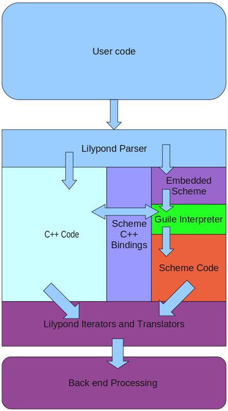

| [Top][Contents][Index][ ? ] |
LilyPond — Contributor’s Guide
|
This manual documents contributing to LilyPond version 2.16.2. It discusses technical issues and policies that contributors should follow. This manual is not intended to be read sequentially; new contributors should only read the sections which are relevant to them. For more information about different jobs, see Help us. |
|
For more information about how this manual fits with the other documentation, or to read this manual in other formats, see Manuals. If you are missing any manuals, the complete documentation can be found at http://www.lilypond.org/. |
| [ << Top ] | [Top][Contents][Index][ ? ] | [ Quick start >> ] | ||
| [ < Top ] | [ Up : Top ] | [ Help us > ] | ||
1. Introduction to contributing
This chapter presents a quick overview of ways that people can help LilyPond.
| 1.1 Help us | ||
| 1.2 Overview of work flow | ||
| 1.3 Summary for experienced developers | ||
| 1.4 Mentors |
| [ << Introduction to contributing ] | [Top][Contents][Index][ ? ] | [ Quick start >> ] | ||
| [ < Introduction to contributing ] | [ Up : Introduction to contributing ] | [ Overview of work flow > ] | ||
1.1 Help us
We need you!
Thank you for your interest in helping us — we would love to see you get involved! Your contribution will help a large group of users make beautifully typeset music.
Even working on small tasks can have a big impact: taking care of them allows experienced developers work on advanced tasks, instead of spending time on those simple tasks.
For a multi-faceted project like LilyPond, sometimes it’s tough to know where to begin. In addition to the avenues proposed below, you can send an e-mail to the Frog meister letting him know your skill set and asking how you can help or proposing a project. He’ll be able to give you guidance on how to get started.
Simple tasks
No programming skills required!
- Mailing list support: answer questions from fellow users.
- Bug reporting: help users create proper Bug reports, and/or join the Bug Squad to organize Issues.
- Grand Regression Test Checking: verify that LilyPond works correctly by examining output of test snippets. Checking one snippet takes less than a minute!
- Documentation: small changes can be proposed by following the guidelines for Documentation suggestions.
- LilyPond Snippet Repository (LSR): create and fix snippets following the guidelines in Adding and editing snippets.
- Discussions, reviews, and testing: the developers often ask for feedback about new documentation, potential syntax changes, and testing new features. Please contribute to these discussions!
Advanced tasks
These jobs generally require that you have the source code and can compile LilyPond.
Note: We suggest that contributors using Windows or MacOS X do not attempt to set up their own development environment; instead, use Lilydev as discussed in Quick start.
Contributors using Linux or FreeBSD may also use Lilydev, but if they prefer their own development environment, they should read Working with source code, and Compiling.
Begin by reading Summary for experienced developers.
- Documentation: for large changes, see Documentation work.
- Website: the website is built from the normal documentation source. See the info about documentation, and also Website work.
- Translations: see Translating the documentation, and Translating the website.
- Bugfixes or new features: the best way to begin is to join the Frogs, and read Programming work.
| [ << Introduction to contributing ] | [Top][Contents][Index][ ? ] | [ Quick start >> ] | ||
| [ < Help us ] | [ Up : Introduction to contributing ] | [ Summary for experienced developers > ] | ||
1.2 Overview of work flow
Advanced note: Experienced developers should skip to Summary for experienced developers.
Git is a version control system that tracks the history of a program’s source code. The LilyPond source code is maintained as a Git repository, which contains:
- all of the source files needed to build LilyPond, and
- a record of the entire history of every change made to every file since the program was born.
The ‘official’ LilyPond Git repository is hosted by the GNU Savannah software forge at http://git.sv.gnu.org. Although, since Git uses a distributed model, technically there is no central repository. Instead, each contributor keeps a complete copy of the entire repository (about 116MB).
Changes made within one contributor’s copy of the repository can
be shared with other contributors using patches. A patch
is a simple text file generated by the git program that
indicates what changes have been made (using a special format).
If a contributor’s patch is approved for inclusion (usually
through the mailing list), someone on the current development team
will push the patch to the official repository.
The Savannah software forge provides two separate interfaces for
viewing the LilyPond Git repository online: cgit and
gitweb. The cgit interface should work faster than gitweb
in most situations, but only gitweb allows you to search through
the source code using grep, which you may find useful.
The cgit interface is at
http://git.sv.gnu.org/cgit/lilypond.git/ and the gitweb
interface is at
http://git.sv.gnu.org/gitweb/?p=lilypond.git.
Git is a complex and powerful tool, but tends to be confusing at
first, particularly for users not familiar with the command line
and/or version control systems. We have created the
lily-git graphical user interface to ease this
difficulty.
Compiling (‘building’) LilyPond allows developers to see how changes to the source code affect the program itself. Compiling is also needed to package the program for specific operating systems or distributions. LilyPond can be compiled from a local Git repository (for developers), or from a downloaded tarball (for packagers). Compiling LilyPond is a rather involved process, and most contributor tasks do not require it.
Contributors can contact the developers through the ‘lilypond-devel’ mailing list. The mailing list archive is located at http://lists.gnu.org/archive/html/lilypond-devel/. If you have a question for the developers, search the archives first to see if the issue has already been discussed. Otherwise, send an email to lilypond-devel@gnu.org. You can subscribe to the developers’ mailing list here: http://lists.gnu.org/mailman/listinfo/lilypond-devel.
Note: Contributors on Windows or MacOS X wishing to compile code or documentation are strongly advised to use our Ubuntu LilyPond Developer Remix, as discussed in Quick start.
| [ << Introduction to contributing ] | [Top][Contents][Index][ ? ] | [ Quick start >> ] | ||
| [ < Overview of work flow ] | [ Up : Introduction to contributing ] | [ Mentors > ] | ||
1.3 Summary for experienced developers
If you are already familiar with typical open-source tools, here’s what you need to know:
- source repository:
hosted by GNU savannah.
http://git.savannah.gnu.org/gitweb/?p=lilypond.git
- environment variables: many maintenance scripts, and many instructions in this guide rely on predefined Environment variables.
- mailing lists: given on Contacts.
- branches:
-
master: base your work from this, but do not push to it. -
staging: after a successful review (see below), push here. -
translation: translators should base their work from this, and also push to it. -
dev/foo: feel free to push any new branch name underdev/.
-
- regression tests:
also known as “regtests”; this is a collection of more than a
thousand .ly files. We track the output of those files between
versions.
If a patch introduces any unintentional changes to the regtests, we will likely reject it – make sure that you are aware and can explain any regtest changes. More info in Regression tests.
- reviews:
after finishing work on a patch or branch:
-
upload it with our custom
git-cl. In addition to uploading it to the google rietveld code review tool, this adds a tracker issue so that we don’t lose your patch. The “status” of your patch is kept on the issue tracker; see Issues.https://github.com/gperciva/git-cl
Your patch will be given
Patch-newstatus. More info in Uploading a patch for review. -
If your patch passes some automatic tests, it will be given
Patch-reviewstatus. This generally happens within 24 hours. -
After that, the patch must wait for the next “patch countdown”,
which occur 3 times a week. If there are a lot of patches waiting
for a countdown, a subset of patches are chosen randomly. When
your patch is put on a countdown, it will be given
Patch-countdownstatus. -
The countdown is a 48-hour period which gives other developers one
last chance to review the patch. If no significant problems are
found, your patch will be given
Patch-pushstatus. -
You may now either push it to the
stagingbranch, or email your patch (created withgit format-patch) to somebody who will push it for you.
Advanced note: Yes, this process means that most patches wait between 60-120 hours before reaching
master. This is unfortunate, but given our limited resources for reviewing patches and a history of unintended breakage inmaster, this is the best compromise we have found. -
upload it with our custom
| [ << Introduction to contributing ] | [Top][Contents][Index][ ? ] | [ Quick start >> ] | ||
| [ < Summary for experienced developers ] | [ Up : Introduction to contributing ] | [ Quick start > ] | ||
1.4 Mentors
We have a semi-formal system of mentorship, similar to the medieval “journeyman/master” training system. New contributors will have a dedicated mentor to help them “learn the ropes”.
Note: This is subject to the availability of mentors; certain jobs have more potential mentors than others.
Contributor responsibilities
- Ask your mentor which sections of the CG you should read.
- If you get stuck for longer than 10 minutes, ask your mentor. They might not be able to help you with all problems, but we find that new contributors often get stuck with something that could be solved/explained with 2 or 3 sentences from a mentor.
- If you have been working on a task much longer than was originally estimated, stop and ask your mentor. There may have been a miscommunication, or there may be some time-saving tips that could vastly simply your task.
- Send patches to your mentor for initial comments.
- Inform your mentor if you’re going to be away for a month, or if you leave entirely. Contributing to lilypond isn’t for everybody; just let your mentor know so that we can reassign that work to somebody else.
- Inform your mentor if you’re willing to do more work – we always have way more work than we have helpers available. We try to avoid overwhelming new contributors, so you’ll be given less work than we think you can handle.
Mentor responsibilities
- Respond to questions from your contributor(s) promptly, even if the response is just “sorry, I don’t know” or “sorry, I’m very busy for the next 3 days; I’ll get back to you then”. Make sure they feel valued.
- Inform your contributor(s) about the expected turnaround for your emails – do you work on lilypond every day, or every weekend, or what? Also, if you’ll be unavailable for longer than usual (say, if you normally reply within 24 hours, but you’ll be at a conference for a week), let your contributors know. Again, make sure they feel valued, and that your silence (if they ask a question during that period) isn’t their fault.
- Inform your contributor(s) if they need to do anything unusual for the builds, such as doing a “make clean / doc-clean” or switching git branches (not expected, but just in case...)
- You don’t need to be able to completely approve patches. Make sure the patch meets whatever you know of the guidelines (for doc style, code indentation, whatever), and then send it on to the frog list or -devel for more comments. If you feel confident about the patch, you can push it directly (this is mainly intended for docs and translations; code patches should almost always go to -devel before being pushed).
- Keep track of patches from your contributor. Either upload them to Rietveld yourself, or help+encourage them to upload the patches themselves. When a patch is on Rietveld, it’s your responbility to get comments for it, and to add a link to the patch to the google tracker. (tag it “patch-new”, or “patch-review” if you feel very confident in it)
- Encourage your contributor to review patches, particularly your own! It doesn’t matter if they’re not familiar with C++ / scheme / build system / doc stuff – simply going through the process is valuable. Besides, anybody can find a typo!
-
Contact your contributor at least once a week. The goal is just
to get a conversation started – there’s nothing wrong with simply
copy&pasting this into an email:
Hey there, How are things going? If you sent a patch and got a review, do you know what you need to fix? If you sent a patch but have no reviews yet, do you know when you will get reviews? If you are working on a patch, what step(s) are you working on?
| [ << Introduction to contributing ] | [Top][Contents][Index][ ? ] | [ Working with source code >> ] | ||
| [ < Mentors ] | [ Up : Top ] | [ LilyDev > ] | ||
2. Quick start
Want to submit a patch for LilyPond? Great! Never created a patch before? Never compiled software before? No problem! This chapter is for you and will help you do this as quickly and easily as possible.
| 2.1 LilyDev | ||
| 2.2 lily-git | ||
| 2.3 Compiling with LilyDev | ||
| 2.4 Now start work! |
| [ << Quick start ] | [Top][Contents][Index][ ? ] | [ Working with source code >> ] | ||
| [ < Quick start ] | [ Up : Quick start ] | [ Where to get LilyDev > ] | ||
2.1 LilyDev
There is a disk image of a ‘remix’ of Ubuntu GNU/Linux available for download which includes all the necessary software and tools to compile both LilyPond and the documentation. Called the “Ubuntu LilyPond Developer Remix”, but known simply as “LilyDev” for short. Although it is not possible to compile LilyPond on Windows and extremely difficult on MacOS, LilyDev can be installed and run inside a ‘virtual machine’ on any of these operating systems without disturbing your main operating system. The LilyDev disk image can also be burnt to a DVD and installed like any other Ubuntu GNU/Linux distribution.
Most virtualization software can be used but we recommend VirtualBox as it is available for all major operating systems and is easy to install & configure.
If you are not familiar with GNU/Linux, it may be beneficial to read a couple of “introduction to Ubuntu” web pages.
Some contributors have recommended a free PDF:
http://www.ubuntupocketguide.com/
For those interested, the LilyDev remix is currently based on a 32bit version of 10.04 LTS Ubuntu (Lucid Lynx).
Note: Apart from installing and configuring LilyDev in VirtualBox, the rest of the chapter on assumes that you are comfortable using the command-line. While this chapter is intended for users who may have never created a patch or compiled software before, experienced developers (who prefer to use their own development environment) may still find it instructive to skim over this section.
| Where to get LilyDev | ||
| Installing LilyDev in VirtualBox | ||
| Configuring LilyDev in VirtualBox |
| [ << Quick start ] | [Top][Contents][Index][ ? ] | [ Working with source code >> ] | ||
| [ < LilyDev ] | [ Up : LilyDev ] | [ Installing LilyDev in VirtualBox > ] | ||
Where to get LilyDev
Download the Ubuntu LilyPond Developer Remix CD image file (approximately 1 GB) from here:
http://www.philholmes.net/lilypond/LilyDev/ubuntu-LilyDev-remix-2.6.iso |
Some advanced users might want this file too:
http://www.philholmes.net/lilypond/LilyDev/ubuntu-LilyDev-remix-2.6.iso.md5 |
(If you don’t recognize what this file is, then you don’t need it.)
| [ << Quick start ] | [Top][Contents][Index][ ? ] | [ Working with source code >> ] | ||
| [ < Where to get LilyDev ] | [ Up : LilyDev ] | [ Configuring LilyDev in VirtualBox > ] | ||
Installing LilyDev in VirtualBox
This section discusses how to install and use LilyDev with VirtualBox.
Note: If you already know how to install a virtual machine using a disc image inside VirtualBox (or your own virtualization software) then you can skip this section and go straight to lily-git.
-
Download Virtualbox from here:
http://www.virtualbox.org/wiki/Downloads
Note: In virtualization terminology, the operating system where Virtualbox is installed, is the known as the host. LilyDev will be installed ‘inside’ Virtualbox as a guest.
-
Start the VirtualBox software and click ‘New’ to create a new
“virtual machine”.
The ‘New Virtual Machine Wizard’ will walk you through setting up your guest virtual machine. Choose an appropriate name for your LilyDev installation and select the ‘Linux’ operating system. When selecting the ‘version’ use ‘Ubuntu’ if available (but not the ‘64 bit’ option). If you do not have that specific option choose ‘Linux 2.6’ (again do not choose any option that has 64 bit next to it).
- Select the amount of RAM you will allow the LilyDev guest to use from your host operating system when it is running. If possible, use at least 700 MB of RAM; the more RAM you can spare from your host the better, although LilyDev will currently use no more than 4 GB (4096 MB) even if you are able to assign more.
- For your ‘Virtual Hard Disk’, leave the ‘Create new hard disk’ option checked, use the default ‘VDI’ and “Dynamically allocated” options for the virtual hard drive. A complete compile of everything (code, docs, regression tests) can reach 10 GB so size your virtual disk and its location accordingly.
- Verify the summary details and click ‘Create’, when you are satisfied. Your new guest will be displayed in the Virtualbox window. Click the ‘Start’ button and the ‘First Run Wizard’ will prompt you for the installation media. Click the browse icon and locate the LilyDev disk image and click through the wizard to start the installation process.
-
When the LilyDev disk image boots, it shows a prompt:
ISOLINUX
boot:Hit the Return key (or wait 30 seconds) and then when the installer screen loads, using the arrow keys select ‘Install - start the installer directly’ to begin the install process of LilyDev on your virtual hard disk. The Ubuntu software will walk you through the complete installation process.
- At the “Prepare disk space” stage, do not be afraid to select “Erase and use the entire disk”, since this refers to your virtual disk, not your machine’s actual hard disk.
-
Click through the rest of the wizard, filling in any appropriate details
when asked and wait for the install to complete.
Note: This will take anywhere from 10 minutes to up to an hour depending on the speed of your computer and if Ubuntu detects you are connected to the internet and needs to download any additional security updates or patches, although these updates are not required to compile LilyPond and it is possible to skip the additional downloads to speed up the install process.
- When prompted by the Ubuntu installer wizard, restart the virtual machine and then when prompted to ‘eject the CD’ by virtual box, just click inside the virtual machine window and hit the return key to reboot the virtual machine. It will not try to restart the installer but start the virtual machine proper. LilyDev is now installed and running!
Known issues and warnings
Not all hardware is supported in all virtualization tools. In particular, some contributors have reported problems with USB network adapters. If you have problems with network connection (for example Internet connection in the host system is lost when you launch virtual system), try installing and running LilyDev with your computer’s built-in network adapter used to connect to the network. Refer to the help documentation that comes with your virtualization software.
| [ << Quick start ] | [Top][Contents][Index][ ? ] | [ Working with source code >> ] | ||
| [ < Installing LilyDev in VirtualBox ] | [ Up : LilyDev ] | [ lily-git > ] | ||
Configuring LilyDev in VirtualBox
VirtualBox has extra ‘guest additions’ which although are not necessary to use LilyDev or compile Lilypond, do provide some additional features to your Virtual Machine to make it easier to work with. Such as being able to dynamically resize the LilyDev window, allow seamless interaction with your mouse pointer on both the host and guest and let you copy/paste between your host and guest if needed.
-
Select the ‘Devices’ menu from the virtual machine window and choose
‘Install Guest Additions...’. This will automount a CD which will
prompt you to autorun it. Click OK and follow the instructions. It is
recommended to reboot the guest when the installation is complete.
Other virtualization software will also have their own ‘guest’ additions, follow the normal procedures for your virtualization software with Ubuntu as the client.
-
Restart Ubuntu to complete the installation of the guest additions.
Advanced note: If you do any kernel upgrades, you may need to reinstall the additional software. Just follow the step above again and reboot when the reinstallation is complete.
Other items that may be helpful:
- In the settings for the virtual machine, set the network to Bridged mode to allow you to access shared folders when using Windows hosts.
-
Set up any additional features, such as ‘Shared Folders’ between
your main operating system and Ubuntu. This is distinct from the
networked share folders in Windows. Consult the external
documentation for this.
Some longtime contributors have reported that ‘shared folders’ are rarely useful and not worth the fuss, particularly since files can be shared over a network instead.
-
Pasting into a terminal is done with
Ctrl+Shift+v. - The “Places” top-menu has shortcuts to a graphical “navigator” like Windows Explorer or the MacOS X Finder.
- Right-click allows you to edit a file with gedit. We recommend using gedit.
- One particular change from Windows and MacOS X is that most software should be installed with your “package manager”; this vastly simplifies the process of installing and configuring software. Go to Applications → Ubuntu Software Center.
| [ << Quick start ] | [Top][Contents][Index][ ? ] | [ Working with source code >> ] | ||
| [ < Configuring LilyDev in VirtualBox ] | [ Up : Quick start ] | [ Where to get lily-git > ] | ||
2.2 lily-git
The ‘LilyPond Contributor’s Git Interface’ (otherwise known as
lily-git.tcl) is a simple-to-use GUI to help you download and
update the LilyPond source code as well as an aid to making software
patches.
| Where to get lily-git | ||
| Configuring lily-git and downloading the source code | ||
| How to use lily-git |
| [ << Quick start ] | [Top][Contents][Index][ ? ] | [ Working with source code >> ] | ||
| [ < lily-git ] | [ Up : lily-git ] | [ Configuring lily-git and downloading the source code > ] | ||
Where to get lily-git
Depending on your development environment, lily-git may already be installed on your computer.
- If you are using LilyDev (see LilyDev) then lily-git is already installed and ready to run.
- For those not using LilyDev then lily-git can be obtained by downloading the software directly. See Manually installing lily-git.tcl.
- Finally, lily-git is always part of the LilyPond source code and is located in ‘~/lilypond-git/scripts/auxillar/lily-git.tcl’.
| [ << Quick start ] | [Top][Contents][Index][ ? ] | [ Working with source code >> ] | ||
| [ < Where to get lily-git ] | [ Up : lily-git ] | [ How to use lily-git > ] | ||
Configuring lily-git and downloading the source code
Note: The rest of this manual assumes that you are using the command-line within a terminal.
-
Type (or copy&paste) into the Terminal:
lily-git.tcl
You will be prompted to enter your name and your email address. This information is used only to identify and label any patches you create. This information can be edited if required later. See Configuring Git. Click on the Submit button to update lily-git with this information.
-
Click on the “Get source” button.
A directory called ‘lilypond-git/’ is now created within your home directory and the complete source code will start to be downloaded into it.
Note: Be patient! The complete source is around 150 Mb.
When the source code has been downloaded, the “Command output” window in lily-git will update and display “Done” on the very last line. The button label will change to say “Update source”.
Note: Some contributors have reported that occasionally nothing happens at this step at all. If this occurs, then try again in a few minutes – it could be an intermittant network problem. If the problem persists, please ask for help.
- Close the lily-git GUI and navigate to the ‘lilypond-git/’ directory to view and edit the source files.
If this is the first time you have compiled LilyPond then please go to Compiling with LilyDev before reading on.
| [ << Quick start ] | [Top][Contents][Index][ ? ] | [ Working with source code >> ] | ||
| [ < Configuring lily-git and downloading the source code ] | [ Up : lily-git ] | [ Compiling with LilyDev > ] | ||
How to use lily-git
Note: Throughout the rest of this manual, most command-line input should be entered from ‘~/lilypond-git/’. This is known as the top source directory and is often referred to as $LILYPOND_GIT.
Note: Only work on one set of changes at once. Do not start work on any new changes until your first set has been accepted.
1. Update source
At the beginning of each session of lilypond work, you should click the “Update source” button to get the latest changes to the source code.
Note: In some rare and unfortunate circumstances, this will result in a merge conflict. If this occurs, follow the instructions for “Abort changes”, below. Your work will not be lost.
2a. New local commit
A single commit typically represents one logical set of related changes (such as a bug-fix), and may incorporate changes to multiple files at the same time.
When you’re finished making the changes for a commit, click the “New local commit” button. This will open the “Git Commit Message” window. The message header is required, and the message body is optional.
After entering a commit message, click “OK” to finalize the commit.
Advanced note: for more information regarding commits and commit messages, see Commits and patches.
2b. Amend previous commit
You can go back and make changes to the most recent commit with the “Amend previous commit” button. This is useful if a mistake is found after you have clicked the “New local commit” button.
To amend the most recent commit, re-edit the source files as needed and then click the “Amend previous commit” button. The earlier version of the commit is not saved, but is replaced by the new one.
Note: This does not update the patch files; if you have a patch file from an earlier version of the commit, you will need to make another patch set when using this feature. The old patch file will not be saved, but will be replaced by the new one after you click on “Make patch set”.
3. Make patch set
Before making a patch set from any commits, you should click the “Update source” button to make sure the commits are based on the most recent remote snapshot.
When you click the “Make patch set” button,
lily-git.tcl will produce patch files for any new
commits, saving them to the current directory. The command output
will display the name of the new patch files near the end of the
output:
0001-CG-add-lily-git-instructions.patch Done.
Send patch files to the appropriate place:
- If you have a mentor, send it to them via email.
- New contributors should send the patch attached to an email to frogs@lilynet.net. Please add “[PATCH]” to the subject line.
- Translators should send patches to translations@lilynet.net.
- More experienced contributors should upload the patch for web-based review. This requires additional software and use of the command-line; see Uploading a patch for review.
The “Abort changes – Reset to origin” button
Note: Only use this if your local commit history gets hopelessly confused!
The button labeled “Abort changes – Reset to origin” will copy
all changed files to a subdirectory of ‘lilypond-git/’ named
‘aborted_edits/’, and will reset the repository to the
current state of the remote repository (at git.sv.gnu.org).
| [ << Quick start ] | [Top][Contents][Index][ ? ] | [ Working with source code >> ] | ||
| [ < How to use lily-git ] | [ Up : Quick start ] | [ Now start work! > ] | ||
2.3 Compiling with LilyDev
LilyDev is our ‘remix’ of Ubuntu which contains all the necessary dependencies to do lilypond development; for more information, see LilyDev.
Preparing the build
To prepare the build directory, enter (or copy&paste) the below text. This should take less than a minute.
cd ~/lilypond-git/ sh autogen.sh --noconfigure mkdir -p build/ cd build/ ../configure
Building lilypond
Compiling lilypond will likely take between 5 and 60 minutes, depending on your computer’s speed and available RAM. We recommend that you minimize the terminal window while it is building; this can have a non-negligible effect on compilation speed.
cd ~/lilypond-git/build/ make
You may run the compiled lilypond with:
cd ~/lilypond-git/build/ out/bin/lilypond my-file.ly
Building the documentation
Compiling the documentation is a much more involved process, and will likely take 2 to 10 hours.
cd ~/lilypond-git/build/ make make doc
The documentation is put in ‘out-www/offline-root/’. You may view the html files by entering the below text; we recommend that you bookmark the resulting page:
firefox ~/lilypond-git/build/out-www/offline-root/index.html
Installing
Don’t. There is no reason to install lilypond within LilyDev. All development work can (and should) stay within the ‘$HOME/lilypond-git/’ directory, and any personal composition or typesetting work should be done with an official GUB release.
Problems and other options
To select different build options, or isolate certain parts of the build, or to use multiple CPUs while building, read Compiling.
In particular, contributors working on the documentation should be aware of some bugs in the build system, and should read the workarounds in Generating documentation.
| [ << Quick start ] | [Top][Contents][Index][ ? ] | [ Working with source code >> ] | ||
| [ < Compiling with LilyDev ] | [ Up : Quick start ] | [ Working with source code > ] | ||
2.4 Now start work!
LilyDev users may now skip to the chapter which is aimed at their intended contributions:
These chapters are mainly intended for people not using LilyDev, but they contain extra information about the “behind-the-scenes” activities. We recommend that you read these at your leisure, a few weeks after beginning work with LilyDev.
| [ << Quick start ] | [Top][Contents][Index][ ? ] | [ Compiling >> ] | ||
| [ < Now start work! ] | [ Up : Top ] | [ Manually installing lily-git.tcl > ] | ||
3. Working with source code
Note: New contributors should read Quick start, and in particular lily-git, instead of this chapter.
Advanced contributors will find this material quite useful, particularly if they are working on major new features.
| 3.1 Manually installing lily-git.tcl | ||
| 3.2 Starting with Git | ||
| 3.3 Basic Git procedures | ||
| 3.4 Advanced Git procedures | ||
| 3.5 Git on Windows | ||
| 3.6 Repository directory structure | ||
| 3.7 Other Git documentation |
| [ << Working with source code ] | [Top][Contents][Index][ ? ] | [ Compiling >> ] | ||
| [ < Working with source code ] | [ Up : Working with source code ] | [ Starting with Git > ] | ||
3.1 Manually installing lily-git.tcl
We have created an easy-to-use GUI to simplify git for new contributors. If you are comfortable with the command-line, then skip ahead to Starting with Git.
Note: These instructions are only for people who are not using LilyDev.
-
If you haven’t already, download and install Git.
- Windows users: download the
.exefile labeled “Full installer for official Git” from:http://code.google.com/p/msysgit/downloads/list
- Other operating systems: either install
gitwith your package manager, or download it from the “Binaries” section of:http://git-scm.com/download
- Windows users: download the
-
Download the
lily-git.tclscript from:http://git.sv.gnu.org/cgit/lilypond.git/plain/scripts/auxiliar/lily-git.tcl
-
To run the program from the command line, navigate to the
directory containing
lily-git.tcland enter:wish lily-git.tcl
-
Click on the “Get source” button.
This will create a directory called ‘lilypond-git/’ within your home directory, and will download the source code into that directory (around 150 Mb). When the process is finished, the “Command output” window will display “Done”, and the button label will change to say “Update source”.
- Navigate to the ‘lilypond-git/’ directory to view the source files.
Note: Throughout the rest of this manual, most command-line input should be entered from ‘~/lilypond-git/’. This is referred to as the top source directory.
Further instructions are in How to use lily-git.
| [ << Working with source code ] | [Top][Contents][Index][ ? ] | [ Compiling >> ] | ||
| [ < Manually installing lily-git.tcl ] | [ Up : Working with source code ] | [ Setting up > ] | ||
3.2 Starting with Git
Using the Git program directly (as opposed to using the
lily-git.tcl GUI) allows you to have much greater control
over the contributing process. You should consider using Git if
you want to work on complex projects, or if you want to work on
multiple projects concurrently.
| 3.2.1 Setting up | ||
| 3.2.2 Git for the impatient | ||
| 3.2.3 Other repositories | ||
| 3.2.4 Downloading remote branches |
| [ << Working with source code ] | [Top][Contents][Index][ ? ] | [ Compiling >> ] | ||
| [ < Starting with Git ] | [ Up : Starting with Git ] | [ Installing Git > ] | ||
3.2.1 Setting up
Note: These instructions assume that you are using the command-line version of Git 1.5 or higher. Windows users should skip to Git on Windows.
| Installing Git | ||
| Initializing a repository | ||
| Configuring Git |
| [ << Working with source code ] | [Top][Contents][Index][ ? ] | [ Compiling >> ] | ||
| [ < Setting up ] | [ Up : Setting up ] | [ Initializing a repository > ] | ||
Installing Git
If you are using a Unix-based machine, the easiest way to download
and install Git is through a package manager such as rpm
or apt-get – the installation is generally automatic.
The only required package is (usually) called git-core,
although some of the auxiliary git* packages are
also useful (such as gitk).
Alternatively, you can visit the Git website (http://git-scm.com/) for downloadable binaries and tarballs.
| [ << Working with source code ] | [Top][Contents][Index][ ? ] | [ Compiling >> ] | ||
| [ < Installing Git ] | [ Up : Setting up ] | [ Configuring Git > ] | ||
Initializing a repository
Once Git is installed, get a copy of the source code:
git clone git://git.sv.gnu.org/lilypond.git ~/lilypond-git
The above command will put the it in ‘~/lilypond-git’, where
~ represents your home directory.
Technical details
This creates (within the ‘~/lilypond-git/’ directory) a subdirectory called ‘.git/’, which Git uses to keep track of changes to the repository, among other things. Normally you don’t need to access it, but it’s good to know it’s there.
| [ << Working with source code ] | [Top][Contents][Index][ ? ] | [ Compiling >> ] | ||
| [ < Initializing a repository ] | [ Up : Setting up ] | [ Git for the impatient > ] | ||
Configuring Git
Note: Throughout the rest of this manual, all command-line input should be entered from the top directory of the Git repository being discussed (eg. ‘~/lilypond-git/’). This is referred to as the top source directory.
Before working with the copy of the main LilyPond repository, you
should configure some basic settings with the
git config command. Git allows you to set both
global and repository-specific options.
To configure settings that affect all repositories, use the ‘--global’ command line option. For example, the first two options that you should always set are your name and email, since Git needs these to keep track of commit authors:
git config --global user.name "John Smith" git config --global user.email john@example.com
To configure Git to use colored output where possible, use:
git config --global color.ui auto
The text editor that opens when using git commit
can also be changed. If none of your editor-related environment
variables are set ($GIT_EDITOR, $VISUAL, or $EDITOR), the default
editor is usually vi or vim. If you’re not
familiar with either of these, you should probably change the
default to an editor that you know how to use. For example, to
change the default editor to nano, enter:
git config --global core.editor nano
Finally, and in some ways most importantly, let’s make sure that we know what branch we’re on. If you’re not using LilyDev, add this to your ‘~/.bashrc’:
export PS1="\u@\h \w\$(__git_ps1)$ "
If you are not using LilyDev, you may need to install the
additional git-completion package, but it is definitely
worth it.
Technical details
Git stores the information entered with
git config --global in the file
‘.gitconfig’, located in your home directory. This file can
also be modified directly, without using
git config. The ‘.gitconfig’ file generated
by the above commands would look like this:
[user]
name = John Smith
email = john@example.com
[color]
ui = auto
[core]
editor = nano
Using the git config command without the
‘--global’ option configures repository-specific settings,
which are stored in the file ‘.git/config’. This file is
created when a repository is initialized (using
git init), and by default contains these lines:
[core]
repositoryformatversion = 0
filemode = true
bare = false
logallrefupdates = true
However, since different repository-specific options are recommended for different development tasks, it is best to avoid setting any now. Specific recommendations will be mentioned later in this manual.
| [ << Working with source code ] | [Top][Contents][Index][ ? ] | [ Compiling >> ] | ||
| [ < Configuring Git ] | [ Up : Starting with Git ] | [ Other repositories > ] | ||
3.2.2 Git for the impatient
Advanced note: The intent of this subsection is to get you working on lilypond as
soon as possible. If you want to learn about git, go read
Other Git documentation.
Also, these instructions are designed to eliminate the most common
problems we have found in using git. If you already know git and
have a different way of working, great! Feel free to ignore the
advice in this subsection.
Ok, so you’ve been using lily-git.tcl for a while, but
it’s time to take the next step. Since our review process delays
patches by 60-120 hours, and you want to be able to work on other
stuff while your previous work is getting reviewed, you’re going
to use branches.
You can think of a branch as being a separate copy of the source code. But don’t worry about it.
Start work: make a new branch
Let’s pretend you want to add a section to the Contributor’s Guide about using branches.
Start by updating the repository, then making a new branch. Call
the branch anything you want as long as the name starts with
dev/. Branch names that don’t begin with dev/ are
reserved for special things in lilypond.
git checkout master git pull -r origin master git branch dev/cg
Switch to that branch
Nothing has happened to the files yet. Let’s change into the new branch. You can think of this as “loading a file”, although in this case it’s really “loading a directory and subdirectories full of files”.
git checkout dev/cg
Your prompt now shows you that you’re on the other branch:
gperciva@LilyDev:~/lilypond-git (dev/cg)$
To be able to manage multiple lilypond issues at once, you’ll need to switch branches. You should have each lilypond issue on a separate branch. Switching branches is easy:
git checkout master git checkout origin/staging git checkout origin/release/unstable git checkout dev/cg
Branches that begin with origin/ are part of the remote repository,
rather than your local repository, so when you check them out you get a
temporary local branch. You should never make changes directly on a
branch beginning with origin/. You get changes into the remote
repository by making them in local branches, and then pushing them to
origin/staging as described below.
Make your changes
Edit files, then commit them.
git commit -a
Remember how I said that switching to a branch was like “loading a directory”? Well, you’ve just “saved a directory”, so that you can “load” it later.
Advanced note: If you have used cvs or svn, you may
be very confused: those programs use “commit” to mean
“upload my changes to the shared source repository”.
Unfortunately, just to be different, git commit
means “save my changes to the files”.
When you create a new file, you need to add it to git, then commit it:
git add input/regression/avoid-crash-on-condition.ly git commit -a
Edit more files. Commit them again. Edit yet more files, commit
them again. Go eat dinner. Switch to master so you can
play with the latest changes from other developers. Switch back
to your branch and edit some more. Commit those changes.
At this stage, don’t worry about how many commits you have.
Save commits to external files
Branches are nerve-wracking until you get used to them. You can save your hard work as individual ‘.patch’ files. Be sure to commit your changes first.
git commit -a git format-patch master
I personally have between 4 and 20 of those files saved in a special folder at any point in time. Git experts might laugh as that behavior, but I feel a lot better knowing that I’ve got those backups.
Prepare your branch for review
After committing, you can update your branch with the latest master:
git commit -a git checkout master git pull -r origin master git checkout dev/cg git rebase master
Due to the speed of lilypond development, sometimes
master has changed so much that your branch can no
longer be applied to it. In that happens, you will have a merge
conflict. Stop for a moment to either cry or have a stiff drink,
then proceed to Merge conflicts.
Upload your branch
Finally, you’re finished your changes. Time to upload for review. Make sure that you’re on your branch, then upload:
git checkout dev/cg git-cl upload master
Wait for reviews
While you’re waiting for a countdown and reviews, go back to
master, make a dev/doc-beams branch, and start adding doc
suggestions from issue 12345 from the tracker. Or make a
dev/page-breaks and fix bug in page breaking. Or whatever.
Don’t worry, your dev/cg is safe.
Combining commits (optional unless you have broken commits)
Does the history of your branch look good?
gitk
If you have a lot of commits on your branch, you might want to combine some of them. Alternately, you may like your commits, but want to edit the commit messages.
git rebase -i master
Follow instructions on the screen.
Note: This step gives you the power to completely lose your
work. Make a backup of your commits by saving them to
‘.patch’ files before playing with this. If you do lose
your work, don’t despair. You can get it back by using git reflog.
The use of git reflog is not covered here.
Note: If any of the commits on your branch represent partial work that will not pass make && make doc, you must squash these commits into a working commit. Otherwise, your push will break staging and will not be able to be merged to master. In general, you will be safer to have one commit per push.
Push to staging
When you’ve got the coveted Patch-push status, time to
prepare your upload:
git fetch git rebase origin/staging dev/cg~0 gitk HEAD
Note: Do not skip the gitk step; a quick 5-second
check of the visual history can save a great deal of frustration
later on. You should see a set of your commits that are ahead of
origin/staging, with no label for the top commit – only a
SHA1 id.
Note: If origin/staging and origin/master are the
same commit, your branch (dev/cg in the example) will also
be at the top of the gitk tree. This is normal.
If everything looks good, push it:
git push origin HEAD:staging
Then change back to your working branch:
git checkout dev/cg
Note: It is a best practice to avoid rebasing any of your branches
to origin/staging. If origin/staging is broken, it
will be deleted and rebuilt. If you have rebased one of your branches
to origin/staging, the broken commits can end up in your branch.
The commands given above do the rebase on a temporary branch, and avoid
changing your working branch.
Delete your branch (safe)
After a few hours, if there’s nothing wrong with your branch, it
should be automatically moved to origin/master. Update,
then try removing your branch:
git checkout master git pull -r origin master git branch -d dev/cg
The last command will fail if the contents of dev/cg are
not present in origin/master.
Delete your branch (UNSAFE)
Sometimes everything goes wrong. If you want to remove a branch even though
it will cause your work to be lost (that is, if the contents of dev/cg
are not present in master), follow the instructions in “Delete
your branch (safe)”, but replace the -d on the final line with
a -D.
| [ << Working with source code ] | [Top][Contents][Index][ ? ] | [ Compiling >> ] | ||
| [ < Git for the impatient ] | [ Up : Starting with Git ] | [ lilypond-extra > ] | ||
3.2.3 Other repositories
We have a few other code repositories.
| lilypond-extra | ||
| Grand Unified Builder (GUB) | ||
| lilypad | ||
| yet more repositories |
| [ << Working with source code ] | [Top][Contents][Index][ ? ] | [ Compiling >> ] | ||
| [ < Other repositories ] | [ Up : Other repositories ] | [ Grand Unified Builder (GUB) > ] | ||
lilypond-extra
There is a separate repository for general administrative scripts,
as well as pictures and media files for the website. People
interested in working on the website should download this
repository, and set their $LILYPOND_WEB_MEDIA_GIT
environment variable to point to that repository.
https://github.com/gperciva/lilypond-extra
To configure an environment variable in bash (the default for most GNU/Linux distributions),
export LILYPOND_WEB_MEDIA_GIT=$HOME/dir/of/lilypond-extra/
| [ << Working with source code ] | [Top][Contents][Index][ ? ] | [ Compiling >> ] | ||
| [ < lilypond-extra ] | [ Up : Other repositories ] | [ lilypad > ] | ||
Grand Unified Builder (GUB)
Another item of interest might be the Grand Unified Builder, our cross-platform building tool. Since it is used by other projects as well, it is not stored in our gub repository. For more info, see http://lilypond.org/gub.
There are two locations for this repository: the version being used to build lilypond, which is at
http://github.com/gperciva/gub
and the original version by Jan Nieuwenhuizen, kept at
http://github.com/janneke/gub
| [ << Working with source code ] | [Top][Contents][Index][ ? ] | [ Compiling >> ] | ||
| [ < Grand Unified Builder (GUB) ] | [ Up : Other repositories ] | [ yet more repositories > ] | ||
lilypad
Our binary releases on MacOS X and Windows contain a lightweight text editor. This code is here:
https://github.com/gperciva/lilypad
| [ << Working with source code ] | [Top][Contents][Index][ ? ] | [ Compiling >> ] | ||
| [ < lilypad ] | [ Up : Other repositories ] | [ Downloading remote branches > ] | ||
yet more repositories
There are a few other repositories floating around, which will hopefully be documented in the near future.
| [ << Working with source code ] | [Top][Contents][Index][ ? ] | [ Compiling >> ] | ||
| [ < yet more repositories ] | [ Up : Starting with Git ] | [ Organization of remote branches > ] | ||
3.2.4 Downloading remote branches
Note: contains obsolete + misleading info
| Organization of remote branches | ||
| LilyPond repository sources | ||
| Downloading individual branches | ||
| Downloading all remote branches | ||
| Other branches |
| [ << Working with source code ] | [Top][Contents][Index][ ? ] | [ Compiling >> ] | ||
| [ < Downloading remote branches ] | [ Up : Downloading remote branches ] | [ LilyPond repository sources > ] | ||
Organization of remote branches
The main LilyPond repository is organized into branches to facilitate development. These are often called remote branches to distinguish them from local branches you might create yourself (see Using local branches).
The master branch contains all the source files used to
build LilyPond, which includes the program itself (both stable and
development releases), the documentation (and its translations),
and the website. Generally, the master branch is expected
to compile successfully.
The translation branch is a side branch that
allows translators to work without needing to worry about
compilation problems. Periodically, the Translation Meister
(after verifying that it doesn’t break compilation), will
merge this branch into staging to incorporate
recent translations. Similarly, the master branch is
usually merged into the translation branch after
significant changes to the English documentation. See
Translating the documentation for details.
| [ << Working with source code ] | [Top][Contents][Index][ ? ] | [ Compiling >> ] | ||
| [ < Organization of remote branches ] | [ Up : Downloading remote branches ] | [ Downloading individual branches > ] | ||
LilyPond repository sources
The recommended source for downloading a copy of the main repository is:
git://git.sv.gnu.org/lilypond.git
However, if your internet router filters out connections using the GIT protocol, or if you experience difficulty connecting via GIT, you can try these other sources:
ssh://git.sv.gnu.org/srv/git/lilypond.git http://git.sv.gnu.org/r/lilypond.git
The SSH protocol can only be used if your system is properly set up to use it. Also, the HTTP protocol is slowest, so it should only be used as a last resort.
| [ << Working with source code ] | [Top][Contents][Index][ ? ] | [ Compiling >> ] | ||
| [ < LilyPond repository sources ] | [ Up : Downloading remote branches ] | [ Downloading all remote branches > ] | ||
Downloading individual branches
Note: obsolete, should be deleted!
Once you have initialized an empty Git repository on your system (see Initializing a repository), you can download a remote branch into it. Make sure you know which branch you want to start with.
To download the master branch, enter the following:
git remote add -ft master -m master \ origin git://git.sv.gnu.org/lilypond.git/
To download the translation branch, enter:
git remote add -ft translation -m \ translation origin git://git.sv.gnu.org/lilypond.git/
The git remote add process could take up to
ten minutes, depending on the speed of your connection. The
output will be something like this:
Updating origin remote: Counting objects: 235967, done. remote: Compressing objects: 100% (42721/42721), done. remote: Total 235967 (delta 195098), reused 233311 (delta 192772) Receiving objects: 100% (235967/235967), 68.37 MiB | 479 KiB/s, done. Resolving deltas: 100% (195098/195098), done. From git://git.sv.gnu.org/lilypond * [new branch] master -> origin/master From git://git.sv.gnu.org/lilypond * [new tag] flower/1.0.1 -> flower/1.0.1 * [new tag] flower/1.0.10 -> flower/1.0.10 ⋮ * [new tag] release/2.9.6 -> release/2.9.6 * [new tag] release/2.9.7 -> release/2.9.7
When git remote add is finished, the remote
branch should be downloaded into your repository—though not yet
in a form that you can use. In order to browse the source code
files, you need to create and checkout your own
local branch. In this case, however, it is easier to have Git
create the branch automatically by using the checkout
command on a non-existent branch. Enter the following:
git checkout -b branch origin/branch
where branch is the name of your tracking branch,
either master or translation.
Git will issue some warnings; this is normal:
warning: You appear to be on a branch yet to be born. warning: Forcing checkout of origin/master. Branch master set up to track remote branch master from origin. Already on 'master'
By now the source files should be accessible—you should be able to edit any files in the ‘lilypond-git/’ directory using a text editor of your choice. But don’t start just yet! Before editing any source files, learn how to keep your changes organized and prevent problems later—read Basic Git procedures.
Technical Details
The git remote add command should add some
lines to your local repository’s ‘.git/config’ file:
[remote "origin"]
url = git://git.sv.gnu.org/lilypond.git/
fetch = +refs/heads/master:refs/remotes/origin/master
| [ << Working with source code ] | [Top][Contents][Index][ ? ] | [ Compiling >> ] | ||
| [ < Downloading individual branches ] | [ Up : Downloading remote branches ] | [ Other branches > ] | ||
Downloading all remote branches
To download all remote branches at once, you can clone
the entire repository:
git clone git://git.sv.gnu.org/lilypond.git
| [ << Working with source code ] | [Top][Contents][Index][ ? ] | [ Compiling >> ] | ||
| [ < Downloading all remote branches ] | [ Up : Downloading remote branches ] | [ Basic Git procedures > ] | ||
Other branches
Most contributors will never need to touch the other branches. If you wish to do so, you will need more familiarity with Git; please see Other Git documentation.
-
dev/XYZ: These branches are for individual developers. They store code which is not yet stable enough to be added to themasterbranch. -
stable/XYZ: The branches are kept for archival reasons. -
archive/XYZ: The branches are kept for archival reasons.
| [ << Working with source code ] | [Top][Contents][Index][ ? ] | [ Compiling >> ] | ||
| [ < Other branches ] | [ Up : Working with source code ] | [ The Git contributor's cycle > ] | ||
3.3 Basic Git procedures
| 3.3.1 The Git contributor’s cycle | ||
| 3.3.2 Pulling and rebasing | ||
| 3.3.3 Using local branches | ||
| 3.3.4 Commits and patches |
| [ << Working with source code ] | [Top][Contents][Index][ ? ] | [ Compiling >> ] | ||
| [ < Basic Git procedures ] | [ Up : Basic Git procedures ] | [ Pulling and rebasing > ] | ||
3.3.1 The Git contributor’s cycle
Here is a simplified view of the contribution process on Git:
- Update your local repository by pulling the most recent updates from the remote repository.
- Edit source files within your local repository’s working directory.
- Commit the changes you’ve made to a local branch.
- Generate a patch to share your changes with the developers.
| [ << Working with source code ] | [Top][Contents][Index][ ? ] | [ Compiling >> ] | ||
| [ < The Git contributor's cycle ] | [ Up : Basic Git procedures ] | [ Using local branches > ] | ||
3.3.2 Pulling and rebasing
When developers push new patches to the git.sv.gnu.org
repository, your local repository is not automatically
updated. It is important to keep your repository up-to-date by
periodically pulling the most recent commits from
the remote branch. Developers expect patches to be as current as
possible, since outdated patches require extra work before they
can be used.
Occasionally you may need to rework some of your own modifications to match changes made to the remote branch (see Resolving conflicts), and it’s considerably easier to rework things incrementally. If you don’t update your repository along the way, you may have to spend a lot of time resolving branch conflicts and reconfiguring much of the work you’ve already done.
Fortunately, Git is able to resolve certain types of branch
conflicts automatically with a process called rebasing.
When rebasing, Git tries to modify your old commits so they appear
as new commits (based on the latest updates). For a more involved
explanation, see the git-rebase man page.
To pull without rebasing (recommended for translators), use the following command:
git pull # recommended for translators
If you’re tracking the remote master branch, you should add
the ‘-r’ option (short for ‘--rebase’) to keep commits
on your local branch current:
git pull -r # use with caution when translating
If you don’t edit translated documentation and don’t want to type ‘-r’ every time, configure the master branch to rebase by default with this command:
git config branch.master.rebase true
If pull fails because of a message like
error: Your local changes to 'Documentation/learning/tutorial.itely' would be overwritten by merge. Aborting.
or
Documentation/learning/tutorial.itely: needs update refusing to pull with rebase: your working tree is not up-to-date
it means that you have modified some files in you working tree
without committing changes (see Commits and patches); you
can use the git stash command to work around this:
git stash # save uncommitted changes git pull -r # pull using rebase (translators omit "-r") git stash pop # reapply previously saved changes
Note that git stash pop will try to apply a
patch, and this may create a conflict. If this happens, see
Resolving conflicts.
TODO: I think the next paragraph is confusing. Perhaps prepare the reader for new terms ‘committish’ and ‘head’? -mp
Note: translators and documentation editors, if you have
changed committishes in the head of translated files using commits
you have not yet pushed to git.sv.gnu.org, please do not
rebase. If you want to avoid wondering whether you should rebase
each time you pull, please always use committishes from master
and/or translation branch on git.sv.gnu.org, which
in particular implies that you must push your changes to
documentation except committishes updates (possibly after having
rebased), then update the committishes and push them.
TODO: when committishes automatic conditional update have been tested and documented, append the following to the warning above: Note that using update-committishes make target generally touches committishes.
Technical details
The git config command mentioned above adds the
line rebase = true to the master branch in your local
repository’s ‘.git/config’ file:
[branch "master"]
remote = origin
merge = refs/heads/master
rebase = true
| [ << Working with source code ] | [Top][Contents][Index][ ? ] | [ Compiling >> ] | ||
| [ < Pulling and rebasing ] | [ Up : Basic Git procedures ] | [ Creating and removing branches > ] | ||
3.3.3 Using local branches
| Creating and removing branches | ||
| Listing branches and remotes | ||
| Checking out branches | ||
| Merging branches |
| [ << Working with source code ] | [Top][Contents][Index][ ? ] | [ Compiling >> ] | ||
| [ < Using local branches ] | [ Up : Using local branches ] | [ Listing branches and remotes > ] | ||
Creating and removing branches
Local branches are useful when you’re working on several different projects concurrently. To create a new branch, enter:
git branch name
To delete a branch, enter:
git branch -d name
Git will ask you for confirmation if it sees that data would be lost by deleting the branch. Use ‘-D’ instead of ‘-d’ to bypass this. Note that you cannot delete a branch if it is currently checked out.
| [ << Working with source code ] | [Top][Contents][Index][ ? ] | [ Compiling >> ] | ||
| [ < Creating and removing branches ] | [ Up : Using local branches ] | [ Checking out branches > ] | ||
Listing branches and remotes
You can get the exact path or URL of all remote branches by running:
git remote -v
To list Git branches on your local repositories, run
git branch # list local branches only git branch -r # list remote branches git branch -a # list all branches
| [ << Working with source code ] | [Top][Contents][Index][ ? ] | [ Compiling >> ] | ||
| [ < Listing branches and remotes ] | [ Up : Using local branches ] | [ Merging branches > ] | ||
Checking out branches
To know the currently checked out branch, i.e. the branch whose source files are present in your working tree, read the first line of the output of
git status
The currently checked out branch is also marked with an asterisk
in the output of git branch.
You can check out another branch other_branch, i.e.
check out other_branch to the working tree, by
running
git checkout other_branch
Note that it is possible to check out another branch while having
uncommitted changes, but it is not recommended unless you know
what you are doing; it is recommended to run git status
to check this kind of issue before checking out another branch.
| [ << Working with source code ] | [Top][Contents][Index][ ? ] | [ Compiling >> ] | ||
| [ < Checking out branches ] | [ Up : Using local branches ] | [ Commits and patches > ] | ||
Merging branches
To merge branch foo into branch bar,
i.e. to “add” all changes made in branch foo to
branch bar, run
git checkout bar git merge foo
If any conflict happens, see Resolving conflicts.
There are common usage cases for merging: as a translator, you will
often want the Translations meister to merge master into
translation; on the other hand, the Translations meister wants
to merge translation into staging whenever he has
checked that translation builds successfully.
| [ << Working with source code ] | [Top][Contents][Index][ ? ] | [ Compiling >> ] | ||
| [ < Merging branches ] | [ Up : Basic Git procedures ] | [ Understanding commits > ] | ||
3.3.4 Commits and patches
| Understanding commits | ||
| Making commits | ||
| Commit messages | ||
| Making patches | ||
| Uploading a patch for review |
| [ << Working with source code ] | [Top][Contents][Index][ ? ] | [ Compiling >> ] | ||
| [ < Commits and patches ] | [ Up : Commits and patches ] | [ Making commits > ] | ||
Understanding commits
Technically, a commit is a single point in the history of a branch, but most developers use the term to mean a commit object, which stores information about a particular revision. A single commit can record changes to multiple source files, and typically represents one logical set of related changes (such as a bug-fix). You can list the ten most recent commits in your current branch with this command:
git log -10 --oneline
If you’re using an older version of Git and get an ‘unrecognized argument’ error, use this instead:
git log -10 --pretty=oneline --abbrev-commit
More interactive lists of the commits on the remote master
branch are available at
http://git.sv.gnu.org/gitweb/?p=lilypond.git;a=shortlog and
http://git.sv.gnu.org/cgit/lilypond.git/log/.
| [ << Working with source code ] | [Top][Contents][Index][ ? ] | [ Compiling >> ] | ||
| [ < Understanding commits ] | [ Up : Commits and patches ] | [ Commit messages > ] | ||
Making commits
Once you have modified some source files in your working directory, you can make a commit with the following procedure:
- Make sure you’ve configured Git properly (see Configuring Git). Check that your changes meet the requirements described in Code style and/or Documentation policy. For advanced edits, you may also want to verify that the changes don’t break the compilation process.
-
Run the following command:
git status
to make sure you’re on the right branch, and to see which files have been modified, added or removed, etc. You may need to tell Git about any files you’ve added by running one of these:
git add file # add untracked file individually git add . # add all untracked files in current directory
After
git add, rungit statusagain to make sure you got everything. You may also need to modify ‘GNUmakefile’. -
Preview the changes about to be committed (to make sure everything
looks right) with:
git diff HEAD
The
HEADargument refers to the most recent commit on the currently checked-out branch. -
Generate the commit with:
git commit -a
The ‘-a’ is short for ‘--all’ which includes modified and deleted files, but only those newly created files that have previously been added.
| [ << Working with source code ] | [Top][Contents][Index][ ? ] | [ Compiling >> ] | ||
| [ < Making commits ] | [ Up : Commits and patches ] | [ Making patches > ] | ||
Commit messages
When you run the git commit -a command, Git
automatically opens the default text editor so you can enter a
commit message. If you find yourself in a foreign editing
environment, you’re probably in vi or vim. If
you want to switch to an editor you’re more familiar with, quit by
typing :q! and pressing <Enter>. See
Configuring Git for instructions on changing the default
editor.
In any case, Git will open a text file for your commit message that looks like this:
# Please enter the commit message for your changes. Lines starting # with '#' will be ignored, and an empty message aborts the commit. # On branch master # Changes to be committed: # (use "git reset HEAD <file>..." to unstage) # # modified: working.itexi #
Your commit message should begin with a one-line summary describing the change (no more than 50 characters long), and if necessary a blank line followed by several lines giving the details:
Doc: add Baerenreiter and Henle solo cello suites Added comparison of solo cello suite engravings to new essay with high-res images, fixed cropping on Finale example.
Commit messages often start with a short prefix describing the general location of the changes. If a commit affects the documentation in English (or in several languages simultaneously) the commit message should be prefixed with “Doc: ”. If the commit affects only one of the translations, the commit message should be prefixed with “Doc-**: ”, where ** is the two-letter language code. Commits that affect the website should use “Web: ” for English, and “Web-**: ” for the other languages. Also, changes to a single file are often prefixed with the name of the file involved. Visit the links listed in Understanding commits for examples.
| [ << Working with source code ] | [Top][Contents][Index][ ? ] | [ Compiling >> ] | ||
| [ < Commit messages ] | [ Up : Commits and patches ] | [ Uploading a patch for review > ] | ||
Making patches
If you want to share your changes with other contributors and developers, you need to generate patches from your commits. We prefer it if you follow the instructions in Uploading a patch for review. However, we present an alternate method here.
You should always run git pull -r (translators
should leave off the ‘-r’) before doing this to ensure that
your patches are as current as possible.
Once you have made one or more commits in your local repository, and pulled the most recent commits from the remote branch, you can generate patches from your local commits with the command:
git format-patch origin
The origin argument refers to the remote tracking branch at
git.sv.gnu.org. This command generates a separate patch
for each commit that’s in the current branch but not in the remote
branch. Patches are placed in the current working directory and
will have names that look something like this:
0001-Doc-Fix-typos.patch 0002-Web-Remove-dead-links.patch ⋮
Send an email (must be less than 64 KB) to lilypond-devel@gnu.org briefly explaining your work, with the patch files attached. Translators should send patches to translations@lilynet.net. After your patches are reviewed, the developers may push one or more of them to the main repository or discuss them with you.
| [ << Working with source code ] | [Top][Contents][Index][ ? ] | [ Compiling >> ] | ||
| [ < Making patches ] | [ Up : Commits and patches ] | [ Advanced Git procedures > ] | ||
Uploading a patch for review
Any non-trivial change should be uploaded to our “Rietveld” code review website:
http://codereview.appspot.com/
git-cl install
LilyDev users should skip over these ‘install’ instructions.
-
Install
git-clby entering:git clone https://github.com/gperciva/git-cl.git
If that command fails for some reason, try this instead:
git clone git://github.com/gperciva/git-cl.git
-
Add the ‘git-cl/’ directory to your PATH,
or create a symbolic link to the
git-clandupload.pyscripts in one of your PATH directories (such as ‘$HOME/bin’).In Ubuntu (and LilyDev), you can add directories to PATH by adding this line to a hidden file ‘.bashrc’, located in your home directory:
PATH=~/type-here-directory-containing-git-cl:"${PATH}"
git-cl configuration
LilyDev users should perform these ‘configuration’ instructions.
-
You must have a google account; please create one if you do not
have one already.
Note that a google account does not need to be a gmail account; you can use any email address for your google account when you sign up.
-
Move into the top source directory and then configure
git clwith the following commands. If you do not understand any question, just answer with a newline (CR).cd $HOME/lilypond-git/ git cl config
The “CC list” question should be answered with:
lilypond-devel@gnu.org
Uploading patch set
Note: Unless you are familiar with branches, only work on one set of changes at once.
There are two methods, depending on your git setup.
-
Master branch: (easy option, and used in
lily-git.tcl)If you added your patch to
master, then:git pull -r git cl upload origin/master
If you have git push ability, make sure that you remove your patch (with
git rebaseorgit reset) before pushing other stuff.Notifications of patches are automatically added to our issue tracker to reduce the chance of patches getting lost. To suppress this (not recommended), add the
-n / --no-code-issueoption. -
Separate branch: (complicated option)
Ensure your changes are committed in a separate branch, which should differ from the reference branch to be used by just the changes to be uploaded. If the reference branch is to be origin/master, ensure this is up-to-date. If necessary, use git rebase to rebase the branch containing the changes to the head of origin/master. Finally, check out branch with the changes and enter the command:
git cl upload <reference SHA1 ID>
where <reference SHA1 ID> is the SHA1 ID of the commit to be used as a reference source for the patch. Generally, this will be the SHA1 ID of origin/master, and in that case the command:
git cl upload origin/master
can be used.
After prompting for your Google email address and password, the patch set will be posted to Rietveld, and you will be given a URL for your patch.
Note: Some installations of git-cl fail when uploading a patch with certain filename extensions. If this happens, it can generally be fixed by editing the list of exceptions at top of ‘git-cl.py’.
Announcing your patch set
You should then announce the patch by logging into the code review issue webpage and using “Publish + Mail Comments” to add a (mostly bogus) comment to your issue. The text of your comment will be sent to our developer mailing list.
Note: There is no automatic notification of a new patch; you must add a comment yourself.
Revisions
As revisions are made in response to comments, successive patch sets for the same issue can be uploaded by reissuing the git-cl command with the modified branch checked out.
Sometimes in response to comments on revisions, the best way to work may require creation of a new branch in git. In order to associate the new branch with an existing Rietveld issue, the following command can be used:
git cl issue issue-number
where issue-number is the number of the existing Rietveld
issue.
Resetting git cl
If git cl becomes confused, you can “reset” it by
running:
git cl issue 0
Wait for a countdown
Your patch will be available for reviews for the next few hours or
days. Three times a week, patches with no known problems are
gathered into a “patch countdown” and their status changed to
patch-countdown. The countdown is a 48-hour waiting period
in which any final reviews or complaints should be made.
During the countdown, your patch may be set to
patch-needs_work, indicating that you should fix something
(or at least discuss why the patch needs no modification). If no
problems are found, the patch will be set to patch-push.
Once a patch has patch-push, it should be sent to your
mentor for uploading. If you have git push ability, look at
Pushing to staging.
| [ << Working with source code ] | [Top][Contents][Index][ ? ] | [ Compiling >> ] | ||
| [ < Uploading a patch for review ] | [ Up : Working with source code ] | [ Merge conflicts > ] | ||
3.4 Advanced Git procedures
Note: This section is not necessary for normal contributors; these commands are presented for information for people interested in learning more about git.
It is possible to work with several branches on the same local Git
repository; this is especially useful for translators who may have
to deal with both translation and a stable branch,
e.g. stable/2.12.
Some Git commands are introduced first, then a workflow with several Git branches of LilyPond source code is presented.
| [ << Working with source code ] | [Top][Contents][Index][ ? ] | [ Compiling >> ] | ||
| [ < Advanced Git procedures ] | [ Up : Advanced Git procedures ] | [ Advanced Git concepts > ] | ||
3.4.1 Merge conflicts
To be filled in later, and/or moved to a different section. I just wanted to make sure that I had a stub ready somewhere.
| [ << Working with source code ] | [Top][Contents][Index][ ? ] | [ Compiling >> ] | ||
| [ < Merge conflicts ] | [ Up : Advanced Git procedures ] | [ Resolving conflicts > ] | ||
3.4.2 Advanced Git concepts
A bit of Git vocabulary will be explained below. The following is only introductory; for a better understanding of Git concepts, you may wish to read Other Git documentation.
The git pull origin command above is just a
shortcut for this command:
git pull git://git.sv.gnu.org/lilypond.git/ branch:origin/branch
where branch is typically master or
translation; if you do not know or remember, see
Downloading remote branches to remember which commands you
issued or which source code you wanted to get.
A commit is a set of changes made to the sources; it also includes the committish of the parent commit, the name and e-mail of the author (the person who wrote the changes), the name and e-mail of the committer (the person who brings these changes into the Git repository), and a commit message.
A committish is the SHA1 checksum of a commit, a number made of 40 hexadecimal digits, which acts as the internal unique identifier for this commit. To refer to a particular revision, don’t use vague references like the (approximative) date, simply copy and paste the committish.
A branch is nothing more than a pointer to a particular commit, which is called the head of the branch; when referring to a branch, one often actually thinks about its head and the ancestor commits of the head.
Now we will explain the two last commands you used to get the source code from Git—see Downloading individual branches.
git remote add -ft branch -m branch \ origin git://git.sv.gnu.org/lilypond.git/ git checkout -b branch origin/branch
The git remote has created a branch called
origin/branch in your local Git repository. As this
branch is a copy of the remote branch web from git.sv.gnu.org
LilyPond repository, it is called a remote branch, and is
meant to track the changes on the branch from git.sv.gnu.org: it
will be updated every time you run
git pull origin or
git fetch origin.
The git checkout command has created a branch named
branch. At the beginning, this branch is identical
to origin/branch, but it will differ as soon as you
make changes, e.g. adding newly translated pages or editing some
documentation or code source file. Whenever you pull, you merge
the changes from origin/branch and
branch since the last pulling. If you do not have
push (i.e. “write”) access on git.sv.gnu.org, your
branch will always differ from
origin/branch. In this case, remember that other
people working like you with the remote branch branch
of git://git.sv.gnu.org/lilypond.git/ (called
origin/branch on your local repository) know nothing
about your own branch: this means that whenever you
use a committish or make a patch, others expect you to take the
latest commit of origin/branch as a reference.
Finally, please remember to read the man page of every Git command you will find in this manual in case you want to discover alternate methods or just understand how it works.
| [ << Working with source code ] | [Top][Contents][Index][ ? ] | [ Compiling >> ] | ||
| [ < Advanced Git concepts ] | [ Up : Advanced Git procedures ] | [ Reverting all local changes > ] | ||
3.4.3 Resolving conflicts
Occasionally an update may result in conflicts – this happens when you and somebody else have modified the same part of the same file and git cannot figure out how to merge the two versions together. When this happens, you must manually merge the two versions.
If you need some documentation to understand and resolve
conflicts, see paragraphs How conflicts are presented and
How to resolve conflicts in git merge man page.
If all else fails, you can follow the instructions in Reverting all local changes. Be aware that this eliminates any changes you have made!
| [ << Working with source code ] | [Top][Contents][Index][ ? ] | [ Compiling >> ] | ||
| [ < Resolving conflicts ] | [ Up : Advanced Git procedures ] | [ Working with remote branches > ] | ||
3.4.4 Reverting all local changes
Sometimes git will become hopelessly confused, and you just want to get back to a known, stable state. This command destroys any local changes you have made in the currently checked-out branch, but at least you get back to the current online version:
git reset --hard origin/master
| [ << Working with source code ] | [Top][Contents][Index][ ? ] | [ Compiling >> ] | ||
| [ < Reverting all local changes ] | [ Up : Advanced Git procedures ] | [ Git log > ] | ||
3.4.5 Working with remote branches
Fetching new branches from git.sv.gnu.org
To fetch and check out a new branch named branch on
git.sv.gnu.org, run from top of the Git repository
git config --add remote.origin.fetch \ +refs/heads/branch:refs/remotes/origin/branch git checkout --track -b branch origin/branch
After this, you can pull branch from git.sv.gnu.org
with:
git pull
Note that this command generally fetches all branches you added
with git remote add (when you initialized the
repository) or git config --add, i.e. it
updates all remote branches from remote origin, then it
merges the remote branch tracked by the current branch into the
current branch. For example, if your current branch is
master, origin/master will be merged into
master.
Local clones, or having several working trees
If you play with several Git branches, e.g. master,
translation, stable/2.12), you may want to
have one source and build tree for each branch; this is possible
with subdirectories of your local Git repository, used as local
cloned subrepositories. To create a local clone for the branch
named branch, run
git checkout branch git clone -lsn . subdir cd subdir git reset --hard
Note that subdir must be a directory name which does
not already exist. In subdir, you can use all Git
commands to browse revisions history, commit and uncommit changes;
to update the cloned subrepository with changes made on the main
repository, cd into subdir and run
git pull; to send changes made on the subrepository
back to the main repository, run git push from
subdir. Note that only one branch (the currently
checked out branch) is created in the subrepository by default; it
is possible to have several branches in a subrepository and do
usual operations (checkout, merge, create, delete...) on these
branches, but this possibility is not detailed here.
When you push branch from subdir to the
main repository, and branch is checked out in the
main repository, you must save uncommitted changes (see
git stash) and do
git reset --hard in the main repository in
order to apply pushed changes in the working tree of the main
repository.
| [ << Working with source code ] | [Top][Contents][Index][ ? ] | [ Compiling >> ] | ||
| [ < Working with remote branches ] | [ Up : Advanced Git procedures ] | [ Applying remote patches > ] | ||
3.4.6 Git log
The commands above don’t only bring you the latest version of the sources, but also the full history of revisions (revisions, also called commits, are changes made to the sources), stored in the ‘.git’ directory. You can browse this history with
git log # only shows the logs (author, committish and commit message) git log -p # also shows diffs gitk # shows history graphically
Note: The gitk command may require a separate
gitk package, available in the appropriate distribution’s
repositories.
| [ << Working with source code ] | [Top][Contents][Index][ ? ] | [ Compiling >> ] | ||
| [ < Git log ] | [ Up : Advanced Git procedures ] | [ Sending and receiving patches via email > ] | ||
3.4.7 Applying remote patches
TODO: Explain how to determine if a patch was created with
git format-patch.
Well-formed git patches created with git format-patch
should be committed with the following command:
git am patch
Patches created without git format-patch can be
applied in two steps. The first step is to apply the patch to the
working tree and the index:
git apply --index patch
The second step is to commit the changes and give credit to the author of the patch. This can be done with the following command:
git commit --author="John Smith <john@example.com>"
Please note that using the --index option for patching is quite
important here and cannot reliably be replaced by using the
-a option when committing: that would only commit files from the
working tree that are already registered with git, so every file that
the patch actually adds, like a regtest for a fixed bug, would
get lost. For the same reason, you should not use the git-independent
‘patch’ program for applying patches.
| [ << Working with source code ] | [Top][Contents][Index][ ? ] | [ Compiling >> ] | ||
| [ < Applying remote patches ] | [ Up : Advanced Git procedures ] | [ Cleaning up multiple patches > ] | ||
3.4.8 Sending and receiving patches via email
The default x-diff MIME type associated with patch files
(i.e., files whose name ends in .patch) means that the
encoding of line endings may be changed from UNIX to DOS format
when they are sent as attachments. Attempting to apply such an
inadvertently altered patch will cause git to fail with a message
about ‘whitespace errors’.
The solution to such problems is surprisingly simple—just change
the default file extension of patches generated by git to end in
.txt, for example:
git config format.suffix '.patch.txt'
This should cause email programs to apply the correct base64 encoding to attached patches.
If you receive a patch with DOS instead of UNIX line-endings, it
can be converted back using the dos2unix utility.
Lots of useful information on email complications with patches is provided on the Wine wiki at http://wiki.winehq.org/GitWine.
| [ << Working with source code ] | [Top][Contents][Index][ ? ] | [ Compiling >> ] | ||
| [ < Sending and receiving patches via email ] | [ Up : Advanced Git procedures ] | [ Commit access > ] | ||
3.4.9 Cleaning up multiple patches
If you have been developing on your own branch for a while, you may have more commmits than is really sensible. To revise your work and condense commits, use:
git rebase origin/master git rebase -i origin/master
Note: Be a bit cautious – if you completely remove commits during the interactive session, you will... err... completely remove those commits.
| [ << Working with source code ] | [Top][Contents][Index][ ? ] | [ Compiling >> ] | ||
| [ < Cleaning up multiple patches ] | [ Up : Advanced Git procedures ] | [ Pushing to staging > ] | ||
3.4.10 Commit access
Most contributors are not able to commit patches directly to the main repository—only members of the LilyPond development team have commit access. If you are a contributor and are interested in joining the development team, contact the Project Manager through the mailing list (lilypond-devel@gnu.org). Generally, only contributors who have already provided a number of patches which have been pushed to the main repository will be considered for membership.
If you have been approved by the Project Manager, use the following procedure to obtain commit access:
-
If you don’t already have one, set up a Savannah user account at
https://savannah.gnu.org/account/register.php. If your web
browser responds with an “untrusted connection” message when
you visit the link, follow the steps for including the CAcert root
certificate in your browser, given at
http://savannah.gnu.org/tls/tutorial/.
Note: Savannah will silently put your username in lower-case – do not try to use capital letters.
- After registering, if you are not logged in automatically, login at https://savannah.gnu.org/account/login.php—this should take you to your “my” page (https://savannah.gnu.org/my/).
-
Click on the “My Groups” link to access the “My Group
Membership” page. From there, find the “Request for Inclusion”
box and search for “LilyPond”. Among the search results, check
the box labeled “GNU LilyPond Music Typesetter” and write a
brief (required) message for the Project Manager (“Hey it’s
me!” should be fine).
Note that you will not have commit access until the Project Manager activates your membership. Once your membership is activated, LilyPond should appear under the heading “Groups I’m Contributor of” on your “My Group Membership” page.
-
Generate an SSH ‘rsa’ key pair. Enter the following at the
command prompt:
ssh-keygen -t rsa
When prompted for a location to save the key, press <ENTER> to accept the default location (‘~/.ssh/id_rsa’).
Next you are asked to enter an optional passphrase. On most systems, if you use a passphrase, you will likely be prompted for it every time you use
git pushorgit pull. You may prefer this since it can protect you from your own mistakes (like pushing when you mean to pull), though you may find it tedious to keep re-entering it.You can change/enable/disable your passphrase at any time with:
ssh-keygen -f ~/.ssh/id_rsa -p
Note that the GNOME desktop has a feature which stores your passphrase for you for an entire GNOME session. If you use a passphrase to “protect you from yourself”, you will want to disable this feature, since you’ll only be prompted once. Run the following command, then logout of GNOME and log back in:
gconftool-2 --set -t bool \ /apps/gnome-keyring/daemon-components/ssh false
After setting up your passphrase, your private key is saved as ‘~/.ssh/id_rsa’ and your public key is saved as ‘~/.ssh/id_rsa.pub’.
-
Register your public SSH ‘rsa’ key with Savannah. From the
“My Account Configuration” page, click on “Edit SSH Keys”,
then paste the contents of your ‘~/.ssh/id_rsa.pub’ file into
one of the “Authorized keys” text fields, and click
“Update”.
Savannah should respond with something like:
Success: Key #1 seen Keys registered
-
Configure Git to use the SSH protocol (instead of the GIT
protocol). From your local Git repository, enter:
git config remote.origin.url \ ssh://user@git.sv.gnu.org/srv/git/lilypond.git
replacing user with your Savannah username.
-
After your membership has been activated and you’ve configured Git
to use SSH, test the connection with:
git pull --verbose
SSH should issue the following warning:
The authenticity of host 'git.sv.gnu.org (140.186.70.72)' can't be established. RSA key fingerprint is 80:5a:b0:0c:ec:93:66:29:49:7e:04:2b:fd:ba:2c:d5. Are you sure you want to continue connecting (yes/no)?
Make sure the RSA key fingerprint displayed matches the one above. If it doesn’t, respond “no” and check that you configured Git properly in the previous step. If it does match, respond “yes”. SSH should then issue another warning:
Warning: Permanently added 'git.sv.gnu.org,140.186.70.72' (RSA) to the list of known hosts.
The list of known hosts is stored in the file ‘~/.ssh/known_hosts’.
At this point, you are prompted for your passphrase if you have one, then Git will attempt a pull.
If
git pull --verbosefails, you should see error messages like these:Permission denied (publickey). fatal: The remote end hung up unexpectedly
If you get the above error, you may have made a mistake when registering your SSH key at Savannah. If the key is properly registered, you probably just need to wait for the Savannah server to activate it. It usually takes a few minutes for the key to be active after registering it, but if it still doesn’t work after an hour, ask for help on the mailing list.
If
git pull --verbosesucceeds, the output will include a ‘From’ line that shows ‘ssh’ as the protocol:From ssh://git.sv.gnu.org/srv/git/lilypond
If the protocol shown is not ‘ssh’, check that you configured Git properly in the previous step.
-
Test your commit access with a dry run:
Note: Do not push directly to master; instead, push to staging. See Pushing to staging.
git push --dry-run --verbose
Note that recent versions of Git (Git 1.6.3 or later) will issue a big warning if the above command is used. The simplest solution is to tell Git to push all matching branches by default:
git config push.default matching
Then
git pushshould work as before. For more details, consult thegit pushman page. - Repeat the steps from generating an RSA key through to testing your commit access, for each machine from which you will be making commits, or you may simply copy the files from your local ‘~/.ssh’ folder to the same folder on the other machine.
Technical details
- On Firefox, to view or remove the CAcert root certificate, go to: Edit > Preferences > Advanced > Encryption > View Certificates > Authorities > Certificate Name > Root CA > CA Cert Signing Authority.
-
The
git configcommands above should modify your local repository’s ‘.git/config’ file. These lines:[remote "origin"] url = git://git.sv.gnu.org/lilypond.git/should now be changed to:
[remote "origin"] url = ssh://user@git.sv.gnu.org/srv/git/lilypond.gitwhere user is your login name on Savannah.
-
Similarly, the
git config push.default matchingcommand should add these lines to ‘.git/config’:[push] default = matching
Known issues and warnings
Encryption protocols, including ssh, generally do not permit packet fragmentation to avoid introducing a point of insecurity. This means that the maximum packet size must not exceed the smallest MTU (Maximum Transmission Unit) set in the routers along the path. This smallest MTU is determined by a procedure during call set-up which relies on the transmission over the path of ICMP packets. If any of the routers in the path block ICMP packets this mechanism fails, resulting in the possibility of packets being transmitted which exceed the MTU of one of the routers. If this happens the packet is discarded, causing the ssh session to hang, timeout or terminate with the error message
ssh: connect to host <host ip addr> port 22: Bad file number fatal: The remote end hung up unexpectedly
depending on precisely when in the proceedings the first large packet is transmitted. Most routers on the internet have MTU set to 1500, but routers installed in homes to connect via broadband may use a slightly smaller MTU for efficient transmission over ATM. If this problem is encountered a possible work-around is to set the MTU in the local router to 1500.
| [ << Working with source code ] | [Top][Contents][Index][ ? ] | [ Compiling >> ] | ||
| [ < Commit access ] | [ Up : Advanced Git procedures ] | [ Git on Windows > ] | ||
3.4.11 Pushing to staging
Do not push directly to the git master branch. Instead,
push to staging.
You will not see your patch on origin/master until some
automatic tests have been run. These tests are run every couple
of hours; please wait at least 12 hours before wondering if your
patch has been lost. Note that you can check the commits on
origin/staging by looking at the git web interface on
savannah.
It may happen occasionally that the staging branch breaks automated testing. In this case the automatic move of staging material to master gets halted in order to avoid broken material entering master. This is a safety net. Please do not try breaking out from it by adding fixes on top of staging: in that case the whole sequence will end up in master after all, defeating the purpose of the system. The proper fix usually involves rewriting the staging branch and is best left to core developers after discussion on the developer list.
If your work is in a patch file
Assuming that your patch is in a file called ‘0001-my-patch.patch’, and you are currently on git master, do:
git checkout staging git pull -r git am 0001-my-patch.patch gitk git push origin staging git checkout master
Note: Do not skip the gitk step; a quick 5-second
check of the visual history can save a great deal of frustration
later on. You should only see that staging is only 1
commit ahead of origin/staging.
If your work is in a branch
If you are working on branches and your work in is
my_branch_name, then do:
git checkout staging git pull -r git merge my_branch_name gitk git push origin staging
Note: Do not skip the gitk step; a quick 5-second
check of the visual history can save a great deal of frustration
later on. You should see that staging is only ahead of
origin/staging by the commits from your branch.
| [ << Working with source code ] | [Top][Contents][Index][ ? ] | [ Compiling >> ] | ||
| [ < Pushing to staging ] | [ Up : Working with source code ] | [ > ] | ||
3.5 Git on Windows
Note: We heavily recommend that development be done with our virtual machine LilyDev.
TODO: Decide what to do with this... Pare it down? Move paragraphs next to analogous Unix instructions? -mp
| [ << Working with source code ] | [Top][Contents][Index][ ? ] | [ Compiling >> ] | ||
| [ < Git on Windows ] | [ Up : Git on Windows ] | [ > ] | ||
3.5.1 Background to nomenclature
Git is a system for tracking the changes made to source files by a distributed set of editors. It is designed to work without a master repository, but we have chosen to have a master repository for LilyPond files. Editors hold a local copy of the master repository together with any changes they have made locally. Local changes are held in a local ‘branch’, of which there may be several, but these instructions assume you are using just one. The files visible in the local repository always correspond to those on the currently ‘checked out’ local branch.
Files are edited on a local branch, and in that state the changes are said to be ‘unstaged’. When editing is complete, the changes are moved to being ‘staged for commit’, and finally the changes are ‘committed’ to the local branch. Once committed, the changes (called a ‘commit’) are given a unique 40-digit hexadecimal reference number called the ‘Committish’ or ‘SHA1 ID’ which identifies the commit to Git. Such committed changes can be sent to the master repository by ‘pushing’ them (if you have write permission) or by sending them by email to someone who has, either as a complete file or as a ‘diff’ or ‘patch’ (which send just the differences from the master repository).
| [ << Working with source code ] | [Top][Contents][Index][ ? ] | [ Compiling >> ] | ||
| [ < ] | [ Up : Git on Windows ] | [ > ] | ||
3.5.2 Installing git
Obtain Git from http://code.google.com/p/msysgit/downloads/list (note, not msysGit, which is for Git developers and not PortableGit, which is not a full git installation) and install it.
Note that most users will not need to install SSH. That is not required until you have been granted direct push permissions to the master git repository.
Start Git by clicking on the desktop icon. This will bring up a command line bash shell. This may be unfamiliar to Windows users. If so, follow these instructions carefully. Commands are entered at a $ prompt and are terminated by keying a newline.
| [ << Working with source code ] | [Top][Contents][Index][ ? ] | [ Compiling >> ] | ||
| [ < ] | [ Up : Git on Windows ] | [ > ] | ||
3.5.3 Initialising Git
Decide where you wish to place your local Git repository, creating
the folders in Windows as necessary. Here we call the folder to
contain the repository [path]/Git, but if you intend using
Git for other projects a directory name like lilypond-git
might be better. You will need to have space for around
100Mbytes.
Start the Git bash shell by clicking on the desk-top icon installed with Git and type
cd [path]/Git
to position the shell at your new Git repository.
Note: if [path] contains folders with names containing spaces use
cd "[path]/Git"
Then type
git init
to initialize your Git repository.
Then type (all on one line; the shell will wrap automatically)
git remote add -ft master origin git://git.sv.gnu.org/lilypond.git
to download the lilypond master files.
Note: Be patient! Even on a broadband connection this can take 10 minutes or more. Wait for lots of [new tag] messages and the $ prompt.
We now need to generate a local copy of the downloaded files in a new local branch. Your local branch needs to have a name. It is usual to call it ‘master’ and we shall do that here.
To do this, type
git checkout -b master origin/master
This creates a second branch called ‘master’. You will see two warnings (ignore these), and a message advising you that your local branch ‘master’ has been set up to track the remote branch. You now have two branches, a local branch called ‘master’, and a tracking branch called ‘origin/master’, which is a shortened form of ‘remotes/origin/master’.
Return to Windows Explorer and look in your Git repository. You should see lots of folders. For example, the LilyPond documentation can be found in [path]/Git/Documentation/.
The Git bash shell is terminated by typing exit or by
clicking on the usual Windows close-window widget.
| [ << Working with source code ] | [Top][Contents][Index][ ? ] | [ Compiling >> ] | ||
| [ < ] | [ Up : Git on Windows ] | [ > ] | ||
3.5.4 Git GUI
Almost all subsequent work will use the Git Graphical User Interface, which avoids having to type command line commands. To start Git GUI first start the Git bash shell by clicking on the desktop icon, and type
cd [path]/Git git gui
The Git GUI will open in a new window. It contains four panels and 7 pull-down menus. At this stage do not use any of the commands under Branch, Commit, Merge or Remote. These will be explained later.
The top panel on the left contains the names of files which you are in the process of editing (Unstaged Changes), and the lower panel on the left contains the names of files you have finished editing and have staged ready for committing (Staged Changes). At present, these panels will be empty as you have not yet made any changes to any file. After a file has been edited and saved the top panel on the right will display the differences between the edited file selected in one of the panels on the left and the last version committed on the current branch.
The panel at bottom right is used to enter a descriptive message about the change before committing it.
The Git GUI is terminated by entering CNTL-Q while it is the active window or by clicking on the usual Windows close-window widget.
| [ << Working with source code ] | [Top][Contents][Index][ ? ] | [ Compiling >> ] | ||
| [ < ] | [ Up : Git on Windows ] | [ > ] | ||
3.5.5 Personalising your local git repository
Open the Git GUI, click on
Edit -> Options
and enter your name and email address in the left-hand (Git Repository) panel. Leave everything else unchanged and save it.
Note that Windows users must leave the default setting for line endings unchanged. All files in a git repository must have lines terminated by just a LF, as this is required for Merge to work, but Windows files are terminated by CRLF by default. The git default setting causes the line endings of files in a Windows git repository to be flipped automatically between LF and CRLF as required. This enables files to be edited by any Windows editor without causing problems in the git repository.
| [ << Working with source code ] | [Top][Contents][Index][ ? ] | [ Compiling >> ] | ||
| [ < ] | [ Up : Git on Windows ] | [ > ] | ||
3.5.6 Checking out a branch
At this stage you have two branches in your local repository, both identical. To see them click on
Branch -> Checkout
You should have one local branch called ‘master’ and one tracking branch called ‘origin/master’. The latter is your local copy of the ‘remotes/origin/master’ branch in the master LilyPond repository. The local ‘master’ branch is where you will make your local changes.
When a particular branch is selected, i.e., checked out, the files visible in your repository are changed to reflect the state of the files on that branch.
| [ << Working with source code ] | [Top][Contents][Index][ ? ] | [ Compiling >> ] | ||
| [ < ] | [ Up : Git on Windows ] | [ > ] | ||
3.5.7 Updating files from ‘remote/origin/master’
Before starting the editing of a file, ensure your local repository contains the latest version of the files in the remote repository by first clicking
Remote -> Fetch from -> origin
in the Git GUI.
This will place the latest version of every file, including all the changes made by others, into the ‘origin/master’ branch of the tracking branches in your git repository. You can see these files by checking out this branch, but you must never edit any files while this branch is checked out. Check out your local ‘master’ branch again.
You then need to merge these fetched files into your local ‘master’ branch by clicking on
Merge -> Local Merge
and if necessary select the local ‘master’ branch.
Note that a merge cannot be completed if you have made any local changes which have not yet been committed.
This merge will update all the files in the ‘master’ branch to reflect the current state of the ‘origin/master’ branch. If any of the changes conflict with changes you have made yourself recently you will be notified of the conflict (see below).
| [ << Working with source code ] | [Top][Contents][Index][ ? ] | [ Compiling >> ] | ||
| [ < ] | [ Up : Git on Windows ] | [ > ] | ||
3.5.8 Editing files
First ensure your ‘master’ branch is checked out, then simply edit the files in your local Git repository with your favourite editor and save them back there. If any file contains non-ASCII characters ensure you save it in UTF-8 format. Git will detect any changes whenever you restart Git GUI and the file names will then be listed in the Unstaged Changes panel. Or you can click the Rescan button to refresh the panel contents at any time. You may break off and resume editing any time.
The changes you have made may be displayed in diff form in the top right-hand panel of Git GUI by clicking on the file name shown in one of the left panels.
When your editing is complete, move the files from being Unstaged to Staged by clicking the document symbol to the left of each name. If you change your mind it can be moved back by clicking on the ticked box to the left of the name.
Finally the changes you have made may be committed to your ‘master’ branch by entering a brief message in the Commit Message box and clicking the Commit button.
If you wish to amend your changes after a commit has been made, the original version and the changes you made in that commit may be recovered by selecting
Commit -> Amend Last Commit
or by checking the Amend Last Commit radio button at bottom right. This will return the changes to the Staged state, so further editing made be carried out within that commit. This must only be done before the changes have been Pushed or sent to your mentor for Pushing - after that it is too late and corrections have to be made as a separate commit.
| [ << Working with source code ] | [Top][Contents][Index][ ? ] | [ Compiling >> ] | ||
| [ < ] | [ Up : Git on Windows ] | [ > ] | ||
3.5.9 Sending changes to ‘remotes/origin/master’
If you do not have write access to ‘remotes/origin/master’ you will need to send your changes by email to someone who does.
First you need to create a diff or patch file containing your changes. To create this, the file must first be committed. Then terminate the Git GUI. In the git bash shell first cd to your Git repository with
cd [path]/Git
if necessary, then produce the patch with
git format-patch origin
This will create a patch file for all the locally committed files which differ from ‘origin/master’. The patch file can be found in [path]/Git and will have a name formed from the commit message.
| [ << Working with source code ] | [Top][Contents][Index][ ? ] | [ Compiling >> ] | ||
| [ < ] | [ Up : Git on Windows ] | [ > ] | ||
3.5.10 Resolving merge conflicts
As soon as you have committed a changed file your local
master branch has diverged from origin/master, and
will remain diverged until your changes have been committed in
remotes/origin/master and Fetched back into your
origin/master branch. Similarly, if a new commit has been
made to remotes/origin/master by someone else and Fetched,
your local master branch is divergent. You can detect a
divergent branch by clicking on
Repository -> Visualise all branch history
This opens up a very useful new window called ‘gitk’. Use this to browse all the commits made by yourself and others.
If the diagram at top left of the resulting window does not show
your master tag on the same node as the
remotes/origin/master tag your branch has diverged from
origin/master. This is quite normal if files you have
modified yourself have not yet been Pushed to
remotes/origin/master and Fetched, or if files modified and
committed by others have been Fetched since you last Merged
origin/master into your local master branch.
If a file being merged from origin/master differs from one
you have modified in a way that cannot be resolved automatically
by git, Merge will report a Conflict which you must resolve by
editing the file to create the version you wish to keep.
This could happen if the person updating
remotes/origin/master for you has added some changes of his
own before committing your changes to
remotes/origin/master, or if someone else has changed the
same file since you last fetched the file from
remotes/origin/master.
Open the file in your editor and look for sections which are delimited with ...
[to be completed when I next have a merge conflict to be sure I give the right instructions -td]
| [ << Working with source code ] | [Top][Contents][Index][ ? ] | [ Compiling >> ] | ||
| [ < ] | [ Up : Git on Windows ] | [ Repository directory structure > ] | ||
3.5.11 Other actions
The instructions above describe the simplest way of using git on Windows. Other git facilities which may usefully supplement these include
- Using multiple local branches (Create, Rename, Delete)
- Resetting branches
- Cherry-picking commits
- Pushing commits to remote/origin/master
- Using gitk to review history
Once familiarity with using git on Windows has been gained the standard git manuals can be used to learn about these.
| [ << Working with source code ] | [Top][Contents][Index][ ? ] | [ Compiling >> ] | ||
| [ < ] | [ Up : Working with source code ] | [ Other Git documentation > ] | ||
3.6 Repository directory structure
Prebuilt Documentation and packages are available from:
http://www.lilypond.org
LilyPond development is hosted at:
http://savannah.gnu.org/projects/lilypond
Here is a simple explanation of the directory layout for
LilyPond's source files.
. Toplevel READMEs, ChangeLog,
| build bootstrapping, patches
| for third party programs
|
|-- Documentation/ Top sources for manuals
| |
| |
| | INDIVIDUAL CHAPTERS FOR EACH MANUAL:
| |
| |-- contributor/ Contributor's Guide
| |-- essay/ Essay on automated music engraving
| |-- extending/ Extending
| |-- learning/ Learning Manual
| |-- notation/ Notation Reference
| |-- usage/ Usage
| |-- web/ The website
| |
| |
| | TRANSLATED MANUALS:
| | Each language's directory can contain...
| | 1) translated versions of:
| | * top sources for manuals
| | * individual chapters for each manual
| | 2) a texidocs/ directory for snippet translations
| |
| |-- cs/ Czech
| |-- de/ German
| |-- es/ Spanish
| |-- fr/ French
| |-- hu/ Hungarian
| |-- it/ Italian
| |-- ja/ Japanese
| |-- nl/ Dutch
| |-- zh/ Chinese
| |
| |
| | MISCELLANEOUS DOC STUFF:
| |
| |-- css/ CSS files for HTML docs
| |-- included/ .ly files used in the manuals
| |-- logo/ Web logo and "note" icon
| |-- ly-examples/ .ly files for the "Examples" webpage
| |-- misc/ Old announcements, ChangeLogs and NEWS
| |-- pictures/ Images used (eps/jpg/png/svg)
| | `-- pdf/ (pdf)
| |-- po/ Translated build/maintenance scripts
| |-- snippets/ Auto-generated .ly snippets (from the LSR)
| | `-- new/ Snippets too new for the LSR
| `-- topdocs/ AUTHORS, INSTALL, README
|
|
| C++ SOURCES:
|
|-- flower/ A simple C++ library
|-- lily/ C++ sources for the LilyPond binary
|
|
| LIBRARIES:
|
|-- ly/ .ly \include files
|-- mf/ MetaFont sources for Emmentaler fonts
|-- ps/ PostScript library files
|-- scm/ Scheme sources for LilyPond and subroutine files
|-- tex/ TeX and texinfo library files
|
|
| SCRIPTS:
|
|-- python/ Python modules, MIDI module
| `-- auxiliar/ Python modules for build/maintenance
|-- scripts/ End-user scripts (--> lilypond/usr/bin/)
| |-- auxiliar/ Maintenance and non-essential build scripts
| `-- build/ Essential build scripts
|
|
| BUILD PROCESS:
| (also see SCRIPTS section above)
|
|-- make/ Specific make subroutine files
|-- stepmake/ Generic make subroutine files
|
|
| REGRESSION TESTS:
|
|-- input/
| `-- regression/ .ly regression tests
| |-- abc2ly/ .abc regression tests
| |-- lilypond-book/ lilypond-book regression tests
| |-- midi/ midi2ly regression tests
| `-- musicxml/ .xml and .itexi regression tests
|
|
| MISCELLANEOUS:
|
|-- elisp/ Emacs LilyPond mode and syntax coloring
|-- vim/ Vi(M) LilyPond mode and syntax coloring
`-- po/ Translations for binaries and end-user scripts
| [ << Working with source code ] | [Top][Contents][Index][ ? ] | [ Compiling >> ] | ||
| [ < Repository directory structure ] | [ Up : Working with source code ] | [ Compiling > ] | ||
3.7 Other Git documentation
- Official git man pages: http://www.kernel.org/pub/software/scm/git/docs/
- More in-depth tutorials: http://git-scm.com/documentation
- Book about git: Pro Git
- Github help: http://help.github.com/ (very highly recommended by Graham)
| [ << Working with source code ] | [Top][Contents][Index][ ? ] | [ Documentation work >> ] | ||
| [ < Other Git documentation ] | [ Up : Top ] | [ Overview of compiling > ] | ||
4. Compiling
This chapter describes the process of compiling the LilyPond program from source files.
| [ << Compiling ] | [Top][Contents][Index][ ? ] | [ Documentation work >> ] | ||
| [ < Compiling ] | [ Up : Compiling ] | [ Requirements > ] | ||
4.1 Overview of compiling
Compiling LilyPond from source is an involved process, and is only recommended for developers and packagers. Typical program users are instead encouraged to obtain the program from a package manager (on Unix) or by downloading a precompiled binary configured for a specific operating system. Pre-compiled binaries are available on the Download page.
Compiling LilyPond from source is necessary if you want to build, install, or test your own version of the program.
A successful compile can also be used to generate and install the documentation, incorporating any changes you may have made. However, a successful compile is not a requirement for generating the documentation. The documentation can be built using a Git repository in conjunction with a locally installed copy of the program. For more information, see Building documentation without compiling.
Attempts to compile LilyPond natively on Windows have been unsuccessful, though a workaround is available (see LilyDev).
| [ << Compiling ] | [Top][Contents][Index][ ? ] | [ Documentation work >> ] | ||
| [ < Overview of compiling ] | [ Up : Compiling ] | [ Requirements for running LilyPond > ] | ||
4.2 Requirements
| 4.2.1 Requirements for running LilyPond | ||
| 4.2.2 Requirements for compiling LilyPond | ||
| 4.2.3 Requirements for building documentation |
| [ << Compiling ] | [Top][Contents][Index][ ? ] | [ Documentation work >> ] | ||
| [ < Requirements ] | [ Up : Requirements ] | [ Requirements for compiling LilyPond > ] | ||
4.2.1 Requirements for running LilyPond
Running LilyPond requires proper installation of the following software:
- DejaVu fonts (normally installed by default)
- FontConfig (2.4.0 or newer)
- Freetype (2.1.10 or newer)
- Ghostscript (8.60 or newer)
- Guile (1.8.2 or newer)
- Pango (1.12 or newer)
- Python (2.4 or newer)
International fonts are required to create music with international text or lyrics.
| [ << Compiling ] | [Top][Contents][Index][ ? ] | [ Documentation work >> ] | ||
| [ < Requirements for running LilyPond ] | [ Up : Requirements ] | [ Requirements for building documentation > ] | ||
4.2.2 Requirements for compiling LilyPond
Below is a full list of packages needed to build LilyPond. However, for most common distributions there is an easy way of installing most all build dependencies in one go:
| Distribution | Command |
|---|---|
| Debian, Ubuntu | sudo apt-get build-dep lilypond |
| Fedora, RHEL | sudo yum-builddep lilypond |
| openSUSE, SLED | sudo zypper --build-deps-only source-install lilypond |
- Everything listed in Requirements for running LilyPond
- Development packages for the above items (which should
include header files and libraries).
Red Hat Fedora:
guile-devel-version fontconfig-devel-version freetype-devel-version pango-devel-version python-devel-version
Debian GNU/Linux:
guile-version-dev libfontconfig1-dev libfreetype6-dev libpango1.0-dev pythonversion-dev
- Flex
- FontForge (20060125 or newer; 20100501 or newer is recommended; must be compiled with ‘--enable-double’. Failure to do so can lead to poor intersection calculations and poorly-rendered glyphs.)
- GNU Bison
- GNU Compiler Collection (3.4 or newer, 4.x recommended)
- GNU gettext (0.17 or newer)
- GNU Make (3.78 or newer)
- MetaFont (mf-nowin, mf, mfw or mfont binaries), usually packaged with TeX.
- MetaPost (mpost binary), usually packaged with TeX.
- Perl
- Texinfo (4.11 or newer)
- Type 1 utilities (1.33 or newer recommended)
| [ << Compiling ] | [Top][Contents][Index][ ? ] | [ Documentation work >> ] | ||
| [ < Requirements for compiling LilyPond ] | [ Up : Requirements ] | [ Getting the source code > ] | ||
4.2.3 Requirements for building documentation
You can view the documentation online at http://www.lilypond.org/doc/, but you can also build it locally. This process requires some additional tools and packages:
- Everything listed in Requirements for compiling LilyPond
- ImageMagick
- Netpbm
- gzip
- rsync
- Texi2HTML (1.82)
- International fonts
Red Hat Fedora:
fonts-arabic fonts-hebrew fonts-ja fonts-xorg-truetype taipeifonts ttfonts-ja ttfonts-zh_CN
Debian GNU/Linux:
emacs-intl-fonts ttf-kochi-gothic ttf-kochi-mincho xfonts-bolkhov-75dpi xfonts-cronyx-75dpi xfonts-cronyx-100dpi xfonts-intl-.*
| [ << Compiling ] | [Top][Contents][Index][ ? ] | [ Documentation work >> ] | ||
| [ < Requirements for building documentation ] | [ Up : Compiling ] | [ Configuring make > ] | ||
4.3 Getting the source code
Downloading the Git repository
In general, developers compile LilyPond from within a local Git repository. Setting up a local Git repository is explained in Starting with Git.
Downloading a source tarball
Packagers are encouraged to use source tarballs for compiling.
The tarball for the latest stable release is available on the Source page.
The latest source code snapshot is also available as a tarball from the GNU Savannah Git server.
All tagged releases (including legacy stable versions and the most recent development release) are available here:
http://download.linuxaudio.org/lilypond/source/
Download the tarball to your ‘~/src/’ directory, or some other appropriate place.
Note: Be careful where you unpack the tarball! Any subdirectories of the current folder named ‘lilypond/’ or ‘lilypond-x.y.z/’ (where x.y.z is the release number) will be overwritten if there is a name clash with the tarball.
Unpack the tarball with this command:
tar -xzf lilypond-x.y.z.tar.gz
This creates a subdirectory within the current directory called ‘lilypond-x.y.z/’. Once unpacked, the source files occupy about 40 MB of disk space.
Windows users wanting to look at the source code may have to download and install the free-software 7zip archiver to extract the tarball.
| [ << Compiling ] | [Top][Contents][Index][ ? ] | [ Documentation work >> ] | ||
| [ < Getting the source code ] | [ Up : Compiling ] | [ Running ./autogen.sh > ] | ||
4.4 Configuring make
4.4.1 Running ./autogen.sh | ||
4.4.2 Running ../configure |
| [ << Compiling ] | [Top][Contents][Index][ ? ] | [ Documentation work >> ] | ||
| [ < Configuring make ] | [ Up : Configuring make ] | [ Running ../configure > ] | ||
4.4.1 Running ./autogen.sh
After you unpack the tarball (or download the Git repository), the contents of your top source directory should be similar to the current source tree listed at http://git.sv.gnu.org/gitweb/?p=lilypond.git;a=tree.
Next, you need to create the generated files; enter the following command from your top source directory:
./autogen.sh --noconfigure
This will generate a number of files and directories to aid configuration, such as ‘configure’, ‘README.txt’, etc.
Next, create the build directory with:
mkdir build/ cd build/
We heavily recommend building lilypond inside a separate directory with this method.
| [ << Compiling ] | [Top][Contents][Index][ ? ] | [ Documentation work >> ] | ||
| [ < Running ./autogen.sh ] | [ Up : Configuring make ] | [ Configuration options > ] | ||
4.4.2 Running ../configure
| Configuration options | ||
| Checking build dependencies | ||
| Configuring target directories |
| [ << Compiling ] | [Top][Contents][Index][ ? ] | [ Documentation work >> ] | ||
| [ < Running ../configure ] | [ Up : Running ../configure ] | [ Checking build dependencies > ] | ||
Configuration options
Note: make sure that you are in the ‘build/’ subdirectory of your source tree.
The ../configure command (generated by
./autogen.sh) provides many options for configuring
make. To see them all, run:
../configure --help
| [ << Compiling ] | [Top][Contents][Index][ ? ] | [ Documentation work >> ] | ||
| [ < Configuration options ] | [ Up : Running ../configure ] | [ Configuring target directories > ] | ||
Checking build dependencies
Note: make sure that you are in the ‘build/’ subdirectory of your source tree.
When ../configure is run without any arguments, it will
check to make sure your system has everything required for
compilation:
../configure
If any build dependency is missing, ../configure will
return with:
ERROR: Please install required programs: foo
The following message is issued if you are missing programs that are only needed for building the documentation:
WARNING: Please consider installing optional programs: bar
If you intend to build the documentation locally, you will need to install or update these programs accordingly.
Note: ../configure may fail to issue warnings for
certain documentation build requirements that are not met. If you
experience problems when building the documentation, you may need
to do a manual check of Requirements for building documentation.
| [ << Compiling ] | [Top][Contents][Index][ ? ] | [ Documentation work >> ] | ||
| [ < Checking build dependencies ] | [ Up : Running ../configure ] | [ Compiling LilyPond > ] | ||
Configuring target directories
Note: make sure that you are in the ‘build/’ subdirectory of your source tree.
If you intend to use your local build to install a local copy of
the program, you will probably want to configure the installation
directory. Here are the relevant lines taken from the output of
../configure --help:
By default, ‘
make install’ will install all the files in ‘/usr/local/bin’, ‘/usr/local/lib’ etc. You can specify an installation prefix other than ‘/usr/local’ using ‘‘--prefix’’, for instance ‘‘--prefix=$HOME’’.
A typical installation prefix is ‘$HOME/usr’:
../configure --prefix=$HOME/usr
Note that if you plan to install a local build on a system where
you do not have root privileges, you will need to do something
like this anyway—make install will only succeed
if the installation prefix points to a directory where you have
write permission (such as your home directory). The installation
directory will be automatically created if necessary.
The location of the lilypond command installed by this
process will be ‘prefix/bin/lilypond’; you may want to
add ‘prefix/bin/’ to your $PATH if it is not
already included.
It is also possible to specify separate installation directories
for different types of program files. See the full output of
../configure --help for more information.
If you encounter any problems, please see Problems.
| [ << Compiling ] | [Top][Contents][Index][ ? ] | [ Documentation work >> ] | ||
| [ < Configuring target directories ] | [ Up : Compiling ] | [ Using make > ] | ||
4.5 Compiling LilyPond
4.5.1 Using make | ||
| 4.5.2 Saving time with the ‘-j’ option | ||
| 4.5.3 Compiling for multiple platforms | ||
4.5.4 Useful make variables |
| [ << Compiling ] | [Top][Contents][Index][ ? ] | [ Documentation work >> ] | ||
| [ < Compiling LilyPond ] | [ Up : Compiling LilyPond ] | [ Saving time with the -j option > ] | ||
4.5.1 Using make
Note: make sure that you are in the ‘build/’ subdirectory of your source tree.
LilyPond is compiled with the make command. Assuming
make is configured properly, you can simply run:
make
‘make’ is short for ‘make all’. To view a list of make
targets, run:
make help
TODO: Describe what make actually does.
See also
Generating documentation provides more info on the make targets
used to build the LilyPond documentation.
| [ << Compiling ] | [Top][Contents][Index][ ? ] | [ Documentation work >> ] | ||
| [ < Using make ] | [ Up : Compiling LilyPond ] | [ Compiling for multiple platforms > ] | ||
4.5.2 Saving time with the ‘-j’ option
If your system has multiple CPUs, you can speed up compilation by
adding ‘-jX’ to the make command, where
‘X’ is one more than the number of cores you have. For
example, a typical Core2Duo machine would use:
make -j3
If you get errors using the ‘-j’ option, and ‘make’
succeeds without it, try lowering the X value.
Because multiple jobs run in parallel when ‘-j’ is used, it can be difficult to determine the source of an error when one occurs. In that case, running ‘make’ without the ‘-j’ is advised.
| [ << Compiling ] | [Top][Contents][Index][ ? ] | [ Documentation work >> ] | ||
| [ < Saving time with the -j option ] | [ Up : Compiling LilyPond ] | [ Useful make variables > ] | ||
4.5.3 Compiling for multiple platforms
If you want to build multiple versions of LilyPond with different
configuration settings, you can use the
‘--enable-config=conf’ option of configure.
You should use make conf=conf to generate the
output in ‘out-conf’. For example, suppose you want to
build with and without profiling, then use the following for the
normal build
./configure --prefix=$HOME/usr/ --enable-checking make
and for the profiling version, specify a different configuration
./configure --prefix=$HOME/usr/ --enable-profiling \ --enable-config=prof --disable-checking make conf=prof
If you wish to install a copy of the build with profiling, don’t
forget to use conf=CONF when issuing
make install:
make conf=prof install
See also
Installing LilyPond from a local build
| [ << Compiling ] | [Top][Contents][Index][ ? ] | [ Documentation work >> ] | ||
| [ < Compiling for multiple platforms ] | [ Up : Compiling LilyPond ] | [ Post-compilation options > ] | ||
4.5.4 Useful make variables
If a less verbose build output if desired, the variable
QUIET_BUILD may be set to 1 on make
command line, or in ‘local.make’ at top of the build tree.
| [ << Compiling ] | [Top][Contents][Index][ ? ] | [ Documentation work >> ] | ||
| [ < Useful make variables ] | [ Up : Compiling ] | [ Installing LilyPond from a local build > ] | ||
4.6 Post-compilation options
| 4.6.1 Installing LilyPond from a local build | ||
| 4.6.2 Generating documentation | ||
| 4.6.3 Testing LilyPond binary |
| [ << Compiling ] | [Top][Contents][Index][ ? ] | [ Documentation work >> ] | ||
| [ < Post-compilation options ] | [ Up : Post-compilation options ] | [ Generating documentation > ] | ||
4.6.1 Installing LilyPond from a local build
If you configured make to install your local build in a
directory where you normally have write permission (such as your
home directory), and you have compiled LilyPond by running
make, you can install the program in your target
directory by running:
make install
If instead, your installation directory is not one that you can
normally write to (such as the default ‘/usr/local/’, which
typically is only writeable by the superuser), you will need to
temporarily become the superuser when running
make install:
sudo make install
or...
su -c 'make install'
If you don’t have superuser privileges, then you need to configure the installation directory to one that you can write to, and then re-install. See Configuring target directories.
| [ << Compiling ] | [Top][Contents][Index][ ? ] | [ Documentation work >> ] | ||
| [ < Installing LilyPond from a local build ] | [ Up : Post-compilation options ] | [ Documentation editor's edit/compile cycle > ] | ||
4.6.2 Generating documentation
| Documentation editor’s edit/compile cycle | ||
| Building documentation | ||
| Building a single document | ||
Saving time with CPU_COUNT | ||
| AJAX search | ||
| Installing documentation | ||
| Building documentation without compiling |
| [ << Compiling ] | [Top][Contents][Index][ ? ] | [ Documentation work >> ] | ||
| [ < Generating documentation ] | [ Up : Generating documentation ] | [ Building documentation > ] | ||
Documentation editor’s edit/compile cycle
-
Initial documentation build:
make [-jX] make [-jX CPU_COUNT=X] doc ## can take an hour or more make [-jX CPU_COUNT=X] doc-stage-1 ## to build only PDF documentation
-
Edit/compile cycle:
## edit source files, then... make [-jX] ## needed if editing outside ## Documentation/, but useful anyway ## for finding Texinfo errors. make [-jX CPU_COUNT=X] doc ## usually faster than initial build. -
Reset:
It is generally possible to remove the compiled documentation from your system with ‘make doc-clean’, but this method is not 100% guaranteed. Instead, if you want to be sure you have a clean system, we recommend that you delete your ‘build/’ directory, and begin compiling from scratch. Since the documentation compile takes much longer than the non-documentation compile, this does not increase the overall time by a great deal.
| [ << Compiling ] | [Top][Contents][Index][ ? ] | [ Documentation work >> ] | ||
| [ < Documentation editor's edit/compile cycle ] | [ Up : Generating documentation ] | [ Building a single document > ] | ||
Building documentation
After a successful compile (using make), the
documentation can be built by issuing:
make doc
or, to build only the PDF documentation and not the HTML,
make doc-stage-1
Note: The first time you run make doc, the
process can easily take an hour or more with not much output
on the command line.
After this initial build, make doc only makes
changes to the documentation where needed, so it may only take
a minute or two to test changes if the documentation is already
built.
If make doc succeeds, the HTML documentation tree
is available in ‘out-www/offline-root/’, and can be browsed
locally. Various portions of the documentation can be found by
looking in ‘out/’ and ‘out-www’ subdirectories in other
places in the source tree, but these are only portions of
the docs. Please do not complain about anything which is broken
in those places; the only complete set of documentation is in
‘out-www/offline-root/’ from the top of the source tree.
make doc sends the output from most of the
compilation to logfiles. If the build fails for any reason, it
should prompt you with the name of a logfile which will provide
information to help you work out why the build failed. These
logfiles are not deleted with make doc-clean. To
remove all the logfiles generated by the compilation process, use:
make log-clean
make doc compiles the documents for all languages. To
save some compile time, the English language documents can be
compiled on their own with:
make LANGS='' doc
Similarly, it is possible to compile a subset of the translated documentation by specifying their language codes on the command line. For example, the French and German translations are compiled with:
make LANGS='de fr' doc
Note that this will also compile the English version.
Compilation of documentation in Info format with images can be done separately by issuing:
make info
An issue when switching branches between master and translation is the appearance/disappearance of translated versions of some manuals. If you see such a warning from make:
No rule to make target `X', needed by `Y'
Your best bet is to delete the file Y.dep and to try again.
| [ << Compiling ] | [Top][Contents][Index][ ? ] | [ Documentation work >> ] | ||
| [ < Building documentation ] | [ Up : Generating documentation ] | [ Saving time with CPU_COUNT > ] | ||
Building a single document
It’s possible to build a single document. For example, to rebuild only ‘contributor.pdf’, do the following:
cd build/ cd Documentation/ touch ../../Documentation/contributor.texi make out=www out-www/contributor.pdf
If you are only working on a single document, test-building it in this way can give substantial time savings - recreating ‘contributor.pdf’, for example, takes a matter of seconds.
| [ << Compiling ] | [Top][Contents][Index][ ? ] | [ Documentation work >> ] | ||
| [ < Building a single document ] | [ Up : Generating documentation ] | [ AJAX search > ] | ||
Saving time with CPU_COUNT
The most time consuming task for building the documentation is
running LilyPond to build images of music, and there cannot be
several simultaneously running lilypond-book instances,
so the ‘-j’ make option does not significantly
speed up the build process. To help speed it up, the makefile
variable ‘CPU_COUNT’ may be set in ‘local.make’ or on
the command line to the number of .ly files that LilyPond
should process simultaneously, e.g. on a bi-processor or dual core
machine:
make -j3 CPU_COUNT=3 doc
The recommended value of ‘CPU_COUNT’ is one plus the number of cores or processors, but it is advisable to set it to a smaller value unless your system has enough RAM to run that many simultaneous LilyPond instances. Also, values for the ‘-j’ option that pose problems with ‘make’ are less likely to pose problems with ‘make doc’ (this applies to both ‘-j’ and ‘CPU_COUNT’). For example, with a quad-core processor, it is possible for ‘make -j5 CPU_COUNT=5 doc’ to work consistently even if ‘make -j5’ rarely succeeds.
| [ << Compiling ] | [Top][Contents][Index][ ? ] | [ Documentation work >> ] | ||
| [ < Saving time with CPU_COUNT ] | [ Up : Generating documentation ] | [ Installing documentation > ] | ||
AJAX search
To build the documentation with interactive searching, use:
make doc AJAX_SEARCH=1
This requires PHP, and you must view the docs via a http connection (you cannot view them on your local filesystem).
Note: Due to potential security or load issues, this option is not enabled in the official documentation builds. Enable at your own risk.
| [ << Compiling ] | [Top][Contents][Index][ ? ] | [ Documentation work >> ] | ||
| [ < AJAX search ] | [ Up : Generating documentation ] | [ Building documentation without compiling > ] | ||
Installing documentation
The HTML, PDF and if available Info files can be installed into the standard documentation path by issuing
make install-doc
This also installs Info documentation with images if the installation prefix is properly set; otherwise, instructions to complete proper installation of Info documentation are printed on standard output.
To install the Info documentation separately, run:
make install-info
Note that to get the images in Info documentation, install-doc
target creates symbolic links to HTML and PDF installed documentation
tree in ‘prefix/share/info’, in order to save disk space,
whereas install-info copies images in
‘prefix/share/info’ subdirectories.
It is possible to build a documentation tree in ‘out-www/online-root/’, with special processing, so it can be used on a website with content negotiation for automatic language selection; this can be achieved by issuing
make WEB_TARGETS=online doc
and both ‘offline’ and ‘online’ targets can be generated by issuing
make WEB_TARGETS="offline online" doc
Several targets are available to clean the documentation build and help with maintaining documentation; an overview of these targets is available with
make help
from every directory in the build tree. Most targets for documentation maintenance are available from ‘Documentation/’; for more information, see Documentation work.
The makefile variable QUIET_BUILD may be set to 1
for a less verbose build output, just like for building the
programs.
| [ << Compiling ] | [Top][Contents][Index][ ? ] | [ Documentation work >> ] | ||
| [ < Installing documentation ] | [ Up : Generating documentation ] | [ Testing LilyPond binary > ] | ||
Building documentation without compiling
The documentation can be built locally without compiling LilyPond binary, if LilyPond is already installed on your system.
From a fresh Git checkout, do
./autogen.sh # ignore any warning messages cp GNUmakefile.in GNUmakefile make -C scripts && make -C python nice make LILYPOND_EXTERNAL_BINARY=/path/to/bin/lilypond doc
Please note that this may break sometimes – for example, if a new feature is added with a test file in input/regression, even the latest development release of LilyPond will fail to build the docs.
You may build the manual without building all the ‘input/*’ stuff
(i.e. mostly regression tests): change directory, for example to
‘Documentation/’, issue make doc, which will build
documentation in a subdirectory ‘out-www’ from the source files in
current directory. In this case, if you also want to browse the
documentation in its post-processed form, change back to top directory
and issue
make out=www WWW-post
Known issues and warnings
You may also need to create a script for pngtopnm and
pnmtopng. On GNU/Linux, I use this:
export LD_LIBRARY_PATH=/usr/lib exec /usr/bin/pngtopnm "$@"
On MacOS X with fink, I use this:
export DYLD_LIBRARY_PATH=/sw/lib exec /sw/bin/pngtopnm "$@"
On MacOS X with macports, you should use this:
export DYLD_FALLBACK_LIBRARY_PATH=/opt/local/lib exec /opt/local/bin/pngtopnm "$@"
| [ << Compiling ] | [Top][Contents][Index][ ? ] | [ Documentation work >> ] | ||
| [ < Building documentation without compiling ] | [ Up : Post-compilation options ] | [ Problems > ] | ||
4.6.3 Testing LilyPond binary
LilyPond comes with an extensive suite that exercises the entire program. This suite can be used to test that the binary has been built correctly.
The test suite can be executed with:
make test
If the test suite completes successfully, the LilyPond binary has been verified.
More information on the regression test suite is found at Regression tests.
| [ << Compiling ] | [Top][Contents][Index][ ? ] | [ Documentation work >> ] | ||
| [ < Testing LilyPond binary ] | [ Up : Compiling ] | [ > ] | ||
4.7 Problems
For help and questions use lilypond-user@gnu.org. Send bug reports to bug-lilypond@gnu.org.
Bugs that are not fault of LilyPond are documented here.
| [ << Compiling ] | [Top][Contents][Index][ ? ] | [ Documentation work >> ] | ||
| [ < Problems ] | [ Up : Problems ] | [ > ] | ||
Bison 1.875
There is a bug in bison-1.875: compilation fails with "parse error before ‘goto’" in line 4922 due to a bug in bison. To fix, please recompile bison 1.875 with the following fix
$ cd lily; make out/parser.cc $ vi +4919 out/parser.cc # append a semicolon to the line containing "__attribute__ ((__unused__)) # save $ make
| [ << Compiling ] | [Top][Contents][Index][ ? ] | [ Documentation work >> ] | ||
| [ < ] | [ Up : Problems ] | [ > ] | ||
Compiling on MacOS X
Here are special instructions for compiling under MacOS X. These instructions assume that dependencies are installed using MacPorts. The instructions have been tested using OS X 10.5 (Leopard).
First, install the relevant dependencies using MacPorts.
Next, add the following to your relevant shell initialization
files. This is ~/.profile by default. You should create
this file if it does not exist.
export PATH=/opt/local/bin:/opt/local/sbin:$PATH export DYLD_FALLBACK_LIBRARY_PATH=/opt/local/lib:$DYLD_FALLBACK_LIBRARY_PATH
Now you must edit the generated ‘config.make’ file. Change
FLEXLEXER_FILE = /usr/include/FlexLexer.h
to:
FLEXLEXER_FILE = /opt/local/include/FlexLexer.h
At this point, you should verify that you have the appropriate
fonts installed with your ghostscript installation. Check ls
/opt/local/share/ghostscript/fonts for: ’c0590*’ files (.pfb,
.pfb and .afm). If you don’t have them, run the following
commands to grab them from the ghostscript SVN server and install
them in the appropriate location:
svn export http://svn.ghostscript.com/ghostscript/tags/urw-fonts-1.0.7pre44/ sudo mv urw-fonts-1.0.7pre44/* /opt/local/share/ghostscript/fonts/ rm -rf urw-fonts-1.07pre44
Now run the ./configure script. To avoid complications with
automatic font detection, add
--with-ncsb-dir=/opt/local/share/ghostscript/fonts
| [ << Compiling ] | [Top][Contents][Index][ ? ] | [ Documentation work >> ] | ||
| [ < ] | [ Up : Problems ] | [ > ] | ||
Solaris
Solaris7, ./configure
‘./configure’ needs a POSIX compliant shell. On Solaris7, ‘/bin/sh’ is not yet POSIX compliant, but ‘/bin/ksh’ or bash is. Run configure like
CONFIG_SHELL=/bin/ksh ksh -c ./configure
or
CONFIG_SHELL=/bin/bash bash -c ./configure
| [ << Compiling ] | [Top][Contents][Index][ ? ] | [ Documentation work >> ] | ||
| [ < ] | [ Up : Problems ] | [ > ] | ||
FreeBSD
To use system fonts, dejaview must be installed. With the default port, the fonts are installed in ‘usr/X11R6/lib/X11/fonts/dejavu’.
Open the file ‘$LILYPONDBASE/usr/etc/fonts/local.conf’ and add the
following line just after the <fontconfig> line. (Adjust as necessary
for your hierarchy.)
<dir>/usr/X11R6/lib/X11/fonts</dir>
| [ << Compiling ] | [Top][Contents][Index][ ? ] | [ Documentation work >> ] | ||
| [ < ] | [ Up : Problems ] | [ > ] | ||
International fonts
On Mac OS X, all fonts are installed by default. However, finding all
system fonts requires a bit of configuration; see
this post on the lilypond-user mailing list.
On Linux, international fonts are installed by different means on every distribution. We cannot list the exact commands or packages that are necessary, as each distribution is different, and the exact package names within each distribution changes. Here are some hints, though:
Red Hat Fedora
taipeifonts fonts-xorg-truetype ttfonts-ja fonts-arabic \
ttfonts-zh_CN fonts-ja fonts-hebrew
Debian GNU/Linux
apt-get install emacs-intl-fonts xfonts-intl-.* \
ttf-kochi-gothic ttf-kochi-mincho \
xfonts-bolkhov-75dpi xfonts-cronyx-100dpi xfonts-cronyx-75dpi
| [ << Compiling ] | [Top][Contents][Index][ ? ] | [ Documentation work >> ] | ||
| [ < ] | [ Up : Problems ] | [ Concurrent stable and development versions > ] | ||
Using lilypond python libraries
If you want to use lilypond’s python libraries (either running
certain build scripts manually, or using them in other programs),
set PYTHONPATH to ‘python/out’ in your build
directory, or ‘.../usr/lib/lilypond/current/python’ in the
installation directory structure.
| [ << Compiling ] | [Top][Contents][Index][ ? ] | [ Documentation work >> ] | ||
| [ < ] | [ Up : Compiling ] | [ Build system > ] | ||
4.8 Concurrent stable and development versions
It can be useful to have both the stable and the development versions
of Lilypond available at once. One way to do this on GNU/Linux is to
install the stable version using the precompiled binary, and run the
development version from the source tree. After running make
all from the top directory of the Lilypond source files, there will
be a binary called lilypond in the out directory:
<path to>/lilypond/out/bin/lilypond
This binary can be run without actually doing the make
install command. The advantage to this is that you can have all
of the latest changes available after pulling from git and running
make all, without having to uninstall the old version and
reinstall the new.
So, to use the stable version, install it as usual and use the normal commands:
lilypond foobar.ly
To use the development version, create a link to the binary in the
source tree by saving the following line in a file somewhere in your
$PATH:
exec <path to>/lilypond/out/bin/lilypond "$@"
Save it as Lilypond (with a capital L to distinguish it
from the stable lilypond), and make it executable:
chmod +x Lilypond
Then you can invoke the development version this way:
Lilypond foobar.ly
TODO: ADD
- other compilation tricks for developers
| [ << Compiling ] | [Top][Contents][Index][ ? ] | [ Documentation work >> ] | ||
| [ < Concurrent stable and development versions ] | [ Up : Compiling ] | [ Documentation work > ] | ||
4.9 Build system
We currently use make and stepmake, which is complicated and only used by us. Hopefully this will change in the future.
Version-specific texinfo macros
-
made with
scripts/build/create-version-itexi.pyand
scripts/build/create-weblinks-itexi.py -
used extensively in the
WEBSITE_ONLY_BUILDversion of the website (made with ‘website.make’, used on lilypond.org) - not (?) used in the main docs?
- the numbers in VERSION file: MINOR_VERSION should be 1 more than the last release, VERSION_DEVEL should be the last online release. Yes, VERSION_DEVEL is less than VERSION.
| [ << Compiling ] | [Top][Contents][Index][ ? ] | [ Website work >> ] | ||
| [ < Build system ] | [ Up : Top ] | [ Introduction to documentation work > ] | ||
5. Documentation work
There are currently 11 manuals for LilyPond, not including the
translations. Each book is available in HTML, PDF, and info. The
documentation is written in a language called texinfo –
this allows us to generate different output formats from a single
set of source files.
To organize multiple authors working on the documentation, we use a Version Control System (VCS) called git, previously discussed in Starting with Git.
| [ << Documentation work ] | [Top][Contents][Index][ ? ] | [ Website work >> ] | ||
| [ < Documentation work ] | [ Up : Documentation work ] | [ Documentation suggestions > ] | ||
5.1 Introduction to documentation work
Our documentation tries to adhere to our Documentation policy. This policy contains a few items which may seem odd. One policy in particular is often questioned by potential contributors: we do not repeat material in the Notation Reference, and instead provide links to the “definitive” presentation of that information. Some people point out, with good reason, that this makes the documentation harder to read. If we repeated certain information in relevant places, readers would be less likely to miss that information.
That reasoning is sound, but we have two counter-arguments. First, the Notation Reference – one of five manuals for users to read – is already over 500 pages long. If we repeated material, we could easily exceed 1000 pages! Second, and much more importantly, LilyPond is an evolving project. New features are added, bugs are fixed, and bugs are discovered and documented. If features are discussed in multiple places, the documentation team must find every instance. Since the manual is so large, it is impossible for one person to have the location of every piece of information memorized, so any attempt to update the documentation will invariably omit a few places. This second concern is not at all theoretical; the documentation used to be plagued with inconsistent information.
If the documentation were targeted for a specific version – say, LilyPond 2.10.5 – and we had unlimited resources to spend on documentation, then we could avoid this second problem. But since LilyPond evolves (and that is a very good thing!), and since we have quite limited resources, this policy remains in place.
A few other policies (such as not permitting the use of tweaks in the main portion of NR 1+2) may also seem counter-intuitive, but they also stem from attempting to find the most effective use of limited documentation help.
Before undertaking any large documentation work, contributors are encouraged to contact the Documentation Meister.
| [ << Documentation work ] | [Top][Contents][Index][ ? ] | [ Website work >> ] | ||
| [ < Introduction to documentation work ] | [ Up : Documentation work ] | [ Texinfo introduction and usage policy > ] | ||
5.2 Documentation suggestions
Small additions
For additions to the documentation,
- Tell us where the addition should be placed. Please include both the section number and title (i.e. "LM 2.13 Printing lyrics").
- Please write exact changes to the text.
- A formal patch to the source code is not required; we can take care of the technical details.
-
Send the suggestions to the
bug-lilypondmailing list as discussed in Contact. -
Here is an example of a perfect documentation report:
To: bug-lilypond@gnu.org From: helpful-user@example.net Subject: doc addition In LM 2.13 (printing lyrics), above the last line ("More options, like..."), please add: ---- To add lyrics to a divided part, use blah blah blah. For example, \score { \notes {blah <<blah>> } \lyrics {blah <<blah>> } blah blah blah } ---- In addition, the second sentence of the first paragraph is confusing. Please delete that sentence (it begins "Users often...") and replace it with this: ---- To align lyrics with something, do this thing. ---- Have a nice day, Helpful User
Larger contributions
To replace large sections of the documentation, the guidelines are stricter. We cannot remove parts of the current documentation unless we are certain that the new version is an improvement.
- Ask on the lilypond-devel mailing list if such a rewrite is necessary; somebody else might already be working on this issue!
- Split your work into small sections; this makes it much easier to compare the new and old documentation.
- Please prepare a formal git patch.
Once you have followed these guidelines, please send a message to lilypond-devel with your documentation submissions. Unfortunately there is a strict “no top-posting” check on the mailing list; to avoid this, add:
> I’m not top posting.
(you must include the > ) to the top of your documentation addition.
We may edit your suggestion for spelling, grammar, or style, and we may not place the material exactly where you suggested, but if you give us some material to work with, we can improve the manual much faster. Thanks for your interest!
| [ << Documentation work ] | [Top][Contents][Index][ ? ] | [ Website work >> ] | ||
| [ < Documentation suggestions ] | [ Up : Documentation work ] | [ Texinfo introduction > ] | ||
5.3 Texinfo introduction and usage policy
| 5.3.1 Texinfo introduction | ||
| 5.3.2 Documentation files | ||
| 5.3.3 Sectioning commands | ||
| 5.3.4 LilyPond formatting | ||
| 5.3.5 Text formatting | ||
| 5.3.6 Syntax survey | ||
| 5.3.7 Other text concerns |
| [ << Documentation work ] | [Top][Contents][Index][ ? ] | [ Website work >> ] | ||
| [ < Texinfo introduction and usage policy ] | [ Up : Texinfo introduction and usage policy ] | [ Documentation files > ] | ||
5.3.1 Texinfo introduction
The language is called Texinfo; you can see its manual here:
http://www.gnu.org/software/texinfo/manual/texinfo/
However, you don’t need to read those docs. The most important thing to notice is that text is text. If you see a mistake in the text, you can fix it. If you want to change the order of something, you can cut-and-paste that stuff into a new location.
Note: Rule of thumb: follow the examples in the existing docs.
You can learn most of what you need to know from this; if you want
to do anything fancy, discuss it on lilypond-devel first.
| [ << Documentation work ] | [Top][Contents][Index][ ? ] | [ Website work >> ] | ||
| [ < Texinfo introduction ] | [ Up : Texinfo introduction and usage policy ] | [ Sectioning commands > ] | ||
5.3.2 Documentation files
All manuals live in ‘Documentation/’.
In particular, there are four user manuals, their respective master source files are ‘learning.tely’ (LM, Learning Manual), ‘notation.tely’ (NR, Notation Reference), ‘music-glossary.tely’ (MG, Music Glossary), and ‘lilypond-program’ (AU). Each chapter is written in a separate file, ending in ‘.itely’ for files containing lilypond code, and ‘.itexi’ for files without lilypond code, located in a subdirectory associated to the manual (‘learning/’ for ‘learning.tely’, and so on); list the subdirectory of each manual to determine the filename of the specific chapter you wish to modify.
Developer manuals live in ‘Documentation/’ too. Currently there is only one: the Contributor’s Guide ‘contrib-guide.texi’ you are reading.
Snippet files are part of documentation, and the Snippet List (SL) lives in ‘Documentation/’ just like the manuals. For information about how to modify the snippet files and SL, see LSR work.
| [ << Documentation work ] | [Top][Contents][Index][ ? ] | [ Website work >> ] | ||
| [ < Documentation files ] | [ Up : Texinfo introduction and usage policy ] | [ LilyPond formatting > ] | ||
5.3.3 Sectioning commands
The Notation Reference uses section headings at four, occasionally five, levels.
- Level 1: @chapter
- Level 2: @section
- Level 3: @subsection
- Level 4: @unnumberedsubsubsec
- Level 5: @subsubsubheading
The first three levels are numbered in html, the last two are not. Numbered sections correspond to a single html page in the split html documents.
The first four levels always have accompanying nodes so they can be referenced and are also included in the ToC in html.
Most of the manual is written at level 4 under headings created with
@node Foo @unnumberedsubsubsec Foo
Level 3 subsections are created with
@node Foo @subsection Foo
-
Please leave two blank lines above a
@node; this makes it easier to find sections in texinfo. -
Do not use any
@commands for a@node. They may be used for any@sub...sections or headings however.not: @node @code{Foo} Bar @subsection @code{Foo} Bar but instead: @node Foo Bar @subsection @code{Foo} Bar -
With the exception of
@commands, the section name must match the node name exactly. - No commas may be used in the node names.
-
If a heading is desired without creating a
@node, please use:@subsubsubheading Foo
-
Sectioning commands (
@nodeand@section) must not appear inside an@ignore. Separate those commands with a space, ie@node.
Nodes must be included inside a
@menu * foo:: * bar:: @end menu
construct. These are easily constructed with automatic tools; see Scripts to ease doc work.
| [ << Documentation work ] | [Top][Contents][Index][ ? ] | [ Website work >> ] | ||
| [ < Sectioning commands ] | [ Up : Texinfo introduction and usage policy ] | [ Text formatting > ] | ||
5.3.4 LilyPond formatting
-
Most LilyPond examples throughout the documentation can be produced
with:
@lilypond[verbatim,quote,relative=1]
or
@lilypond[verbatim,quote,relative=2]
If using any combination of
\header{},\score{}or\layout{}in your example, then you must omit therelativevariable and either use absolute entry mode or an explicit\relative{}construction.If using
\book{}in your example then you must also omit therelativevariable and either use absolute entry mode or an explicit\relative{}construction. However, you must also include thepapersize=Xvariable, whereXis a defined paper size from within ‘scm/paper.scm’. This is to avoid the defaulta4paper size being used and leaving too much unnecessary whitespace and potentially awkward page breaks in the PDFs.The preferred
papersizes area5,a6ora8landscape.a8landscapeworks best for a single measure with a single title and/or singletagline:@lilypond[papersize=a8landscape,verbatim] \book { \header { title = "A scale in LilyPond" } \relative { c d e f } } @end lilypondand can also be used to easily show features that require page breaks (i.e. page numbers) without taking large amounts of space within the documentation. Do not use the
quoteoption with this paper size.a5ora6paper sizes are best used for examples that have more than two measures of music or require multiple staves (i.e. to illustrate cross-staff features, RH and LH parts etc.) and where\book{}constructions are required or wherea8landscapeproduces an example that is too cramped. Depending on the example thequoteoption may need to be omitted.In rare cases, other options may be used (or omitted), but ask first.
-
Please avoid using extra spacing either after or within the
@lilypondparameters.not: @lilypond [verbatim, quote, relative=1] but instead: @lilypond[verbatim,quote,relative=1]
-
Inspirational headwords are produced with:
@lilypondfile[quote,ragged-right,line-width=16\cm,staffsize=16] {pitches-headword.ly} -
LSR snippets are linked with:
@lilypondfile[verbatim,quote,ragged-right,texidoc,doctitle] {filename.ly} - Use two spaces for indentation in lilypond examples (no tabs).
-
All engravers should have double-quotes around them:
\consists "Spans_arpeggio_engraver"
LilyPond does not strictly require this, but it is a useful convention to follow.
-
All context or layout object strings should be prefaced with
#. Again, LilyPond does not strictly require this, but it is helpful to get users accustomed to this scheme construct, i.e.\set Staff.instrumentName = #"cello" -
Try to avoid using
#'or#`within when describing context or layout properties outside of an@exampleor@lilypond, unless the description explicitly requires it.i.e. “...setting the
transparentproperty leaves the object where it is, but makes it invisible.” - If possible, only write one bar per line.
- If you only have one bar per line, omit bar checks. If you must put more than one bar per line (not recommended), then include bar checks.
-
Tweaks should, if possible, also occur on their own line.
not: \override TextScript #'padding = #3 c1^"hi" but instead: \override TextScript #'padding = #3 c1^"hi"excepted in Templates, where ‘doctitle’ may be omitted.
- Avoid long stretches of input code. Nobody is going to read them in print. Create small examples. However, this does not mean it has be minimal.
- Specify durations for at least the first note of every bar.
- If possible, end with a complete bar.
- Comments should go on their own line, and be placed before the line(s) to which they refer.
-
For clarity, always use { } marks even if they are not technically
required; i.e.
not: \context Voice \repeat unfold 2 \relative c' { c2 d } but instead: \context Voice { \repeat unfold 2 { \relative c' { c2 d } } } -
Add a space around { } marks; i.e.
not: \chordmode{c e g} but instead: \chordmode { c e g } -
Use { } marks for additional
\markupformat commands; i.e.not: c^\markup \tiny\sharp but instead: c^\markup { \tiny \sharp } -
Remove any space around
<>marks; i.e.not: < c e g > 4 but instead: <c e g>4
-
Beam, slur and tie marks should begin immediately after the first
note with beam and phrase marks ending immediately after the last.
a8\( ais16[ b cis( d] b) cis4~ b' cis,\)
-
If you want to work on an example outside of the manual (for
easier/faster processing), use this header:
\paper { indent = 0\mm line-width = 160\mm - 2.0 * 0.4\in line-width = #(- line-width (* mm 3.000000)) } \layout { }You may not change any of these values. If you are making an example demonstrating special
\paper{}values, contact the Documentation Editor.
| [ << Documentation work ] | [Top][Contents][Index][ ? ] | [ Website work >> ] | ||
| [ < LilyPond formatting ] | [ Up : Texinfo introduction and usage policy ] | [ Syntax survey > ] | ||
5.3.5 Text formatting
- Lines should be less than 72 characters long. (We personally recommend writing with 66-char lines, but do not bother modifying existing material). Also see the recommendations for fixed-width fonts in the Syntax survey.
- Do not use tabs.
-
Do not use spaces at the beginning of a line (except in
@exampleor@verbatimenvironments), and do not use more than a single space between words. ‘makeinfo’ copies the input lines verbatim without removing those spaces. - Use two spaces after a period.
-
In examples of syntax, use
@var{musicexpr}for a music expression. -
Don’t use
@rinternals{}in the main text. If you’re tempted to do so, you’re probably getting too close to “talking through the code”. If you really want to refer to a context, use@code{}in the main text and@rinternals{}in the@seealso.
| [ << Documentation work ] | [Top][Contents][Index][ ? ] | [ Website work >> ] | ||
| [ < Text formatting ] | [ Up : Texinfo introduction and usage policy ] | [ Comments > ] | ||
5.3.6 Syntax survey
| Comments | ||
| Cross references | ||
| External links | ||
| Fixed-width font | ||
| Indexing | ||
| Lists | ||
| Special characters | ||
| Miscellany |
| [ << Documentation work ] | [Top][Contents][Index][ ? ] | [ Website work >> ] | ||
| [ < Syntax survey ] | [ Up : Syntax survey ] | [ Cross references > ] | ||
Comments
-
@c …— single line comment. ‘@c NOTE:’ is a comment which should remain in the final version. (gp only command ;) -
@ignore— multi-line comment:@ignore … @end ignore
| [ << Documentation work ] | [Top][Contents][Index][ ? ] | [ Website work >> ] | ||
| [ < Comments ] | [ Up : Syntax survey ] | [ External links > ] | ||
Cross references
Enter the exact @node name of the target reference between
the brackets (eg. ‘@ref{Syntax survey}’). Do not
split a cross-reference across two lines – this causes the
cross-reference to be rendered incorrectly in html documents.
-
@ref{…}— link within current manual. -
@rchanges{…}— link to Changes. -
@rcontrib{…}— link to Contributor’s Guide. -
@ressay{…}— link to Engraving Essay. -
@rextend{…}— link to Extending LilyPond. -
@rglos{…}— link to the Music Glossary. -
@rinternals{…}— link to the Internals Reference. -
@rlearning{…}— link to Learning Manual. -
@rlsr{…}— link to a Snippet section. -
@rprogram{…}— link to Application Usage. -
@ruser{…}— link to Notation Reference. -
@rweb{…}— link to General Information.
| [ << Documentation work ] | [Top][Contents][Index][ ? ] | [ Website work >> ] | ||
| [ < Cross references ] | [ Up : Syntax survey ] | [ Fixed-width font > ] | ||
External links
-
@email{…}— create amailto:E-mail link. -
@uref{URL[, link text]}— link to an external url. Use within an@example ... @end example.@example @uref{URL [, link text ]} @end example
| [ << Documentation work ] | [Top][Contents][Index][ ? ] | [ Website work >> ] | ||
| [ < External links ] | [ Up : Syntax survey ] | [ Indexing > ] | ||
Fixed-width font
-
@code{…},@samp{…}—Use the
@code{…}command when referring to individual language-specific tokens (keywords, commands, engravers, scheme symbols, etc.) in the text. Ideally, a single@code{…}block should fit within one line in the PDF output.Use the
@samp{…}command when you have a short example of user input, unless it constitutes an entire@itemby itself, in which case@code{…}is preferable. Otherwise, both should only be used when part of a larger sentence within a paragraph or@item. Do not use@code{…}or@samp{…}inside an@exampleblock, and do not use either as a free-standing paragraph; use@exampleinstead.A single unindented line in the PDF has space for about 79 fixed-width characters (76 if indented). Within an
@itemthere is space for about 75 fixed-width characters. Each additional level of@itemizeor@enumerateshortens the line by about 4 columns.However, even short blocks of
@code{…}and@samp{…}can run into the margin if the Texinfo line-breaking algorithm gets confused. Additionally, blocks that are longer than this may in fact print nicely; it all depends where the line breaks end up. If you compile the docs yourself, check the PDF output to make sure the line breaks are satisfactory.The Texinfo setting
@allowcodebreaksis set tofalsein the manuals, so lines within@code{…}or@samp{…}blocks will only break at spaces, not at hyphens or underscores. If the block contains spaces, use@w{@code{…}}or@w{@samp{…}}to prevent unexpected line breaks.The Texinfo settings
txicodequoteundirectedandtxicodequotebacktickare both set in the manuals, so backticks (`) and apostrophes (') placed within blocks of@code,@example, or@verbatimare not converted to left- and right-angled quotes (‘ ’) as they normally are within the text, so the apostrophes in ‘@w{@code{\relative c''}}’ will display correctly. However, these settings do not affect the PDF output for anything within a@sampblock (even if it includes a nested@codeblock), so entering ‘@w{@samp{\relative c''}}’ wrongly produces ‘\relative c’’’ in PDF. Consequently, if you want to use a@samp{…}block which contains backticks or apostrophes, you should instead use ‘@q{@code{…}}’ (or ‘@q{@w{@code{…}}}’ if the block also contains spaces). Note that backslashes within@q{…}blocks must be entered as ‘@bs{}’, so the example above would be coded as ‘@q{@w{@code{@bs{}relative c''}}}’. -
@command{…}— Use when referring to command-line commands within the text (eg. ‘@command{convert-ly}’). Do not use inside an@exampleblock. -
@example— Use for examples of program code. Do not add extraneous indentation (i.e. don’t start every line with whitespace). Use the following layout (notice the use of blank lines). Omit the@noindentif the text following the example starts a new paragraph:…text leading into the example… @example … @end example @noindent continuation of the text…
Individual lines within an
@exampleblock should not exceed 74 characters; otherwise they will run into the margin in the PDF output, and may get clipped. If an@exampleblock is part of an@item, individual lines in the@exampleblock should not exceed 70 columns. Each additional level of@itemizeor@enumerateshortens the line by about 4 columns.For long command line examples, if possible, use a trailing backslash to break up a single line, indenting the next line with 2 spaces. If this isn’t feasible, use ‘@smallexample … @end smallexample’ instead, which uses a smaller fontsize. Use
@examplewhenever possible, but if needed,@smallexamplecan fit up to 90 characters per line before running into the PDF margin. Each additional level of@itemizeor@enumerateshortens a@smallexampleline by about 5 columns. -
@file{…}— Use when referring to filenames and directories in the text. Do not use inside an@exampleblock. -
@option{…}— Use when referring to command-line options in the text (eg. ‘@option{--format}’). Do not use inside an@exampleblock. -
@verbatim— Prints the block exactly as it appears in the source file (including whitespace, etc.). For program code examples, use@exampleinstead.@verbatimuses the same format as@example.Individual lines within an
@verbatimblock should not exceed 74 characters; otherwise they will run into the margin in the PDF output, and may get clipped. If an@verbatimblock is part of an@item, individual lines in the@verbatimblock should not exceed 70 columns. Each additional level of@itemizeor@enumerateshortens the line by about 4 columns.
| [ << Documentation work ] | [Top][Contents][Index][ ? ] | [ Website work >> ] | ||
| [ < Fixed-width font ] | [ Up : Syntax survey ] | [ Lists > ] | ||
Indexing
-
@cindex …— General index. Please add as many as you can. Don’t capitalize the first word. -
@funindex …— is for a \lilycommand.
| [ << Documentation work ] | [Top][Contents][Index][ ? ] | [ Website work >> ] | ||
| [ < Indexing ] | [ Up : Syntax survey ] | [ Special characters > ] | ||
Lists
-
@enumerate— Create an ordered list (with numbers). Always put ‘@item’ on its own line. As an exception, if all the items in the list are short enough to fit on single lines, placing them on the ‘@item’ lines is also permissible. ‘@item’ and ‘@end enumerate’ should always be preceded by a blank line.@enumerate @item A long multi-line item like this one must begin on a line of its own and all the other items in the list must do so too. @item Even short ones @end enumerate
@enumerate @item Short item @item Short item @end enumerate
-
@itemize— Create an unordered list (with bullets). Use the same format as@enumerate. Do not use ‘@itemize @bullet’.
| [ << Documentation work ] | [Top][Contents][Index][ ? ] | [ Website work >> ] | ||
| [ < Lists ] | [ Up : Syntax survey ] | [ Miscellany > ] | ||
Special characters
-
--,---— Create an en dash (–) or an em dash (—) in the text. To print two or three literal hyphens in a row, wrap one of them in a@w{…}(eg. ‘-@w{-}-’). -
@@,@{,@}— Create an at-sign (@), a left curly bracket ({), or a right curly bracket (}). -
@bs{}— Create a backslash within a@q{…},@qq{…}, or@warning{…}block. This is a custom LilyPond macro, not a builtin @-command in Texinfo. Texinfo would also allow ‘\\’, but this breaks the PDF output. -
@tie{}— Create a variable-width non-breaking space in the text (use ‘@w{ }’ for a single fixed-width non-breaking space). Variables or numbers which consist of a single character (probably followed by a punctuation mark) should be tied properly, either to the previous or the next word. Example: ‘The letter@tie{}@q{I} is skipped’
| [ << Documentation work ] | [Top][Contents][Index][ ? ] | [ Website work >> ] | ||
| [ < Special characters ] | [ Up : Syntax survey ] | [ Other text concerns > ] | ||
Miscellany
-
@notation{…}— refers to pieces of notation, e.g. ‘@notation{clef}’. Also use for specific lyrics (‘the @notation{A - men} is centered’). Only use once per subsection per term. -
@q{…}— Single quotes. Used for ‘vague’ terms. To get a backslash (\), you must use ‘@bs{}’. -
@qq{…}— Double quotes. Used for actual quotes (“he said”) or for introducing special input modes. To get a backslash (\), you must use ‘@bs{}’. -
@var{…}— Use for metasyntactic variables (such asfoo,bar,arg1, etc.). In most cases, when the@var{…}command appears in the text (and not in an@exampleblock) it should be wrapped with an appropriate texinfo code-highlighting command (such as@code,@samp,@file,@command, etc.). For example: ‘@code{@var{foo}}’, ‘@file{@var{myfile.ly}}’, ‘@samp{git checkout @var{branch}}’, etc. This improves readability in the PDF and HTML output. -
@version{}— Return the current LilyPond version string. Use ‘@w{@version{}}’ if it’s at the end of a line (to prevent an ugly line break in PDF); use ‘@w{"@version{}"}’ if you need it in quotes. -
@w{…}— Do not allow any line breaks. -
@warning{…}— produces a “Note: ” box. Use for important messages. To get a backslash (\), you must use ‘@bs{}’.
| [ << Documentation work ] | [Top][Contents][Index][ ? ] | [ Website work >> ] | ||
| [ < Miscellany ] | [ Up : Texinfo introduction and usage policy ] | [ Documentation policy > ] | ||
5.3.7 Other text concerns
-
References must occur at the end of a sentence, for more
information see the
texinfo manual. Ideally this should also be the final sentence of a
paragraph, but this is not required. Any link in a doc section
must be duplicated in the
@seealsosection at the bottom. -
Introducing examples must be done with
. (i.e. finish the previous sentence/paragraph) : (i.e. `in this example:') , (i.e. `may add foo with the blah construct,')
The old “sentence runs directly into the example” method is not allowed any more.
- Abbrevs in caps, e.g., HTML, DVI, MIDI, etc.
-
Colon usage
- To introduce lists
-
When beginning a quote: “So, he said,...”.
This usage is rarer. Americans often just use a comma.
- When adding a defining example at the end of a sentence.
- Non-ASCII characters which are in utf-8 should be directly used; this is, don’t say ‘Ba@ss{}tuba’ but ‘Baßtuba’. This ensures that all such characters appear in all output formats.
| [ << Documentation work ] | [Top][Contents][Index][ ? ] | [ Website work >> ] | ||
| [ < Other text concerns ] | [ Up : Documentation work ] | [ Books > ] | ||
5.4 Documentation policy
| 5.4.1 Books | ||
| 5.4.2 Section organization | ||
| 5.4.3 Checking cross-references | ||
| 5.4.4 General writing | ||
| 5.4.5 Technical writing style |
| [ << Documentation work ] | [Top][Contents][Index][ ? ] | [ Website work >> ] | ||
| [ < Documentation policy ] | [ Up : Documentation policy ] | [ Section organization > ] | ||
5.4.1 Books
There are four parts to the documentation: the Learning Manual, the Notation Reference, the Program Reference, and the Music Glossary.
-
Learning Manual:
The LM is written in a tutorial style which introduces the most important concepts, structure and syntax of the elements of a LilyPond score in a carefully graded sequence of steps. Explanations of all musical concepts used in the Manual can be found in the Music Glossary, and readers are assumed to have no prior knowledge of LilyPond. The objective is to take readers to a level where the Notation Reference can be understood and employed to both adapt the templates in the Appendix to their needs and to begin to construct their own scores. Commonly used tweaks are introduced and explained. Examples are provided throughout which, while being focussed on the topic being introduced, are long enough to seem real in order to retain the readers’ interest. Each example builds on the previous material, and comments are used liberally. Every new aspect is thoroughly explained before it is used.
Users are encouraged to read the complete Learning Manual from start-to-finish.
-
Notation Reference: a (hopefully complete) description of LilyPond
input notation. Some material from here may be duplicated in the
Learning Manual (for teaching), but consider the NR to be the
"definitive" description of each notation element, with the LM
being an "extra". The goal is _not_ to provide a step-by-step
learning environment – do not avoid using notation that has not
be introduced previously in the NR (for example, use \break if
appropriate). This section is written in formal technical writing
style.
Avoid duplication. Although users are not expected to read this manual from start to finish, they should be familiar with the material in the Learning Manual (particularly “Fundamental Concepts”), so do not repeat that material in each section of this book. Also watch out for common constructs, like ^ - _ for directions – those are explained in NR 3. In NR 1, you can write: DYNAMICS may be manually placed above or below the staff, see @ref{Controlling direction and placement}.
Most tweaks should be added to LSR and not placed directly in the ‘.itely’ file. In some cases, tweaks may be placed in the main text, but ask about this first.
Finally, you should assume that users know what the notation means; explaining musical concepts happens in the Music Glossary.
-
Application Usage: information about using the program lilypond
with other programs (lilypond-book, operating systems, GUIs,
convert-ly, etc). This section is written in formal technical
writing style.
Users are not expected to read this manual from start to finish.
-
Music Glossary: information about the music notation itself.
Explanations and translations about notation terms go here.
Users are not expected to read this manual from start to finish.
- Internals Reference: not really a documentation book, since it is automagically generated from the source, but this is its name.
| [ << Documentation work ] | [Top][Contents][Index][ ? ] | [ Website work >> ] | ||
| [ < Books ] | [ Up : Documentation policy ] | [ Checking cross-references > ] | ||
5.4.2 Section organization
-
The order of headings inside documentation sections should
be:
main docs @predefined @endpredefined @snippets @seealso @knownissues
-
You must include a @seealso.
-
The order of items inside the @seealso section is
Music Glossary: @rglos{foo}, @rglos{bar}. Learning Manual: @rlearning{baz}, @rlearning{foozle}. Notation Reference: @ruser{faazle}, @ruser{boo}. Application Usage: @rprogram{blah}. Essay on automated music engraving: @ressay{yadda}. Extending LilyPond: @rextend{frob}. Installed Files: @file{path/to/dir/blahz}. Snippets: @rlsr{section}. Internals Reference: @rinternals{fazzle}, @rinternals{booar}. - If there are multiple entries, separate them by commas but do not include an ‘and’.
- Always end with a period.
-
Place each link on a new line as above; this makes it much easier
to add or remove links. In the output, they appear on a single
line.
("Snippets" is REQUIRED; the others are optional)
- Any new concepts or links which require an explanation should go as a full sentence(s) in the main text.
- Don’t insert an empty line between @seealso and the first entry! Otherwise there is excessive vertical space in the PDF output.
-
The order of items inside the @seealso section is
- To create links, use @ref{} if the link is within the same manual.
- @predefined ... @endpredefined is for commands in ‘ly/*-init.ly’
- Do not include any real info in second-level sections (i.e. 1.1 Pitches). A first-level section may have introductory material, but other than that all material goes into third-level sections (i.e. 1.1.1 Writing Pitches).
- The @knownissues should not discuss any issues that are in the tracker, unless the issue is Priority-Postponed. The goal is to discuss any overall architecture or syntax decisions which may be interpreted as bugs. Normal bugs should not be discussed here, because we have so many bugs that it would be a huge task to keep the @knownissues current and accurate all the time.
| [ << Documentation work ] | [Top][Contents][Index][ ? ] | [ Website work >> ] | ||
| [ < Section organization ] | [ Up : Documentation policy ] | [ General writing > ] | ||
5.4.3 Checking cross-references
Cross-references between different manuals are heavily used in the documentation, but they are not checked during compilation. However, if you compile the documentation, a script called check_texi_refs can help you with checking and fixing these cross-references; for information on usage, cd into a source tree where documentation has been built, cd into Documentation and run:
make check-xrefs make fix-xrefs
Note that you have to find yourself the source files to fix cross-references in the generated documentation such as the Internals Reference; e.g. you can grep scm/ and lily/.
Also of interest may be the linkdoc checks on kainhofer.com. Be warned that these docs are not completely rebuilt every day, so it might not accurately reflect the current state of the docs.
http://kainhofer.com/~lilypond/linkdoc/
| [ << Documentation work ] | [Top][Contents][Index][ ? ] | [ Website work >> ] | ||
| [ < Checking cross-references ] | [ Up : Documentation policy ] | [ Technical writing style > ] | ||
5.4.4 General writing
-
Do not forget to create @cindex entries for new sections of text.
Enter commands with @funindex, i.e.
@cindex pitches, writing in different octaves @funindex \relative
Do not bother with the @code{} (they are added automatically). These items are added to both the command index and the unified index. Both index commands should go in front of the actual material.
-
@cindex entries should not be capitalized, i.e.
@cindex time signature
is preferred instead of “Time signature”. Only use capital letters for musical terms which demand them, e.g. “D.S. al Fine”.
-
For scheme function index entries, only include the final part, i.e.
@funindex modern-voice-cautionary and NOT @funindex #(set-accidental-style modern-voice-cautionary) - Use American spelling. LilyPond’s internal property names use this convention.
-
Here is a list of preferred terms to be used:
- Simultaneous NOT concurrent.
- Measure: the unit of music.
- Bar line: the symbol delimiting a measure NOT barline.
- Note head NOT notehead.
- Chord construct NOT just chord (when referring to < ... >)
- Staff NOT stave.
- Staves NOT Staffs: Phrases such as ‘multiple @internalsref{Staff}s’ should be rephrased to ‘multiple @internalsref{Staff} contexts’.
| [ << Documentation work ] | [Top][Contents][Index][ ? ] | [ Website work >> ] | ||
| [ < General writing ] | [ Up : Documentation policy ] | [ Tips for writing docs > ] | ||
5.4.5 Technical writing style
These refer to the NR. The LM uses a more gentle, colloquial style.
- Do not refer to LilyPond in the text. The reader knows what the manual is about. If you do, capitalization is LilyPond.
-
If you explicitly refer to ‘lilypond’ the program (or any other
command to be executed), write
@command{lilypond}. - Do not explicitly refer to the reader/user. There is no one else besides the reader and the writer.
- Avoid contractions (don’t, won’t, etc.). Spell the words out completely.
- Avoid abbreviations, except for commonly used abbreviations of foreign language terms such as etc. and i.e.
- Avoid fluff (“Notice that,” “as you can see,” “Currently,”).
- The use of the word ‘illegal’ is inappropriate in most cases. Say ‘invalid’ instead.
| [ << Documentation work ] | [Top][Contents][Index][ ? ] | [ Website work >> ] | ||
| [ < Technical writing style ] | [ Up : Documentation work ] | [ Scripts to ease doc work > ] | ||
5.5 Tips for writing docs
In the NR, I highly recommend focusing on one subsection at a time. For each subsection,
- check the mundane formatting. Are the headings (@predefined, @seealso, etc.) in the right order?
- add any appropriate index entries.
- check the links in the @seealso section – links to music glossary, internal references, and other NR sections are the main concern. Check for potential additions.
- move LSR-worthy material into LSR. Add the snippet, delete the material from the ‘.itely’ file, and add a @lilypondfile command.
- check the examples and descriptions. Do they still work? Do not assume that the existing text is accurate/complete; some of the manual is highly out of date.
- is the material in the @knownissues still accurate?
- can the examples be improved (made more explanatory), or is there any missing info? (feel free to ask specific questions on -user; a couple of people claimed to be interesting in being “consultants” who would help with such questions)
In general, I favor short text explanations with good examples – “an example is worth a thousand words”. When I worked on the docs, I spent about half my time just working on those tiny lilypond examples. Making easily-understandable examples is much harder than it looks.
Tweaks
In general, any \set or \override commands should go in the “select snippets” section, which means that they should go in LSR and not the ‘.itely’ file. For some cases, the command obviously belongs in the “main text” (i.e. not inside @predefined or @seealso or whatever) – instrument names are a good example of this.
\set Staff.instrumentName = #"foo"
On the other side of this,
\override Score.Hairpin #'after-line-breaking = ##t
clearly belongs in LSR.
I’m quite willing to discuss specific cases if you think that a tweaks needs to be in the main text. But items that can go into LSR are easier to maintain, so I’d like to move as much as possible into there.
It would be “nice” if you spent a lot of time crafting nice tweaks for users… but my recommendation is not to do this. There’s a lot of doc work to do without adding examples of tweaks. Tweak examples can easily be added by normal users by adding them to the LSR.
One place where a documentation writer can profitably spend time writing or upgrading tweaks is creating tweaks to deal with known issues. It would be ideal if every significant known issue had a workaround to avoid the difficulty.
See also
| [ << Documentation work ] | [Top][Contents][Index][ ? ] | [ Website work >> ] | ||
| [ < Tips for writing docs ] | [ Up : Documentation work ] | [ Docstrings in scheme > ] | ||
5.6 Scripts to ease doc work
Building only one section of the documentation
In order to save build time, a script is available to build only one section of the documentation in English with a default html appearance.
You can build a section of the documentation with:
scripts/auxiliar/doc-section.sh MANUAL SECTION
where SECTION is the name of the file containing the section
to be built, and MANUAL is replaced by the name of the directory
containing the section. So, for example, to build section 1.1 of the
Notation Reference, use the command:
scripts/auxiliar/doc-section.sh notation pitches
You can then see the generated document for the section at
tempdocs/pitches/out/pitches.html
According to
Lilypond issue 1236,
the location of the lilypond git tree is taken from $LILYPOND_GIT
if specified, otherwise it is auto-detected.
It is assumed that compilation takes place in the ‘build/’
subdirectory, but this can be overridden by setting the environment
variable LILYPOND_BUILD_DIR.
Similarly, output defaults to ‘build/tempdocs/’ but this can be
overridden by setting the environment variable
LILYPOND_TEMPDOCS.
This script will not work for building sections of the Contributors’ guide. For building sections of the Contributors’ Guide, use:
scripts/auxiliar/cg-section.sh SECTION
where SECTION is the name of the file containing the sections
to be built. For example, to build section 4 of the Contributors’ guide,
use:
scripts/auxiliar/cg-section.sh doc-work
cg-section.sh uses the same environment variables and
corresponding default values as doc-section.sh.
Stripping whitespace and generating menus
Note: This script assumes that the file conforms to our doc policy; a few files still need work in this regard.
To automatically regenerate @menu portions and strip
whitespace, use:
scripts/auxiliar/node-menuify.py FILENAME
Stripping whitespace only
To remove extra whitespace from the ends of lines, run
scripts/auxiliar/strip-whitespace.py Documentation/FILENAME
Updating doc with convert-ly
Don’t. This should be done by programmers when they add new
features. If you notice that it hasn’t been done, complain to
lilypond-devel.
| [ << Documentation work ] | [Top][Contents][Index][ ? ] | [ Website work >> ] | ||
| [ < Scripts to ease doc work ] | [ Up : Documentation work ] | [ Translating the documentation > ] | ||
5.7 Docstrings in scheme
Material in the Internals reference is generated automatically from our source code. Any doc work on Internals therefore requires modifying files in ‘scm/*.scm’. Texinfo is allowed in these docstrings.
Most documentation writers never touch these, though. If you want to work on them, please ask for help.
| [ << Documentation work ] | [Top][Contents][Index][ ? ] | [ Website work >> ] | ||
| [ < Docstrings in scheme ] | [ Up : Documentation work ] | [ Getting started with documentation translation > ] | ||
5.8 Translating the documentation
The mailing list translations@lilynet.net is dedicated to
LilyPond web site and documentation translation; on this list, you will
get support from the Translations Meister and experienced translators,
and we regularly discuss translation issues common to all languages.
All people interested in LilyPond translations are invited to subscribe
to this list regardless of the amount of their contribution, by sending
an email to translations-request@lilynet.net with subject
subscribe and an empty message body. Unless mentioned explicitly,
or except if a translations coordinator contacts you privately, you
should send questions, remarks and patches to the list
translations@lilynet.net. Please note that traffic is high
on the English-speaking list lilypond-user@gnu.org, so it may
take some time before your request or contribution is handled.
| [ << Documentation work ] | [Top][Contents][Index][ ? ] | [ Website work >> ] | ||
| [ < Translating the documentation ] | [ Up : Translating the documentation ] | [ Translation requirements > ] | ||
5.8.1 Getting started with documentation translation
First, get the sources of branch translation from the
Git repository, see Starting with Git.
| Translation requirements | ||
| Which documentation can be translated | ||
| Starting translation in a new language |
Translation requirements
Working on LilyPond documentation translations requires the following pieces of software, in order to make use of dedicated helper tools:
- Python 2.4 or higher,
- GNU Make,
- Gettext,
- Git.
It is not required to build LilyPond and the documentation to translate the documentation. However, if you have enough time and motivation and a suitable system, it can be very useful to build at least the documentation so that you can check the output yourself and more quickly; if you are interested, see Compiling.
Before undertaking any large translation work, contributors are encouraged to contact the Translation Meister.
Which documentation can be translated
The makefiles and scripts infrastructure currently supports translation of the following documentation:
- the web site, the Learning Manual, the Notation Reference and Application Usage – Texinfo source, PDF and HTML output; Info output might be added if there is enough demand for it;
- the Changes document.
Support for translating the following pieces of documentation should be added soon, by decreasing order of priority:
- automatically generated documentation: markup commands, predefined music functions;
- the Snippets List;
- the Internals Reference.
Starting translation in a new language
At top of the source directory, do
./autogen.sh
or (if you want to install your self-compiled LilyPond locally)
./autogen.sh --prefix=$HOME
If you want to compile LilyPond – which is almost required to build
the documentation, but is not required to do translation only – fix
all dependencies and rerun ./configure (with the same
options as for autogen.sh).
Then cd into ‘Documentation/’ and run
make ISOLANG=MY-LANGUAGE new-lang
where MY-LANGUAGE is the ISO 639 language code.
Finally, add a language definition for your language in ‘python/langdefs.py’.
| [ << Documentation work ] | [Top][Contents][Index][ ? ] | [ Website work >> ] | ||
| [ < Starting translation in a new language ] | [ Up : Translating the documentation ] | [ Files to be translated > ] | ||
5.8.2 Documentation translation details
Please follow all the instructions with care to ensure quality work.
All files should be encoded in UTF-8.
| Files to be translated | ||
| Translating the Web site and other Texinfo documentation | ||
| Adding a Texinfo manual |
Files to be translated
Translation of ‘Documentation/foo/bar’ should be ‘Documentation/LANG/foo/bar’. Unmentioned files should not be translated.
Priorities:
- 1. delivery,
- 2. 3. 4. 5. 6. later,
- 7. optional.
Files of priority 1 should be submitted along all files generated by starting a new language in the same commit and thus a unique patch, and the translation of files marked with priority 2 should be committed to Git at the same time and thus sent in a single patch. Files marked with priority 3 or more may be submitted individually. Word counts (excluding LilyPond snippets) are given for each file. For knowing how to commit your work to Git, then make patches of your new translations as well as corrections and updates, see Basic Git procedures.
-1- Web site 616 web.texi 4753 web/introduction.itexi 1211 web/download.itexi 1139 macros.itexi 7977 po/lilypond-doc.pot (translate to po/MY_LANGUAGE.po) 0 search-box.ihtml --- lilypond-texi2html.init (section TRANSLATIONS) 15696 total -2- Tutorial 1214 web/manuals.itexi 124 learning.tely 2535 learning/tutorial.itely 4187 learning/common-notation.itely 8060 total -3- Fundamental Concepts, starting of Usage and Community 11130 learning/fundamental.itely -- Fundamental concepts 135 usage.tely 4615 usage/running.itely 1209 usage/updating.itely 3006 web/community.itexi 20095 total -4- Rest of Learning manual and Suggestions on writing LilyPond files 15468 learning/tweaks.itely -- Tweaking output 219 learning/templates.itely -- Templates 2694 usage/suggestions.itely -- Suggestions on writing LilyPond files 18381 total -5- Notation reference 355 notation.tely 91 notation/notation.itely -- Musical notation 4530 notation/pitches.itely 6352 notation/rhythms.itely 1712 notation/expressive.itely 1011 notation/repeats.itely 2640 notation/simultaneous.itely 2392 notation/staff.itely 949 notation/editorial.itely 2729 notation/text.itely 81 notation/specialist.itely -- Specialist notation 4758 notation/vocal.itely 2022 notation/chords.itely 702 notation/piano.itely 812 notation/percussion.itely 826 notation/guitar.itely 66 notation/strings.itely 242 notation/bagpipes.itely 4752 notation/ancient.itely 8701 notation/input.itely -- Input syntax 2164 notation/non-music.itely -- Non-musical notation 11234 notation/spacing.itely -- Spacing issues 12679 notation/changing-defaults.itely -- Changing defaults 5187 notation/programming-interface.itely -- Interfaces for programmers 2177 notation/notation-appendices.itely -- Notation manual tables 252 notation/cheatsheet.itely -- Cheat sheet 79416 total -6- Rest of Application Usage 4137 usage/lilypond-book.itely -- LilyPond-book 1122 usage/converters.itely -- Converting from other formats 5259 total -7- Appendices whose translation is optional 326 essay/literature.itely 1222 learning/scheme-tutorial.itely (should be revised first) 1548 total
In addition, not listed above, Snippets’ titles and descriptions should be translated; they are a part of the Notation Reference and therefore their priority is 5.
| [ << Documentation work ] | [Top][Contents][Index][ ? ] | [ Website work >> ] | ||
| [ < Files to be translated ] | [ Up : Documentation translation details ] | [ Adding a Texinfo manual > ] | ||
Translating the Web site and other Texinfo documentation
Every piece of text should be translated in the source file, except
Texinfo comments, text in @lilypond blocks and a few cases
mentioned below.
Node names are translated, but the original node name in English should
be kept as the argument of @translationof put after the section
title; that is, every piece in the original file like
@node Foo bar @section_command Bar baz
should be translated as
@node translation of Foo bar @section_command translation of Bar baz @translationof Foo bar
The argument of @rglos commands and the first argument of
@rglosnamed commands must not be translated, as it is the node
name of an entry in Music Glossary.
Every time you translate a node name in a cross-reference, i.e. the
argument of commands @ref, @rprogram, @rlearning, @rlsr,
@ruser or the first argument of their *named variants,
you should make sure the target node is defined in the correct source
file; if you do not intend to translate the target node right now, you
should at least write the node definition (that is, the @node
@section_commmand @translationof trio mentioned above) in the
expected source file and define all its parent nodes; for each node you
have defined this way but have not translated, insert a line that
contains @untranslated. That is, you should end up
for each untranslated node with something like
@node translation of Foo bar @section_command translation of Bar baz @translationof Foo bar @untranslated
Note: you do not have to translate the node name of a cross-reference to a node that you do not have translated. If you do, you must define an “empty” node like explained just above; this will produce a cross-reference with the translated node name in output, although the target node will still be in English. On the opposite, if all cross-references that refer to an untranslated node use the node name in English, then you do not have to define such an “empty” node, and the cross-reference text will appear in English in the output. The choice between these two strategies implies its particular maintenance requirements and is left to the translators, although the opinion of the Translation meister leans towards not translating these cross-references.
Please think of the fact that it may not make sense translating everything in some Texinfo files, and you may take distance from the original text; for instance, in the translation of the web site section Community, you may take this into account depending on what you know the community in your language is willing to support, which is possible only if you personally assume this support, or there exists a public forum or mailing list listed in Community for LilyPond in your language:
- Bug reports: this page should be translated only if you know that every bug report sent on your language’s mailing list or forum will be handled by someone who will translate it to English and send it on bug-lilypond or add an issue in the tracker, then translate back the reply from developers.
- Help us: this page should be translated very freely, and possibly not at all: ask help for contributing to LilyPond for tasks that LilyPond community in your language is able and going to handle.
In any case, please mark in your work the sections which do not result
from the direct translation of a piece of English translation, using
comments i.e. lines starting with ‘@c’.
Finally, press in Emacs <C-c C-u C-a> to update or generate
menus. This process should be made easier in the future, when the helper
script texi-langutils.py and the makefile target are updated.
Some pieces of text manipulated by build scripts that appear in the
output are translated in a ‘.po’ file – just like LilyPond output
messages – in ‘Documentation/po’. The Gettext domain is named
lilypond-doc, and unlike lilypond domain it is not managed
through the Free Translation Project.
Take care of using typographic rules for your language, especially in ‘macros.itexi’.
If you wonder whether a word, phrase or larger piece of text should be translated, whether it is an argument of a Texinfo command or a small piece sandwiched between two Texinfo commands, try to track whether and where it appears in PDF and/or HTML output as visible text. This piece of advice is especially useful for translating ‘macros.itexi’.
Please keep verbatim copies of music snippets (in @lilypond
blocs). However, some music snippets containing text that shows in
the rendered music, and sometimes translating this text really helps
the user to understand the documentation; in this case, and only in
this case, you may as an exception translate text in the music
snippet, and then you must add a line immediately before the
@lilypond block, starting with
@c KEEP LY
Otherwise the music snippet would be reset to the same content as the
English version at next make snippet-update run – see
Updating documentation translation.
When you encounter
@lilypondfile[<number of fragment options>,texidoc]{filename.ly}
in the source, open ‘Documentation/snippets/filename.ly’,
translate the texidoc header field it contains, enclose it with
texidocMY-LANGUAGE = " and ", and write it into
‘Documentation/MY-LANGUAGE/texidocs/filename.texidoc’.
Additionally, you may translate the snippet’s title in doctitle
header field, in case doctitle is a fragment option used in
@lilypondfile; you can do this exactly the same way as
texidoc. For instance,
‘Documentation/MY-LANGUAGE/texidocs/filename.texidoc’
may contain
doctitlees = "Spanish title baz" texidoces = " Spanish translation blah "
@example blocks need not be verbatim copies, e.g. variable
names, file names and comments should be translated.
Finally, please carefully apply every rule exposed in Texinfo introduction and usage policy, and Documentation policy. If one of these rules conflicts with a rule specific to your language, please ask the Translation meister on translations@lilynet.net list and/or the Documentation Editors on lilypond-devel@gnu.org list.
Adding a Texinfo manual
In order to start translating a new manual whose basename is FOO, do
cd Documentation/MY-LANGUAGE cp ../FOO.tely . mkdir FOO cp web/GNUmakefile FOO
then append FOO to variable SUBDIRS in
Documentation/MY-LANGUAGE/GNUmakefile, then translate file
MY-LANGUAGE/FOO.tely and run skeleton-update:
cd Documentation/ make ISOLANG=MY-LANGUAGE TEXI_LANGUTIL_FLAGS=--head-only skeleton-update
Your are now ready to translate the new manual exactly like the web site or the Learning Manual.
| [ << Documentation work ] | [Top][Contents][Index][ ? ] | [ Website work >> ] | ||
| [ < Adding a Texinfo manual ] | [ Up : Translating the documentation ] | [ Check state of translation > ] | ||
5.8.3 Documentation translation maintenance
Several tools have been developed to make translations maintenance easier. These helper scripts make use of the power of Git, the version control system used for LilyPond development.
You should use them whenever you would like to update the translation in your language, which you may do at the frequency that fits your and your cotranslators’ respective available times. In the case your translation is up-do-date (which you can discover in the first subsection below), it is enough to check its state every one or two weeks. If you feel overwhelmed by the quantity of documentation to be updated, see Maintaining without updating translations.
| Check state of translation | ||
| Updating documentation translation | ||
| Updating translation committishes |
Check state of translation
First pull from Git – see Pulling and rebasing, but DO NOT rebase
unless you are sure to master the translation state checking and
updating system – then cd into ‘Documentation/’ (or at top of the
source tree, replace make with make -C
Documentation) and run
make ISOLANG=MY_LANGUAGE check-translation
This presents a diff of the original files since the most recent revision of the translation. To check a single file, cd into ‘Documentation/’ and run
make CHECKED_FILES=MY_LANGUAGE/manual/foo.itely check-translation
In case this file has been renamed since you last updated the
translation, you should specify both old and new file names, e.g.
CHECKED_FILES=MY_LANGUAGE/{manual,user}/foo.itely.
To see only which files need to be updated, do
make ISOLANG=MY_LANGUAGE check-translation | grep 'diff --git'
To avoid printing terminal colors control characters, which is often desirable when you redirect output to a file, run
make ISOLANG=MY_LANGUAGE NO_COLOR=1 check-translation
You can see the diffs generated by the commands above as changes that you should make in your language to the existing translation, in order to make your translation up to date.
Note: do not forget to update the committish in each file you have completely updated, see Updating translation committishes.
Global state of the translation is recorded in ‘Documentation/translations.itexi’, which is used to generate Translations status page. To update that page, do from ‘Documentation/’
make translation-status
This will also leave ‘out/translations-status.txt’, which contains up-to-dateness percentages for each translated file, and update word counts of documentation files in this Guide.
See also
Maintaining without updating translations.
| [ << Documentation work ] | [Top][Contents][Index][ ? ] | [ Website work >> ] | ||
| [ < Check state of translation ] | [ Up : Documentation translation maintenance ] | [ Updating translation committishes > ] | ||
Updating documentation translation
Instead of running check-translation, you may want to run
update-translation, which will run your favorite text editor to
update files. First, make sure environment variable EDITOR is
set to a text editor command, then run from ‘Documentation/’
make ISOLANG=MY_LANGUAGE update-translation
or to update a single file
make CHECKED_FILES=MY_LANGUAGE/manual/foo.itely update-translation
For each file to be updated, update-translation will open your
text editor with this file and a diff of the file in English; if the
diff cannot be generated or is bigger than the file in English itself,
the full file in English will be opened instead.
Note: do not forget to update the committish in each file you have completely updated, see Updating translation committishes.
Texinfo skeleton files, i.e. ‘.itely’ files not yet translated,
containing only the first node of the original file in English can be
updated automatically: whenever make check-translation shows
that such files should be updated, run from ‘Documentation/’
make ISOLANG=MY_LANGUAGE skeleton-update
‘.po’ message catalogs in ‘Documentation/po/’ may be updated by issuing from ‘Documentation/’ or ‘Documentation/po/’
make po-update
Note: if you run po-update and somebody else does the same and pushes before you push or send a patch to be applied, there will be a conflict when you pull. Therefore, it is better that only the Translation meister runs this command.
Updating music snippets can quickly become cumbersome, as most snippets should be identical in all languages. Fortunately, there is a script that can do this odd job for you (run from ‘Documentation/’):
make ISOLANG=MY_LANGUAGE snippet-update
This script overwrites music snippets in
‘MY_LANGUAGE/foo/every.itely’ with music snippets from
‘foo/every.itely’. It ignores skeleton files, and keeps
intact music snippets preceded with a line starting with @c
KEEP LY; it reports an error for each ‘.itely’ that has not the
same music snippet count in both languages. Always use this script
with a lot of care, i.e. run it on a clean Git working tree, and check
the changes it made with git diff before committing; if you
don’t do so, some @lilypond snippets might be broken or make
no sense in their context.
Finally, a command runs the three update processes above for all enabled languages (from ‘Documentation/’):
make all-translations-update
Use this command with caution, and keep in mind it will not be really useful until translations are stabilized after the end of GDP and GOP.
See also
Maintaining without updating translations, Adding and editing snippets.
| [ << Documentation work ] | [Top][Contents][Index][ ? ] | [ Website work >> ] | ||
| [ < Updating documentation translation ] | [ Up : Documentation translation maintenance ] | [ Translations management policies > ] | ||
Updating translation committishes
At the beginning of each translated file except PO files, there is a committish which represents the revision of the sources which you have used to translate this file from the file in English.
When you have pulled and updated a translation, it is very important to update this committish in the files you have completely updated (and only these); to do this, first commit possible changes to any documentation in English which you are sure to have done in your translation as well, then replace in the up-to-date translated files the old committish by the committish of latest commit, which can be obtained by doing
git rev-list HEAD |head -1
See also
| [ << Documentation work ] | [Top][Contents][Index][ ? ] | [ Website work >> ] | ||
| [ < Updating translation committishes ] | [ Up : Translating the documentation ] | [ Maintaining without updating translations > ] | ||
5.8.4 Translations management policies
These policies show the general intent of how the translations should be managed, they aim at helping translators, developers and coordinators work efficiently.
| Maintaining without updating translations | ||
| Managing documentation translation with Git |
| [ << Documentation work ] | [Top][Contents][Index][ ? ] | [ Website work >> ] | ||
| [ < Translations management policies ] | [ Up : Translations management policies ] | [ Managing documentation translation with Git > ] | ||
Maintaining without updating translations
Keeping translations up to date under heavy changes in the documentation in English may be almost impossible, especially as during the former Grand Documentation Project (GDP) or the Grand Organization Project (GOP) when a lot of contributors brings changes. In addition, translators may be — and that is a very good thing — involved in these projects too.
it is possible — and even recommended — to perform some maintenance that keeps translated documentation usable and eases future translation updating. The rationale below the tasks list motivates this plan.
The following tasks are listed in decreasing priority order.
- Update macros.itexi. For each obsolete macro definition, if it is possible to update macro usage in documentation with an automatic text or regexp substitution, do it and delete the macro definition from ‘macros.itexi’; otherwise, mark this macro definition as obsolete with a comment, and keep it in ‘macros.itexi’ until the documentation translation has been updated and no longer uses this macro.
- Update ‘*.tely’ files completely with
make check-translation– you may want to redirect output to a file because of overwhelming output, or call check-translation.py on individual files, see Check state of translation. - In ‘.itelys’, match sections and .itely file names with those from
English docs, which possibly involves moving nodes contents in block
between files, without updating contents itself. In other words, the
game is catching where has gone each section. In Learning manual, and
in Notation Reference sections which have been revised in GDP, there may
be completely new sections: in this case, copy
@nodeand@section-command from English docs, and add the marker for untranslated status@untranslatedon a single line. Note that it is not possible to exactly match subsections or subsubsections of documentation in English, when contents has been deeply revised; in this case, keep obsolete (sub)subsections in the translation, marking them with a line@c obsoletejust before the node.Emacs with Texinfo mode makes this step easier:
- without Emacs AucTeX installed, <C-c C-s> shows structure of current
Texinfo file in a new buffer
*Occur*; to show structure of two files simultaneously, first split Emacs window in 4 tiles (with <C-x 1> and <C-x 2>), press <C-c C-s> to show structure of one file (e.g. the translated file), copy*Occur*contents into*Scratch*, then press <C-c C-s> for the other file.If you happen to have installed AucTeX, you can either call the macro by doing <M-x texinfo-show-structure> or create a key binding in your ‘~/.emacs’, by adding the four following lines:
(add-hook 'Texinfo-mode-hook '(lambda () (define-key Texinfo-mode-map "\C-cs" 'texinfo-show-structure)))and then obtain the structure in the
*Occur*buffer with <C-c s>. - Do not bother updating
@menus when all menu entries are in the same file, just do <C-c C-u C-a> (“update all menus”) when you have updated all the rest of the file. - Moving to next or previous node using incremental search: press
<C-s> and type
node(or <C-s @node> if the text contains the word ‘node’) then press <C-s> to move to next node or <C-r> to move to previous node. Similar operation can be used to move to the next/previous section. Note that every cursor move exits incremental search, and hitting <C-s> twice starts incremental search with the text entered in previous incremental search. - Moving a whole node (or even a sequence of nodes): jump to beginning of the node (quit incremental search by pressing an arrow), press <C-SPACE>, press <C-s node> and repeat <C-s> until you have selected enough text, cut it with <C-w> or <C-x>, jump to the right place (moving between nodes with the previous hint is often useful) and paste with <C-y> or <C-v>.
- without Emacs AucTeX installed, <C-c C-s> shows structure of current
Texinfo file in a new buffer
- Update sections finished in the English documentation; check
sections status at
http://lilypondwiki.tuxfamily.org/index.php?title=Documentation_coordination.
- Update documentation PO. It is recommended not to update strings which come from documentation that is currently deeply revised in English, to avoid doing the work more than once.
- Fix broken cross-references by running (from ‘Documentation/’)
make ISOLANG=YOUR-LANGUAGE fix-xrefs
This step requires a successful documentation build (with
make doc). Some cross-references are broken because they point to a node that exists in the documentation in English, which has not been added to the translation; in this case, do not fix the cross-reference but keep it "broken", so that the resulting HTML link will point to an existing page of documentation in English.
Rationale
You may wonder if it would not be better to leave translations as-is until you can really start updating translations. There are several reasons to do these maintenance tasks right now.
- This will have to be done sooner or later anyway, before updating translation of documentation contents, and this can already be done without needing to be redone later, as sections of documentation in English are mostly revised once. However, note that not all documentation sectioning has been revised in one go, so all this maintenance plan has to be repeated whenever a big reorganization is made.
- This just makes translated documentation take advantage of the new organization, which is better than the old one.
- Moving and renaming sections to match sectioning of documentation in English simplify future updating work: it allows updating the translation by side-by-side comparison, without bothering whether cross-reference names already exist in the translation.
- Each maintenance task except ‘Updating PO files’ can be done by
the same person for all languages, which saves overall time spent by
translators to achieve this task: the node names and section titles
are in English, so you can do. It is important to take advantage of
this now, as it will be more complicated (but still possible) to do
step 3 in all languages when documentation is compiled with
texi2htmland node names are directly translated in source files.
| [ << Documentation work ] | [Top][Contents][Index][ ? ] | [ Website work >> ] | ||
| [ < Maintaining without updating translations ] | [ Up : Translations management policies ] | [ Technical background > ] | ||
Managing documentation translation with Git
This policy explains how to manage Git branches and commit translations to Git.
- Translation work is made on
translationbranch. This branch is merged onstagingonce a week, approximately. Then,masterbranch is merged ontranslation, where the check-translation script (see Check state of translation) shows changes in English docs which should be translated, and the cycle starts again. - Translations may be pushed directly to
stagingonly if they do not break compilation of LilyPond and its documentation. Those changes could be pushed totranslationtoo, or alternatively translators could wait until they come frommasterthe next time it is merged ontranslation. Similarly, changes matchingstable/X.Yare preferably made onX.Ytranslation. -
translationGit branch may be merged intostagingbranch only if LilyPond (make all) and documentation (make doc) compile successfully. -
makeandmake docare usually successful inmasterGit branch because those tests should have already succeeded instagingbranch before merging.masterbranch may be merged intotranslationwhen significant changes had been made in documentation in English inmasterbranch. - General maintenance may be done by anybody who knows what he does in documentation in all languages, without informing translators first. General maintenance include simple text substitutions (e.g. automated by sed), compilation fixes, updating Texinfo or lilypond-book commands, updating macros, updating ly code, fixing cross-references, and operations described in Maintaining without updating translations.
| [ << Documentation work ] | [Top][Contents][Index][ ? ] | [ Website work >> ] | ||
| [ < Managing documentation translation with Git ] | [ Up : Translating the documentation ] | [ Website work > ] | ||
5.8.5 Technical background
A number of Python scripts handle a part of the documentation translation process. All scripts used to maintain the translations are located in ‘scripts/auxiliar/’.
- ‘check_translation.py’ – show diff to update a translation,
- ‘texi-langutils.py’ – quickly and dirtily parse Texinfo files to make message catalogs and Texinfo skeleton files,
- ‘texi-skeleton-update.py’ – update Texinfo skeleton files,
- ‘update-snippets.py’ – synchronize ly snippets with those from English docs,
- ‘translations-status.py’ – update translations status pages and word counts in the file you are reading,
- ‘tely-gettext.py’ – gettext node names, section titles and references in the sources; WARNING only use this script once for each file, when support for "makeinfo –html" has been dropped.
Other scripts are used in the build process, in ‘scripts/build/’:
- ‘mass-link.py’ – link or symlink files between English documentation and documentation in other languages.
Python modules used by scripts in ‘scripts/auxiliar/’ or ‘scripts/build/’ (but not by installed Python scripts) are located in ‘python/auxiliar/’:
- ‘manuals_definitions.py’ – define manual names and name of cross-reference Texinfo macros,
- ‘buildlib.py’ – common functions (read piped output of a shell command, use Git),
- ‘postprocess_html.py’ (module imported by ‘www_post.py’) – add footer and tweak links in HTML pages.
And finally
- ‘python/langdefs.py’ – language definitions module
| [ << Documentation work ] | [Top][Contents][Index][ ? ] | [ LSR work >> ] | ||
| [ < Technical background ] | [ Up : Top ] | [ Introduction to website work > ] | ||
6. Website work
| 6.1 Introduction to website work | ||
| 6.2 Uploading and security | ||
| 6.3 Debugging website and docs locally | ||
| 6.4 Translating the website |
| [ << Website work ] | [Top][Contents][Index][ ? ] | [ LSR work >> ] | ||
| [ < Website work ] | [ Up : Website work ] | [ Uploading and security > ] | ||
6.1 Introduction to website work
The website is not written directly in HTML; instead, the source is Texinfo, which is then generated into HTML, PDF, and Info formats. The sources are
Documentation/web.texi Documentation/web/*.texi
Unless otherwise specified, follow the instructions and policies given in Documentation work. That chapter also contains a quick introduction to Texinfo; consulting an external Texinfo manual should be not necessary.
Exceptions to the documentation policies
- Sectioning: the website only uses chapters and sections; no subsections or subsubsections.
- @ref{}s to other manuals (@ruser, @rlearning, etc): you can’t link to any pieces of automatically generated documentation, like the IR or certain NR appendices.
- The bibliography in Community->Publications is generated automatically from ‘.bib’ files; formatting is done automatically by ‘texi-web.bst’.
- …
- For anything not listed here, just follow the same style as the existing website texinfo files.
| [ << Website work ] | [Top][Contents][Index][ ? ] | [ LSR work >> ] | ||
| [ < Introduction to website work ] | [ Up : Website work ] | [ Debugging website and docs locally > ] | ||
6.2 Uploading and security
Overall idea
To reduce the CPU burden on the shared host (as well as some
security concerns), we do not compile all of LilyPond. The
website build process runs texi2html, but all media files
(be they graphical lilypond output, photos of people, or
pdfs) are copied from the $LILYPOND_WEB_MEDIA_GIT
repository.
All scripts and makefiles used for the website build are run from a “trusted” copy. Any modification to those files in git needs a human to review the changes (after they have been made in git) before they are used on the server.
Building the website (quick local)
Initial setup: make sure that you have the environment variables
$LILYPOND_GIT, $LILYPOND_BUILD_DIR and
$LILYPOND_WEB_MEDIA_GIT set up correctly. For more
information, see Environment variables.
Once that is done,
cd $LILYPOND_BUILD_DIR make website
The website is in ‘out-website/website/index.html’.
Building the website (exactly as on the server)
Setting up (exactly as on the server)
Initial setup: you still need $LILYPOND_GIT and
$LILYPOND_WEB_MEDIA_GIT.
Once that’s done, create:
mkdir -p $HOME/lilypond/ mkdir -p $HOME/lilypond/bin/ mkdir -p $HOME/lilypond/cron/ mkdir -p $HOME/lilypond/trusted-scripts/
The add these files to ‘$HOME/lilypond/bin/’:
Update git repositories:
### update-git.sh #!/bin/sh cd $LILYPOND_GIT git fetch origin git merge origin/master cd $LILYPOND_WEB_MEDIA_GIT git fetch origin git merge origin/master |
Check for any updates to trusted scripts / files:
### check-git.sh #!/bin/sh DEST=$HOME/lilypond/trusted-scripts diff -u $DEST/website.make \ $LILYPOND_GIT/make/website.make diff -u $DEST/lilypond-texi2html.init \ $LILYPOND_GIT/Documentation/lilypond-texi2html.init diff -u $DEST/extract_texi_filenames.py \ $LILYPOND_GIT/scripts/build/extract_texi_filenames.py diff -u $DEST/create-version-itexi.py \ $LILYPOND_GIT/scripts/build/create-version-itexi.py diff -u $DEST/create-weblinks-itexi.py \ $LILYPOND_GIT/scripts/build/create-weblinks-itexi.py diff -u $DEST/mass-link.py \ $LILYPOND_GIT/scripts/build/mass-link.py diff -u $DEST/website_post.py \ $LILYPOND_GIT/scripts/build/website_post.py diff -u $DEST/bib2texi.py \ $LILYPOND_GIT/scripts/build/bib2texi.py diff -u $DEST/langdefs.py \ $LILYPOND_GIT/python/langdefs.py diff -u $DEST/lilypond.org.htaccess \ $LILYPOND_GIT/Documentation/web/server/lilypond.org.htaccess diff -u $DEST/website-dir.htaccess \ $LILYPOND_GIT/Documentation/web/server/website-dir.htaccess |
If the changes look ok, make them trusted:
### copy-from-git.sh #!/bin/sh DEST=$HOME/lilypond/trusted-scripts cp $LILYPOND_GIT/make/website.make \ $DEST/website.make cp $LILYPOND_GIT/Documentation/lilypond-texi2html.init \ $DEST/lilypond-texi2html.init cp $LILYPOND_GIT/scripts/build/extract_texi_filenames.py \ $DEST/extract_texi_filenames.py cp $LILYPOND_GIT/scripts/build/create-version-itexi.py \ $DEST/create-version-itexi.py cp $LILYPOND_GIT/scripts/build/create-weblinks-itexi.py \ $DEST/create-weblinks-itexi.py cp $LILYPOND_GIT/scripts/build/mass-link.py \ $DEST/mass-link.py cp $LILYPOND_GIT/scripts/build/website_post.py \ $DEST/website_post.py cp $LILYPOND_GIT/scripts/build/bib2texi.py \ $DEST/bib2texi.py cp $LILYPOND_GIT/python/langdefs.py \ $DEST/langdefs.py cp $LILYPOND_GIT/Documentation/web/server/lilypond.org.htaccess \ $DEST/lilypond.org.htaccess cp $LILYPOND_GIT/Documentation/web/server/website-dir.htaccess \ $DEST/website-dir.htaccess |
Build the website:
### make-website.sh #!/bin/sh DEST=$HOME/web/ BUILD=$HOME/lilypond/build-website mkdir -p $BUILD cd $BUILD cp $HOME/lilypond/trusted-scripts/website.make . make -f website.make WEBSITE_ONLY_BUILD=1 website rsync -raO $BUILD/out-website/website/ $DEST/website/ cp $BUILD/out-website/pictures $DEST cp $BUILD/out-website/.htaccess $DEST |
Then in the ‘cronjob/’ directory, put the cronjob to automate the trusted portions:
Note: cron will not inherit environment variables from
your main setup, so you must re-define any variables inside your
crontab.
# website-rebuild.cron LILYPOND_GIT= ... fill this in LILYPOND_WEB_MEDIA_GIT= ... fill this in 11 * * * * $HOME/lilypond/trusted-scripts/update-git.sh >/dev/null 2>&1 22 * * * * $HOME/lilypond/trusted-scripts/make-website.sh >/dev/null 2>&1 |
As the final stage of the setup, run your copy-from-git.sh
script, assuming that you trust the current state of scripts in
lilypond git.
Normal maintenance
When there is a change to the build scripts and/or website makefile, log in to the server (or your own home machine if you’re testing this there), and do
update-git.sh check-git.sh
After reviewing the changes carefully, you can update the trusted
scripts with copy-from-git.sh.
Building the website (exactly as on the server)
Run make-website.sh; the final version ends up in
‘$HOME/web/’.
On the actual server, the website is generated hourly by user
graham the host lilypond.org. You can set up the
cronjob by doing:
crontab $HOME/lilypond/website-rebuild.cron
Initial setup for new users on actual serve
You should symlink your own ‘~/lilypond/’ to ‘~graham/lilypond/’
If this directory does not exist, make it. Git master should go in ‘~/lilypond/lilypond-git/’ but make sure you enable:
git config core.filemode false
If you have created any files in ‘~graham/lilypond/’ then please run:
chgrp lilypond ~graham/lilypond/ -R chmod 775 ~graham/lilypond/ -R
Additional information
Some information about the website is stored in ‘~graham/lilypond/*.txt’; this information should not be shared with people without trusted access to the server.
| [ << Website work ] | [Top][Contents][Index][ ? ] | [ LSR work >> ] | ||
| [ < Uploading and security ] | [ Up : Website work ] | [ Translating the website > ] | ||
6.3 Debugging website and docs locally
-
Install apache2, or any other http server. These instructions
assume that you also enable
mod_userdir, and use$HOME/public_htmlas the location. -
Build the online docs and website:
make WEB_TARGETS="offline online" doc make website
This will make all the language variants of the website. To save a little time, just the English version can be made with the command
make WEB_LANGS='' websiteor the English and (for example) the French withmake WEB_LANGS='fr' website. -
Move the built stuff into those directories. It’s highly
recommended to have your build dir and www dir on the same
partition. (make
$HOME/public_html/a symlink if necessary)mv out-website/website/ $HOME/public_html mv $HOME/public_html/website/pictures $HOME/public_html/ mkdir -p $HOME/public_html/doc/v2.13/ mv out-www/online-root/* $HOME/public_html/doc/v2.13/
| [ << Website work ] | [Top][Contents][Index][ ? ] | [ LSR work >> ] | ||
| [ < Debugging website and docs locally ] | [ Up : Website work ] | [ LSR work > ] | ||
6.4 Translating the website
As it has much more audience, the website should be translated before the documentation; see Translating the documentation.
In addition to the normal documentation translation practices, there are a few additional things to note:
-
Build the website with:
make website
however, please note that this command is not designed for being run multiple times. If you see unexpected output (mainly the page footers getting all messed up), then delete your ‘out-website’ directory and run
make websiteagain. -
Some of the translation infrastructure is defined in python files;
you must look at the
### translation datasections in:scripts/build/create-weblinks-itexi.py scripts/build/website_post.py
-
Translations are not included by default in
make website. To test your translation, edit theWEB_LANGUAGES =line in ‘python/langdefs.py’. You will need to copy this updated script to$LILYPOND_BUILD_DIR/python/out.Do not submit a patch to add your language to this file unless
make websitecompletes with fewer than 5 warnings. -
Links to manuals are done with macros like
@manualDevelLearningSplit. To get translated links, you must change that to@manualDevelLearningSplit-es(for es/Spanish translations, for example).
| [ << Website work ] | [Top][Contents][Index][ ? ] | [ Issues >> ] | ||
| [ < Translating the website ] | [ Up : Top ] | [ Introduction to LSR > ] | ||
7. LSR work
| 7.1 Introduction to LSR | ||
| 7.2 Adding and editing snippets | ||
| 7.3 Approving snippets | ||
| 7.4 LSR to Git | ||
| 7.5 Fixing snippets in LilyPond sources | ||
| 7.6 Renaming a snippet | ||
| 7.7 Updating the LSR to a new version |
| [ << LSR work ] | [Top][Contents][Index][ ? ] | [ Issues >> ] | ||
| [ < LSR work ] | [ Up : LSR work ] | [ Adding and editing snippets > ] | ||
7.1 Introduction to LSR
The LilyPond Snippet Repository (LSR) is a collection of lilypond examples. A subset of these examples are automatically imported into the documentation, making it easy for users to contribute to the docs without learning Git and Texinfo.
| [ << LSR work ] | [Top][Contents][Index][ ? ] | [ Issues >> ] | ||
| [ < Introduction to LSR ] | [ Up : LSR work ] | [ Approving snippets > ] | ||
7.2 Adding and editing snippets
General guidelines
When you create (or find!) a nice snippet, if it is supported by the LilyPond version running on the LSR, please add it to the LSR. Go to LSR and log in – if you haven’t already, create an account. Follow the instructions on the website. These instructions also explain how to modify existing snippets.
If you think the snippet is particularly informative and you think it should be included in the documentation, tag it with “docs” and one or more other categories, or ask on the development list for somebody who has editing permissions to do it .
Please make sure that the lilypond code follows the guidelines in LilyPond formatting.
If a new snippet created for documentation purposes compiles with LilyPond version currently on LSR, it should be added to LSR, and a reference to the snippet should be added to the documentation. Please ask a documentation editor to add a reference to it in an appropriate place in the docs. (Note – it should appear in the snippets document automatically, once it has been imported into git and built. See LSR to Git.
If the new snippet uses new features that are not available in the current LSR version, the snippet should be added to ‘Documentation/snippets/new’ and a reference should be added to the manual.
Snippets created or updated in ‘Documentation/snippets/new’ should be copied to ‘Documentation/snippets’ by invoking at top of the source tree
scripts/auxiliar/makelsr.py
Be sure that make doc runs successfully before submitting a
patch, to prevent breaking compilation.
Formatting snippets in ‘Documentation/snippets/new’
When adding a file to this directory, please start the file with
\version "2.x.y"
\header {
% Use existing LSR tags other than 'docs'; see makelsr.py for
% the list of tags used to sort snippets. E.g.:
lsrtags = "rhythms,expressive-marks"
% This texidoc string will be formatted by Texinfo
texidoc = "
This code demonstrates ...
"
% Please put doctitle last so that the '% begin verbatim'
% mark will be added correctly by makelsr.py.
doctitle = "Snippet title"
}
and name the file ‘snippet-title.ly’.
Please ensure that the version number you use at the top of the
example is the minimum version that the file will compile with:
for example, if the LSR is currently at 2.14.2 and your example
requires 2.15.30, but the current development version of
lilypond is 2.17.5, put \version "2.15.30" in the
example.
Please also pay particular attention to the lines beginning
lsrtags = and doctitle =. The tags must match tags used
in the documentation, and the doctitle must match the
filename.
| [ << LSR work ] | [Top][Contents][Index][ ? ] | [ Issues >> ] | ||
| [ < Adding and editing snippets ] | [ Up : LSR work ] | [ LSR to Git > ] | ||
7.3 Approving snippets
The main task of LSR editors is approving snippets. To find a list of unapproved snippets, log into LSR and select “No” from the dropdown menu to the right of the word “Approved” at the bottom of the interface, then click “Enable filter”.
Check each snippet:
- Does the snippet make sense and does what the author claims that it does? If you think the snippet is particularly helpful, add the “docs” tag and at least one other tag.
-
If the snippet is tagged with “docs”, check to see if it
matches our guidelines for LilyPond formatting.
Also, snippets tagged with “docs” should not be explaining (replicating) existing material in the docs. They should not refer to the docs; the docs should refer to them.
-
If the snippet uses scheme, check that everything looks good and
there are no security risks.
Note: Somebody could sneak a
#'(system "rm -rf /")command into our source tree if you do not do this! Take this step VERY SERIOUSLY. - If all is well, check the box labelled “approved” and save the snippet.
| [ << LSR work ] | [Top][Contents][Index][ ? ] | [ Issues >> ] | ||
| [ < Approving snippets ] | [ Up : LSR work ] | [ Fixing snippets in LilyPond sources > ] | ||
7.4 LSR to Git
Introduction
Snippets used in the documentation are in
‘$LILYPOND_GIT/Documentation/snippets’. This directory
contains a complete set of the snippets in the LSR which are
tagged with ’docs’. The exact method for getting them there is
described below, but in essence they come from downloading a
tarball from the LSR and importing into the directory using the
makelsr script.
Any snippets which are too bleeding edge to run on the LSR (which uses a stable development version) are put into ‘$LILYPOND_GIT/Documentation/snippets/new’. Once the LSR has been upgraded so that these will run, then they are transferred to the LSR and deleted from ‘/snippets/new’.
’Git’ is the shorthand name for the Git repository that contains all the development code. For further information on setting this up see, Working with source code. An alternative to setting up a Git repository for people wanting to do LSR work is to get the source code from http://lilypond.org/website/development.html.
Importing the LSR to Git
-
Make sure that
convert-lyscript and thelilypondbinary are a bleeding edge version – the latest release or even better, a fresh snapshot from Git master, with the environment variableLILYPOND_BUILD_DIRcorrectly set up, see Environment variables. -
Start by creating a list of updated snippets from your local
repository. From the top source directory, run:
scripts/auxiliar/makelsr.py
Commit the changes and make a patch. Check the patch has nothing other than minor changes. If all is good and you’re confident in what you’ve done, this can be pushed directly to staging.
-
Next, download the updated snippets and run
makelsr.pyagainst them. From the top source directory, run:wget http://lsr.dsi.unimi.it/download/lsr-snippets-docs-`date +%F`.tar.gz tar -xzf lsr-snippets-docs-`date +%F`.tar.gz make -C $LILYPOND_BUILD_DIR scripts/auxiliar/makelsr.py lsr-snippets-docs-`date +%F`
where
date +%Fgives the current date in format YYYY-MM-DD (the snippets archive is usually generated around 03:50 CET, you may want to usedate -d yesterday +%Finstead, depending on your time zone and the time you run this commands sequence).makeis included in this sequence so thatmakelsrcan runlilypondandconvert-lyversions that match current source tree; you can select different binaries if desired or needed, to see options for this doscripts/auxiliar/makelsr.py --help
-
Follow the instructions printed on the console to manually check for
unsafe files. These are:
Unsafe files printed in lsr-unsafe.txt: CHECK MANUALLY! git add Documentation/snippets/*.ly xargs git diff HEAD < lsr-unsafe.txt
First, it’s important to check for any added files and add them to the files git is tracking. Run
git statusand look carefully to see if files have been added. If so, add them withgit add.As the console says,
makelsrcreates a list of possibly unsafe files in ‘lsr-unsafe.txt’ by runninglilypondagainst each snippet using the-dsafeswitch. This list can be quite long. However, by using the commandxargs git diff HEAD < lsr-unsafe.txtgit will take that list and check whether any of the snippets are different from the snippet already in master. If any is different it must be checked manually VERY CAREFULLY.Note: Somebody could sneak a
#'(system "rm -rf /")command into our source tree if you do not do this! Take this step VERY SERIOUSLY.If there is any doubt about any of the files, you are strongly advised to run a review on Rietveld.
-
If a Review is not needed, commit the changes and push to
staging.
Note that whenever there is a snippet in
‘Documentation/snippets/new’ and another from the LSR with
the same file name, makelsr.py will overwrite the LSR
version with the one from ‘Documentation/snippets/new’.
| [ << LSR work ] | [Top][Contents][Index][ ? ] | [ Issues >> ] | ||
| [ < LSR to Git ] | [ Up : LSR work ] | [ Renaming a snippet > ] | ||
7.5 Fixing snippets in LilyPond sources
If some snippet from ‘Documentation/snippets’ causes the documentation compilation to fail, the following steps should be followed to fix it reliably.
- Look up the snippet filename ‘foo.ly’ in the error output or log, then fix the file ‘Documentation/snippets/foo.ly’ to make the documentation build successfully.
-
Determine where it comes from by looking at its first two lines,
e.g. run
head -2 Documentation/snippets/foo.ly
-
If the snippet comes from the LSR, also apply the fix to the
snippet in the LSR and send a notification email to an LSR editor with CC to
the development list – see Adding and editing snippets. The
failure may sometimes not be caused by the snippet in LSR but by the
syntax conversion made by
convert-ly; in this case, try to fixconvert-lyor report the problem on the development list, then runmakelsr.pyagain, see LSR to Git. In some cases, when some features has been introduced or vastly changed so it requires (or takes significant advantage of) important changes in the snippet, it is simpler and recommended to write a new version of the snippet in ‘Documentation/snippets/new’, then runmakelsr.py. -
If the snippet comes from ‘Documentation/snippets/new’,
apply the fix in ‘Documentation/snippets/new/foo.ly’, then
run
makelsr.pywithout argument from top of the source tree:scripts/auxiliar/makelsr.py
Then, inspect ‘Documentation/snippets/foo.ly’ to check that the fix has been well propagated.
If the build failure was caused by a translation string, you may have to fix some ‘Documentation/lang/texidocs/foo.texidoc’ instead; in case the build failure comes only from translation strings, it is not needed to run
makelsr.py. - When you’ve done, commit your changes to Git and ensure they’re pushed to the correct branch.
| [ << LSR work ] | [Top][Contents][Index][ ? ] | [ Issues >> ] | ||
| [ < Fixing snippets in LilyPond sources ] | [ Up : LSR work ] | [ Updating the LSR to a new version > ] | ||
7.6 Renaming a snippet
Due to the potential duality of snippets (i.e. they may exist both
in the LSR database, and in Documentation/snippets/new/),
this process is a bit more involved than we might like.
- Send an email LSR editor, requesting the renaming.
- The LSR editor does the renaming (or debates the topic with you), then warns the LSR-to-git person (wanted: better title) about the renaming.
-
LSR-to-git person does his normal job, but then also renames any
copies of the snippets in
Documentation/snippets/new/, and any instances of the snippet name in the documentation.git grepis highly recommended for this task.
| [ << LSR work ] | [Top][Contents][Index][ ? ] | [ Issues >> ] | ||
| [ < Renaming a snippet ] | [ Up : LSR work ] | [ Issues > ] | ||
7.7 Updating the LSR to a new version
To update the LSR, perform the following steps:
- Start by emailing the LSR maintainer, Sebastiano, and liaising with him to ensure that updating the snippets is synchronised with updating the binary running the LSR.
-
Download the latest snippet tarball from
http://lsr.dsi.unimi.it/download/ and extract it.
The relevant files can be found in the ‘all’ subdirectory.
Make sure your shell is using an English language version, for
example
LANG=en_US, then runconvert-lyon all the files. Use the command-line option--to=versionto ensure the snippets are updated to the correct stable version. -
Make sure that you are using
convert-lyfrom the latest available release to gain best advantage from the latestconverting-rules-updates.For example:
- LSR-version: 2.12.2
- intended LSR-update to 2.14.2
- latest release 2.15.30
Use convert-ly from 2.15.30 and the following terminal command for all files:
convert-ly -e -t2.14.2 *.ly
-
There might be no conversion rule for some old commands. To make
an initial check for possible problems you can run the following
script on a copy of the ‘all’ subdirectory:
#!/bin/bash for LILYFILE in *.ly do STEM=$(basename "$LILYFILE" .ly) echo "running $LILYFILE..." convert-ly -e -t<version> "$LILYFILE" >& "$STEM".txt done grep refer *.txt grep smart *.txt TODO: better script
- Copy relevant snippets (i.e. snippets whose version is equal to or less than the new version of LilyPond running on the LSR) from ‘Documentation/snippets/new/’ into the set of files to be used to make the tarball. Make sure you only choose snippets which are already present in the LSR, since the LSR software isn’t able to create new snippets this way. If you don’t have a Git repository for LilyPond, you’ll find these snippets in the source-tarball on http://lilypond.org/website/development.html. Don’t rename any files at this stage.
-
Verify that all files compile with the new version of LilyPond,
ideally without any warnings or errors. To ease the process,
you may use the shell script that appears after this list.
Due to the workload involved, we do not require that you verify that all snippets produce the expected output. If you happen to notice any such snippets and can fix them, great; but as long as all snippets compile, don’t delay this step due to some weird output. If a snippet is not compiling, update it manually. If it’s not possible, delete it for now.
-
Remove all headers and version-statements from the files. Phil
Holmes has a
pythonscript that will do this and which needs testing. Please ask him for a copy if you wish to do this. - Create a tarball and send it back to Sebastiano. Don’t forget to tell him about any deletions.
- Use the LSR web interface to change any descriptions you want to. Changing the titles of snippets is a bit fraught, since this also changes the filenames. Only do this as a last resort.
-
Use the LSR web interface to add the other snippets from
‘Documentation/snippets/new/’ which compile with the new
LilyPond version of the LSR. Ensure that they are correctly
tagged, including the tag
docsand that they are approved. - When LSR has been updated, wait a day for the tarball to update, then download another snippet tarball. Verify that the relevant snippets from ‘Documentation/snippets/new/’ are now included, then delete those snippets from ‘Documentation/snippets/new/’.
-
Commit all the changes. Don’t forget to add new files to
the git repository with
git add. Runmake,make docandmake testto ensure the changes don’t break the build. Any snippets that have had their file name changed or have been deleted could break the build, and these will need correcting step by step.
Below is a shell script to run all ‘.ly’ files in a directory and redirect terminal output to text files, which are then searched for the word "failed" to see which snippets do not compile.
#!/bin/bash for LILYFILE in *.ly do STEM=$(basename "$LILYFILE" .ly) echo "running $LILYFILE..." lilypond --format=png -ddelete-intermediate-files "$LILYFILE" >& "$STEM".txt done grep failed *.txt TODO: better script |
Sometimes grep failed *.txt will not discover all
problematic files. In addition you may want to use:
grep ERROR *.txt grep error *.txt grep warning *.txt
| [ << LSR work ] | [Top][Contents][Index][ ? ] | [ Regression tests >> ] | ||
| [ < Updating the LSR to a new version ] | [ Up : Top ] | [ Introduction to issues > ] | ||
8. Issues
This chapter deals with defects, feature requests, and miscellaneous development tasks.
| [ << Issues ] | [Top][Contents][Index][ ? ] | [ Regression tests >> ] | ||
| [ < Issues ] | [ Up : Issues ] | [ Bug Squad overview > ] | ||
8.1 Introduction to issues
Note: Unless otherwise specified, all the tasks in this chapter are “simple” tasks: they can be done by a normal user with nothing more than a web browser, email, and lilypond.
“Issues” isn’t just a politically-correct term for “bug”. We use the same tracker for feature requests, code TODOs and patches, so the term “bug” wouldn’t be accurate. Despite the difference between “issue” and “bug”, we call our team of contributors who organize issues the Bug Squad.
The Bug Squad is mainly composed of non-programmers – their job is to organize issues, not solve them. Their duties include removing false bug reports, ensuring that any real bug report contains enough information for developers, and checking that a developer’s fix actually resolves the problem.
New volunteers for the Bug Squad should contact the Bug Meister.
| [ << Issues ] | [Top][Contents][Index][ ? ] | [ Regression tests >> ] | ||
| [ < Introduction to issues ] | [ Up : Issues ] | [ Bug Squad setup > ] | ||
8.2 Bug Squad overview
The Bug Squad are volunteers who progress issue tracking using the Google Issue tracker at
http://code.google.com/p/lilypond/issues/list
Bug Squad members have 2 primary responsiblities:
- Monitoring the LilyPond Bugs mailing list and adding to the tracker any new issues reported there.
- Verifying issues that are claimed fixed by a developer, to ensure that the fix works, and is actually in the code base.
It’s also part of the Bug Squad’s responsibility to check that the Regression Tests don’t show up any problems in the latest release. The Bug Meister currently does this.
All of this is explained in more detail in the following sections.
| [ << Issues ] | [Top][Contents][Index][ ? ] | [ Regression tests >> ] | ||
| [ < Bug Squad overview ] | [ Up : Issues ] | [ Bug Squad checklists > ] | ||
8.3 Bug Squad setup
We highly recommend that you configure your email to use effective sorting; this can reduce your workload immensely. The email folders names were chosen specifically to make them work if you sort your folders alphabetically.
- Read every section of this chapter, Issues.
- If you do not have one already, create a gmail account and send the email address to the Bug Meister.
-
Subscribe your gmail account to
bug-lilypond. -
Configure your google code account:
-
Wait until your gmail account is listed in:
http://code.google.com/p/lilypond/people/list
-
Sign in to google code by clicking in the top-right corner of:
http://code.google.com/p/lilypond/issues/list
You cannot log on if you have Google Sharing enabled http://www.googlesharing.net/.
- Go to your “Profile”, and select “Settings”.
- Scroll down to “Issue change notification”, and make sure that you have selected “If I starred the issue”.
-
Wait until your gmail account is listed in:
-
Configure your email client:
-
Any email sent with your gmail address in the
To:orCC:fields should go to abug-answersfolder.When setting up your filtering rules, be aware that Google Code might use different versions of your email address, such as ones ending in
@googlemail.comor@gmail.com. -
Any other email either from, or CC’d to,
lilypond@googlecode.com
should go into a separate
bug-ignorefolder. Alternately, you may automatically delete these emails.You will not read these emails as part of your Bug Squad duties. If you are curious, go ahead and read them later, but it does not count as Bug Squad work.
-
Any other email sent to (or CC’d to):
bug-lilypond
should go into a separate
bug-currentfolder.
-
Any email sent with your gmail address in the
| [ << Issues ] | [Top][Contents][Index][ ? ] | [ Regression tests >> ] | ||
| [ < Bug Squad setup ] | [ Up : Issues ] | [ Issue classification > ] | ||
8.4 Bug Squad checklists
When you do Bug Squad work, start at the top of this page and work your way down. Stop when you’ve done 20 minutes.
Please use the email sorting described in Bug Squad setup.
This means that (as Bug Squad members) you will only ever respond
to emails sent or CC’d to the bug-lilypond mailing list.
Emails to you personally
You are not expected to work on Bug Squad matters outside of your
20 minutes, but sometimes a confused user will send a bug report
(or an update to a report) to you personally. If that happens,
please forward such emails to the bug-lilypond list so that
the currently-active Bug Squad member(s) can handle the message.
Daily schedule
Monday: Colin H Tuesday: Eluze Wednesday: Marek Thursday: Ralph Friday: Marek Saturday: Mark Sunday: Colin H
Emails to bug-answers
Some of these emails will be comments on issues that you added to the tracker.
- If they are asking for more information, give the additional information.
- If the email says that the issue was classified in some other manner, read the rationale given and take that into account for the next issue you add.
-
Otherwise, move them to your
bug-ignorefolder.
Some of these emails will be discussions about Bug Squad work; read those.
Emails to bug-current
Dealing with these emails is your main task. Your job is to get rid of these emails in the first method which is applicable:
- If the email has already been handled by a Bug Squad member (i.e. check to see who else has replied to it), delete it.
-
If the email is a question about how to use LilyPond, reply with
this response:
For questions about how to use LilyPond, please read our documentation available from: http://lilypond.org/website/manuals.html or ask the lilypond-user mailing list.
-
If the email mentions “the latest git”, or any version number
that has not yet been officially released, forward it to
lilypond-devel. -
If a bug report is not in the form of a Tiny example, direct the
user to resubmit the report with this response:
I'm sorry, but due to our limited resources for handling bugs, we can only accept reports in the form of Tiny examples. Please see step 2 in our bug reporting guidelines: http://lilypond.org/website/bug-reports.html
-
If anything is unclear, ask the user for more information.
How does the graphical output differ from what the user expected? What version of lilypond was used (if not given) and operating system (if this is a suspected cause of the problem)? In short, if you cannot understand what the problem is, ask the user to explain more. It is the user’s responsibility to explain the problem, not your responsibility to understand it.
-
If the behavior is expected, the user should be told to read the
documentation:
I believe that this is the expected behaviour -- please read our documentation about this topic. If you think that it really is a mistake, please explain in more detail. If you think that the docs are unclear, please suggest an improvement as described by “Simple tasks -- Documentation” on: http://lilypond.org/website/help-us.html
-
If the issue already exists in the tracker, send an email to that
effect:
This issue has already been reported; you can follow the discussion and be notified about fixes here:
(copy+paste the google code issue URL)
- Accept the report as described in Adding issues to the tracker.
All emails should be CC’d to the bug-lilypond list so that
other Bug Squad members know that you have processed the email.
Note: There is no option for “ignore the bug report” – if you cannot find a reason to reject the report, you must accept it.
Regular maintenance
After every release (both stable and unstable):
-
Issues to verify: go to
http://code.google.com/p/lilypond/issues/list?can=7
(You can also generate this list by selecting “Issues to verify” from the drop-down list next to the search box.)
You should see a list of Issues that have been claimed fixed by a developer. If the developer has done their job properly, the Issue should have a tag “Fixed_mm_MM_ss”, where mm is the major version, MM the minor version and ss the current release. This will help you work out which you can verify - do not verify any Issues where the claimed fixed build is not yet released. Work your way through these as follows:
If the Issue refers to a bug, try to reproduce the bug with the latest officially released version (not one you’ve built yourself from source); if the bug is no longer there, mark the issue “Verified” (i.e. “the fix has been verified to work”).
Quite a few of these will be issues tracking patches. You do not have to prove these patches work - simply that they have been pushed into the code base. The developer should have put information similar to “Pushed as as d8fce1e1ea2aca1a82e25e47805aef0f70f511b9” in the tracker. The long list of letters and numbers is called the “committish”. Providing you can find this at the git tracker:
http://git.savannah.gnu.org/gitweb/?p=lilypond.git
then you should mark the issue as verified. A quick way of finding these is to enter the committish at the following address:
http://philholmes.net/lilypond/git/
The Issue tracker also requires that any issues labelled as “Duplicate” are also verified. Check that the linked issue is a duplicate and verify the issue.
A few (approximately 10%) of the fixed issues relate to the build system or fundamental architecture changes; there is no way for you to verify these. Leave those issues alone; somebody else will handle them.
-
The official regression test comparison is online at:
http://lilypond.org/test/
If anything has changed suspiciously, ask if it was deliberate. If the text output from LilyPond (the logfile) changes, the differences will be displayed with a + before text added to the logfile and - before any text removed from the logfile. This may or may not be suspicious.
There is one test designed to produce output every time the regtests are created.
test-output-distance.lycreates randomly spaced notes and will always have different output if the regtest checker is working.More information is available from in Precompiled regression tests.
- Check for any incorrectly-classified items in the tracker. This generally just means looking at the grid to see any items without a Type.
| [ << Issues ] | [Top][Contents][Index][ ? ] | [ Regression tests >> ] | ||
| [ < Bug Squad checklists ] | [ Up : Issues ] | [ Adding issues to the tracker > ] | ||
8.5 Issue classification
The Bug Squad should classify issues according to the guidelines given by developers. Every issue should have a Status and Type; the other fields are optional.
Status (mandatory)
Open issues:
- New: the item was added by a non-member, despite numerous warnings not to do this. Should be reviewed by a member of the Bug Squad.
- Accepted: the Bug Squad added it, or reviewed the item.
- Started: a contributor is working on a fix. Owner should change to be this contributor.
Closed issues:
- Invalid: issue should not have been added in the current state.
- Duplicate: issue already exists in the tracker.
- Fixed: a contributor claims to have fixed the bug. The Bug Squad should check the fix with the next official binary release (not by compiling the source from git). Owner should be set to that contributor.
- Verified: Bug Squad has confirmed that the issue is closed. This means that nobody should ever need look at the report again – if there is any information in the issue that should be kept, open a new issue for that info.
Owner (optional)
Newly-added issues should have no owner. When a contributor indicates that he has Started or Fixed an item, he should become the owner.
Type (mandatory)
The issue’s Type should be the first relevant item in this list.
-
Type-Critical: normally a regression
against the current stable version or the previous stable version.
Alternatively, a regression against a fix developed for the
current version. This does not apply where the
“regression” occurred because a feature was removed
deliberately - this is not a bug.
Currently, only Critical items will block a stable release.
- Type-Maintainability: hinders future development.
- Type-Crash: any input which produces a crash.
- Type-Ugly: overlapping or other ugly notation in graphical output.
-
Type-Defect: a problem in the core program. (the
lilypondbinary, scm files, fonts, etc). - Type-Documentation: inaccurate, missing, confusing, or desired additional info. Must be fixable by editing a texinfo, ly, or scm file.
- Type-Build: problem or desired features in the build system. This includes the makefiles, stepmake, python scripts, and GUB.
- Type-Scripts: problem or desired feature in the non-build-system scripts. Mostly used for convert-ly, lilypond-book, etc.
- Type-Enhancement: a feature request for the core program. The distinction between enhancement and defect isn’t extremely clear; when in doubt, mark it as enhancement.
- Type-Patch: tracking a patch on Rietveld. Bug squad should not need to use this label.
- Type-Other: anything else.
Opsys (optional)
Issues that only affect specific operating systems.
Patch label (optional)
Normal Bug Squad members should not add or modify Patch issues except to verify them; for all other Patch work, leave them to the Patch Meister.
- Patch-new: the patch has not been checked for “obvious” mistakes. When in doubt, use this tag.
-
Patch-review: the patch has no “obvious” mistakes (as checked
by the Patch Meister), and is ready for review from main
developers.
Developers with git push ability can use this category, skipping over
patch-new. -
Patch-needs_work: a developer has some concerns about the patch.
This does not necessarily mean that the patch must be changed; in
some cases, the developer’s concerns can be resolved simply by
discussion the situation or providing notation examples.
If the patch is updated, the category should be changed to
patch-new(for normal contributors) orpatch-review(for developers who are very confident about their patch). - Patch-countdown: final call for any patch problems
- Patch-push: patch has passed the countdown and should be pushed.
- Patch-abandoned: the author has not responded to review comments for a few months.
Other items (optional)
Other labels:
-
Regression: it used to work intentionally in the current
stable release or the previous stable release. If the earlier
output was accidental (i.e. we didn’t try to stop a collision,
but it just so happened that two grobs didn’t collide), then
breaking it does not count as a regression.
To help decide whether the change is a regression, please adopt the following process:
- Are you certain the change is OK? If so, do nothing.
- Are you certain that the change is bad? Add it to the tracker as a regression.
- If you’re not certain either way, add it to the tracker as a regression but be aware that it may be recategorised or marked invalid.
In particular, anything that breaks a regression test is a regression.
- Frog: the fix is believed to be suitable for a new contributor (does not require a great deal of knowledge about LilyPond). The issue should also have an estimated time in a comment.
- Bounty: somebody is willing to pay for the fix. Only add this tag if somebody has offered an exact figure in US dollars or euros.
- Warning: graphical output is fine, but lilypond prints a false/misleading warning message. Alternately, a warning should be printed (such as a bar line error), but was not. Also applies to warnings when compiling the source code or generating documentation.
- Security: security risk.
- Performance: performance issue.
If you particularly want to add a label not in the list, go ahead, but this is not recommended, except when an issue is marked as fixed. In this case it should be labeled Fixed_mm_MM_ss, where mm is major version, MM minor version and ss current release.
| [ << Issues ] | [Top][Contents][Index][ ? ] | [ Regression tests >> ] | ||
| [ < Issue classification ] | [ Up : Issues ] | [ Patch handling > ] | ||
8.6 Adding issues to the tracker
Note: This should only be done by the Bug Squad or experienced developers. Normal users should not do this; instead, they should follow the guidelines for Bug reports.
In order to assign labels to issues, Bug Squad members should log in to their google account before adding an item.
- Check if the issue falls into any previous category given on the relevant checklists in Bug Squad checklists. If in doubt, add a new issue for a report. We would prefer to have some incorrectly-added issues rather than lose information that should have been added.
-
Add the issue and classify it according to the guidelines in
Issue classification. In particular, the item should have
StatusandType-labels.Include output with the first applicable method:
-
If the issue has a notation example which fits in one system,
generate a small ‘bug.preview.png’ file with:
lilypond -dpreview bug.ly
-
If the issue has an example which requires more than one system
(i.e. a spacing bug), generate a ‘bug.png’ file with:
lilypond --png bug.ly
-
If the issue requires one or two pages of output, then generate a
‘bug.png’ file with the normal:
lilypond --png bug.ly
-
Images created as ‘bug.png’ may be trimmed to a minimum size
by using the
trimtagline.shscript, which can be found athttps://raw.github.com/gperciva/lilypond-extra/master/bug-squad/trimtagline.sh
trimtagline.sh bug.ly
-
If the issue cannot be shown with less than three pages, then
generate a ‘bug.pdf’ file with:
lilypond --pdf bug.ly
Note that this is likely to be extremely rare; most bugs should fit into the first two categories above.
-
If the issue has a notation example which fits in one system,
generate a small ‘bug.preview.png’ file with:
-
After adding the issue, please send a response email to the same
group(s) that the initial patch was sent to. If the initial email
was sent to multiple mailing lists (such as both
userandbugs), then reply to all those mailing lists as well. The email should contain a link to the issue you just added.
| [ << Issues ] | [Top][Contents][Index][ ? ] | [ Regression tests >> ] | ||
| [ < Adding issues to the tracker ] | [ Up : Issues ] | [ Summary of project status > ] | ||
8.7 Patch handling
Note: This is not a Bug Squad responsibility; we have a separate person handling this task.
For contributors/developers: follow the steps in Commits and patches, and Pushing to staging.
For people doing maintenance tasks: git-cl is adding issues, James is testing them, Colin is selecting them for countdowns, and Patchy is merging from staging to master. In the coming weeks, these tasks will be more and more automated.
| [ << Issues ] | [Top][Contents][Index][ ? ] | [ Regression tests >> ] | ||
| [ < Patch handling ] | [ Up : Issues ] | [ Regression tests > ] | ||
8.8 Summary of project status
Project overview
Grid view provides the best overview:
http://code.google.com/p/lilypond/issues/list?mode=grid&y=Priority&x=Type&cells=ids |
Hindering development
These issues stop or slow development work:
http://code.google.com/p/lilypond/issues/list?can=2&q=label:Maintainability |
Easy tasks
Issues tagged with Frog indicates a task suitable for a
relatively new contributor. The time given is a quick
(inaccurate) estimate of the time required for somebody who is
familiar with material in this manual, but does not know anything
else about LilyPond development.
http://code.google.com/p/lilypond/issues/list?can=2&q=label:Frog |
Patches to review
Patches which have no “obvious” problems:
http://code.google.com/p/lilypond/issues/list?can=2&q=label:patch-review
| [ << Issues ] | [Top][Contents][Index][ ? ] | [ Programming work >> ] | ||
| [ < Summary of project status ] | [ Up : Top ] | [ Introduction to regression tests > ] | ||
9. Regression tests
| [ << Regression tests ] | [Top][Contents][Index][ ? ] | [ Programming work >> ] | ||
| [ < Regression tests ] | [ Up : Regression tests ] | [ Precompiled regression tests > ] | ||
9.1 Introduction to regression tests
LilyPond has a complete suite of regression tests that are used to ensure that changes to the code do not break existing behavior. These regression tests comprise small LilyPond snippets that test the functionality of each part of LilyPond.
Regression tests are added when new functionality is added to LilyPond. We do not yet have a policy on when it is appropriate to add or modify a regtest when bugs are fixed. Individual developers should use their best judgement until this is clarified during the Grand Organization Project (GOP).
The regression tests are compiled using special make
targets. There are three primary uses for the regression
tests. First, successful completion of the regression tests means
that LilyPond has been properly built. Second, the output of the
regression tests can be manually checked to ensure that
the graphical output matches the description of the intended
output. Third, the regression test output from two different
versions of LilyPond can be automatically compared to identify
any differences. These differences should then be manually
checked to ensure that the differences are intended.
Regression tests (“regtests”) are available in precompiled form as part of the documentation. Regtests can also be compiled on any machine that has a properly configured LilyPond build system.
| [ << Regression tests ] | [Top][Contents][Index][ ? ] | [ Programming work >> ] | ||
| [ < Introduction to regression tests ] | [ Up : Regression tests ] | [ Compiling regression tests > ] | ||
9.2 Precompiled regression tests
Regression test output
As part of the release process, the regression tests are run for every LilyPond release. Full regression test output is available for every stable version and the most recent development version.
Regression test output is available in HTML and PDF format. Links to the regression test output are available at the developer’s resources page for the version of interest.
The latest stable version of the regtests is found at:
http://lilypond.org/doc/stable/input/regression/collated-files.html
The latest development version of the regtests is found at:
http://lilypond.org/doc/latest/input/regression/collated-files.html
Regression test comparison
Each time a new version is released, the regtests are compiled and the output is automatically compared with the output of the previous release. The result of these comparisons is archived online:
http://lilypond.org/test/
Checking these pages is a very important task for the LilyPond project. You are invited to report anything that looks broken, or any case where the output quality is not on par with the previous release, as described in Bug reports.
Note: The special regression test ‘test-output-distance.ly’ will always show up as a regression. This test changes each time it is run, and serves to verify that the regression tests have, in fact, run.
What to look for
The test comparison shows all of the changes that occurred between the current release and the prior release. Each test that has a significant (noticeable) difference in output is displayed, with the old version on the left and the new version on the right.
Some of the small changes can be ignored (slightly different slur shapes, small variations in note spacing), but this is not always the case: sometimes even the smallest change means that something is wrong. To help in distinguishing these cases, we use bigger staff size when small differences matter.
Staff size 30 generally means "pay extra attention to details". Staff size 40 (two times bigger than default size) or more means that the regtest is about the details.
Staff size smaller than default doesn’t mean anything.
Regression tests whose output is the same for both versions are not shown in the test comparison.
-
Images: green blurs in the new version show the approximate
location of elements in the old version.
There are often minor adjustments in spacing which do not indicate any problem.
-
Log files: show the difference in command-line output.
The main thing to examine are any changes in page counts – if a file used to fit on 1 page but now requires 4 or 5 pages, something is suspicious!
- Profile files: give information about TODO? I don’t know what they’re for.
Note: The automatic comparison of the regtests checks the LilyPond bounding boxes. This means that Ghostscript changes and changes in lyrics or text are not found.
| [ << Regression tests ] | [Top][Contents][Index][ ? ] | [ Programming work >> ] | ||
| [ < Precompiled regression tests ] | [ Up : Regression tests ] | [ Regtest comparison > ] | ||
9.3 Compiling regression tests
Developers may wish to see the output of the complete regression test suite for the current version of the source repository between releases. Current source code is available; see Working with source code.
For regression testing ../configure should be run with the
--disable-optimising option. Then you will need
to build the LilyPond binary; see Compiling LilyPond.
Uninstalling the previous LilyPond version is not necessary, nor is
running make install, since the tests will automatically be
compiled with the LilyPond binary you have just built in your source
directory.
From this point, the regtests are compiled with:
make test
If you have a multi-core machine you may want to use the ‘-j’
option and CPU_COUNT variable, as
described in Saving time with CPU_COUNT.
For a quad-core processor the complete command would be:
make -j5 CPU_COUNT=5 test
The regtest output will then be available in ‘input/regression/out-test’. ‘input/regression/out-test/collated-examples.html’ contains a listing of all the regression tests that were run, but none of the images are included. Individual images are also available in this directory.
The primary use of ‘make test’ is to verify that the regression tests all run without error. The regression test page that is part of the documentation is created only when the documentation is built, as described in Generating documentation. Note that building the documentation requires more installed components than building the source code, as described in Requirements for building documentation.
| [ << Regression tests ] | [Top][Contents][Index][ ? ] | [ Programming work >> ] | ||
| [ < Compiling regression tests ] | [ Up : Regression tests ] | [ Finding the cause of a regression > ] | ||
9.4 Regtest comparison
Before modified code is committed to master (via staging),
a regression test
comparison must be completed to ensure that the changes have
not caused problems with previously working code. The comparison
is made automatically upon compiling the regression test suite
twice.
-
Run
makewith current git master without any of your changes. -
Before making changes to the code, establish a baseline for the comparison by
going to the ‘lilypond-git/build/’ directory and running:
make test-baseline
- Make your changes, or apply the patch(es) to consider.
- Compile the source with ‘make’ as usual.
-
Check for unintentional changes to the regtests:
make check
After this has finished, a regression test comparison will be available (relative to the current ‘build/’ directory) at:
out/test-results/index.html
For each regression test that differs between the baseline and the changed code, a regression test entry will be displayed. Ideally, the only changes would be the changes that you were working on. If regressions are introduced, they must be fixed before committing the code.
Note: The special regression test ‘test-output-distance.ly’ will always show up as a regression. This test changes each time it is run, and serves to verify that the regression tests have, in fact, run.
-
If you are happy with the results, then stop now.
If you want to continue programming, then make any additional code changes, and continue.
- Compile the source with ‘make’ as usual.
-
To re-check files that differed between the initial
‘make test-baseline’ and your post-changes
‘make check’, run:
make test-redo
This updates the regression list at ‘out/test-results/index.html’. It does not redo ‘test-output-distance.ly’.
- When all regressions have been resolved, the output list will be empty.
-
Once all regressions have been resolved, a final check should be completed
by running:
make test-clean make check
This cleans the results of the previous ‘make check’, then does the automatic regression comparison again.
Advanced note: Once a test baseline has been established, there is no need to run it again
unless git master changed. In other words, if you work with several branches
and want to do regtests comparison for all of them, you can
make test-baseline with git master, checkout some branch,
make and make check it, then switch to another branch,
make test-clean, make and make check it without doing
make test-baseline again.
| [ << Regression tests ] | [Top][Contents][Index][ ? ] | [ Programming work >> ] | ||
| [ < Regtest comparison ] | [ Up : Regression tests ] | [ Memory and coverage tests > ] | ||
9.5 Finding the cause of a regression
Git has special functionality to help tracking down the exact
commit which causes a problem. See the git manual page for
git bisect. This is a job that non-programmers can do,
although it requires familiarity with git, ability to compile
LilyPond, and generally a fair amount of technical knowledge. A
brief summary is given below, but you may need to consult other
documentation for in-depth explanations.
Even if you are not familiar with git or are not able to compile
LilyPond you can still help to narrow down the cause of a
regression simply by downloading the binary releases of different
LilyPond versions and testing them for the regression. Knowing
which version of LilyPond first exhibited the regression is
helpful to a developer as it shortens the git bisect
procedure.
Once a problematic commit is identified, the programmers’ job is much easier. In fact, for most regression bugs, the majority of the time is spent simply finding the problematic commit.
More information is in Regression tests.
git bisect setup
We need to set up the bisect for each problem we want to investigate.
Suppose we have an input file which compiled in version 2.13.32, but fails in version 2.13.38 and above.
-
Begin the process:
git bisect start
-
Give it the earliest known bad tag:
git bisect bad release/2.13.38-1
(you can see tags with:
git tag) -
Give it the latest known good tag:
git bisect good release/2.13.32-1
You should now see something like:
Bisecting: 195 revisions left to test after this (roughly 8 steps) [b17e2f3d7a5853a30f7d5a3cdc6b5079e77a3d2a] Web: Announcement update for the new “LilyPond Report”.
git bisect actual
-
Compile the source:
make
-
Test your input file:
out/bin/lilypond test.ly
-
Test results?
-
Does it crash, or is the output bad? If so:
git bisect bad
-
Does your input file produce good output? If so:
git bisect good
-
Does it crash, or is the output bad? If so:
-
Once the exact problem commit has been identified, git will inform
you with a message like:
6d28aebbaaab1be9961a00bf15a1ef93acb91e30 is the first bad commit %%% ... blah blah blah ...
If there is still a range of commits, then git will automatically select a new version for you to test. Go to step #1.
Recommendation: use two terminal windows
-
One window is open to the
build/directory, and alternates between these commands:make out/bin/lilypond test.ly
-
One window is open to the top source directory, and alternates
between these commands:
git bisect good git bisect bad
| [ << Regression tests ] | [Top][Contents][Index][ ? ] | [ Programming work >> ] | ||
| [ < Finding the cause of a regression ] | [ Up : Regression tests ] | [ MusicXML tests > ] | ||
9.6 Memory and coverage tests
In addition to the graphical output of the regression tests, it is possible to test memory usage and to determine how much of the source code has been exercised by the tests.
Memory usage
For tracking memory usage as part of this test, you will need GUILE CVS; especially the following patch:
http://www.lilypond.org/vc/old/gub.darcs/patches/guile-1.9-gcstats.patch. |
Code coverage
For checking the coverage of the test suite, do the following
./scripts/auxiliar/build-coverage.sh # uncovered files, least covered first ./scripts/auxiliar/coverage.py --summary out-cov/*.cc # consecutive uncovered lines, longest first ./scripts/auxiliar/coverage.py --uncovered out-cov/*.cc
| [ << Regression tests ] | [Top][Contents][Index][ ? ] | [ Programming work >> ] | ||
| [ < Memory and coverage tests ] | [ Up : Regression tests ] | [ Grand Regression Test Checking > ] | ||
9.7 MusicXML tests
LilyPond comes with a complete set of regtests for the MusicXML language. Originally developed to test ‘musicxml2ly’, these regression tests can be used to test any MusicXML implementation.
The MusicXML regression tests are found at ‘input/regression/musicxml/’.
The output resulting from running these tests through ‘musicxml2ly’ followed by ‘lilypond’ is available in the LilyPond documentation:
http://lilypond.org/doc/latest/input/regression/musicxml/collated-files
| [ << Regression tests ] | [Top][Contents][Index][ ? ] | [ Programming work >> ] | ||
| [ < MusicXML tests ] | [ Up : Regression tests ] | [ Programming work > ] | ||
9.8 Grand Regression Test Checking
What is this all about?
Regression tests (usually abbreviated "regtests") is a collection of ‘.ly’ files used to check whether LilyPond is working correctly. Example: before version 2.15.12 breve noteheads had incorrect width, which resulted in collisions with other objects. After the issue was fixed, a small ‘.ly’ file demonstrating the problem was added to the regression tests as a proof that the fix works. If someone will accidentally break breve width again, we will notice this in the output of that regression test.
How can I help?
We ask you to help us by checking one or two regtests from time to time. You don’t need programming skills to do this, not even LilyPond skills - just basic music notation knowledge; checking one regtest takes less than a minute. Simply go here:
http://www.philholmes.net/lilypond/regtests/
Some tips on checking regtests
Description text
The description should be clear even for a music beginner. If there are any special terms used in the description, they all should be explained in our Music Glossary or Internals Reference. Vague descriptions (like "behaves well", "looks reasonable") shouldn’t be used.
| [ << Regression tests ] | [Top][Contents][Index][ ? ] | [ Release work >> ] | ||
| [ < Grand Regression Test Checking ] | [ Up : Top ] | [ Overview of LilyPond architecture > ] | ||
10. Programming work
| [ << Programming work ] | [Top][Contents][Index][ ? ] | [ Release work >> ] | ||
| [ < Programming work ] | [ Up : Programming work ] | [ LilyPond programming languages > ] | ||
10.1 Overview of LilyPond architecture
LilyPond processes the input file into graphical and musical output in a number of stages. This process, along with the types of routines that accomplish the various stages of the process, is described in this section. A more complete description of the LilyPond architecture and internal program execution is found in Erik Sandberg’s master’s thesis.
The first stage of LilyPond processing is parsing. In the parsing process, music expressions in LilyPond input format are converted to music expressions in Scheme format. In Scheme format, a music expression is a list in tree form, with nodes that indicate the relationships between various music events. The LilyPond parser is written in Bison.
The second stage of LilyPond processing is iterating. Iterating assigns each music event to a context, which is the environment in which the music will be finally engraved. The context is responsible for all further processing of the music. It is during the iteration stage that contexts are created as necessary to ensure that every note has a Voice type context (e.g. Voice, TabVoice, DrumVoice, CueVoice, MensuralVoice, VaticanaVoice, GregorianTranscriptionVoice), that the Voice type contexts exist in appropriate Staff type contexts, and that parallel Staff type contexts exist in StaffGroup type contexts. In addition, during the iteration stage each music event is assigned a moment, or a time in the music when the event begins.
Each type of music event has an associated iterator. Iterators are defined in ‘*-iterator.cc’. During iteration, an event’s iterator is called to deliver that music event to the appropriate context(s).
The final stage of LilyPond processing is translation. During translation, music events are prepared for graphical or midi output. The translation step is accomplished by the polymorphic base class Translator through its two derived classes: Engraver (for graphical output) and Performer (for midi output).
Translators are defined in C++ files named ‘*-engraver.cc’ and ‘*-performer.cc’. Much of the work of translating is handled by Scheme functions, which is one of the keys to LilyPond’s exceptional flexibility.
| [ << Programming work ] | [Top][Contents][Index][ ? ] | [ Release work >> ] | ||
| [ < Overview of LilyPond architecture ] | [ Up : Programming work ] | [ > ] | ||
10.2 LilyPond programming languages
Programming in LilyPond is done in a variety of programming languages. Each language is used for a specific purpose or purposes. This section describes the languages used and provides links to reference manuals and tutorials for the relevant language.
| [ << Programming work ] | [Top][Contents][Index][ ? ] | [ Release work >> ] | ||
| [ < LilyPond programming languages ] | [ Up : LilyPond programming languages ] | [ > ] | ||
10.2.1 C++
The core functionality of LilyPond is implemented in C++.
C++ is so ubiquitous that it is difficult to identify either a reference manual or a tutorial. Programmers unfamiliar with C++ will need to spend some time to learn the language before attempting to modify the C++ code.
The C++ code calls Scheme/GUILE through the GUILE interface, which is documented in the GUILE Reference Manual.
| [ << Programming work ] | [Top][Contents][Index][ ? ] | [ Release work >> ] | ||
| [ < ] | [ Up : LilyPond programming languages ] | [ > ] | ||
10.2.2 Flex
The LilyPond lexer is implemented in Flex, an implementation of the Unix lex lexical analyser generator. Resources for Flex can be found here.
| [ << Programming work ] | [Top][Contents][Index][ ? ] | [ Release work >> ] | ||
| [ < ] | [ Up : LilyPond programming languages ] | [ > ] | ||
10.2.3 GNU Bison
The LilyPond parser is implemented in Bison, a GNU parser generator. The Bison homepage is found at gnu.org. The manual (which includes both a reference and tutorial) is available in a variety of formats.
| [ << Programming work ] | [Top][Contents][Index][ ? ] | [ Release work >> ] | ||
| [ < ] | [ Up : LilyPond programming languages ] | [ > ] | ||
10.2.4 GNU Make
GNU Make is used to control the compiling process and to build the documentation and the website. GNU Make documentation is available at the GNU website.
| [ << Programming work ] | [Top][Contents][Index][ ? ] | [ Release work >> ] | ||
| [ < ] | [ Up : LilyPond programming languages ] | [ > ] | ||
10.2.5 GUILE or Scheme
GUILE is the dialect of Scheme that is used as LilyPond’s extension language. Many extensions to LilyPond are written entirely in GUILE. The GUILE Reference Manual is available online.
Structure and Interpretation of Computer Programs, a popular textbook used to teach programming in Scheme is available in its entirety online.
An introduction to Guile/Scheme as used in LilyPond can be found in the Scheme tutorial.
| [ << Programming work ] | [Top][Contents][Index][ ? ] | [ Release work >> ] | ||
| [ < ] | [ Up : LilyPond programming languages ] | [ > ] | ||
10.2.6 MetaFont
MetaFont is used to create the music fonts used by LilyPond. A MetaFont tutorial is available at the METAFONT tutorial page.
| [ << Programming work ] | [Top][Contents][Index][ ? ] | [ Release work >> ] | ||
| [ < ] | [ Up : LilyPond programming languages ] | [ > ] | ||
10.2.7 PostScript
PostScript is used to generate graphical output. A brief PostScript tutorial is available online. The PostScript Language Reference is available online in PDF format.
| [ << Programming work ] | [Top][Contents][Index][ ? ] | [ Release work >> ] | ||
| [ < ] | [ Up : LilyPond programming languages ] | [ Programming without compiling > ] | ||
10.2.8 Python
Python is used for XML2ly and is used for building the documentation and the website.
Python documentation is available at python.org.
| [ << Programming work ] | [Top][Contents][Index][ ? ] | [ Release work >> ] | ||
| [ < ] | [ Up : Programming work ] | [ > ] | ||
10.3 Programming without compiling
Much of the development work in LilyPond takes place by changing ‘*.ly’ or ‘*.scm’ files. These changes can be made without compiling LilyPond. Such changes are described in this section.
| [ << Programming work ] | [Top][Contents][Index][ ? ] | [ Release work >> ] | ||
| [ < Programming without compiling ] | [ Up : Programming without compiling ] | [ > ] | ||
10.3.1 Modifying distribution files
Much of LilyPond is written in Scheme or LilyPond input files. These files are interpreted when the program is run, rather than being compiled when the program is built, and are present in all LilyPond distributions. You will find ‘.ly’ files in the ‘ly/’ directory and the Scheme files in the ‘scm/’ directory. Both Scheme files and ‘.ly’ files can be modified and saved with any text editor. It’s probably wise to make a backup copy of your files before you modify them, although you can reinstall if the files become corrupted.
Once you’ve modified the files, you can test the changes just by running LilyPond on some input file. It’s a good idea to create a file that demonstrates the feature you’re trying to add. This file will eventually become a regression test and will be part of the LilyPond distribution.
| [ << Programming work ] | [Top][Contents][Index][ ? ] | [ Release work >> ] | ||
| [ < ] | [ Up : Programming without compiling ] | [ Finding functions > ] | ||
10.3.2 Desired file formatting
Files that are part of the LilyPond distribution have Unix-style line endings (LF), rather than DOS (CR+LF) or MacOS 9 and earlier (CR). Make sure you use the necessary tools to ensure that Unix-style line endings are preserved in the patches you create.
Tab characters should not be included in files for distribution. All indentation should be done with spaces. Most editors have settings to allow the setting of tab stops and ensuring that no tab characters are included in the file.
Scheme files and LilyPond files should be written according to standard style guidelines. Scheme file guidelines can be found at http://community.schemewiki.org/?scheme-style. Following these guidelines will make your code easier to read. Both you and others that work on your code will be glad you followed these guidelines.
For LilyPond files, you should follow the guidelines for LilyPond snippets in the documentation. You can find these guidelines at Texinfo introduction and usage policy.
| [ << Programming work ] | [Top][Contents][Index][ ? ] | [ Release work >> ] | ||
| [ < ] | [ Up : Programming work ] | [ > ] | ||
10.4 Finding functions
When making changes or fixing bugs in LilyPond, one of the initial challenges is finding out where in the code tree the functions to be modified live. With nearly 3000 files in the source tree, trial-and-error searching is generally ineffective. This section describes a process for finding interesting code.
| [ << Programming work ] | [Top][Contents][Index][ ? ] | [ Release work >> ] | ||
| [ < Finding functions ] | [ Up : Finding functions ] | [ > ] | ||
10.4.1 Using the ROADMAP
The file ROADMAP is located in the main directory of the lilypond source. ROADMAP lists all of the directories in the LilyPond source tree, along with a brief description of the kind of files found in each directory. This can be a very helpful tool for deciding which directories to search when looking for a function.
| [ << Programming work ] | [Top][Contents][Index][ ? ] | [ Release work >> ] | ||
| [ < ] | [ Up : Finding functions ] | [ > ] | ||
10.4.2 Using grep to search
Having identified a likely subdirectory to search, the grep utility can be used to search for a function name. The format of the grep command is
grep -i functionName subdirectory/*
This command will search all the contents of the directory subdirectory/
and display every line in any of the files that contains
functionName. The ‘-i’ option makes grep ignore
case – this can be very useful if you are not yet familiar with
our capitalization conventions.
The most likely directories to grep for function names are ‘scm/’ for scheme files, ly/ for lilypond input (‘*.ly’) files, and ‘lily/’ for C++ files.
| [ << Programming work ] | [Top][Contents][Index][ ? ] | [ Release work >> ] | ||
| [ < ] | [ Up : Finding functions ] | [ > ] | ||
10.4.3 Using git grep to search
If you have used git to obtain the source, you have access to a powerful tool to search for functions. The command:
git grep functionName
will search through all of the files that are present in the git
repository looking for functionName. It also presents the results
of the search using less, so the results are displayed one page
at a time.
| [ << Programming work ] | [Top][Contents][Index][ ? ] | [ Release work >> ] | ||
| [ < ] | [ Up : Finding functions ] | [ Code style > ] | ||
10.4.4 Searching on the git repository at Savannah
You can also use the equivalent of git grep on the Savannah server.
- Go to http://git.sv.gnu.org/gitweb/?p=lilypond.git
- In the pulldown box that says commit, select grep.
- Type functionName in the search box, and hit enter/return
This will initiate a search of the remote git repository.
| [ << Programming work ] | [Top][Contents][Index][ ? ] | [ Release work >> ] | ||
| [ < ] | [ Up : Programming work ] | [ Languages > ] | ||
10.5 Code style
This section describes style guidelines for LilyPond source code.
| 10.5.1 Languages | ||
| 10.5.2 Filenames | ||
| 10.5.3 Indentation | ||
| 10.5.4 Naming Conventions | ||
| 10.5.5 Broken code | ||
| 10.5.6 Code comments | ||
| 10.5.7 Handling errors | ||
| 10.5.8 Localization |
| [ << Programming work ] | [Top][Contents][Index][ ? ] | [ Release work >> ] | ||
| [ < Code style ] | [ Up : Code style ] | [ Filenames > ] | ||
10.5.1 Languages
C++ and Python are preferred. Python code should use PEP 8.
| [ << Programming work ] | [Top][Contents][Index][ ? ] | [ Release work >> ] | ||
| [ < Languages ] | [ Up : Code style ] | [ Indentation > ] | ||
10.5.2 Filenames
Definitions of classes that are only accessed via pointers (*) or references (&) shall not be included as include files.
filenames
".hh" Include files
".cc" Implementation files
".icc" Inline definition files
".tcc" non inline Template defs
in emacs:
(setq auto-mode-alist
(append '(("\\.make$" . makefile-mode)
("\\.cc$" . c++-mode)
("\\.icc$" . c++-mode)
("\\.tcc$" . c++-mode)
("\\.hh$" . c++-mode)
("\\.pod$" . text-mode)
)
auto-mode-alist))
The class Class_name is coded in ‘class-name.*’
| [ << Programming work ] | [Top][Contents][Index][ ? ] | [ Release work >> ] | ||
| [ < Filenames ] | [ Up : Code style ] | [ Naming conventions > ] | ||
10.5.3 Indentation
Standard GNU coding style is used.
Indenting files with fixcc.py (recommended)
LilyPond provides a python script that will adjust the indentation
and spacing on a .cc or .hh file to very near the
GNU standard:
scripts/auxiliar/fixcc.py FILENAME
This can be run on all files at once, but this is not recommended for normal contributors or developers.
scripts/auxiliar/fixcc.py \ $(find flower lily -name '*cc' -o -name '*hh' | grep -v /out) |
Indenting with emacs
The following hooks will produce indentation which is similar to
our official indentation as produced with fixcc.py.
(add-hook 'c++-mode-hook
'(lambda ()
(c-set-style "gnu")
(setq indent-tabs-mode nil))
If you like using font-lock, you can also add this to your ‘.emacs’:
(setq font-lock-maximum-decoration t)
(setq c++-font-lock-keywords-3
(append
c++-font-lock-keywords-3
'(("\\b\\(a-zA-Z_?+_\\)\\b" 1 font-lock-variable-name-face) ("\\b\\(A-Z?+a-z_?+\\)\\b" 1 font-lock-type-face))
))
Indenting with vim
Although emacs indentation is the GNU standard, acceptable indentation can usually be accomplished with vim. Some hints for vim are as follows:
A workable .vimrc:
set cindent
set smartindent
set autoindent
set expandtab
set softtabstop=2
set shiftwidth=2
filetype plugin indent on
set incsearch
set ignorecase smartcase
set hlsearch
set confirm
set statusline=%F%m%r%h%w\ %{&ff}\ %Y\ [ASCII=\%03.3b]\ [HEX=\%02.2B]\ %04l,%04v\ %p%%\ [LEN=%L]
set laststatus=2
set number
" Remove trailing whitespace on write
autocmd BufWritePre * :%s/\s\+$//e
With this ‘.vimrc’, files can be reindented automatically by
highlighting the lines to be indented in visual mode (use V to
enter visual mode) and pressing =.
A ‘scheme.vim’ file will help improve the indentation. This one was suggested by Patrick McCarty. It should be saved in ‘~/.vim/after/syntax/scheme.vim’.
" Additional Guile-specific 'forms' syn keyword schemeSyntax define-public define*-public syn keyword schemeSyntax define* lambda* let-keywords* syn keyword schemeSyntax defmacro defmacro* define-macro syn keyword schemeSyntax defmacro-public defmacro*-public syn keyword schemeSyntax use-modules define-module syn keyword schemeSyntax define-method define-class " Additional LilyPond-specific 'forms' syn keyword schemeSyntax define-markup-command define-markup-list-command syn keyword schemeSyntax define-safe-public define-music-function syn keyword schemeSyntax def-grace-function " All of the above should influence indenting too set lw+=define-public,define*-public set lw+=define*,lambda*,let-keywords* set lw+=defmacro,defmacro*,define-macro set lw+=defmacro-public,defmacro*-public set lw+=use-modules,define-module set lw+=define-method,define-class set lw+=define-markup-command,define-markup-list-command set lw+=define-safe-public,define-music-function set lw+=def-grace-function " These forms should not influence indenting set lw-=if set lw-=set! " Try to highlight all ly: procedures syn match schemeFunc "ly:[^) ]\+"
| [ << Programming work ] | [Top][Contents][Index][ ? ] | [ Release work >> ] | ||
| [ < Indentation ] | [ Up : Code style ] | [ Broken code > ] | ||
10.5.4 Naming Conventions
Naming conventions have been established for LilyPond source code.
Classes and Types
Classes begin with an uppercase letter, and words
in class names are separated with _:
This_is_a_class
Members
Member variable names end with an underscore:
Type Class::member_
Macros
Macro names should be written in uppercase completely,
with words separated by _:
THIS_IS_A_MACRO
Variables
Variable names should be complete words, rather than abbreviations.
For example, it is preferred to use thickness rather than
th or t.
Multi-word variable names in C++ should have the words separated by the underscore character (‘_’):
cxx_multiword_variable
Multi-word variable names in Scheme should have the words separated by a hyphen (‘-’):
scheme-multiword-variable
| [ << Programming work ] | [Top][Contents][Index][ ? ] | [ Release work >> ] | ||
| [ < Naming conventions ] | [ Up : Code style ] | [ Code comments > ] | ||
10.5.5 Broken code
Do not write broken code. This includes hardwired dependencies, hardwired constants, slow algorithms and obvious limitations. If you can not avoid it, mark the place clearly, and add a comment explaining shortcomings of the code.
Ideally, the comment marking the shortcoming would include TODO, so that it is marked for future fixing.
We reject broken-in-advance on principle.
| [ << Programming work ] | [Top][Contents][Index][ ? ] | [ Release work >> ] | ||
| [ < Broken code ] | [ Up : Code style ] | [ Handling errors > ] | ||
10.5.6 Code comments
Comments may not be needed if descriptive variable names are used in the code and the logic is straightforward. However, if the logic is difficult to follow, and particularly if non-obvious code has been included to resolve a bug, a comment describing the logic and/or the need for the non-obvious code should be included.
There are instances where the current code could be commented better. If significant time is required to understand the code as part of preparing a patch, it would be wise to add comments reflecting your understanding to make future work easier.
| [ << Programming work ] | [Top][Contents][Index][ ? ] | [ Release work >> ] | ||
| [ < Code comments ] | [ Up : Code style ] | [ Localization > ] | ||
10.5.7 Handling errors
As a general rule, you should always try to continue computations, even if there is some kind of error. When the program stops, it is often very hard for a user to pinpoint what part of the input causes an error. Finding the culprit is much easier if there is some viewable output.
So functions and methods do not return errorcodes, they never crash, but report a programming_error and try to carry on.
Error and warning messages need to be localized.
| [ << Programming work ] | [Top][Contents][Index][ ? ] | [ Release work >> ] | ||
| [ < Handling errors ] | [ Up : Code style ] | [ Warnings Errors Progress and Debug Output > ] | ||
10.5.8 Localization
This document provides some guidelines to help programmers write proper user messages. To help translations, user messages must follow uniform conventions. Follow these rules when coding for LilyPond. Hopefully, this can be replaced by general GNU guidelines in the future. Even better would be to have an English (en_BR, en_AM) guide helping programmers writing consistent messages for all GNU programs.
Non-preferred messages are marked with ‘+’. By convention, ungrammatical examples are marked with ‘*’. However, such ungrammatical examples may still be preferred.
- Every message to the user should be localized (and thus be marked for localization). This includes warning and error messages.
-
Do not localize/gettextify:
- ‘programming_error ()’s
- ‘programming_warning ()’s
- debug strings
- output strings (PostScript, TeX, etc.)
-
Messages to be localized must be encapsulated in ‘_ (STRING)’ or
‘_f (FORMAT, ...)’. E.g.:
warning (_ ("need music in a score")); error (_f ("cannot open file: `%s'", file_name));In some rare cases you may need to call ‘gettext ()’ by hand. This happens when you pre-define (a list of) string constants for later use. In that case, you’ll probably also need to mark these string constants for translation, using ‘_i (STRING)’. The ‘_i’ macro is a no-op, it only serves as a marker for ‘xgettext’.
char const* messages[] = { _i ("enable debugging output"), _i ("ignore lilypond version"), 0 }; void foo (int i) { puts (gettext (messages i)); }See also ‘flower/getopt-long.cc’ and ‘lily/main.cc’.
-
Do not use leading or trailing whitespace in messages. If you need
whitespace to be printed, prepend or append it to the translated
message
message ("Calculating line breaks..." + " "); -
Error or warning messages displayed with a file name and line
number never start with a capital, eg,
foo.ly: 12: not a duration: 3
Messages containing a final verb, or a gerund (‘-ing’-form) always start with a capital. Other (simpler) messages start with a lowercase letter
Processing foo.ly... `foo': not declared. Not declaring: `foo'.
-
Avoid abbreviations or short forms, use ‘cannot’ and ‘do not’
rather than ‘can’t’ or ‘don’t’
To avoid having a number of different messages for the same
situation, well will use quoting like this ‘"message: ‘%s’"’ for all
strings. Numbers are not quoted:
_f ("cannot open file: `%s'", name_str) _f ("cannot find character number: %d", i) -
Think about translation issues. In a lot of cases, it is better to
translate a whole message. English grammar must not be imposed on the
translator. So, instead of
stem at + moment.str () + does not fit in beam
have
_f ("stem at %s does not fit in beam", moment.str ()) -
Split up multi-sentence messages, whenever possible. Instead of
warning (_f ("out of tune! Can't find: `%s'", "Key_engraver")); warning (_f ("cannot find font `%s', loading default", font_name));rather say:
warning (_ ("out of tune:")); warning (_f ("cannot find: `%s', "Key_engraver")); warning (_f ("cannot find font: `%s', font_name)); warning (_f ("Loading default font")); -
If you must have multiple-sentence messages, use full punctuation.
Use two spaces after end of sentence punctuation. No punctuation
(esp. period) is used at the end of simple messages.
_f ("Non-matching braces in text `%s', adding braces", text) _ ("Debug output disabled. Compiled with NPRINT.") _f ("Huh? Not a Request: `%s'. Ignoring.", request) - Do not modularize too much; words frequently cannot be translated without context. It is probably safe to treat most occurrences of words like stem, beam, crescendo as separately translatable words.
-
When translating, it is preferable to put interesting information
at the end of the message, rather than embedded in the middle.
This especially applies to frequently used messages, even if this
would mean sacrificing a bit of eloquence. This holds for original
messages too, of course.
en: cannot open: `foo.ly' + nl: kan `foo.ly' niet openen (1) kan niet openen: `foo.ly'* (2) niet te openen: `foo.ly'* (3)
The first nl message, although grammatically and stylistically correct, is not friendly for parsing by humans (even if they speak dutch). I guess we would prefer something like (2) or (3).
- Do not run make po/po-update with GNU gettext < 0.10.35
| [ << Programming work ] | [Top][Contents][Index][ ? ] | [ Release work >> ] | ||
| [ < Localization ] | [ Up : Programming work ] | [ > ] | ||
10.6 Warnings, Errors, Progress and Debug Output
| [ << Programming work ] | [Top][Contents][Index][ ? ] | [ Release work >> ] | ||
| [ < Warnings Errors Progress and Debug Output ] | [ Up : Warnings Errors Progress and Debug Output ] | [ > ] | ||
Available log levels
LilyPond has several loglevels, which specify how verbose the output on the console should be:
- NONE: No output at all, even on failure
- ERROR: Only error messages
- WARN: Only error messages and warnings
- BASIC_PROGRESS: Warnings, errors and basic progress (success, etc.)
- PROGRESS: Warnings, errors and full progress messages
- INFO: Warnings, errors, progress and more detailed information (default)
- DEBUG: All messages, including full debug messages (very verbose!)
The loglevel can either be set with the environment variable
LILYPOND_LOGLEVEL or on the command line with the ‘--loglevel=...’
option.
| [ << Programming work ] | [Top][Contents][Index][ ? ] | [ Release work >> ] | ||
| [ < ] | [ Up : Warnings Errors Progress and Debug Output ] | [ > ] | ||
Functions for debug and log output
LilyPond has two different types of error and log functions:
-
If a warning or error is caused by an identified position in the input file,
e.g. by a grob or by a music expression, the functions of the
Inputclass provide logging functionality that prints the position of the message in addition to the message. -
If a message can not be associated with a particular position in an input file,
e.g. the output file cannot be written, then the functions in the
flower/include/warn.hhfile will provide logging functionality that only prints out the message, but no location.
There are also Scheme functions to access all of these logging functions from scheme. In addition, the Grob class contains some convenience wrappers for even easier access to these functions.
The message and debug functions in warn.hh also have an optional
argument newline, which specifies whether the message should always
start on a new line or continue a previous message.
By default, progress_indication does NOT start on a new line, but rather
continue the previous output. They also do not have a particular input
position associated, so there are no progress functions in the Input class.
All other functions by default start their output on a new line.
The error functions come in three different flavors: fatal error messages,
programming error messages and normal error messages. Errors written
by the error () function will cause LilyPond to exit immediately,
errors by Input::error () will continue the compilation, but
return a non-zero return value of the lilypond call (i.e. indicate an
unsuccessful program execution). All other errors will be printed on the
console, but not exit LilyPond or indicate an unsuccessful return code.
Their only differences to a warnings are the displayed text and that
they will be shown with loglevel ERROR.
If the Scheme option warning-as-error is set, any warning will be
treated as if Input::error was called.
| [ << Programming work ] | [Top][Contents][Index][ ? ] | [ Release work >> ] | ||
| [ < ] | [ Up : Warnings Errors Progress and Debug Output ] | [ Debugging LilyPond > ] | ||
All logging functions at a glance
| C++, no location | C++ from input location | |
|---|---|---|
| ERROR | error (), programming_error (msg), non_fatal_error (msg) | Input::error (msg), Input::programming_error (msg) |
| WARN | warning (msg) | Input::warning (msg) |
| BASIC | basic_progress (msg) | - |
| PROGRESS | progress_indication (msg) | - |
| INFO | message (msg) | Input::message (msg) |
| DEBUG | debug_output (msg) | Input::debug_output (msg) |
| C++ from a Grob | Scheme, music expression | |
| ERROR | Grob::programming_error (msg) | - |
| WARN | Grob::warning (msg) | (ly:music-warning music msg) |
| BASIC | - | - |
| PROGRESS | - | - |
| INFO | - | (ly:music-message music msg) |
| DEBUG | - | - |
| Scheme, no location | Scheme, input location | |
| ERROR | - | (ly:error msg args), (ly:programming-error msg args) |
| WARN | (ly:warning msg args) | (ly:input-warning input msg args) |
| BASIC | (ly:basic-progress msg args) | - |
| PROGRESS | (ly:progress msg args) | - |
| INFO | (ly:message msg args) | (ly:input-message input msg args) |
| DEBUG | (ly:debug msg args) | - |
| [ << Programming work ] | [Top][Contents][Index][ ? ] | [ Release work >> ] | ||
| [ < ] | [ Up : Programming work ] | [ Debugging overview > ] | ||
10.7 Debugging LilyPond
The most commonly used tool for debugging LilyPond is the GNU debugger gdb. The gdb tool is used for investigating and debugging core Lilypond code written in C++. Another tool is available for debugging Scheme code using the Guile debugger. This section describes how to use both gdb and the Guile Debugger.
| 10.7.1 Debugging overview | ||
| 10.7.2 Debugging C++ code | ||
| 10.7.3 Debugging Scheme code |
| [ << Programming work ] | [Top][Contents][Index][ ? ] | [ Release work >> ] | ||
| [ < Debugging LilyPond ] | [ Up : Debugging LilyPond ] | [ Debugging C++ code > ] | ||
10.7.1 Debugging overview
Using a debugger simplifies troubleshooting in at least two ways.
First, breakpoints can be set to pause execution at any desired point. Then, when execution has paused, debugger commands can be issued to explore the values of various variables or to execute functions.
Second, the debugger can display a stack trace, which shows the sequence in which functions have been called and the arguments passed to the called functions.
| [ << Programming work ] | [Top][Contents][Index][ ? ] | [ Release work >> ] | ||
| [ < Debugging overview ] | [ Up : Debugging LilyPond ] | [ Debugging Scheme code > ] | ||
10.7.2 Debugging C++ code
The GNU debugger, gdb, is the principal tool for debugging C++ code.
Compiling LilyPond for use with gdb
In order to use gdb with LilyPond, it is necessary to compile LilyPond with debugging information. This is accomplished by running the following commands in the main LilyPond source directory.
./configure --disable-optimising make
This will create a version of LilyPond containing debugging information that will allow the debugger to tie the source code to the compiled code.
You should not do make install if you want to use a debugger with LilyPond. The make install command will strip debugging information from the LilyPond binary.
Typical gdb usage
Once you have compiled the Lilypond image with the necessary debugging information it will have been written to a location in a subfolder of your current working directory:
out/bin/lilypond
This is important as you will need to let gdb know where to find the image containing the symbol tables. You can invoke gdb from the command line using the following:
gdb out/bin/lilypond
This loads the LilyPond symbol tables into gdb. Then, to run LilyPond on ‘test.ly’ under the debugger, enter the following:
run test.ly
at the gdb prompt.
As an alternative to running gdb at the command line you may try a graphical interface to gdb such as ddd:
ddd out/bin/lilypond
You can also use sets of standard gdb commands stored in a .gdbinit file (see next section).
Typical .gdbinit files
The behavior of gdb can be readily customized through the use of a .gdbinit file. A .gdbinit file is a file named .gdbinit (notice the “.” at the beginning of the file name) that is placed in a user’s home directory.
The .gdbinit file below is from Han-Wen. It sets breakpoints for all errors and defines functions for displaying scheme objects (ps), grobs (pgrob), and parsed music expressions (pmusic).
file ~/lilypond-git/build/out/bin/lilypond b programming_error b Grob::programming_error define ps print ly_display_scm($arg0) end define pgrob print ly_display_scm($arg0->self_scm_) print ly_display_scm($arg0->mutable_property_alist_) print ly_display_scm($arg0->immutable_property_alist_) print ly_display_scm($arg0->object_alist_) end define pmusic print ly_display_scm($arg0->self_scm_) print ly_display_scm($arg0->mutable_property_alist_) print ly_display_scm($arg0->immutable_property_alist_) end
| [ << Programming work ] | [Top][Contents][Index][ ? ] | [ Release work >> ] | ||
| [ < Debugging C++ code ] | [ Up : Debugging LilyPond ] | [ Tracing object relationships > ] | ||
10.7.3 Debugging Scheme code
Scheme code can be developed using the Guile command line
interpreter top-repl. You can either investigate
interactively using just Guile or you can use the debugging
tools available within Guile.
Using Guile interactively with LilyPond
In order to experiment with Scheme programming in the LilyPond environment, it is necessary to have a Guile interpreter that has all the LilyPond modules loaded. This requires the following steps.
First, define a Scheme symbol for the active module in the ‘.ly’ file:
#(module-define! (resolve-module '(guile-user))
'lilypond-module (current-module))
Now place a Scheme function in the ‘.ly’ file that gives an interactive Guile prompt:
#(top-repl)
When the ‘.ly’ file is compiled, this causes the compilation to be interrupted and an interactive guile prompt to appear. Once the guile prompt appears, the LilyPond active module must be set as the current guile module:
guile> (set-current-module lilypond-module)
You can demonstrate these commands are operating properly by typing the name of a LilyPond public scheme function to check it has been defined:
guile> fret-diagram-verbose-markup #<procedure fret-diagram-verbose-markup (layout props marking-list)>
If the LilyPond module has not been correctly loaded, an error message will be generated:
guile> fret-diagram-verbose-markup ERROR: Unbound variable: fret-diagram-verbose-markup ABORT: (unbound-variable)
Once the module is properly loaded, any valid LilyPond Scheme expression can be entered at the interactive prompt.
After the investigation is complete, the interactive guile interpreter can be exited:
guile> (quit)
The compilation of the ‘.ly’ file will then continue.
Using the Guile debugger
To set breakpoints and/or enable tracing in Scheme functions, put
\include "guile-debugger.ly"
in your input file after any scheme procedures you have defined in that file. This will invoke the Guile command-line after having set up the environment for the debug command-line. When your input file is processed, a guile prompt will be displayed. You may now enter commands to set up breakpoints and enable tracing by the Guile debugger.
Using breakpoints
At the guile prompt, you can set breakpoints with
the set-break! procedure:
guile> (set-break! my-scheme-procedure)
Once you have set the desired breakpoints, you exit the guile repl frame by typing:
guile> (quit)
Then, when one of the scheme routines for which you have set breakpoints is entered, guile will interrupt execution in a debug frame. At this point you will have access to Guile debugging commands. For a listing of these commands, type:
debug> help
Alternatively you may code the breakpoints in your Lilypond source file using a command such as:
#(set-break! my-scheme-procedure)
immediately after the \include statement. In this case the
breakpoint will be set straight after you enter the (quit)
command at the guile prompt.
Embedding breakpoint commands like this is particularly useful if you want to look at how the Scheme procedures in the ‘.scm’ files supplied with LilyPond work. To do this, edit the file in the relevant directory to add this line near the top:
(use-modules (scm guile-debugger))
Now you can set a breakpoint after the procedure you are interested in has been declared. For example, if you are working on routines called by print-book-with in ‘lily-library.scm’:
(define (print-book-with parser book process-procedure)
(let* ((paper (ly:parser-lookup parser '$defaultpaper))
(layout (ly:parser-lookup parser '$defaultlayout))
(outfile-name (get-outfile-name parser)))
(process-procedure book paper layout outfile-name)))
(define-public (print-book-with-defaults parser book)
(print-book-with parser book ly:book-process))
(define-public (print-book-with-defaults-as-systems parser book)
(print-book-with parser book ly:book-process-to-systems))
At this point in the code you could add this to set a breakpoint at print-book-with:
(set-break! print-book-with)
Tracing procedure calls and evaluator steps
Two forms of trace are available:
(set-trace-call! my-scheme-procedure)
and
(set-trace-subtree! my-scheme-procedure)
set-trace-call! causes Scheme to log a line to the standard
output to show when the procedure is called and when it exits.
set-trace-subtree! traces every step the Scheme evaluator
performs in evaluating the procedure.
| [ << Programming work ] | [Top][Contents][Index][ ? ] | [ Release work >> ] | ||
| [ < Debugging Scheme code ] | [ Up : Programming work ] | [ Adding or modifying features > ] | ||
10.8 Tracing object relationships
Understanding the LilyPond source often boils down to figuring out what is happening to the Grobs. Where (and why) are they being created, modified and destroyed? Tracing Lily through a debugger in order to identify these relationships can be time-consuming and tedious.
In order to simplify this process, a facility has been added to display the grobs that are created and the properties that are set and modified. Although it can be complex to get set up, once set up it easily provides detailed information about the life of grobs in the form of a network graph.
Each of the steps necessary to use the graphviz utility is described below.
- Installing graphviz
In order to create the graph of the object relationships, it is first necessary to install Graphviz. Graphviz is available for a number of different platforms:
http://www.graphviz.org/Download..php
- Modifying config.make
In order for the Graphviz tool to work, config.make must be modified. It is probably a good idea to first save a copy of config.make under a different name. Then, edit config.make by removing every occurrence of ‘-DNDEBUG’.
- Rebuilding LilyPond
The executable code of LilyPond must be rebuilt from scratch:
make -C lily clean && make -C lily
- Create a graphviz-compatible ‘.ly’ file
In order to use the graphviz utility, the ‘.ly’ file must include ‘ly/graphviz-init.ly’, and should then specify the grobs and symbols that should be tracked. An example of this is found in ‘input/regression/graphviz.ly’.
- Run lilypond with output sent to a log file
The Graphviz data is sent to stderr by lilypond, so it is necessary to redirect stderr to a logfile:
lilypond graphviz.ly 2> graphviz.log
- Edit the logfile
The logfile has standard lilypond output, as well as the Graphviz output data. Delete everything from the beginning of the file up to but not including the first occurrence of
digraph.Also, delete the final lilypond message about success from the end of the file.
- Process the logfile with
dotThe directed graph is created from the log file with the program
dot:dot -Tpdf graphviz.log > graphviz.pdf
The pdf file can then be viewed with any pdf viewer.
When compiled without ‘-DNDEBUG’, lilypond may run slower
than normal. The original configuration can be restored by either
renaming the saved copy of config.make or rerunning
configure. Then rebuild lilypond with
make -C lily clean && make -C lily
| [ << Programming work ] | [Top][Contents][Index][ ? ] | [ Release work >> ] | ||
| [ < Tracing object relationships ] | [ Up : Programming work ] | [ Write the code > ] | ||
10.9 Adding or modifying features
When a new feature is to be added to LilyPond, it is necessary to ensure that the feature is properly integrated to maintain its long-term support. This section describes the steps necessary for feature addition and modification.
| [ << Programming work ] | [Top][Contents][Index][ ? ] | [ Release work >> ] | ||
| [ < Adding or modifying features ] | [ Up : Adding or modifying features ] | [ Write regression tests > ] | ||
10.9.1 Write the code
You should probably create a new git branch for writing the code, as that will separate it from the master branch and allow you to continue to work on small projects related to master.
Please be sure to follow the rules for programming style discussed earlier in this chapter.
| [ << Programming work ] | [Top][Contents][Index][ ? ] | [ Release work >> ] | ||
| [ < Write the code ] | [ Up : Adding or modifying features ] | [ Write convert-ly rule > ] | ||
10.9.2 Write regression tests
In order to demonstrate that the code works properly, you will need to write one or more regression tests. These tests are typically ‘.ly’ files that are found in ‘input/regression’.
Regression tests should be as brief as possible to demonstrate the functionality of the code.
Regression tests should generally cover one issue per test. Several short, single-issue regression tests are preferred to a single, long, multiple-issue regression test.
If the change in the output is small or easy to overlook, use bigger staff size – 40 or more (up to 100 in extreme cases). Size 30 means "pay extra attention to details in general".
Use existing regression tests as templates to demonstrate the type of header information that should be included in a regression test.
| [ << Programming work ] | [Top][Contents][Index][ ? ] | [ Release work >> ] | ||
| [ < Write regression tests ] | [ Up : Adding or modifying features ] | [ Automatically update documentation > ] | ||
10.9.3 Write convert-ly rule
If the modification changes the input syntax, a convert-ly rule should be written to automatically update input files from older versions.
convert-ly rules are found in python/convertrules.py
If possible, the convert-ly rule should allow automatic updating of the file. In some cases, this will not be possible, so the rule will simply point out to the user that the feature needs manual correction.
Updating version numbers
If a development release occurs between you writing your patch and having it approved+pushed, you will need to update the version numbers in your tree. This can be done with:
scripts/auxiliar/update-patch-version old.version.number new.version.number
It will change all files in git, so use with caution and examine the resulting diff.
| [ << Programming work ] | [Top][Contents][Index][ ? ] | [ Release work >> ] | ||
| [ < Write convert-ly rule ] | [ Up : Adding or modifying features ] | [ Manually update documentation > ] | ||
10.9.4 Automatically update documentation
convert-ly should be used to update the documentation,
the snippets, and the regression tests. This not only makes the
necessary syntax changes, it also tests the convert-ly
rules.
The automatic updating is performed by moving to the top-level source directory, then running:
scripts/auxiliar/update-with-convert-ly.sh
If you did an out-of-tree build, pass in the relative path:
BUILD_DIR=../build-lilypond/ scripts/auxiliar/update-with-convert-ly.sh
| [ << Programming work ] | [Top][Contents][Index][ ? ] | [ Release work >> ] | ||
| [ < Automatically update documentation ] | [ Up : Adding or modifying features ] | [ Edit changes.tely > ] | ||
10.9.5 Manually update documentation
Where the convert-ly rule is not able to automatically update the inline lilypond code in the documentation (i.e. if a NOT_SMART rule is used), the documentation must be manually updated. The inline snippets that require changing must be changed in the English version of the docs and all translated versions. If the inline code is not changed in the translated documentation, the old snippets will show up in the English version of the documentation.
Where the convert-ly rule is not able to automatically update snippets in Documentation/snippets/, those snippets must be manually updated. Those snippets should be copied to Documentation/snippets/new. The comments at the top of the snippet describing its automatic generation should be removed. All translated texidoc strings should be removed. The comment “% begin verbatim” should be removed. The syntax of the snippet should then be manually edited.
Where snippets in Documentation/snippets are made obsolete, the snippet should be copied to Documentation/snippets/new. The comments and texidoc strings should be removed as described above. Then the body of the snippet should be changed to:
\markup {
This snippet is deprecated as of version X.Y.Z and
will be removed from the documentation.
}
where X.Y.Z is the version number for which the convert-ly rule was written.
Update the snippet files by running:
scripts/auxiliar/makelsr.py
Where the convert-ly rule is not able to automatically update regression tests, the regression tests in input/regression should be manually edited.
Although it is not required, it is helpful if the developer can write relevant material for inclusion in the Notation Reference. If the developer does not feel qualified to write the documentation, a documentation editor will be able to write it from the regression tests. The text that is added to or removed from the documentation should be changed only in the English version.
| [ << Programming work ] | [Top][Contents][Index][ ? ] | [ Release work >> ] | ||
| [ < Manually update documentation ] | [ Up : Adding or modifying features ] | [ Verify successful build > ] | ||
10.9.6 Edit changes.tely
An entry should be added to Documentation/changes.tely to describe the feature changes to be implemented. This is especially important for changes that change input file syntax.
Hints for changes.tely entries are given at the top of the file.
New entries in changes.tely go at the top of the file.
The changes.tely entry should be written to show how the new change improves LilyPond, if possible.
| [ << Programming work ] | [Top][Contents][Index][ ? ] | [ Release work >> ] | ||
| [ < Edit changes.tely ] | [ Up : Adding or modifying features ] | [ Verify regression tests > ] | ||
10.9.7 Verify successful build
When the changes have been made, successful completion must be verified by doing
make all make doc
When these commands complete without error, the patch is considered to function successfully.
Developers on Windows who are unable to build LilyPond should get help from a GNU/Linux or OSX developer to do the make tests.
| [ << Programming work ] | [Top][Contents][Index][ ? ] | [ Release work >> ] | ||
| [ < Verify successful build ] | [ Up : Adding or modifying features ] | [ Post patch for comments > ] | ||
10.9.8 Verify regression tests
In order to avoid breaking LilyPond, it is important to verify that the regression tests succeed, and that no unwanted changes are introduced into the output. This process is described in Regtest comparison.
Typical developer’s edit/compile/test cycle
-
Initial test:
make [-jX] make [-jX CPU_COUNT=X] test-baseline make [-jX CPU_COUNT=X] check
-
Edit/compile/test cycle:
## edit source files, then... make clean ## only if needed (see below) make [-jX] ## only if needed (see below) make [-jX CPU_COUNT=X] test-redo ## redo files differing from baseline make [-jX CPU_COUNT=X] check
-
Reset:
make test-clean
If you modify any source files that have to be compiled (such as
‘.cc’ or ‘.hh’ files in ‘flower/’ or ‘lily/’),
then you must run make before make test-redo,
so make can compile the modified files and relink all
the object files. If you only modify files which are interpreted,
like those in the ‘scm/’ and ‘ly/’ directories, then
make is not needed before make test-redo.
Also, if you modify any font definitions in the ‘mf/’
directory then you must run make clean and
make before running make test-redo. This will
recompile everything, whether modified or not, and takes a lot
longer.
Running make check will leave an HTML page
‘out/test-results/index.html’. This page shows all the
important differences that your change introduced, whether in the
layout, MIDI, performance or error reporting.
You only need to use make test-clean to start from
scratch, prior to running make test-baseline. To
check new modifications, all that is needed is to repeat
make test-redo and make test-check
(not forgetting make if needed).
| [ << Programming work ] | [Top][Contents][Index][ ? ] | [ Release work >> ] | ||
| [ < Verify regression tests ] | [ Up : Adding or modifying features ] | [ Push patch > ] | ||
10.9.9 Post patch for comments
See Uploading a patch for review.
| [ << Programming work ] | [Top][Contents][Index][ ? ] | [ Release work >> ] | ||
| [ < Post patch for comments ] | [ Up : Adding or modifying features ] | [ Closing the issues > ] | ||
10.9.10 Push patch
Once all the comments have been addressed, the patch can be pushed.
If the author has push privileges, the author will push the patch. Otherwise, a developer with push privileges will push the patch.
| [ << Programming work ] | [Top][Contents][Index][ ? ] | [ Release work >> ] | ||
| [ < Push patch ] | [ Up : Adding or modifying features ] | [ Iterator tutorial > ] | ||
10.9.11 Closing the issues
Once the patch has been pushed, all the relevant issues should be closed.
On Rietveld, the author should log in and close the issue either by using the ‘Edit Issue’ link, or by clicking the circled x icon to the left of the issue name.
If the changes were in response to a feature request on the Google issue tracker for LilyPond, the author should change the status to Fixed and a tag ‘fixed_x_y_z’ should be added, where the patch was fixed in version x.y.z. If the author does not have privileges to change the status, an email should be sent to bug-lilypond requesting the BugMeister to change the status.
| [ << Programming work ] | [Top][Contents][Index][ ? ] | [ Release work >> ] | ||
| [ < Closing the issues ] | [ Up : Programming work ] | [ Engraver tutorial > ] | ||
10.10 Iterator tutorial
TODO – this is a placeholder for a tutorial on iterators
Iterators are routines written in C++ that process music expressions and sent the music events to the appropriate engravers and/or performers.
See a short example discussing iterators and their duties in Articulations on EventChord.
| [ << Programming work ] | [Top][Contents][Index][ ? ] | [ Release work >> ] | ||
| [ < Iterator tutorial ] | [ Up : Programming work ] | [ Useful methods for information processing > ] | ||
10.11 Engraver tutorial
Engravers are C++ classes that catch music events and
create the appropriate grobs for display on the page. Though the
majority of engravers are responsible for the creation of a single grob,
in some cases (e.g. New_fingering_engraver), several different grobs
may be created.
Engravers listen for events and acknowledge grobs. Events are passed to the engraver in time-step order during the iteration phase. Grobs are made available to the engraver when they are created by other engravers during the iteration phase.
| [ << Programming work ] | [Top][Contents][Index][ ? ] | [ Release work >> ] | ||
| [ < Engraver tutorial ] | [ Up : Engraver tutorial ] | [ Translation process > ] | ||
10.11.1 Useful methods for information processing
An engraver inherits the following public methods from the Translator base class, which can be used to process listened events and acknowledged grobs:
-
virtual void initialize () -
void start_translation_timestep () -
void process_music () -
void process_acknowledged () -
void stop_translation_timestep () -
virtual void finalize ()
These methods are listed in order of translation time, with
initialize () and finalize () bookending the whole
process. initialize () can be used for one-time initialization
of context properties before translation starts, whereas
finalize () is often used to tie up loose ends at the end of
translation: for example, an unterminated spanner might be completed
automatically or reported with a warning message.
10.11.2 Translation process
At each timestep in the music, translation proceeds by calling the following methods in turn:
start_translation_timestep () is called before any user
information enters the translators, i.e., no property operations
(\set, \override, etc.) or events have been processed yet.
process_music () and process_acknowledged () are called
after all events in the current time step have been heard, or all
grobs in the current time step have been acknowledged. The latter
tends to be used exclusively with engravers which only acknowledge
grobs, whereas the former is the default method for main processing
within engravers.
stop_translation_timestep () is called after all user
information has been processed prior to beginning the translation for
the next timestep.
| [ << Programming work ] | [Top][Contents][Index][ ? ] | [ Release work >> ] | ||
| [ < Translation process ] | [ Up : Engraver tutorial ] | [ Listening to music events > ] | ||
10.11.3 Preventing garbage collection for SCM member variables
In certain cases, an engraver might need to ensure private Scheme
variables (with type SCM) do not get swept away by Guile’s garbage
collector: for example, a cache of the previous key signature which
must persist between timesteps. The method
virtual derived_mark () const can be used in such cases:
Engraver_name::derived_mark ()
{
scm_gc_mark (private_scm_member_)
}
| [ << Programming work ] | [Top][Contents][Index][ ? ] | [ Release work >> ] | ||
| [ < Preventing garbage collection for SCM member variables ] | [ Up : Engraver tutorial ] | [ Acknowledging grobs > ] | ||
10.11.4 Listening to music events
External interfaces to the engraver are implemented by protected macros including one or more of the following:
-
DECLARE_TRANSLATOR_LISTENER (event_name) -
IMPLEMENT_TRANSLATOR_LISTENER (Engraver_name, event_name)
where event_name is the type of event required to provide the input the engraver needs and Engraver_name is the name of the engraver.
Following declaration of a listener, the method is implemented as follows:
IMPLEMENT_TRANSLATOR_LISTENER (Engraver_name, event_name)
void
Engraver_name::listen_event_name (Stream event *event)
{
...body of listener method...
}
| [ << Programming work ] | [Top][Contents][Index][ ? ] | [ Release work >> ] | ||
| [ < Listening to music events ] | [ Up : Engraver tutorial ] | [ Engraver declaration/documentation > ] | ||
10.11.5 Acknowledging grobs
Some engravers also need information from grobs as they are created and as they terminate. The mechanism and methods to obtain this information are set up by the macros:
-
DECLARE_ACKNOWLEDGER (grob_interface) -
DECLARE_END_ACKNOWLEDGER (grob_interface)
where grob_interface is an interface supported by the
grob(s) which should be acknowledged. For example, the following
code would declare acknowledgers for a NoteHead grob (via the
note-head-interface) and any grobs which support the
side-position-interface:
DECLARE_ACKNOWLEDGER (note_head)DECLARE_ACKNOWLEDGER (side_position)
The DECLARE_END_ACKNOWLEDGER () macro sets up a spanner-specific
acknowledger which will be called whenever a spanner ends.
Following declaration of an acknowledger, the method is coded as follows:
void
Engraver_name::acknowledge_interface_name (Grob_info info)
{
...body of acknowledger method...
}
Acknowledge functions are called in the order engravers are
\consist-ed (the only exception is if you set
must-be-last to #t).
If useful things are to be done to the acknowledged grobs, this
should be deferred until all the acknowledging has finished, i.e.,
store the acknowledged grobs and process the information in a
process-acknowledged () or stop-translation-timestep ()
function.
| [ << Programming work ] | [Top][Contents][Index][ ? ] | [ Release work >> ] | ||
| [ < Acknowledging grobs ] | [ Up : Engraver tutorial ] | [ Callback tutorial > ] | ||
10.11.6 Engraver declaration/documentation
An engraver must have a public macro
-
TRANSLATOR_DECLARATIONS (Engraver_name)
where Engraver_name is the name of the engraver. This
defines the common variables and methods used by every engraver.
At the end of the engraver file, one or both of the following macros are generally called to document the engraver in the Internals Reference:
-
ADD_ACKNOWLEDGER (Engraver_name, grob_interface) -
ADD_TRANSLATOR (Engraver_name, Engraver_doc, Engraver_creates, Engraver_reads, Engraver_writes)
where Engraver_name is the name of the engraver, grob_interface
is the name of the interface that will be acknowledged,
Engraver_doc is a docstring for the engraver,
Engraver_creates is the set of grobs created by the engraver,
Engraver_reads is the set of properties read by the engraver,
and Engraver_writes is the set of properties written by
the engraver.
The ADD_ACKNOWLEDGER and ADD_TRANSLATOR macros use a
non-standard indentation system. Each interface, grob, read property,
and write property is on its own line, and the closing parenthesis
and semicolon for the macro all occupy a separate line beneath the final
interface or write property. See existing engraver files for more
information.
| [ << Programming work ] | [Top][Contents][Index][ ? ] | [ Release work >> ] | ||
| [ < Engraver declaration/documentation ] | [ Up : Programming work ] | [ Understanding pure properties > ] | ||
10.12 Callback tutorial
TODO – This is a placeholder for a tutorial on callback functions.
| [ << Programming work ] | [Top][Contents][Index][ ? ] | [ Release work >> ] | ||
| [ < Callback tutorial ] | [ Up : Programming work ] | [ Purity in LilyPond > ] | ||
10.13 Understanding pure properties
| 10.13.1 Purity in LilyPond | ||
| 10.13.2 Writing a pure function | ||
| 10.13.3 How purity is defined and stored | ||
| 10.13.4 Where purity is used | ||
| 10.13.5 Case studies | ||
| 10.13.6 Debugging tips |
Pure properties are some of the most difficult properties to understand in LilyPond but, once understood, it is much easier to work with horizontal spacing. This document provides an overview of what it means for something to be ‘pure’ in LilyPond, what this purity guarantees, and where pure properties are stored and used. It finishes by discussing a few case studies for the pure programmer to save you some time and to prevent you some major headaches.
| [ << Programming work ] | [Top][Contents][Index][ ? ] | [ Release work >> ] | ||
| [ < Understanding pure properties ] | [ Up : Understanding pure properties ] | [ Writing a pure function > ] | ||
10.13.1 Purity in LilyPond
Pure properties in LilyPond that do not have any ‘side effects’. That is, looking up a pure property should never result in calls to the following functions:
-
set_property -
set_object -
suicide
This means that, if the property is calculated via a callback, this callback
must not only avoid the functions above but make sure that any functions
it calls also avoid the functions above. Also, to date in LilyPond, a pure
function will always return the same value before line breaking (or, more
precisely, before any version of break_into_pieces is called). This
convention makes it possible to cache pure functions and be more flexible
about the order in which functions are called. For example; Stem #’length has
a pure property that will never trigger one of the functions listed
above and will always return the same value before line breaking,
independent of where it is called. Sometimes, this will be the actual length
of the Stem. But sometimes it will not. For example; stem that links up
with a beam will need its end set to the Y position of the beam at the stem’s
X position. However, the beam’s Y positions can only be known after the score
is broken up in to several systems (a beam that has a shallow slope on a
compressed line of music, for example, may have a steeper one on an
uncompressed line). Thus, we only call the impure version of the properties
once we are absolutely certain that all of the parameters needed to
calculate their final value have been calculated. The pure version provides a
useful estimate of what this Stem length (or any property) will be, and
the art of creating good pure properties is trying to get the estimation
as close to the actual value as possible.
Of course, like Gregory Peck and Tintin, some Grobs will have properties that will always be pure. For example, the height of a note-head in not-crazy music will never depend on line breaking or other parameters decided late in the typesetting process. Inversely, in rare cases, certain properties are difficult to estimate with pure values. For example, the height of a Hairpin at a certain cross-section of its horizontal span is difficult to know without knowing the horizontal distance that the hairpin spans, and LilyPond provides an over-estimation by reporting the pure height as the entire height of the Hairpin.
Purity, like for those living in a convent, is more like a contract than an a priori. If you write a pure-function, you are promising the user (and the developer who may have to clean up after you) that your function will not be dependent on factors that change at different stages of the compilation process (compilation of a score, not of LilyPond).
One last oddity is that purity, in LilyPond, is currently limited exclusively to things that have to do with Y-extent and positioning. There is no concept of ‘pure X’ as, by design, X is always the independent variable (i.e. from column X1 to column X2, what will be the Y height of a given grob). Furthermore, there is no purity for properties like color, text, and other things for which a meaningful notion of estimation is either not necessary or has not yet been found. For example, even if a color were susceptible to change at different points of the compilation process, it is not clear what a pure estimate of this color would be or how this pure color could be used. Thus, in this document and in the source, you will see purity discussed almost interchangeably with Y-axis positioning issues.
| [ << Programming work ] | [Top][Contents][Index][ ? ] | [ Release work >> ] | ||
| [ < Purity in LilyPond ] | [ Up : Understanding pure properties ] | [ How purity is defined and stored > ] | ||
10.13.2 Writing a pure function
Pure functions take, at a minimum, three arguments: the grob, the starting column at which the function is being evaluated (hereafter referred to as start), and the end column at which the grob is being evaluated (hereafter referred to as end). For items, start and end must be provided (meaning they are not optional) but will not have a meaningful impact on the result, as items only occupy one column and will thus yield a value or not (if they are not in the range from start to end). For spanners however, start and end are important, as we may can get a better pure estimation of a slice of the spanner than considering it on the whole. This is useful during line breaking, for example, when we want to estimate the Y-extent of a spanner broken at given starting and ending columns.
| [ << Programming work ] | [Top][Contents][Index][ ? ] | [ Release work >> ] | ||
| [ < Writing a pure function ] | [ Up : Understanding pure properties ] | [ Where purity is used > ] | ||
10.13.3 How purity is defined and stored
Purity can currently be defined two different ways in LilyPond that correspond to two types of scenarios. In one scenario, we know that a callback is pure, but we are not necessarily certain what properties will use this callback. In another, we want a property to be pure, but we don’t want to guarantee that its callback function will be pure in all circumstances.
In the first scenario, we register the callback in define-grobs.scm in one of four places depending on what the function does.
-
pure-print-functions: If finding a print function’s vertical extent does not have any ‘side effects’ we register it here. We then don’t have to set the pure Y-extent property, which will be taken from the stencil. -
pure-print-to-height-conversions: If a stencil can eventually be used to glean a grob’s Y-extent but is not pure (meaning it will have a different height at different stages of the compilation process), we add it to this list along with a function for the pure Y-extent. -
pure-conversions-alist: This list contains pairs of functions and their pure equivalents. It is onto but not one-to-one. -
pure-functions: Like pure-print-functions in that they work for both pure and impure values, but they do not return a stencil.
At all stages of the compilation process, when LilyPond wants the pure
version of a property, it will consult these lists and see if it can get
this property for a given Grob. Note that you do not need to
register the pure property in the grob itself. For example, there is no
property ‘pure-Y-extent’. Rather, by registering these functions as
defined above, every time LilyPond needs a pure property, it will check
to see if a Grob contains one of these functions and, if so, will use
its value. If LilyPond cannot get a pure function, it will return a
value of ##f for the property.
LilyPond is smart enough to know if a series of chained functions are
pure. For example, if a Y-offset property has four chained functions
and all of them have pure equivalents, LilyPond will read the four pure
equivalents when calculating the pure property. However, if even one is
impure, LilyPond will not return a pure property for the offset (instead
returning something like #f or '()) and will likely wreak
havoc on your score.
In the second scenario, we create an unpure-pure-container (unpure is not a word, but hey, neither was Lilypond until the 90s). For example:
#(define (foo grob) '(-1 . 1)) #(define (bar grob start end) '(-2 . 2)) \override Stem #'length = #(ly:make-unpure-pure-container foo bar)
This is useful if we want to:
- create overrides that have pure alternatives (should not be used in development, but useful for users)
- use return values that are not functions (i.e. pairs or booleans) for either pure or unpure values.
- allow a function to be considered pure in a limited amount of circumstances. This is useful if we are sure that, when associated with one grob a function will be pure but not necessarily with another grob that has different callbacks.
Items can only ever have two pure heights: their actual pure height if they are between ‘start’ and ‘end’, or an empty interval if they are not. Thus, their pure property is cached to speed LilyPond up. Pure heights for spanners are generally not cached as they change depending on the start and end values. They are only cached in certain particular cases. Before writing a lot of caching code, make sure that it is a value that will be reused a lot.
| [ << Programming work ] | [Top][Contents][Index][ ? ] | [ Release work >> ] | ||
| [ < How purity is defined and stored ] | [ Up : Understanding pure properties ] | [ Case studies > ] | ||
10.13.4 Where purity is used
Pure Y values must be used in any functions that are called before
line breaking. Examples of this can be seen in
Separation_items::boxes to construct horizontal skylines and in
Note_spacing::stem_dir_correction to correct for optical
illusions in spacing. Pure properties are also used in the calculation
of other pure properties. For example, the Axis_group_interface
has pure functions that look up other pure functions.
Purity is also implicitly used in any functions that should only ever return pure values. For example, extra-spacing-height is only ever used before line-breaking and thus should never use values that would only be available after line breaking. In this case, there is no need to create callbacks with pure equivalents because these functions, by design, need to be pure.
To know if a property will be called before and/or after line-breaking is sometimes tricky and can, like all things in coding, be found by using a debugger and/or adding printf statements to see where they are called in various circumstances.
| [ << Programming work ] | [Top][Contents][Index][ ? ] | [ Release work >> ] | ||
| [ < Where purity is used ] | [ Up : Understanding pure properties ] | [ Debugging tips > ] | ||
10.13.5 Case studies
In each of these case studies, we expose a problem in pure properties, a solution, and the pros and cons of this solution.
Time signatures
A time signature needs to prevent accidentals from passing over or under it, but its extent does not necessarily extend to the Y-position of accidentals. LilyPond’s horizontal spacing sometimes makes a line of music compact and, when doing so, allows certain columns to pass over each other if they will not collide. This type of passing over is not desirable with time signatures in traditional engraving. But how do we know if this passing over will happen before line breaking, as we are not sure what the X positions will be? We need a pure estimation of how much extra spacing height the time signatures would need to prevent this form of passing over without making this height so large as to overly-distort the Y-extent of an system, which could result in a very ‘loose’ looking score with lots of horizontal space between columns. So, to approximate this extra spacing height, we use the Y-extent of a time signature’s next-door-neighbor grobs via the pure-from-neighbor interface.
- pros: By extending the extra spacing height of a time signature to that of its next-door-neighbors, we make sure that grobs to the right of it that could pass above or below it do not.
- cons: This over-estimation of the vertical height could prevent snug vertical spacing of systems, as the system will be registered as being taller at the point of the time signature than it actually is. This approach can be used for clefs and bar lines as well.
Stems
As described above, Stems need pure height approximations when they are beamed, as we do not know the beam positions before line breaking. To estimate this pure height, we take all the stems in a beam and find their pure heights as if they were not beamed. Then, we find the union of all these pure heights and take the intersection between this interval (which is large) and an interval going from the note-head of a stem to infinity in the direction of the stem so that the interval stops at the note head.
- pros: This is guaranteed to be at least as long as the beamed stem, as a beamed stem will never go over the ideal length of the extremal beam of a stem.
- cons: Certain stems will be estimated as being too long, which leads to the same problem of too-much-vertical-height as described above.
| [ << Programming work ] | [Top][Contents][Index][ ? ] | [ Release work >> ] | ||
| [ < Case studies ] | [ Up : Understanding pure properties ] | [ LilyPond scoping > ] | ||
10.13.6 Debugging tips
A few questions to ask yourself when working with pure properties:
- Is the property really pure? Are you sure that its value could not be changed later in the compiling process due to other changes?
- Can the property be made to correspond even more exactly with the eventual impure property?
- For a spanner, is the pure property changing correctly depending on the starting and ending points of the spanner?
- For an Item, will the item’s pure height need to act in horizontal spacing but not in vertical spacing? If so, use extra-spacing-height instead of pure height.
| [ << Programming work ] | [Top][Contents][Index][ ? ] | [ Release work >> ] | ||
| [ < Debugging tips ] | [ Up : Programming work ] | [ Scheme->C interface > ] | ||
10.14 LilyPond scoping
The Lilypond language has a concept of scoping, i.e. you can do:
foo = 1 #(begin (display (+ foo 2)))
with \paper, \midi and \header being
nested scope inside the ‘.ly’ file-level scope. foo = 1
is translated in to a scheme variable definition.
This implemented using modules, with each scope being an anonymous module that imports its enclosing scope’s module.
Lilypond’s core, loaded from ‘.scm’ files, is usually placed in the
lily module, outside the ‘.ly’ level. In the case of
lilypond a.ly b.ly
we want to reuse the built-in definitions, without changes effected in user-level ‘a.ly’ leaking into the processing of ‘b.ly’.
The user-accessible definition commands have to take care to avoid memory leaks that could occur when running multiple files. All information belonging to user-defined commands and markups is stored in a manner that allows it to be garbage-collected when the module is dispersed, either by being stored module-locally, or in weak hash tables.
| [ << Programming work ] | [Top][Contents][Index][ ? ] | [ Release work >> ] | ||
| [ < LilyPond scoping ] | [ Up : Programming work ] | [ Comparison > ] | ||
10.15 Scheme->C interface
Most of the C functions interfacing with Guile/Scheme used in LilyPond are described in the API Reference of the GUILE Reference Manual.
The remaining functions are defined in ‘lily/lily-guile.cc’, ‘lily/include/lily-guile.hh’ and ‘lily/include/lily-guile-macros.hh’. Although their names are meaningful there’s a few things you should know about them.
| 10.15.1 Comparison | ||
| 10.15.2 Conversion |
| [ << Programming work ] | [Top][Contents][Index][ ? ] | [ Release work >> ] | ||
| [ < Scheme->C interface ] | [ Up : Scheme->C interface ] | [ Conversion > ] | ||
10.15.1 Comparison
This is the trickiest part of the interface.
Mixing Scheme values with C comparison operators won’t produce any crash or warning when compiling but must be avoided:
scm_string_p (scm_value) == SCM_BOOL_T
As we can read in the reference, scm_string_p returns a Scheme
value: either #t or #f which are written SCM_BOOL_T
and SCM_BOOL_F in C. This will work, but it is not following
to the API guidelines. For further information, read this discussion:
http://lists.gnu.org/archive/html/lilypond-devel/2011-08/msg00646.html |
There are functions in the Guile reference that returns C values
instead of Scheme values. In our example, a function called
scm_is_string (described after string? and scm_string_p)
returns the C value 0 or 1.
So the best solution was simply:
scm_is_string (scm_value)
There a simple solution for almost every common comparison. Another example: we want to know if a Scheme value is a non-empty list. Instead of:
(scm_is_true (scm_list_p (scm_value)) && scm_value != SCM_EOL)
one can usually use:
scm_is_pair (scm_value)
since a list of at least one member is a pair. This test is
cheap; scm_list_p is actually quite more complex since it makes
sure that its argument is neither a ‘dotted list’ where the last pair
has a non-null cdr, nor a circular list. There are few
situations where the complexity of those tests make sense.
Unfortunately, there is not a scm_is_[something] function for
everything. That’s one of the reasons why LilyPond has its own Scheme
interface. As a rule of thumb, tests that are cheap enough to be
worth inlining tend to have such a C interface. So there is
scm_is_pair but not scm_is_list, and scm_is_eq
but not scm_is_equal.
General definitions
bool to_boolean (SCM b)
Return true if b is SCM_BOOL_T, else return false.
This should be used instead of scm_is_true and
scm_is_false for properties since in Lilypond, unset properties
are read as an empty list, and by convention unset Boolean properties
default to false. Since both scm_is_true and
scm_is_false only compare with ##f in line with what
Scheme’s conditionals do, they are not really useful for checking the
state of a Boolean property.
bool ly_is_[something] (args)
Behave the same as scm_is_[something] would do if it existed.
bool is_[type] (SCM s)
Test whether the type of s is [type]. [type] is a LilyPond-only set of values (direction, axis...). More often than not, the code checks Lilypond specific C++-implemented types using
[type *] unsmob_[type] (SCM s)
This tries converting a Scheme object to a pointer of the desired
kind. If the Scheme object is of the wrong type, a pointer value
of 0 is returned, making this suitable for a Boolean test.
| [ << Programming work ] | [Top][Contents][Index][ ? ] | [ Release work >> ] | ||
| [ < Comparison ] | [ Up : Scheme->C interface ] | [ LilyPond miscellany > ] | ||
10.15.2 Conversion
General definitions
bool to_boolean (SCM b)
Return true if b is SCM_BOOL_T, else return false.
This should be used instead of scm_is_true and scm_is_false
for properties since empty lists are sometimes used to unset them.
[C type] ly_scm2[C type] (SCM s)
Behave the same as scm_to_[C type] would do if it existed.
[C type] robust_scm2[C type] (SCM s, [C type] d)
Behave the same as scm_to_[C type] would do if it existed. Return d if type verification fails.
| [ << Programming work ] | [Top][Contents][Index][ ? ] | [ Release work >> ] | ||
| [ < Conversion ] | [ Up : Programming work ] | [ Spacing algorithms > ] | ||
10.16 LilyPond miscellany
This is a place to dump information that may be of use to developers but doesn’t yet have a proper home. Ideally, the length of this section would become zero as items are moved to other homes.
| 10.16.1 Spacing algorithms | ||
| 10.16.2 Info from Han-Wen email | ||
| 10.16.3 Music functions and GUILE debugging | ||
| 10.16.4 Articulations on EventChord |
| [ << Programming work ] | [Top][Contents][Index][ ? ] | [ Release work >> ] | ||
| [ < LilyPond miscellany ] | [ Up : LilyPond miscellany ] | [ Info from Han-Wen email > ] | ||
10.16.1 Spacing algorithms
Here is information from an email exchange about spacing algorithms.
On Thu, 2010-02-04 at 15:33 -0500, Boris Shingarov wrote: I am experimenting with some modifications to the line breaking code, and I am stuck trying to understand how some of it works. So far my understanding is that Simple_spacer operates on a vector of Grobs, and it is a well-known Constrained-QP problem (rods = constraints, springs = quadratic function to minimize). What I don’t understand is, if the spacer operates at the level of Grobs, which are built at an earlier stage in the pipeline, how are the changes necessitated by differences in line breaking, taken into account? in other words, if I take the last measure of a line and place it on the next line, it is not just a matter of literally moving that graphic to where the start of the next line is, but I also need to draw a clef, key signature, and possibly other fundamental things – but at that stage in the rendering pipeline, is it not too late??
Joe Neeman answered:
We create lots of extra grobs (eg. a BarNumber at every bar line) but most of them are not drawn. See the break-visibility property in item-interface.
Here is another e-mail exchange. Janek Warchoł asked for a starting point to fixing 1301 (change clef colliding with notes). Neil Puttock replied:
The clef is on a loose column (it floats before the head), so the first place I’d look would be lily/spacing-loose-columns.cc (and possibly lily/spacing-determine-loose-columns.cc). I’d guess the problem is the way loose columns are spaced between other columns: in this snippet, the columns for the quaver and tuplet minim are so close together that the clef’s column gets dumped on top of the quaver (since it’s loose, it doesn’t influence the spacing).
| [ << Programming work ] | [Top][Contents][Index][ ? ] | [ Release work >> ] | ||
| [ < Spacing algorithms ] | [ Up : LilyPond miscellany ] | [ Music functions and GUILE debugging > ] | ||
10.16.2 Info from Han-Wen email
In 2004, Douglas Linhardt decided to try starting a document that would explain LilyPond architecture and design principles. The material below is extracted from that email, which can be found at http://thread.gmane.org/gmane.comp.gnu.lilypond.devel/2992. The headings reflect questions from Doug or comments from Han-Wen; the body text are Han-Wen’s answers.
Figuring out how things work.
I must admit that when I want to know how a program works, I use grep and emacs and dive into the source code. The comments and the code itself are usually more revealing than technical documents.
What’s a grob, and how is one used?
Graphical object - they are created from within engravers, either as Spanners (derived class) -slurs, beams- or Items (also a derived class) -notes, clefs, etc.
There are two other derived classes System (derived from Spanner, containing a "line of music") and Paper_column (derived from Item, it contains all items that happen at the same moment). They are separate classes because they play a special role in the linebreaking process.
What’s a smob, and how is one used?
A C(++) object that is encapsulated so it can be used as a Scheme object. See GUILE info, "19.3 Defining New Types (Smobs)"
When is each C++ class constructed and used?
-
Music classes
In the parser.yy see the macro calls MAKE_MUSIC_BY_NAME().
-
Contexts
Constructed during "interpreting" phase.
-
Engravers
Executive branch of Contexts, plugins that create grobs, usually one engraver per grob type. Created together with context.
-
Layout Objects
= grobs
-
Grob Interfaces
These are not C++ classes per se. The idea of a Grob interface hasn’t crystallized well. ATM, an interface is a symbol, with a bunch of grob properties. They are not objects that are created or destroyed.
-
Iterators
Objects that walk through different music classes, and deliver events in a synchronized way, so that notes that play together are processed at the same moment and (as a result) end up on the same horizontal position.
Created during interpreting phase.
BTW, the entry point for interpreting is ly:run-translator (ly_run_translator on the C++ side)
Can you get to Context properties from a Music object?
You can create music object with a Scheme function that reads context properties (the \applycontext syntax). However, that function is executed during Interpreting, so you can not really get Context properties from Music objects, since music objects are not directly connected to Contexts. That connection is made by the Music_iterators
Can you get to Music properties from a Context object?
Yes, if you are given the music object within a Context object. Normally, the music objects enter Contexts in synchronized fashion, and the synchronization is done by Music_iterators.
What is the relationship between C++ classes and Scheme objects?
Smobs are C++ objects in Scheme. Scheme objects (lists, functions) are manipulated from C++ as well using the GUILE C function interface (prefix: scm_)
How do Scheme procedures get called from C++ functions?
scm_call_*, where * is an integer from 0 to 4. Also scm_c_eval_string (), scm_eval ()
How do C++ functions get called from Scheme procedures?
Export a C++ function to Scheme with LY_DEFINE.
What is the flow of control in the program?
Good question. Things used to be clear-cut, but we have Scheme and SMOBs now, which means that interactions do not follow a very rigid format anymore. See below for an overview, though.
Does the parser make Scheme procedure calls or C++ function calls?
Both. And the Scheme calls can call C++ and vice versa. It’s nested, with the SCM datatype as lubrication between the interactions
(I think the word "lubrication" describes the process better than the traditional word "glue")
How do the front-end and back-end get started?
Front-end: a file is parsed, the rest follows from that. Specifically,
Parsing leads to a Music + Music_output_def object (see parser.yy, definition of toplevel_expression )
A Music + Music_output_def object leads to a Global_context object (see ly_run_translator ())
During interpreting, Global_context + Music leads to a bunch of Contexts (see Global_translator::run_iterator_on_me ()).
After interpreting, Global_context contains a Score_context (which contains staves, lyrics etc.) as a child. Score_context::get_output () spews a Music_output object (either a Paper_score object for notation or Performance object for MIDI).
The Music_output object is the entry point for the backend (see ly_render_output ()).
The main steps of the backend itself are in
- ‘paper-score.cc’ , Paper_score::process_
- ‘system.cc’ , System::get_lines()
- The step, where things go from grobs to output, is in System::get_line(): each grob delivers a Stencil (a Device independent output description), which is interpreted by our outputting backends (‘scm/output-tex.scm’ and ‘scm/output-ps.scm’) to produce TeX and PS.
Interactions between grobs and putting things into .tex and .ps files have gotten a little more complex lately. Jan has implemented page-breaking, so now the backend also involves Paper_book, Paper_lines and other things. This area is still heavily in flux, and perhaps not something you should want to look at.
How do the front-end and back-end communicate?
There is no communication from backend to front-end. From front-end to backend is simply the program flow: music + definitions gives contexts, contexts yield output, after processing, output is written to disk.
Where is the functionality associated with KEYWORDs?
See ‘my-lily-lexer.cc’ (keywords, there aren’t that many)
and ‘ly/*.ly’ (most of the other backslashed /\words are identifiers)
What Contexts/Properties/Music/etc. are available when they are processed?
What do you mean exactly with this question?
See ‘ly/engraver-init.ly’ for contexts, see ‘scm/define-*.scm’ for other objects.
How do you decide if something is a Music, Context, or Grob property?
Why is part-combine-status a Music property when it seems (IMO) to be related to the Staff context?
The Music_iterators and Context communicate through two channels
Music_iterators can set and read context properties, idem for Engravers and Contexts
Music_iterators can send "synthetic" music events (which aren’t in the input) to a context. These are caught by Engravers. This is mostly a one way communication channel.
part-combine-status is part of such a synthetic event, used by Part_combine_iterator to communicate with Part_combine_engraver.
Deciding between context and music properties
I’m adding a property to affect how \autochange works. It seems to me that it should be a context property, but the Scheme autochange procedure has a Music argument. Does this mean I should use a Music property?
\autochange is one of these extra strange beasts: it requires look-ahead to decide when to change staves. This is achieved by running the interpreting step twice (see ‘scm/part-combiner.scm’ , at the bottom), and storing the result of the first step (where to switch staves) in a Music property. Since you want to influence that where-to-switch list, your must affect the code in make-autochange-music (‘scm/part-combiner.scm’). That code is called directly from the parser and there are no official "parsing properties" yet, so there is no generic way to tune \autochange. We would have to invent something new for this, or add a separate argument,
\autochange #around-central-C ..music..
where around-central-C is some function that is called from make-autochange-music.
More on context and music properties
From Neil Puttock, in response to a question about transposition:
Context properties (using \set & \unset) are tied to engravers: they provide information relevant to the generation of graphical objects.
Since transposition occurs at the music interpretation stage, it has no direct connection with engravers: the pitch of a note is fixed before a notehead is created. Consider the following minimal snippet:
{ c' }
This generates (simplified) a NoteEvent, with its pitch and duration as event properties,
(make-music 'NoteEvent 'duration (ly:make-duration 2 0 1 1) 'pitch (ly:make-pitch 0 0 0)
which the Note_heads_engraver hears. It passes this information on to the NoteHead grob it creates from the event, so the head’s correct position and duration-log can be determined once it’s ready for printing.
If we transpose the snippet,
\transpose c d { c' }
the pitch is changed before it reaches the engraver (in fact, it happens just after the parsing stage with the creation of a TransposedMusic music object):
(make-music 'NoteEvent 'duration (ly:make-duration 2 0 1 1) 'pitch (ly:make-pitch 0 1 0)
You can see an example of a music property relevant to transposition: untransposable.
\transpose c d { c'2 \withMusicProperty #'untransposable ##t c' }
-> the second c’ remains untransposed.
Take a look at ‘lily/music.cc’ to see where the transposition takes place.
How do I tell about the execution environment?
I get lost figuring out what environment the code I’m looking at is in when it executes. I found both the C++ and Scheme autochange code. Then I was trying to figure out where the code got called from. I finally figured out that the Scheme procedure was called before the C++ iterator code, but it took me a while to figure that out, and I still didn’t know who did the calling in the first place. I only know a little bit about Flex and Bison, so reading those files helped only a little bit.
Han-Wen: GDB can be of help here. Set a breakpoint in C++, and run. When you hit the breakpoint, do a backtrace. You can inspect Scheme objects along the way by doing
p ly_display_scm(obj)
this will display OBJ through GUILE.
| [ << Programming work ] | [Top][Contents][Index][ ? ] | [ Release work >> ] | ||
| [ < Info from Han-Wen email ] | [ Up : LilyPond miscellany ] | [ Articulations on EventChord > ] | ||
10.16.3 Music functions and GUILE debugging
Ian Hulin was trying to do some debugging in music functions, and came up with the following question
HI all, I’m working on the Guile Debugger Stuff, and would like to try debugging a music function definition such as:
conditionalMark = #(define-music-function (parser location) ()
#{ \tag #'instrumental-part {\mark \default} #} )
It appears conditionalMark does not get set up as an equivalent of a Scheme
(define conditionalMark = define-music-function(parser location () ...
although something gets defined because Scheme apparently recognizes
#(set-break! conditionalMark)
later on in the file without signalling any Guile errors.
However the breakpoint trap is never encountered as define-music-function passed things on to ly:make-music-function, which is really C++ code ly_make_music_function, so Guile never finds out about the breakpoint.
Han-Wen answered as follows:
You can see the definition by doing
#(display conditionalMark)
noindent inside the ‘.ly’ file.
The breakpoint failing may have to do with the call sequence. See ‘parser.yy’, run_music_function(). The function is called directly from C++, without going through the GUILE evaluator, so I think that is why there is no debugger trap.
| [ << Programming work ] | [Top][Contents][Index][ ? ] | [ Release work >> ] | ||
| [ < Music functions and GUILE debugging ] | [ Up : LilyPond miscellany ] | [ Release work > ] | ||
10.16.4 Articulations on EventChord
From David Kastrup’s email http://lists.gnu.org/archive/html/lilypond-devel/2012-02/msg00189.html:
LilyPond’s typesetting does not act on music expressions and music events. It acts exclusively on stream events. It is the act of iterators to convert a music expression into a sequence of stream events played in time order.
The EventChord iterator is pretty simple: it just takes its "elements" field when its time comes up, turns every member into a StreamEvent and plays that through the typesetting process. The parser currently appends all postevents belonging to a chord at the end of "elements", and thus they get played at the same point of time as the elements of the chord. Due to this design, you can add per-chord articulations or postevents or even assemble chords with a common stem by using parallel music providing additional notes/events: the typesetter does not see a chord structure or postevents belonging to a chord, it just sees a number of events occuring at the same point of time in a Voice context.
So all one needs to do is let the EventChord iterator play articulations after elements, and then adding to articulations in EventChord is equivalent to adding them to elements (except in cases where the order of events matters).
| [ << Programming work ] | [Top][Contents][Index][ ? ] | [ Build system notes >> ] | ||
| [ < Articulations on EventChord ] | [ Up : Top ] | [ Development phases > ] | ||
11. Release work
| 11.1 Development phases | ||
| 11.2 Minor release checklist | ||
| 11.3 Major release checklist | ||
| 11.4 Release extra notes |
| [ << Release work ] | [Top][Contents][Index][ ? ] | [ Build system notes >> ] | ||
| [ < Release work ] | [ Up : Release work ] | [ Minor release checklist > ] | ||
11.1 Development phases
There are 2 states of development on master:
- Normal development: Any commits are fine.
- Build-frozen:
Do not require any additional or updated libraries or make
non-trivial changes to the build process. Any such patch (or
branch) may not be merged with master during this period.
This should occur approximately 1 month before any alpha version of the next stable release, and ends when the next unstable branch begins.
After announcing a beta release, branch stable/2.x. There
are 2 states of development for this branch:
- Normal maintenance:
The following patches MAY NOT be merged with this branch:
- Any change to the input syntax. If a file compiled with a
previous
2.x(beta) version, then it must compile in the new version.Exception: any bugfix to a Critical issue.
- New features with new syntax may be committed, although once committed that syntax cannot change during the remainder of the stable phase.
- Any change to the build dependencies (including programming
libraries, documentation process programs, or python modules used
in the buildscripts). If a contributor could compile a previous
lilypond
2.x, then he must be able to compile the new version.
- Any change to the input syntax. If a file compiled with a
previous
- Release prep: Only translation updates and important bugfixes are allowed.
| [ << Release work ] | [Top][Contents][Index][ ? ] | [ Build system notes >> ] | ||
| [ < Development phases ] | [ Up : Release work ] | [ Major release checklist > ] | ||
11.2 Minor release checklist
A “minor release” means an update of y in 2.x.y.
Pre-release
-
Switch to the release branch, get changes, prep release
announcement. This requires a clean index and work tree. If the
checkout displays modified files, you might want to run
git reset --hardbefore continuing.git fetch git checkout origin/release/unstable git merge origin make -C $LILYPOND_BUILD_DIR po-replace mv $LILYPOND_BUILD_DIR/po/lilypond.pot po/ vi Documentation/web/news-front.itexi Documentation/web/news.itexi
-
Commit, push, switch back to master (or wherever else):
git commit -m "PO: update template." po/lilypond.pot git commit -m "Release: update news." Documentation/web/ git push origin HEAD:release/unstable git checkout master
-
If you do not have the previous release test-output tarball, download
it and put it in
regtests/ - Prepare GUB environment by running:
### my-gub.sh # special terminal, and default PATH environment. # import these special environment vars: # HOME, HTTP_PROXY, TERM env -i \ HOME=$HOME \ HTTP_PROXY=$HTTP_PROXY \ bash --rcfile my-bashrc
### my-bashrc export PS1="\[\e[1;33mGUB-ENV \w\]$ \[\e[0m\]" export PATH=$PATH export TERM=xterm
- Build release on GUB by running:
make LILYPOND_BRANCH=release/unstable lilypond
or something like:
make LILYPOND_BRANCH=stable/2.12 lilypond
- Check the regtest comparison in ‘uploads/webtest/’ for any unintentional breakage. More info in Precompiled regression tests.
- If any work was done on GUB since the last release, upload
binaries to a temporary location, ask for feedback, and wait a day
or two in case there’s any major problems.
Note: Always do this for a stable release.
Actual release
- If you’re not the right user on the webserver, remove the
tfrom the rsync command in:test-lily/rsync-lily-doc.py test-lily/rsync-test.py
grahamowns v2.13;han-wenowns v2.12. - Upload GUB by running:
make lilypond-upload \ LILYPOND_REPO_URL=git://git.sv.gnu.org/lilypond.git \ LILYPOND_BRANCH=release/unstable
or something like:
make lilypond-upload \ LILYPOND_REPO_URL=git://git.sv.gnu.org/lilypond.git \ LILYPOND_BRANCH=stable/2.12
Post release
- Update the current staging branch with the current news:
git fetch git checkout origin/staging git merge origin/release/unstable
- Update ‘VERSION’ in lilypond git and upload changes:
vi VERSION
- VERSION = what you just did +0.0.1
- DEVEL_VERSION = what you just did (i.e. is now online)
- STABLE_VERSION = what’s online (probably no change here)
git commit -m "Release: bump version." VERSION git push origin HEAD:staging
If the push fails with a message like
! [rejected] HEAD -> staging (non-fast-forward)
it means that somebody else updated the staging branch while you were preparing your change. In that case, you need to restart the Post Release process. Otherwise, proceed:
- (for now) do a
make docand manually upload:### upload-lily-web-media.sh #!/bin/sh BUILD_DIR=$HOME/src/build-lilypond PICS=$BUILD_DIR/Documentation/pictures/out-www/ EXAMPLES=$BUILD_DIR/Documentation/ly-examples/out-www/ cd $BUILD_DIR rsync -a $PICS graham@lilypond.org:media/pictures rsync -a $EXAMPLES graham@lilypond.org:media/ly-examples
- Wait a few hours for the website to update.
- Email release notice to
info-lilypond
| [ << Release work ] | [Top][Contents][Index][ ? ] | [ Build system notes >> ] | ||
| [ < Minor release checklist ] | [ Up : Release work ] | [ Release extra notes > ] | ||
11.3 Major release checklist
A “major release” means an update of x in 2.x.0.
Main requirements
This is the current official guidelines.
- 0 Critical issues for two weeks (14 days) after the latest release candidate.
Potential requirements
These might become official guidelines in the future.
- Check reg test
- Check all 2ly scripts
-
Check for emergencies the docs:
grep FIXME --exclude "misc/*" --exclude "*GNUmakefile" \ --exclude "snippets/*" ????*/*
-
Check for altered regtests, and document as necessary. (update
numbers in the following command as appropriate)
git diff -u -r release/2.12.0-1 -r release/2.13.13-1 input/regression/
Housekeeping requirements
Before the release:
- write release notes. note: stringent size requirements for various websites, so be brief.
- Run convert-ly on all files, bump parser minimum version.
-
Update lilypond.pot:
make -C $LILYPOND_BUILD_DIR po-replace mv $LILYPOND_BUILD_DIR/po/lilypond.pot po/
-
Make directories on lilypond.org:
~/web/download/sources/v2.14 ~/web/download/sources/v2.15
-
Shortly after the release, move all current contributors to
previous contributors in:
Documentation/included/authors.itexi
Also, delete old material in:
Documentation/changes.tely
but don’t forget to check it still compiles! also update the version numbers.
-
Website:
-
make a link from the old unstable to the next stable in
lilypond.org’s /doc/ dir. Keep all previous unstable->stable doc
symlinks.
Also, make the old docs self-contained – if there’s a redirect in /doc/v2.12/Documentation/index.html , replace it with the index.html.old-2.12 files.
The post-2.13 docs will need another way of handling the self-containment. It won’t be hard to whip up a python script that changes the link to ../../../../manuals.html to ../website/manuals.html , but it’s still a 30-minute task that needs to be done before 2.16.
- doc auto redirects to v2.LATEST-STABLE
-
add these two lines to http://www.lilypond.org/robots.txt:
Disallow: /doc/v2.PREVIOUS-STABLE/ Disallow: /doc/v2.CURRENT-DEVELOPMENT/
-
make a link from the old unstable to the next stable in
lilypond.org’s /doc/ dir. Keep all previous unstable->stable doc
symlinks.
Unsorted
- submit po template for translation: send url of tarball to coordinator@translationproject.org, mentioning lilypond-VERSION.pot
-
update links to distros providing lilypond packages? link in:
‘Documentation/web/download.itexi’
This has nothing to do with the release, but it’s a "periodic maintenance" task that might make sense to include with releases.
-
Send announcements to...
News:
comp.music.research comp.os.linux.announce comp.text.tex rec.music.compose
Mail:
info-lilypond@gnu.org linux-audio-announce@lists.linuxaudio.org linux-audio-user@lists.linuxaudio.org linux-audio-dev@lists.linuxaudio.org tex-music@icking-music-archive.org --- non-existant? abcusers@blackmill.net rosegarden-user@lists.sourceforge.net info-gnu@gnu.org noteedit-user@berlios.de gmane.comp.audio.fomus.devel gmane.linux.audio.users gmane.linux.audio.announce gmane.comp.audio.rosegarden.devel
Web:
lilypond.org freshmeat.net linuxfr.com http://www.apple.com/downloads harmony-central.com (news@harmony-central.com) versiontracker.com [auto] hitsquad.com [auto] http://www.svgx.org https://savannah.gnu.org/news/submit.php?group_id=1673
| [ << Release work ] | [Top][Contents][Index][ ? ] | [ Build system notes >> ] | ||
| [ < Major release checklist ] | [ Up : Release work ] | [ Build system notes > ] | ||
11.4 Release extra notes
Regenerating regression tests
Regenerating regtests (if the lilypond-book naming has changed):
- git checkout release/lilypond-X.Y.Z-A
- take lilypond-book and any related makefile updates from the latest git.
- configure; make; make test
- tar -cjf lilypond-X.Y.Z-A.test-output.tar.bz2 input/regression/out-test/
- mv lilypond-X.Y.Z-A.test-output.tar.bz2 ../gub/regtests/
- cd ../gub/regtests/
- make lilypond
stable/2.12
If releasing stable/2.12, then:
- apply doc patch: patches/rsync-lily.patch (or something like that)
- change infodir in gub/specs/lilypond-doc.py from "lilypond.info" to "lilypond-web.info"
Updating a release (changing a in x.y.z-a)
Really tentative instructions, almost certainly can be done better.
- change the VERSION back to release you want. push change. (hopefully you’ll have forgotten to update it when you made your last release)
- make sure that there aren’t any lilypond files floating around in target/ (like usr/bin/lilypond).
-
build the specific package(s) you want, i.e.
bin/gub mingw::lilypond-installer make LILYPOND_BRANCH=stable/2.12 -f lilypond.make doc bin/gub --platform=darwin-x86 \ 'git://git.sv.gnu.org/lilypond-doc.git?branch=stable/2.12'
or
build everything with the normal "make lilypond", then (maybe) manually delete stuff you don’t want to upload.
-
manually upload them. good luck figuring out the rsync
command(s). Hints are in test-lily/
or
run the normal lilypond-upload command, and (maybe) manually delete stuff you didn’t want to upload from the server.
| [ << Release work ] | [Top][Contents][Index][ ? ] | [ Modifying the feta font >> ] | ||
| [ < Release extra notes ] | [ Up : Top ] | [ Build system overview > ] | ||
12. Build system notes
Note: This chapter is in high flux, and is being run in a “wiki-like” fashion. Do not trust anything you read in this chapter.
| 12.1 Build system overview | ||
| 12.2 Tips for working on the build system | ||
| 12.3 General build system notes | ||
| 12.4 Doc build | ||
| 12.5 Website build | ||
| 12.6 Building an Ubuntu distro | ||
| 12.7 Building GUB |
| [ << Build system notes ] | [Top][Contents][Index][ ? ] | [ Modifying the feta font >> ] | ||
| [ < Build system notes ] | [ Up : Build system notes ] | [ Tips for working on the build system > ] | ||
12.1 Build system overview
Build system is currently GNU make, with an extra "stepmake" layer on top. Look at files in ‘make/’ and ‘stepmake/’ and all ‘GNUmakefile’s.
There is wide-spread dissatisfaction with this system, and we are considering changing. This would be a huge undertaking (estimated 200+ hours). This change will probably involve not using GNU make any more – but a discussion about the precise build system will have to wait. Before we reach that point, we need to figure out (at least approximately) what the current build system does.
Fundamentally, a build system does two things:
-
Constructs command-line commands, for example:
lilypond-book \ --tons --of --options \ pitches.itely texi2pdf \ --more --imperial --and --metric --tons --of --options \ pitches.texi
- If there was a previous build, it decides which parts of the system need to be rebuilt.
When I try to do anything in the build system, it helps to remind myself of this. The "end result" is just a series of command-line commands. All the black magick is just an attempt to construct those commands.
| [ << Build system notes ] | [Top][Contents][Index][ ? ] | [ Modifying the feta font >> ] | ||
| [ < Build system overview ] | [ Up : Build system notes ] | [ General build system notes > ] | ||
12.2 Tips for working on the build system
-
Add:
echo "aaa" echo "bbb"
to the build system files in various places. This will let you track where the program is, in various points of the build.
PH note. There are lots of places where Make doesn’t let you put echo commands. My top tip for tracing how make runs is to put
$(error Some Text to display)
This will stop make running and print the text
Some Text to display.End PH note.
-
First task: understand how
make websiteworks, without the translations. Looking at the english-only website is the best introduction to the build system... it only covers about 5% of the whole thing, but even that will likely take 10 hours or more.
| [ << Build system notes ] | [Top][Contents][Index][ ? ] | [ Modifying the feta font >> ] | ||
| [ < Tips for working on the build system ] | [ Up : Build system notes ] | [ How stepmake works > ] | ||
12.3 General build system notes
| 12.3.1 How stepmake works |
| [ << Build system notes ] | [Top][Contents][Index][ ? ] | [ Modifying the feta font >> ] | ||
| [ < General build system notes ] | [ Up : General build system notes ] | [ Doc build > ] | ||
12.3.1 How stepmake works
Typing make website runs the file ‘GNUmakefile’ from the build directory. This only contains 3 lines:
depth = . include config$(if $(conf),-$(conf),).make include $(configure-srcdir)/GNUmakefile.in
The variable depth is used throughout the make system to
track how far down the directory structure the make is. The first
include sets lots of variables but doesn’t "do" anything. Default
values for these variables are automatically detected at the
./configure step, which creates the file ‘config.make’.
The second include runs the file ‘GNUmakefile.in’ from
the top level source directory.
This sets another load of variables, and then includes (i.e. immediately runs) ‘stepmake.make’ from the ‘make’ subdirectory. This sets a load of other variables, does some testing to see if SCONS (another build tool?) is being used, and then runs ‘make/config.make’ - which doesn’t seem to exist...
GP: scons is indeed a different build tool; I think that Jan experimented with it 5 years ago or something. It seems like we still have bits and pieces of it floating around.
Next, it runs ‘make/toplevel-version.make’, which sets the version variables for major, minor, patch, stable, development and mypatchlevel (which seems to be used for patch numbers for non-stable versions only?).
Next - ‘make/local.make’, which doesn’t exist.
Then a few more variable and the interesting comment:
# Don't try to outsmart us, you puny computer! # Well, UGH. This only removes builtin rules from
and then tests to see whether BUILTINS_REMOVED is defined. It appears to be when I run make, and so ‘stepmake/stepmake/no-builtin-rules.make’ is run. The comment at the head of this file says:
# UGH. GNU make comes with implicit rules. # We don't want any of them, and can't force users to run # --no-builtin-rules
I’ve not studied that file at length, but assume it removes all make’s build-in rules (e.g. ‘*.c’ files are run through the GNU C compiler) - there’s a lot of them in here, and a lot of comments, and I’d guess most of it isn’t needed.
We return to ‘stepmake.make’, where we hit the make rule all: The first line of this is:
-include $(addprefix $(depth)/make/,$(addsuffix -inclusions.make, $(LOCALSTEPMAKE_TEMPLATES))) |
which, when the variables are substituted, gives:
./make/generic-inclusions.make ./make/lilypond-inclusions.make.
(Note - according to the make documentation, -include is only different from include in that it doesn’t produce any kind of error message when the included file doesn’t exist).
And the first file doesn’t exist. Nor the second. Next:
-include $(addprefix $(stepdir)/,$(addsuffix -inclusions.make, $(STEPMAKE_TEMPLATES))) |
which expands to the following files:
/home/phil/lilypond-git/stepmake/stepmake/generic-inclusions.make /home/phil/lilypond-git/stepmake/stepmake/toplevel-inclusions.make /home/phil/lilypond-git/stepmake/stepmake/po-inclusions.make /home/phil/lilypond-git/stepmake/stepmake/install-inclusions.make.
One little feature to notice here - these are all absolute file locations - the line prior to this used relative locations. And none of these files exist, either.
(Further note - I’m assuming all these lines of make I’m following are autogenerated, but that’ll be something else to discover.)
JM: “No, these lines are not useful in LilyPond (this is why you think they are autogenerated), but they are part of StepMake, which was meant to be a package to be installed as a build system over autoconf/make in software project source trees.”
Next in ‘stepmake.make’:
include $(addprefix $(stepdir)/,$(addsuffix -vars.make, $(STEPMAKE_TEMPLATES))) |
which expands to:
/home/phil/lilypond-git/stepmake/stepmake/generic-vars.make /home/phil/lilypond-git/stepmake/stepmake/toplevel-vars.make /home/phil/lilypond-git/stepmake/stepmake/po-vars.make /home/phil/lilypond-git/stepmake/stepmake/install-vars.make.
Woo. They all exist (they should as there’s no - in front of the
include). ‘generic-vars.make’ sets loads of variables
(funnily enough). ‘toplevel-vars.make’ is very short - one
line commented as # override Generic_vars.make: and 2 as
follows:
# urg? include $(stepdir)/documentation-vars.make
I assume the urg comment refers to the fact that this should really just create more variables, but it actually sends us off to ‘/home/phil/lilypond-git/stepmake/stepmake/documentation-vars.make’.
That file is a 3 line variable setting one.
‘po-vars.make’ has the one-line comment # empty, as
does ‘install-vars.make’.
So now we’re back to ‘stepmake.make’.
The next lines are :
# ugh. need to do this because of PATH :=$(top-src-dir)/..:$(PATH) include $(addprefix $(depth)/make/,$(addsuffix -vars.make, $(LOCALSTEPMAKE_TEMPLATES))) |
and the include expands to:
include ./make/generic-vars.make ./make/lilypond-vars.make.
These again set variables, and in some cases export them to allow
child make processes to use them.
The final 4 lines of ‘stepmake.make’ are:
include $(addprefix $(depth)/make/,$(addsuffix -rules.make, $(LOCALSTEPMAKE_TEMPLATES))) include $(addprefix $(stepdir)/,$(addsuffix -rules.make, $(STEPMAKE_TEMPLATES))) include $(addprefix $(depth)/make/,$(addsuffix -targets.make, $(LOCALSTEPMAKE_TEMPLATES))) include $(addprefix $(stepdir)/,$(addsuffix -targets.make, $(STEPMAKE_TEMPLATES))) |
which expand as follows:
include ./make/generic-rules.make ./make/lilypond-rules.make include /home/phil/lilypond-git/stepmake/stepmake/generic-rules.make /home/phil/lilypond-git/stepmake/stepmake/toplevel-rules.make /home/phil/lilypond-git/stepmake/stepmake/po-rules.make /home/phil/lilypond-git/stepmake/stepmake/install-rules.make include ./make/generic-targets.make ./make/lilypond-targets.make include /home/phil/lilypond-git/stepmake/stepmake/generic-targets.make /home/phil/lilypond-git/stepmake/stepmake/toplevel-targets.make /home/phil/lilypond-git/stepmake/stepmake/po-targets.make /home/phil/lilypond-git/stepmake/stepmake/install-targets.make
‘lilypond-rules.make’ is #empty
‘generic-rules.make’ does seem to have 2 rules in it. They are:
$(outdir)/%.ly: %.lym4
$(M4) $< | sed "s/\`/,/g" > $@
$(outdir)/%: %.in
rm -f $@
cat $< | sed $(sed-atfiles) | sed $(sed-atvariables) > $@
I believe the first rule is for *.ly files, and has a prerequisite
that *.lym4 files must be built first. The recipe is m4 |
sed "s/\`/,/g" >. Perhaps someone with more Unix/make knowledge
can comment on exactly what the rules mean/do.
‘toplevel-rules.make’ is #empty
‘po-rules.make’ is #empty
‘install-rules.make’ is #empty
‘generic-targets.make’ contains 2 lines of comments.
‘lilypond-targets.make’ contains only:
## TODO: fail dist or web if no \version present.
check-version:
grep -L version $(LY_FILES)
‘stepmake/generic-targets.make’ contains lots of rules - too
many to list here - it seems to be the main file for rules. (FWIW
I haven’t actually found a rule for website: anywhere, although
it clearly exists. I have also found that you can display a rule
in the terminal by typing, say make -n website. This is
probably common knowledge.
‘stepmake/toplevel-targets.make’ adds a load of other (and occasionally the same) rules to the gernric-targets.
‘stepmake/po-targets.make’ is rules for po* makes.
‘stepmake/install-targets.make’ has rules for local-install*.
And that’s the end of stepmake.make. Back to ‘GNUmakefile.in’.
A bit more info from 27 March. I’ve put some error traces into
GNUmakefile in the build directory, and it looks like the
following lines actually cause the make to run (putting an error
call above them - no make; below them - make):
ifeq ($(out),www)
# All web targets, except info image symlinks and info docs are
# installed in non-recursing target from TOP-SRC-DIR
install-WWW:
-$(INSTALL) -m 755 -d $(DESTDIR)$(webdir)
rsync -rl --exclude='*.signature' $(outdir)/offline-root $(DESTDIR)$(webdir)
$(MAKE) -C Documentation omf-local-install
|
I don’t currently understand the ifeq, since $(out)
is empty at this point, but the line starting -$(INSTALL)
translates to:
-/usr/bin/python /home/phil/lilypond-git/stepmake/bin/install.py \ -c -m 755 -d /usr/local/share/doc/lilypond/html
End of work for Sunday 27th.
Another alterative approach to understanding the website build
would be to redirect make -n website and make website
to a text file and work through a) what it does and b) where the
errors are occurring.
GP: wow, all the above is much more complicated than I’ve ever looked at stuff – I tend to do a "back first" approach (where I begin from the command-line that I want to modify, figure out where it’s generated, and then figure out how to change the generated command-line), rather than a "front first" (where you begin from the "make" command).
| [ << Build system notes ] | [Top][Contents][Index][ ? ] | [ Modifying the feta font >> ] | ||
| [ < How stepmake works ] | [ Up : Build system notes ] | [ The function of make doc > ] | ||
12.4 Doc build
| 12.4.1 The function of make doc | ||
| 12.4.2 Building a bibliography |
| [ << Build system notes ] | [Top][Contents][Index][ ? ] | [ Modifying the feta font >> ] | ||
| [ < Doc build ] | [ Up : Doc build ] | [ Building a bibliography > ] | ||
12.4.1 The function of make doc
The following is a set of notes on how make doc functions.
Preliminary question to be answered some time: where do all the GNUmakefiles come from. They’re in the build directory, but this is not part of source. Must be the configure script. And it looks like this comes from autogen.sh. Must at some point kill the whole git directory, repull and see what is created when.
Anyway, here’s how make doc progresses:
This is the build dependency tree from ‘stepmake/stepmake/generic-targets.make’:
doc: doc-stage-1
doc-stage-1:
$(MAKE) -C $(depth)/scripts/build out=
$(MAKE) out=www WWW-1
WWW-1: local-WWW-1
$(LOOP)
$(MAKE) out=www WWW-2
WWW-2: local-WWW-2
$(LOOP)
$(MAKE) out=www WWW-post
MAKE = make --no-builtin-rules -C = Change to directory before make
doc-stage-1 does lots of opening and looking in files, but no processing.
Variable LOOP = + make PACKAGE=LILYPOND package=lilypond -C python && make PACKAGE=LILYPOND package=lilypond -C scripts && make PACKAGE=LILYPOND package=lilypond -C flower && make PACKAGE=LILYPOND package=lilypond -C lily && make PACKAGE=LILYPOND package=lilypond -C mf && make PACKAGE=LILYPOND package=lilypond -C ly && make PACKAGE=LILYPOND package=lilypond -C tex && make PACKAGE=LILYPOND package=lilypond -C ps && make PACKAGE=LILYPOND package=lilypond -C scm && make PACKAGE=LILYPOND package=lilypond -C po && make PACKAGE=LILYPOND package=lilypond -C make && make PACKAGE=LILYPOND package=lilypond -C elisp && make PACKAGE=LILYPOND package=lilypond -C vim && make PACKAGE=LILYPOND package=lilypond -C input && make PACKAGE=LILYPOND package=lilypond -C stepmake && make PACKAGE=LILYPOND package=lilypond -C Documentation && true
From git grep:
stepmake/stepmake/generic-vars.make has this:
LOOP=+$(foreach i, $(SUBDIRS), $(MAKE) PACKAGE=$(PACKAGE) package=$(package) -C $(i) $@ &&) true |
$@ is the name of the target - WWW-1 in this case.
In GNUmakefile.in we find:
SUBDIRS = python scripts \
flower lily \
mf ly \
tex ps scm \
po make \
elisp vim \
input \
stepmake $(documentation-dir)
So that’s how we get the main make loop...
That loop expands like this:
make PACKAGE=LILYPOND package=lilypond -C python WWW-1 && make PACKAGE=LILYPOND package=lilypond -C scripts WWW-1 && make PACKAGE=LILYPOND package=lilypond -C flower WWW-1 && make PACKAGE=LILYPOND package=lilypond -C lily WWW-1 && make PACKAGE=LILYPOND package=lilypond -C mf WWW-1 && make PACKAGE=LILYPOND package=lilypond -C ly WWW-1 && make PACKAGE=LILYPOND package=lilypond -C tex WWW-1 && make PACKAGE=LILYPOND package=lilypond -C ps WWW-1 && make PACKAGE=LILYPOND package=lilypond -C scm WWW-1 && make PACKAGE=LILYPOND package=lilypond -C po WWW-1 && make PACKAGE=LILYPOND package=lilypond -C make WWW-1 && make PACKAGE=LILYPOND package=lilypond -C elisp WWW-1 && make PACKAGE=LILYPOND package=lilypond -C vim WWW-1 && make PACKAGE=LILYPOND package=lilypond -C input WWW-1 && make PACKAGE=LILYPOND package=lilypond -C stepmake WWW-1 && make PACKAGE=LILYPOND package=lilypond -C Documentation WWW-1 && true
The directories up to and including vim produce no effect with make in non-debug mode, although debug does show lots of action.
‘git/build/input/GNUmakefile’ is:
depth=../ include $(depth)/config$(if $(conf),-$(conf),).make include $(configure-srcdir)/./input/GNUmakefile MODULE_INCLUDES += $(src-dir)/$(outbase)
The first include is:
..//config.make
(note the // which is strictly wrong)
which has lots of variables to set, but no action occurs.
The second is:
lilypond-git/./input/GNUmakefile
which similarly doesn’t create any actual action.
An error message at the end of build/input/GNUmakefile stops make processing before it moves on to regression - so where does that come from?
And the answer is - make processes all directories in the directory it’s entered (with some exceptions like out and out-www) and so it changes to /regression.
It then seems to consider whether it needs to make/remake loads of makefiles. Don’t understand this yet. Possibly these are all the makefiles it’s processing, and it always checks they’re up to date before processing other files?
Could be correct - some of this output is:
Must remake target `../../make/ly-inclusions.make'. Failed to remake target file `../../make/ly-inclusions.make'.
Having decided that, it then leaves the directory and re-executes:
make PACKAGE=LILYPOND package=lilypond -C regression WWW-1
The top of this make is:
This program built for i486-pc-linux-gnu Reading makefiles... Reading makefile `GNUmakefile'... Reading makefile `../..//config.make' (search path) (no ~ expansion)...
which looks like it’s re-reading all its known makefiles to check they’re up to date.
(From the make manual:
To this end, after reading in all makefiles, make will consider each as a goal target and attempt to update it. If a makefile has a rule which says how to update it (found either in that very makefile or in another one) or if an implicit rule applies to it (see Chapter 10 [Using Implicit Rules], page 103), it will be updated if necessary. After all makefiles have been checked, if any have actually been changed, make starts with a clean slate and reads all the makefiles over again. (It will also attempt to update each of them over again, but normally this will not change them again, since they are already up to date.)
So my assumption seems correct)
There appear to be about 74 of them. After all the makefile checking, we get this:
Updating goal targets.... Considering target file `WWW-1'. File `WWW-1' does not exist. Considering target file `local-WWW-1'. File `local-WWW-1' does not exist. Considering target file `out-www/collated-files.texi'. File `out-www/collated-files.texi' does not exist. Looking for an implicit rule for `out-www/collated-files.texi'. Trying pattern rule with stem `collated-files.texi'. Trying implicit prerequisite `collated-files.texi.in'. Trying pattern rule with stem `collated-files.texi'. Trying implicit prerequisite `collated-files.texi.in'. Trying pattern rule with stem `collated-files'. Trying implicit prerequisite `collated-files.tely'. Trying pattern rule with stem `collated-files'. Trying implicit prerequisite `out-www/collated-files.tely'. Trying rule prerequisite `out-www/version.itexi'. Found prerequisite `out-www/version.itexi' as VPATH `/home/phil/lilypond-git/input/regression/out-www/version.itexi' |
grep finds this if searching for local-WWW-1:
make/lysdoc-targets.make: local-WWW-1: $(outdir)/collated-files.texi $(outdir)/collated-files.pdf
which means that local-WWW-1 depends on coll*.texi and coll*.pdf and so these will need to be checked to see if they’re up to date. So make needs to find rules for both of those and (as it says) it certainly needs to make coll*.texi, since it doesn’t exist.
In ly-rules.make we have:
.SUFFIXES: .doc .tely .texi .ly
which I’ll work out at some point, and also this rule:
$(outdir)/%.texi: $(outdir)/%.tely $(outdir)/version.itexi $(DOCUMENTATION_LOCALE_TARGET) $(INIT_LY_SOURCES) $(SCHEME_SOURCES) LILYPOND_VERSION=$(TOPLEVEL_VERSION) $(PYTHON) $(LILYPOND_BOOK) $(LILYPOND_BOOK_INCLUDES) --process='$(LILYPOND_BOOK_PROCESS) $(LILYPOND_BOOK_INCLUDES) $(LILYPOND_BOOK_LILYPOND_FLAGS)' --output=$(outdir) --format=$(LILYPOND_BOOK_FORMAT) $(LILYPOND_BOOK_FLAGS) $< |
Note that the recipe is a very long line - it could probably benefit from splitting. The same makefile also has:
$(outdir)/%.texi: $(outdir)/%.tely $(outdir)/version.itexi $(DOCUMENTATION_LOCALE_TARGET) $(INIT_LY_SOURCES) $(SCHEME_SOURCES) LILYPOND_VERSION=$(TOPLEVEL_VERSION) $(PYTHON) $(LILYPOND_BOOK) $(LILYPOND_BOOK_INCLUDES) --process='$(LILYPOND_BOOK_PROCESS) $(LILYPOND_BOOK_INCLUDES) $(LILYPOND_BOOK_LILYPOND_FLAGS)' --output=$(outdir) --format=$(LILYPOND_BOOK_FORMAT) $(LILYPOND_BOOK_FLAGS) $< |
which seems to be an almost exact duplicate. Whatever, the first one is executed first. Have not checked if the second executes.
The first recipe translates as this:
LILYPOND_VERSION=2.15.0 /usr/bin/python --process=' ' \
--output=./out-www --format= --lily-output-dir \
/home/phil/lilypond-git/build/out/lybook-db
if we stop the build with an $(error), but I think this is because we need to allow it to process the dependencies first. It looks like foo.texi is shown as being dependent on foo.tely, plus a load of other files.
DOCUMENTATION_LOCALE_TARGET is blank INIT_LY_SOURCES = /home/phil/lilypond-git/scm/auto-beam.scm \ /home/phil/lilypond-git/scm/autochange.scm
plus 10s (100s?) of other .scm files.
SCHEME_SOURCES = /home/phil/lilypond-git/ly/Welcome-to-LilyPond-MacOS.ly \ /home/phil/lilypond-git/ly/Welcome_to_LilyPond.ly
ditto .ly files. This does seem a teency bit wrong - it looks like the .ly and .scm files have been interchanged. ly-vars.make has these 2 lines:
INIT_LY_SOURCES = $(wildcard $(top-src-dir)/scm/*.scm) SCHEME_SOURCES = $(wildcard $(top-src-dir)/ly/*.ly)
Looks like a bug.....
So it now works its way through all these files, checking if they need to be remade. This is 100s of lines of the debug listing, although none in the normal list. Clearly none has to be made since they’re source files. It concludes:
Must remake target `out-www/collated-files.tely'
‘lysdoc-rules.make’ has this:
$(outdir)/collated-files.tely: $(COLLATED_FILES)
$(LYS_TO_TELY) --name=$(outdir)/collated-files.tely --title="$(TITLE)" --author="$(AUTHOR)" $^
|
‘lysdoc-vars.make’ has:
COLLATED_FILES = $(sort $(TEXINFO_SOURCES) $(LY_FILES) $(OUT_LY_FILES) )
We find that:
TEXINFO_SOURCES = AAA-intro-regression.tely OUT_LY_FILES is empty
so LY_FILES has the big long list of all the .ly files in the regression directory.
This kicks off
/home/phil/lilypond-git/build/scripts/build/out/lys-to-tely
with a list of all the files in the regression test directory. This should (I believe) create the file collated-files.tely.
So the next rule in make is for ‘version.itexi’, and make duly checks this. There’s a rule in ‘doc-i18n-root-rules.make’ that this depends on ‘git/VERSION’:
$(outdir)/version.%: $(top-src-dir)/VERSION
$(PYTHON) $(top-src-dir)/scripts/build/create-version-itexi.py > $ |
This causes create-version-itexi.py to run and create version.itexi.
Once that’s done, all the other *.scm and *.ly files are checked and since they have no rules associated, they aren’t remade (just as well for source files, really). Since version.itexi was remade make concludes that collated-files.texi must be remade. To do this, it runs lilypond-book.py on collated-files.tely, as below:
LILYPOND_VERSION=2.15.0
/usr/bin/python
/home/phil/lilypond-git/scripts/lilypond-book.py
-I /home/phil/lilypond-git/input/regression/
-I ./out-www -I /home/phil/lilypond-git/input
-I /home/phil/lilypond-git/Documentation
-I /home/phil/lilypond-git/Documentation/snippets
-I /home/phil/lilypond-git/input/regression/
-I /home/phil/lilypond-git/Documentation/included/
-I /home/phil/lilypond-git/build/mf/out/
-I /home/phil/lilypond-git/build/mf/out/
-I /home/phil/lilypond-git/Documentation/pictures
-I /home/phil/lilypond-git/build/Documentation/pictures/./out-www
--process='/home/phil/lilypond-git/build/out/bin/lilypond
-I /home/phil/lilypond-git/input/regression/
-I ./out-www
-I /home/phil/lilypond-git/input
-I /home/phil/lilypond-git/Documentation
-I /home/phil/lilypond-git/Documentation/snippets
-I /home/phil/lilypond-git/input/regression/
-I /home/phil/lilypond-git/Documentation/included/
-I /home/phil/lilypond-git/build/mf/out/
-I /home/phil/lilypond-git/build/mf/out/
-I /home/phil/lilypond-git/Documentation/pictures
-I /home/phil/lilypond-git/build/Documentation/pictures/./out-www
-dbackend=eps
--formats=ps,png,pdf
-dinclude-eps-fonts
-dgs-load-fonts
--header=doctitle
--header=doctitlecs
--header=doctitlede
--header=doctitlees
--header=doctitlefr
--header=doctitlehu
--header=doctitleit
--header=doctitleja
--header=doctitlenl
--header=doctitlezh
--header=texidoc
--header=texidoccs
--header=texidocde
--header=texidoces
--header=texidocfr
--header=texidochu
--header=texidocit
--header=texidocja
--header=texidocnl
--header=texidoczh
-dcheck-internal-types
-ddump-signatures
-danti-alias-factor=2'
--output=./out-www
--format=texi-html
--verbose
--lily-output-dir /home/phil/lilypond-git/build/out/lybook-db
out-www/collated-files.tely
So - lilypond-book runs on:
input/regression/out-www/collated-files.tely
Note the –verbose flag - this is from the make variable LILYPOND_BOOK_VERBOSE which is added to the make variable LILYPOND_BOOK_FLAGS.
Now found the invocation to write some of the image files. It’s like this:
/home/phil/lilypond-git/build/out/bin/lilypond -I /home/phil/lilypond-git/input/regression/ -I ./out-www -I /home/phil/lilypond-git/input -I /home/phil/lilypond-git/Documentation -I /home/phil/lilypond-git/Documentation/snippets -I /home/phil/lilypond-git/input/regression/ -I /home/phil/lilypond-git/Documentation/included/ -I /home/phil/lilypond-git/build/mf/out/ -I /home/phil/lilypond-git/build/mf/out/ -I /home/phil/lilypond-git/Documentation/pictures -I /home/phil/lilypond-git/build/Documentation/pictures/./out-www -dbackend=eps --formats=ps,png,pdf -dinclude-eps-fonts -dgs-load-fonts --header=doctitle --header=doctitlecs --header=doctitlede --header=doctitlees --header=doctitlefr --header=doctitlehu --header=doctitleit --header=doctitleja --header=doctitlenl --header=doctitlezh --header=texidoc --header=texidoccs --header=texidocde --header=texidoces --header=texidocfr --header=texidochu --header=texidocit --header=texidocja --header=texidocnl --header=texidoczh -dcheck-internal-types -ddump-signatures -danti-alias-factor=2 -I "/home/phil/lilypond-git/build/out/lybook-db" -I "/home/phil/lilypond-git/build/input/regression" -I "/home/phil/lilypond-git/input/regression" -I "/home/phil/lilypond-git/build/input/regression/out-www" -I "/home/phil/lilypond-git/input" -I "/home/phil/lilypond-git/Documentation" -I "/home/phil/lilypond-git/Documentation/snippets" -I "/home/phil/lilypond-git/input/regression" -I "/home/phil/lilypond-git/Documentation/included" -I "/home/phil/lilypond-git/build/mf/out" -I "/home/phil/lilypond-git/build/mf/out" -I "/home/phil/lilypond-git/Documentation/pictures" -I "/home/phil/lilypond-git/build/Documentation/pictures/out-www" --formats=eps --verbose -deps-box-padding=3.000000 -dread-file-list -dno-strip-output-dir "/home/phil/lilypond-git/build/out/lybook-db/snippet-names--415419468.ly"'
Note the –verbose. This causes 100s of lines of Lily debug output. But at present I can’t work out where the flag comes from. Later.
| [ << Build system notes ] | [Top][Contents][Index][ ? ] | [ Modifying the feta font >> ] | ||
| [ < The function of make doc ] | [ Up : Doc build ] | [ Website build > ] | ||
12.4.2 Building a bibliography
Bibliography files contain a list of citations, like this:
@Book{vinci,
author = {Vinci, Albert C.},
title = {Fundamentals of Traditional Music Notation},
publisher = {Kent State University Press},
year = {1989}
}
There are a variety of types of citation (e.g. Book (as above),
article, publication). Each cited publication has a list of
entries that can be used to identify the publication.
Bibliograpies are normally stored as files with a .bib
extension. One part of the doc-build process is transforming the
bibliography information into texinfo files. The commands
to do this are in the ‘GNUmakefile’ in the
‘Documentation’ directory.
A typical line of the makefile to translate a single bibliography is:
$(outdir)/colorado.itexi:
BSTINPUTS=$(src-dir)/essay $(buildscript-dir)/bib2texi \
-s $(top-src-dir)/Documentation/lily-bib \
-o $(outdir)/colorado.itexi \
$(src-dir)/essay/colorado.bib
Line by line:
$(outdir)/colorado.itexi:
We’re making the file ‘colorado.itexi’ and so this is the make instruction.
BSTINPUTS=$(src-dir)/essay $(buildscript-dir)/bib2texi \
It’s in the ‘essay’ directory and we want to run the bib2texi.py script against it.
-s $(top-src-dir)/Documentation/lily-bib \
The style template is ‘lily-bib.bst’ and is found in the ‘Documentation’ directory.
-o $(outdir)/colorado.itexi \
The output file in ‘colorado.itexi’.
$(src-dir)/essay/colorado.bib
The input file is ‘colorado.bib’ in the ‘essay’ directory.
The bib2texi Python script used to be used with a variety
of options, but now is always called using the same options, as
above. Its job is to create the file containing the options for
bibtex (the program that actually does the translation),
run bibtex, and then clean up some temporary files. Its main
"value add" is the creation of the options file, using this code:
open (tmpfile + '.aux', 'w').write (r'''
\relax
\citation{*}
\bibstyle{%(style)s}
\bibdata{%(files)s}''' % vars ())
The key items are the style file (now always lily-bib for us) and the input file.
The style file is written in its own specialised language, described to some extent at
http://amath.colorado.edu/documentation/LaTeX/reference/faq/bibtex.pdf
The file ‘lily-bib.bst’ also has fairly extensive commenting.
| [ << Build system notes ] | [Top][Contents][Index][ ? ] | [ Modifying the feta font >> ] | ||
| [ < Building a bibliography ] | [ Up : Build system notes ] | [ Building an Ubuntu distro > ] | ||
12.5 Website build
Note: This information applies only to the standard make
website from the normal build directory. The process is
different for dev/website-build.
The rule for make website is found in GNUmakefile.in:
website:
$(MAKE) config_make=$(config_make) \
top-src-dir=$(top-src-dir) \
-f $(top-src-dir)/make/website.make \
website
This translates as:
make --no-builtin-rules config_make=./config.make \
top-src-dir=/home/phil/lilypond-git \
-f /home/phil/lilypond-git/make/website.make \
website
which has the effect of setting the variables config_make
and top-src-dir and then processing the file
git/make/website.make with the target of website.
website.make starts with the following:
ifeq ($(WEBSITE_ONLY_BUILD),1)
which checks to see whether the variable WEBSITE_ONLY_BUILD
was set to one on the command line. This is only done for
standalone website builds, not in the normal case. The result of
the test determines the value of some variables that are set. A
number of other variables are set, in order to establish locations
of various files. An example is:
CREATE_VERSION=python $(script-dir)/create-version-itexi.py
The rule for website is:
website: website-texinfo website-css website-pictures website-examples web-post
cp $(SERVER_FILES)/favicon.ico $(OUT)/website
cp $(SERVER_FILES)/robots.txt $(OUT)/website
cp $(top-htaccess) $(OUT)/.htaccess
cp $(dir-htaccess) $(OUT)/website/.htaccess
|
so we see that this starts by running the rules for 5 other
targets, then finishes by copying some files. We’ll cover that
later - first website-texinfo. That rule is:
website-texinfo: website-version website-xrefs website-bibs
for l in '' $(WEB_LANGS); do \
if test -n "$$l"; then \
langopt=--lang="$$l"; \
langsuf=.$$l; \
fi; \
$(TEXI2HTML) --prefix=index \
--split=section \
--I=$(top-src-dir)/Documentation/"$$l" \
--I=$(top-src-dir)/Documentation \
--I=$(OUT) \
$$langopt \
--init-file=$(texi2html-init-file) \
-D web_version \
--output=$(OUT)/"$$l" \
$(top-src-dir)/Documentation/"$$l"/web.texi ; \
ls $(OUT)/$$l/*.html | xargs grep -L \
'UNTRANSLATED NODE: IGNORE ME' | \
sed 's!$(OUT)/'$$l'/!!g' | xargs \
$(MASS_LINK) --prepend-suffix="$$langsuf" \
hard $(OUT)/$$l/ $(OUT)/website/ ; \
done
which therefore depends on website-version,
website-xrefs and website-bibs.
website-version:
mkdir -p $(OUT)
$(CREATE_VERSION) $(top-src-dir) > $(OUT)/version.itexi
$(CREATE_WEBLINKS) $(top-src-dir) > $(OUT)/weblinks.itexi
which translates as:
mkdir -p out-website
python /home/phil/lilypond-git/scripts/build/create-version-itexi.py
/home/phil/lilypond-git > out-website/version.itexi
python /home/phil/lilypond-git/scripts/build/create-weblinks-itexi.py
/home/phil/lilypond-git > out-website/weblinks.itexi
So, we make out-website then send the output of
create-version-itexi.py to out-website/version.itexi
and create-weblinks-itexi.py to
out-website/weblinks.itexi.
create-version-itexi.py parses the file VERSION in
the top source dir. It contains:
PACKAGE_NAME=LilyPond MAJOR_VERSION=2 MINOR_VERSION=15 PATCH_LEVEL=13 MY_PATCH_LEVEL= VERSION_STABLE=2.14.2 VERSION_DEVEL=2.15.12
currently. c-v-i.py parses this to:
@c ************************ Version numbers ************ @macro version 2.15.13 @end macro @macro versionStable 2.14.2 @end macro @macro versionDevel 2.15.12 @end macro
create-weblinks-itexi.py creates a load of texi macros (of
the order of 1000) similar to:
@macro manualStableGlossaryPdf
@uref{../doc/v2.14/Documentation/music-glossary.pdf,Music glossary.pdf}
@end macro.
It loads its languages from langdefs.py, and therefore outputs the following unhelpful warning:
langdefs.py: warning: lilypond-doc gettext domain not found.
Next:
website-xrefs: website-version
for l in '' $(WEB_LANGS); do \
is the start of the rule, truncated for brevity. This loops through the languages to be used on the website, processing some variables which I don’t fully understand, to run this command:
python /home/phil/lilypond-git/scripts/build/extract_texi_filenames.py \
-I /home/phil/lilypond-git/Documentation \
-I /home/phil/lilypond-git/Documentation/"$l" \
-I out-website -o out-website --split=node \
--known-missing-files= \
/home/phil/lilypond-git/scripts/build/website-known-missing-files.txt \
-q \
/home/phil/lilypond-git/Documentation/"$l"/web.texi ;\
|
There’s a good description of what
extract_texi_filenames.py does at the top of the script,
but a shortened version is:
If this script is run on a file texifile.texi, it produces
a file texifile[.LANG].xref-map with tab-separated entries
of the form NODE\tFILENAME\tANCHOR.
An example from
web.nl.xref-map is:
Inleiding Introduction Introduction
e-t-f.py follows the includes from document to document.
We know some have not been created yet, and
known-missing-files option tells e-t-f.py which
these are.
It then does this:
for m in $(MANUALS); do \
to run e-t-f.py against all of the manuals, in each
language. Next:
website-bibs: website-version
BSTINPUTS=$(top-src-dir)/Documentation/web \
$(WEB_BIBS) -s web \
-s $(top-src-dir)/Documentation/lily-bib \
-o $(OUT)/others-did.itexi \
$(quiet-flag) \
$(top-src-dir)/Documentation/web/others-did.bib
This is half the command. It runs bib2texi.py on 2
.bib files - others-did.bib and we-wrote.bib.
This converts bibliography files into texi files with
bibtex.
Next the commands in the website-texinfo rule are run:
for l in '' $(WEB_LANGS); do \
run texi2html. This is the program that outputs the
progress message (found in
Documentation/lilypond-texi2html.init):
Processing web site: []
It also outputs warning messages like:
WARNING: Unable to find node 'Řešení potíží' in book usage.
website-css:
cp $(top-src-dir)/Documentation/css/*.css $(OUT)/website
Copies 3 css files to out-website/website. Then:
website-pictures:
mkdir -p $(OUT)/website/pictures
if [ -d $(PICTURES) ]; \
then \
cp $(PICTURES)/* $(OUT)/website/pictures ; \
ln -sf website/pictures $(OUT)/pictures ;\
fi
which translates as:
if [ -d Documentation/pictures/out-www ]; \
then \
cp Documentation/pictures/out-www/* out-website/website/pictures ; \
ln -sf website/pictures out-website/pictures ;\
fi
|
i.e. it copies the contents of
build/Documentation/pictures/out-www/* to
out-website/website/pictures. Unfortunately, the pictures
are only created once make doc has been run, so an initial
run of make website copies nothing, and the pictures on the
website (e.g. the logo) do not exist. Next:
website-examples:
mkdir -p $(OUT)/website/ly-examples
if [ -d $(EXAMPLES) ]; \
then \
cp $(EXAMPLES)/* $(OUT)/website/ly-examples ; \
fi
translates to:
mkdir -p out-website/website/ly-examples
if [ -d Documentation/web/ly-examples/out-www ]; \
then \
cp Documentation/web/ly-examples/out-www/* out-website/website/ly-examples ; \
fi
|
This does the same with the LilyPond examples (found at
http://lilypond.org/examples.html). Again, these are
actually only created by make doc (and since they are
generated from LilyPond source files, require a working LilyPond
exe made with make). So this does nothing
initially. Then:
web-post:
$(WEB_POST) $(OUT)/website
which is:
python /home/phil/lilypond-git/scripts/build/website_post.py out-website/website |
which describes itself as:
This is web_post.py. This script deals with translations
in the "make website" target.
It also does a number of other things, including adding the Google tracker code and the language selection footer. We’re now at the end of our story. The final 4 lines of the recipe for website are:
cp $(SERVER_FILES)/favicon.ico $(OUT)/website cp $(SERVER_FILES)/robots.txt $(OUT)/website cp $(top-htaccess) $(OUT)/.htaccess cp $(dir-htaccess) $(OUT)/website/.htaccess
The first translates as:
cp /home/phil/lilypond-git/Documentation/web/server/favicon.ico out-website/website |
so we see these are just copying the support files for the web server.
website.make summary
Recipes in ‘website.make’:
-
website:this is the "master" rule. It calls the other rules in order, then copies some extra files around - see below for further of the process it produces. -
website-version: this calls the python scripts below:-
This writes a @version, @versionStable, and @versionDevel based on the top-level VERSIONS file, toscripts/build/create-version-itexi.py
out-website/version.itexi -
This creates a ton of macros inscripts/build/create-weblinks-itexi.py
out-website/weblinks.itexi. Stuff like @downloadStableLinuxNormal, @downloadStableWidows,@stableDocsNotationPdf{}, @downloadDevelSourch-zh.It’s quite monstrous because it deals with combinations of stable/devel, source/docs, lang/lang/lang*10, etc.
-
-
website-xrefs:creates files used for complicated "out-of-build" references toout-website/*.xref-mapIf you just write @ref{}, then all’s groovy and we wouldn’t need this. But if you write @rlearning{}, then our custom texi2html init file needs to know about our custom xref file format, which tells our custom texi2html init file how to create the link.
GP: we should have a separate @node to discuss xrefs. Also, take a quick look at a generated xref file – it’s basically just a list of @node’s [sic teenager pluralization rule] from the file.
-
website-bib:generates the bibliography texinfo files from the .bib files - in the case of the website build these are ‘others-did.bib’ and ‘we-wrote.bib’. -
website-texinfo:this is the main part; it calles texi2html to generate the actual html. It also has a ton of options to texi2html to pass info to our custom init file.The file actually built is called ‘web.texi’, and is either in the ‘Documentation’ directory, or a sub-directory specific to the language.
The options file is ‘/Documentation/lilypond-texi2html.init’. This contains *lots* of option and configuration stuff, and also includes the line:
print STDERR "Initializing settings for web site: [$Texi2HTML::THISDOC{current_lang}]\n";This is where one of the console messages is generated.
We have somewhere between 2-4 different ways "to pass info to our custom init file". This is highly Not Good (tm), but that’s how things work at the moment.
After texi2html, it does some black magick to deal with untranslated nodes in the translations. Despite writing that part, I can’t remember how it works. But in theory, you could figure it out by copy&pasting each part of the command (by "part", I mean "stuff before each | pipe"), substituting the variables, then looking at the text that’s output. For example,
ls $(OUT)/$$l/*.html
is going to print a list of all html files, in all languages, in the build directory. Then more stuff happens to each of those files (that’s what xargs does).
-
website-css:just copies files to the build dir. -
website-pictures, website-examples:more file copies, with an if statement to handle if you don’t have any generated pictures/examples. -
web-post:runs:scripts/build/website_post.py
which, it adds the "this page is translated in klingon" to the bottom of html pages, and adds the google analytics javascript. It also has hard-coded lilypond version numbers, which is Bad (tm).
Here’s a summary of what gets called, in what order, when we run
make website
website:
website-texinfo:
website-version:
creates version.itexi and weblinks.itexi
website-xrefs:
runs extract_texi_filenames.py
website-bibs:
creates bibliography files, described above
website-css:
copies css files
website-pictures:
copies pictures
website-examples:
copies examples
web-post:
runs website_post.py
Then some file copying
| [ << Build system notes ] | [Top][Contents][Index][ ? ] | [ Modifying the feta font >> ] | ||
| [ < Website build ] | [ Up : Build system notes ] | [ Building GUB > ] | ||
12.6 Building an Ubuntu distro
Here’s the short instruction on how to create lilybuntu iso image (Jonathan Kulp did this on a spare drive, but he supposes it can be done in a VM too):
- Install ubuntu, reboot.
- Run all updates, reboot if asked.
- Enable src repos, refresh package lists.
-
Install LilyPond build deps:
sudo apt-get build-dep lilypond
-
Install git and autoconf:
sudo apt-get install git-core gitk autoconf
-
Test to see whether everything works fine now:
-
use
lily-git.tclto grab source files -
go to source dir and do
"./autogen.sh" ; make ; make doc
- if all compiles, move on to iso creation...
-
use
- Download & install "remastersys": http://sourceforge.net/projects/remastersys/
-
Copy
lily-git.tclscript file into ‘/etc/skel/’. -
Modify ‘/etc/remastersys.conf’ as desired (change
.isoname, default live session username, etc). - Remove non-essential desktop software as desired.
-
Create iso:
sudo remastersys dist
New iso is in ‘/home/remastersys/remastersys/’.
- Test iso by installing in VM and repeating steps above for getting source files and building lp and docs.
| [ << Build system notes ] | [Top][Contents][Index][ ? ] | [ Modifying the feta font >> ] | ||
| [ < Building an Ubuntu distro ] | [ Up : Build system notes ] | [ Modifying the feta font > ] | ||
12.7 Building GUB
GUB - the Grand Unified Builder - is used to build the release versions of LilyPond. For background information, see Grand Unified Builder (GUB). The simplest way to set up a GUB build environment is to use a virtual machine with LilyDev (LilyDev). Follow the instructions on that page to set this up. Make sure that your virtual machine has enough disk space - a GUB installation takes over 30 GBytes of disk space, and if you allocate too little, it will fail during the setting up stage and you will have to start again. 64 GBytes should be sufficient.
While GUB is being built, any interruptions are likely to make it almost impossible to restart. If at all possible, leave the build to continue uniterrupted.
Download GUB and start the set up:
git clone git://github.com/gperciva/gub/gub.git cd gub make bootstrap
This downloads and installs a number of packages. You may find some fail during download and you will need to download them manually. For example, the perl archive. If this happens, download it from http://www.cpan.org/src/5.0/perl-5.10.0.tar.gz, saving the archive to ‘gub/downloads/perl/’. Continue the set up with:
make bootstrap
Once this has completed successfully, you can build the LilyPond release package. However, this uses an archived version of the regression tests, so it is better to download this first. Download the test output from lilypond.org:
http://lilypond.org/download/binaries/test-output/lilypond-2.15.33-1.test-output.tar.bz2 |
Copy the tarball into ‘gub/regtests/’, and tell the build system that you have done this:
touch regtests/ignore
Now start the GUB build:
make lilypond
That’s it. This will build LilyPond from current master. To build the current unstable release, run:
make LILYPOND_BRANCH=release/unstable lilypond
| [ << Build system notes ] | [Top][Contents][Index][ ? ] | [ Administrative policies >> ] | ||
| [ < Building GUB ] | [ Up : Top ] | [ Overview of the feta font > ] | ||
13. Modifying the feta font
| 13.1 Overview of the feta font | ||
| 13.2 Font creation tools | ||
| 13.3 Adding a new font section | ||
| 13.4 Adding a new glyph | ||
| 13.5 Building the changed font | ||
| 13.6 METAFONT formatting rules |
| [ << Modifying the feta font ] | [Top][Contents][Index][ ? ] | [ Administrative policies >> ] | ||
| [ < Modifying the feta font ] | [ Up : Modifying the feta font ] | [ Font creation tools > ] | ||
13.1 Overview of the feta font
The feta font is a font that was created specifically for use in LilyPond. The sources for the font are found in mf/*.mf.
The feta font is merged from a number of subfonts. Each subfont can contain at most 224 glyphs. This is because each subfont is limited to a one-byte address space (256 glyphs maximum) and we avoid the first 32 points in that address space, since they are non-printing control characters in ASCII.
In LilyPond, glyphs are accessed by glyph name, rather than by code point. Therefore, the naming of glyphs is significant.
Information about correctly creating glyphs is found in ‘mf/README’. Please make sure you read and understand this file.
TODO – we should get mf/README automatically generated from texinfo source and include it here.
| [ << Modifying the feta font ] | [Top][Contents][Index][ ? ] | [ Administrative policies >> ] | ||
| [ < Overview of the feta font ] | [ Up : Modifying the feta font ] | [ Adding a new font section > ] | ||
13.2 Font creation tools
The sources for the feta font are written in metafont. The definitive reference for metafont is "The METAFONT book". Source for the book is available at CTAN.
mf2pt1 is used to create type 1 fonts from the metafont sources.
FontForge is used to postprocess the output of mf2pt1 and clean up details of the font. It can also be used by a developer to display the resulting glyph shapes.
| [ << Modifying the feta font ] | [Top][Contents][Index][ ? ] | [ Administrative policies >> ] | ||
| [ < Font creation tools ] | [ Up : Modifying the feta font ] | [ Adding a new glyph > ] | ||
13.3 Adding a new font section
The font is divided into sections, each of which contains less than 224 glyphs. If more than 224 glyphs are included in a section, an error will be generated.
Each of the sections is contained in a separate .mf file. The
files are named according to the type of glyphs in that section.
When adding a new section, it will be necessary to add the following:
-
The code for the glyphs, in a file
<section-name>.mf - Driver files used to create the font in different sizes
- An entry in the generic file used to create the font, or a new generic file
- If necessary, new entries in the GNUmakefile
- An entry in ‘scripts/build/gen-emmentaler-scripts.py’
See the examples in mf/ for more information.
| [ << Modifying the feta font ] | [Top][Contents][Index][ ? ] | [ Administrative policies >> ] | ||
| [ < Adding a new font section ] | [ Up : Modifying the feta font ] | [ Building the changed font > ] | ||
13.4 Adding a new glyph
Adding a new glyph is done by modifying the .mf file to which the glyph will be added.
Necessary functions to draw the glyph can be added anywhere in the file, but it is standard to put them immediately before the glyph definition.
The glyph definition begins with:
fet_beginchar ("glyph description", "glyphname");
with glyph description replaced with a short description of the
glyph, and glyphname replaced with the glyphname, which is chosen
to comply with the naming rules in ‘mf/README’.
The metafont code used to draw the glyph follows the fet_beginchar
entry. The glyph is finished with:
fet_endchar;
| [ << Modifying the feta font ] | [Top][Contents][Index][ ? ] | [ Administrative policies >> ] | ||
| [ < Adding a new glyph ] | [ Up : Modifying the feta font ] | [ METAFONT formatting rules > ] | ||
13.5 Building the changed font
In order to rebuild the font after making the changes, the existing font files must be deleted. The simplest and quickest way to do this is to do:
rm mf/out/* make
| [ << Modifying the feta font ] | [Top][Contents][Index][ ? ] | [ Administrative policies >> ] | ||
| [ < Building the changed font ] | [ Up : Modifying the feta font ] | [ Administrative policies > ] | ||
13.6 METAFONT formatting rules
There are special formatting rules for METAFONT files.
Tabs are used for indentation.
When a path contains more than two points, put each point on a separate line, with the operator at the beginning of the line:
fill z1
-- z2
-- z3
.. cycle;
| [ << Modifying the feta font ] | [Top][Contents][Index][ ? ] | [ GNU Free Documentation License >> ] | ||
| [ < METAFONT formatting rules ] | [ Up : Top ] | [ Meta-policy for this document > ] | ||
14. Administrative policies
This chapter discusses miscellaneous administrative issues which don’t fit anywhere else.
| [ << Administrative policies ] | [Top][Contents][Index][ ? ] | [ GNU Free Documentation License >> ] | ||
| [ < Administrative policies ] | [ Up : Administrative policies ] | [ Environment variables > ] | ||
14.1 Meta-policy for this document
The Contributor’s Guide as a whole is still a work in progress,
but some chapters are much more complete than others. Chapters
which are “almost finished” should not have major changes
without a discussion on -devel; in other chapters, a
disorganized “wiki-style dump” of information is encouraged.
Do not change (other than spelling mistakes) without discussion:
Please dump info in an appropriate @section within these manuals, but discuss any large-scale reorganization:
Totally disorganized; do whatever the mao you want:
| [ << Administrative policies ] | [Top][Contents][Index][ ? ] | [ GNU Free Documentation License >> ] | ||
| [ < Meta-policy for this document ] | [ Up : Administrative policies ] | [ Meisters > ] | ||
14.2 Environment variables
Some maintenance scripts and instructions in this guide rely on the following environment variables. They should be predefined in LilyDev distribution (see LilyDev); if you set up your own development environment, you can set them by appending these settings to your ‘~/.bashrc’ (or whatever defines your default environment variables for the user account for LilyPond development), then logging out and in (adapt directories to your setup):
LILYPOND_GIT=~/lilypond-git export LILYPOND_GIT LILYPOND_BUILD_DIR=~/lilypond-git/build export LILYPOND_BUILD_DIR
The standard build and install procedure (with autogen.sh,
configure, make, make install, make doc
…) does not rely on them.
In addition, for working on the website, LILYPOND_WEB_MEDIA_GIT
should be set to the repository lilypond-extra, see
lilypond-extra.
| [ << Administrative policies ] | [Top][Contents][Index][ ? ] | [ GNU Free Documentation License >> ] | ||
| [ < Environment variables ] | [ Up : Administrative policies ] | [ Patchy > ] | ||
14.3 Meisters
We have four jobs for organizing a team of contributors:
-
Bug Meister: trains new Bug Squad volunteers, organizes who works
on which part of their job, checks to make sure that everything is
running smoothly, and has final say on our policy for Issues.
Currently: Colin H
-
Doc Meister: trains new doc editors/writers, organizes who works
on which part of the job, checks to make sure that everything is
running smoothly, and has final say on our policy for
Documentation. Also includes LSR work.
Currently: Graham
-
Translation Meister: trains new translators, updates the
translation priority list, and handles merging branches (in both
directions).
Currently: Francisco
-
Frog Meister: is responsible for code patches from (relatively)
inexperienced contributors. Keeps track of patches, does initial
reviewing of those patches, sends them to
-develwhen they’ve had some initial review on the Frog list, pesters the-develcommunity into actually reviewing said patches, and finally pushes the patches once they’re accepted. This person is not responsible for training new programmers, because that would be far too much work – his/her job is “only” to guide completed patches through our process.Currently: Mike Solomon
| [ << Administrative policies ] | [Top][Contents][Index][ ? ] | [ GNU Free Documentation License >> ] | ||
| [ < Meisters ] | [ Up : Administrative policies ] | [ Administrative mailing list > ] | ||
14.4 Patchy
Introduction
Patchy is a set of Python scripts to automate two administrative tasks:
-
lilypond-patchy-staging.py: checks that new commits instagingcan compile the regtests and documentation before mergingstagingintomaster.(completely automatic)
-
test-patches.py: checks that patches apply to Gitmaster, compile, and lets a human check that there are no big unintended changes to the regtests.(requires some human input)
Installing Patchy
To install Patchy, you should do the following:
- Create a new user on your box to run Patchy; this is a security step for your own protection. It is recommended that this should not be an administrator. New users are created from System; Administration; Users and Groups.
-
Get the Patchy scripts from
https://github.com/gperciva/lilypond-extra/
Patchy is in the ‘patches/’ directory.
- Put the scripts and Python libraries contained in ‘patches’ in a sensible place on your system; this can be done by appending ‘patches/’ full path to the PATH of the user that runs Patchy.
-
Create a new git repository with
git clone git://git.sv.gnu.org/lilypond.git
This will create a directory called lilypond with the repo in it. Make sure it’s where you want it and name it lilypond-git (assuming you want to follow the standard naming conventions).
- Create environment variables LILYPOND_GIT and LILYPOND_BUILD_DIR, see Environment variables.
-
Run Patchy once to set up config files, answer ‘
n’ when it asks for going on, unless the default config file happens to suit your setup:lilypond-patchy-staging.py
-
Edit ‘$HOME/.lilypond-patchy-config’ to provide the location of
your local lilypond Git repository, working directories for your build
directory, your results directory, compiler options and notification
method. If you don’t want to use email notification, then delete
everything after
smtp_command:. - Ensure that your new user has git push access. Follow the instructions in the CG at Commit access. Do not set password protection for the key — if you do you will not be able to run patchy unattended.
lilypond-patchy-staging.py
lilypond-patchy-staging.py is run with
python lilypond-patchy-staging.py
Not much appears to happen except you can see a lot of CPU gets used
if you open System Monitor. There’s not much point running
lilypond-patchy-staging.py unless there is something in
staging to be merged to master, however, if there’s
nothing new in staging then the script won’t waste resources by
compiling anything.
The script fetches the current patches in staging and runs
make, make test and make doc to ensure that all of
these complete error-free. If you have set Patchy up to use email,
it emails its results to you. If you haven’t, then you can view
them in a logfile. It also merges staging into master.
Note: in case the build fails, do not try to push fixes on top of staging branch, for details see Pushing to staging.
When you have run Patchy a few successful times with email sending, you are ready for running it as a cron job. First, make sure you have the following in ‘$HOME/.lilypond-patchy-config’ to avoid email flood:
[notification] notify_non_action = no
Then, assuming Patchy run with user account patchy, write the
following to ‘$HOME/lilypond-patchy.cron’, adapting it as
necessary (the /2 means “run this every 2 hours”):
02 0-23/2 * * * /home/patchy/git/lilypond-extra/patches/lilypond-patchy-staging.py
Note: cron will not inherit environment variables from
your main setup, so you must re-define any variables inside
‘$HOME/lilypond-patchy.cron’. For instance, LILYPOND_GIT
may need to be defined if git_repository_dir is not correctly
set in ‘$HOME/.lilypond-patchy-config’.
Finally, install the cron job (you may need superuser privileges for this):
crontab -u patchy /home/patchy/lilypond-patchy.cron
test-patches.py
test-patches.py prepares a regtest comparison for a human to
quickly glance at, to determine if the patch is ready for a review.
After looking at the comparison (or the lack of a comparison in the
case of problems), run accept-patch.py or
reject-patch.py.
Once a patch has gotten a "LGTM" from Patchy, it should be reviewed by relevant developers, and if it passes this, it can be considered for countdown (see Commits and patches) and pushing to staging (see Pushing to staging).
| [ << Administrative policies ] | [Top][Contents][Index][ ? ] | [ GNU Free Documentation License >> ] | ||
| [ < Patchy ] | [ Up : Administrative policies ] | [ Grand Organization Project (GOP) > ] | ||
14.5 Administrative mailing list
A mailing list for administrative issues is maintained at
lilypond-hackers@gnu.org.
This list is intended to be used for discussions that should be kept private. Therefore, the archives are closed to the public.
Subscription to this list is limited to certain senior developers.
At the present time, the list is dormant.
Details about the criteria for membership, the types of discussion to take place on the list, and other policies for the hackers list will be finalized during the Grand Organization Project (GOP).
| [ << Administrative policies ] | [Top][Contents][Index][ ? ] | [ GNU Free Documentation License >> ] | ||
| [ < Administrative mailing list ] | [ Up : Administrative policies ] | [ Motivation > ] | ||
14.6 Grand Organization Project (GOP)
GOP has two goals:
- Clarify the various development tasks by writing down the policies and techniques and/or simplifying the tasks directly.
- Get more people involved in development: specifically, find people to do easy tasks to allow advanced developers to concentrate on difficult tasks.
| 14.6.1 Motivation | ||
| 14.6.2 Ongoing jobs | ||
| 14.6.3 Policy decisions | ||
| 14.6.4 Policy decisions (finished) |
| [ << Administrative policies ] | [Top][Contents][Index][ ? ] | [ GNU Free Documentation License >> ] | ||
| [ < Grand Organization Project (GOP) ] | [ Up : Grand Organization Project (GOP) ] | [ Ongoing jobs > ] | ||
14.6.1 Motivation
Most readers are probably familiar with the LilyPond Grand Documentation Project, which ran from Aug 2007 to Aug 2008. This project involved over 20 people and resulted in an almost complete rewrite of the documentation. Most of those contributors were normal users who decided to volunteer their time and effort to improve lilypond for everybody. By any measure, it was a great success.
The Grand Organization Project aims to do the same thing with a larger scope – instead of focusing purely on documentation, the project aims to improve all parts of LilyPond and its community. Just as with GDP, the main goal is to encourage and train users to become more involved.
If you have never contributed to an open-source project before – especially if you use Windows or OSX and do not know how to program or compile programs – you may be wondering if there’s anything you can do. Rest assured that you can help.
"Trickle-up" development
One of the reasons I’m organizing GOP is "trickle-up" development. The idea is this: doing easy tasks frees up advanced developers to do harder tasks. Don’t ask "am I the best person for this job"; instead, ask "am I capable of doing this job, so that the current person can do stuff I can’t do?".
For example, consider lilypond’s poor handling of grace notes in conjunction with clef and tempo changes. Fixing this will require a fair amount of code rewriting, and would take an advanced developer a few weeks to do. It’s clearly beyond the scope of a normal user, so we might as well sit back and do nothing, right?
No; we can help, indirectly. Suppose that our normal user starts answering more emails on lilypond-user. This in turn means that documentation writers don’t need to answer those emails, so they can spend more time improving the docs. I’ve noticed that all doc writers tackle harder and harder subjects, and when they start writing docs on scheme programming and advanced tweaks, they start contributing bug fixes to lilypond. Having people performing these easy-to-moderate bug fixes frees up the advanced developers to work on the really hard stuff... like rewriting the grace note code.
Having 1 more normal user answering emails on lilypond-user won’t have a dramatic ‘trickle-up’ effect all by itself, of course. But if we had 8 users volunteering to answer emails, 6 users starting to write documentation, and 2 users editing LSR... well, that would free up a lot of current bug-fixing-capable contributors to focus on that, and we could start to make a real dent in the number of bugs in lilypond. Quite apart from the eased workload, having that many new helpers will provide a great moral boost!
| [ << Administrative policies ] | [Top][Contents][Index][ ? ] | [ GNU Free Documentation License >> ] | ||
| [ < Motivation ] | [ Up : Grand Organization Project (GOP) ] | [ Policy decisions > ] | ||
14.6.2 Ongoing jobs
Although GOP is a short-term project, the main goal is to train more people to handle ongoing jobs. The more people doing these jobs, the lighter the work will be, and the more we can get done with lilypond!
Also, it would be nice if we had at least one "replacement" / "understudy" for each role – too many tasks are only being done by one person, so if that person goes on vacation or gets very busy with other matters, work in that area grinds to a halt.
Jobs for normal users
- Consultant: LilyPond is sometimes critized for not listening to users, but whenever we ask for opinions about specific issues, we never get enough feedback. This is somewhat aggravating. We need a group of users to make a dedicated effort to test and give feedback. If there’s new documentation, read it. If there’s an experimental binary, download it and try compiling a score with it. If we’re trying to name a new command, think about it and give serious suggestions.
- lilypond-user support: I think it would be nice if we had an official team of users helping other users.
- LilyPond Report: Keeping a monthly newsletter running is a non-trivial task. A lot of work is needed to organize it; it would be great if we could split up the work. One person could write the Snippet of the Month, another person could do Quotes of the Month, another person could do interviews, etc.
- Documentation: Although GDP (the Grand Documentation Project) did great work, there’s still many tasks remaining.
- Translations: Keeping the documentation translations is a monumental task; we need all the help we can get!
Jobs for advanced users for developers
- Git help for writers:
We often receive reports of typos and minor text updates to the
documentation. It would be great if somebody could create
properly-formatted patches for these corrections.
Technical requirements: ability to run LilyDev.
- LSR editor:
LSR contains many useful examples of lilypond, but some snippets
are out of date and need updating. Other snippets need to be
advertized, and new snippets need to be sorted. We could use
another person to handle LSR.
Technical requirements: use of a web browser. LilyPond requirements: you should be familiar with most of Notation chapters 1 and 2 (or be willing to read the docs to find out).
- Join the Frogs:
"Frogs" are a team of bug-fixers (because frogs eat bugs, and you
often find them in Ponds of Lilies) and new feature implementors.
Technical requirements: development environment (such as LilyDev), ability to read+write scheme and/or C++ code.
| [ << Administrative policies ] | [Top][Contents][Index][ ? ] | [ GNU Free Documentation License >> ] | ||
| [ < Ongoing jobs ] | [ Up : Grand Organization Project (GOP) ] | [ Policy decisions (finished) > ] | ||
14.6.3 Policy decisions
There are a number of policy decisions – some of them fairly important – which we have been postponing for a few years. We are now discussing them slowly and thoroughly; agenda and exact proposals are online:
http://lilypond.org/~graham/gop/index.html
Below is a list of policies which are not “on the agenda” yet.
Note that the presence of an item on this list does not mean that everybody thinks that something needs to be done. Inclusion in this simply means that one developer thinks that we should discuss it. We are not going to filter this list; if any developer thinks we should discuss something, just add it to the bottom of the list. (the list is unsorted)
As GOP progresses, items from this list will be put on the agenda and removed from this list. I generally try to have one month’s discussion planned in advance, but I may shuffle things around to respond to any immediate problems in the developer community.
There are some item(s) not displayed here; these are questions that were posed to me privately, and I do not feel justified in discussing them publicly without the consent of the person(s) that brought them up. They will initially be discussed privately on the lilypond-hackers mailing list – but the first question will be "do we absolutely need to do this privately", and if not, the discussion will take place on lilypond-devel like the other items.
In most policy discussions in lilypond over the past few years, the first half (or more) is wasted arguing on the basis of incorrect or incomplete data; once all the relevant facts are brought to light, the argument is generally resolved fairly quickly. In order to keep the GOP discussions focused, each topic will be introduced with a collection of relevant facts and/or proposals. It is, of course, impossible to predict exactly which facts will be relevant to the discussion – but spending an hour or two collecting information could still save hours of discussion.
Note: The estimated time required for "prep work", and the following discussion, has been added to each item. At the moment, there is an estimated 30 hours of prep work and 140 hours of discussion.
- Patch reviewing:
At the time of this writing, we have 23 (known) patches waiting
for review. Some from main developers; some from new developers.
We desperately need more people helping with lilypond, but
ignoring patches is the best way to drive potential contributors
away. This is not good.
(prep: 2 hours. discuss: 10 hours)
- Official links to other organizations?:
There’s something called the "software freedom conservancy", and
in general, there’s a bunch of "umbrella organizations". Joining
some of these might give us more visibility, possibly leading to
more users, more developers, maybe even financial grants or use in
schools, etc.
(prep: 2 hours. discuss: 5 hours)
- Issue tracking with google code:
We use the google issue tracker, but this means that we are
relying on a commercial entity for a large part of our
development. Would it be better (safer in the long run) to use the
savannah bug tracker?
(prep: 1 hour. discuss: 5 hours)
- Patch review tool:
Reitveld is inconvenient in some respects: it requires a google
account, and there’s no way to see all patches relating to
lilypond. Should we switch to something like gerritt?
http://code.google.com/p/lilypond/issues/detail?id=1184
(prep: 5 hours. discuss: 15 hours)
- Clarity for sponsorships:
We currently do not advertize bounties and sponsorships on the
webpage. How much advertising do we want, and what type?
Should we change the "structure" / "framework" for bounties?
(prep: 2 hours. discuss: 10 hours)
- code readability:
"Our aim when producing source code for Lilypond in whatever
language is that it should be totally comprehensible to a
relatively inexperienced developer at the second reading."
Rationale: - aids maintainability of code base - "second reading" so newer developers can look up unfamiliar stuff - will help to keep things simple, even if the code is doing complex stuff discourages "secret squirrel" coding, e.g. "how much functionality can I squeeze into as few characters as possible" "comments are for wimps" - will aid not *discouraging* new developers to join the project
(prep: 2 hours. discuss: 10 hours)
- C++ vs. scheme:
what should be in scheme, what should be in C++, what can/should
be ported from one to the other, etc. Questions of
maintainability, speed (especially considering guile 2.0), and the
amount of current material in either form, are important.
(prep: 5 hours. discuss: 15 hours)
- always make an issue number for patches:
there is a proposal that we should always have a google code issue
number for every patch. This proposal is closely tied to our
choice of patch review tool; if we switch to a different tool (as
suggested in a different proposal), this proposal may become moot.
(prep: 1 hour. discuss: 5 hours)
- initalizer lists:
shoudl we use initalizer lists for C++? AFAIK they make no
difference for built-in types, but there’s some weird case where
it’s more efficient for objects, or something.
Probably not worth making this a weekly thing on its own, but we can probably wrap it up with some other code-related questions.
(prep: 15 minutes. discuss: 3 hours)
| [ << Administrative policies ] | [Top][Contents][Index][ ? ] | [ GNU Free Documentation License >> ] | ||
| [ < Policy decisions ] | [ Up : Grand Organization Project (GOP) ] | [ GOP-PROP 1 - python formatting > ] | ||
14.6.4 Policy decisions (finished)
Here is a record the final decisions, along with links to the discussions.
| [ << Administrative policies ] | [Top][Contents][Index][ ? ] | [ GNU Free Documentation License >> ] | ||
| [ < Policy decisions (finished) ] | [ Up : Policy decisions (finished) ] | [ GOP-PROP 2 - mentors and frogs > ] | ||
14.6.4.1 GOP-PROP 1 - python formatting
We will follow the indentation described in PEP-8. http://www.python.org/dev/peps/pep-0008/
- use 4 spaces per indentation level
- never mix tabs and spaces (for indentation)
-
Code indented with a mixture of tabs and spaces should be
converted to using spaces exclusively
Once this is done, we should add
python -ttto the build system to avoid such errors in the future.
There should be absolutely no tab characters for indentation in
any .py file in lilypond git. All such files should be
converted to use spaces only.
Discussions
| [ << Administrative policies ] | [Top][Contents][Index][ ? ] | [ GNU Free Documentation License >> ] | ||
| [ < GOP-PROP 1 - python formatting ] | [ Up : Policy decisions (finished) ] | [ GOP-PROP 3 - C++ formatting > ] | ||
14.6.4.2 GOP-PROP 2 - mentors and frogs
Nothing much was decided. The list of responsibilities was slightly altered; see the new one in Mentors. We should encourage more use of the Frogs mailing list. There’s a list of contributor-mentor pairs in:
https://github.com/gperciva/lilypond-extra/blob/master/people/mentors.txt |
That’s pretty much it.
Discussions
https://lists.gnu.org/archive/html/lilypond-devel/2011-06/msg00311.html |
14.6.4.3 GOP-PROP 3 - C++ formatting
Speaking academically, C++ code style is a "solved problem". Let’s pick one of the existing solutions, and let a computer deal with this. Humans should not waste their time, energy, and creativity manually adding tabs or spaces to source code.
We have modified fixcc.py to use astyle, along with extra
regex tweaks.
- the final script will be run blindly on the lilypond source code. We will accept whatever formatting the final version of this script produces, with no manual tweaking.
-
patches which have been run through this tool will not be rejected
for style reasons. Any code formatting “desires” which are not
enforced by
fixcc.pywill not be considered grounds for rejecting a patch. -
for now, this style will not be enforced. It is not cause for
concern if patches which do not follow the formatting done by
fixcc.pyare pushed. From time to time, Graham will run the formatter on the entire code base, and commit the resulting changes.In a few months, we will tighten up this policy item (with some sort of automatic processing), but that is outside the scope of this policy item and is a matter for later discussion.
- after the proposal is accepted, we will leave some time for existing patches to be accepted and pushed. The script was run on the source code on 2011 August 01.
GNU code
LilyPond is a GNU project, so it makes sense to follow the GNU coding standards. These standards state:
We don’t think of these recommendations as requirements, because it causes no problems for users if two different programs have different formatting styles.
But whatever style you use, please use it consistently, since a mixture of styles within one program tends to look ugly. If you are contributing changes to an existing program, please follow the style of that program.
(http://www.gnu.org/prep/standards/html_node/Formatting.html)
With that in mind, we do not think that we must blindly follow the formatting given by the currrent version of Emacs.
Implementation notes
We can avoid some of the style change pollution in git history by ignoring whitespaces changes:
git diff -w
Discussions
14.6.4.4 GOP-PROP 4 - lessons from 2.14
History
A brief history of releases:
| date (YYYY-MM-DD) | version | comment |
|---|---|---|
| 2008-10-28 | 2.11.63 | nobody checking regtests |
| 2008-11-17 | 2.11.64 | |
| 2008-11-29 | 2.11.65 | |
| 2008-12-23 | 2.12.0 | |
| 2009-01-01 | somewhere around here, Graham becomes officially release manager, but Han-Wen still builds the actual releases | |
| 2009-01-01 | 2.12.1 | |
| 2009-01-25 | 2.12.2 | |
| 2009-02-28 | 2.13.0 | |
| 2009-06-01 | 2.13.1 | note jump in time! |
| 2009-06-27 | 2.13.2 | first Graham release? |
| 2009-07-03 | 2.13.3 | |
| 2009-09-09 | Graham arrives in Glasgow, gets a powerful desktop computer, and begins serious work on GUB (sending bug reports to Jan). It takes approximately 100 hours until GUB is stable enough to make regular releases. | |
| 2009-09-24 | 2.13.4 | |
| 2009-10-02 | 2.13.5 | |
| 2009-10-22 | 2.13.6 | |
| 2009-11-05 | 2.13.7 | |
| ... | ||
| 2010-01-13 | 2.12.3 | |
| ... | ||
| 2010-03-19 | 2.13.16 | Bug squad starts doing a few regtest comparisons, but IIRC the effort dies out after a few weeks (BLUE) |
| ... | ||
| 2010-08-04 | 2.13.29 | Phil starts checking regtests (BLUE) |
| ... | ||
| 2011-01-12 | 2.13.46 | release candidate 1 (GREEN) |
| ... | ||
| 2011-05-30 | 2.13.63 | release candidate 7 (GREEN) |
| 2011-06-06 | 2.14.0 |
Carl’s analysis of the bugs
A ‘csv’ spreadsheet is available.
https://lists.gnu.org/archive/html/lilypond-devel/2011-06/msg00852.html |
lilypond-issues-analysis.csv lilypond-issues-analysis-trim-duplicates.csv
There 148 issues marked with Priority=Critical in the tracker.
I’ve done an analysis, and it looks to me like there was initially a backlog of critical issues that weren’t fixed, and little work was being done to eliminate critical issues.
Somewhere about 2010-08-01, critical issues started to disappear, but occasional new ones appeared.
There were a couple of major changes that introduced unanticipated regressions (new spacing code, beam collision avoidance). These produced more than the expected number of regressions.
It appears to me that we didn’t really get serious about eliminating critical bugs until about 2010-06-15 or so. After that point, the number of critical bugs more-or-less steadily decreased until we got to a release candidate.
Of particular interest, the first release candidate of 2.14 was released on 2011-01-12. Over the next 10 days, about a dozen bugs were reported and fixed. Release candidate 2 came out on 2011-02-09. No surge of bugs occurred with this release. Candidate 3 came out on 2011-03-13; we got 2 bugs per week. Candidate 4 came out on 2011-03-29; 2 new bugs. Candidate 6 came out on 2011-04-07. We got a couple of bugs per week.
Notes, commentary, and opinions
Han-Wen: Overall, I think this cycle took too long Mike: I agree Graham: +1
Discussions
https://lists.gnu.org/archive/html/lilypond-devel/2011-06/msg00797.html https://lists.gnu.org/archive/html/lilypond-devel/2011-07/msg00364.html |
14.6.4.5 GOP-PROP 5 - build system output (not accepted)
This proposal was too broad; after a month of discussion, Graham withdrew the proposal. Portions of it will be introduced in later proposals.
Discussions
14.6.4.6 GOP-PROP 6 - private mailing list
Potentially sensitive or private matters will be referred to Graham. He will then decide who should discuss the matter on an ad-hoc basis, and forward or CC them on future emails.
For emphasis, the project administrators are Han-Wen, Jan, and Graham; those three will always be CC’d on any important discussions.
The lilypond-hackers mailing list will be removed.
History
There is some unhappy history about this idea in our development community:
http://lists.gnu.org/archive/html/lilypond-devel/2010-09/msg00178.html http://news.lilynet.net/spip.php?article121 http://lists.gnu.org/archive/html/lilypond-devel/2010-11/msg00076.html
Other projects
The idea of private mailing lists is hardly uncommon in open-source software. For example,
http://lwn.net/Articles/394660/ about debian-private http://subversion.apache.org/mailing-lists.html private@ http://www.freebsd.org/administration.html#t-core http://foundation.gnome.org/legal/ board members pledge to keep certain matters confidential every security team of every GNU/Linux distribution and OS
In fact, Karl Fogel’s “Producing Open Source Software” explicitly suggests a private mailing list for some circumstances:
[on granting commit/push access to a contributor] But here is one of the rare instances where secrecy is appropriate. You can't have votes about potential committers posted to a public mailing list, because the candidate's feelings (and reputation) could be hurt. http://producingoss.com/en/consensus-democracy.html#electorate
Board of governers, voting, etc?
Many projects have an official board of directors, or a list of “core developers”, with set term limits and elections and stuff.
I don’t think that we’re that big. I think we’re still small enough, and there’s enough trust and consensus decisions, that we can avoid that. I would rather that we kept on going with trust+consensus for at least the next 2-3 years, and spent more time+energy on bug fixes and new features instead of administrative stuff.
Project administrators are Han-Wen, Jan, and Graham.
Discussions
14.6.4.7 GOP-PROP 7 - developers as resources
We shall treat developers (and contributors) as Independent volunteers: each person does whatever they want, whenever they want. We have busy careers and lives; we make no expectations of action from anybody (with the exception of the 6 people in “Meister” positions).
Discussions
14.6.4.8 GOP-PROP 8 - issue priorities
We will delete the “priority” field of the issue tracker altogether. The “type” system will be tweaked.
Type-critical:
-
a reproducible failure to build either
makeormake doc, from an empty build tree, in a first run, ifconfiguredoes not report any errors. - any program behaviour which is unintentionally worse than the previous stable version or the current development version. Developers may always use the “this is intentional”, or even the “this is an unavoidable effect of an improvement in another area”, reason to move this to a different type.
-
anything which stops contributors from helping out (e.g.
lily-git.tcl not working, source tree(s) not being available,
LilyDev being unable to compile git master, inaccurate
instructions in the Contributor’s Guide 2 Quick start).
To limit this scope of this point, we will assume that the contributor is using the latest LilyDev and has read the relevant part(s) of the Contributor’s Guide. Problems in other chapters of the CG are not sufficient to qualify as Type-Critical.
More new/changed types and labels
Unless otherwise specified, the current types and labels will continue to be used. The new types introduced by this proposal are:
- Type-crash: any segfault, regardless of what the input file looks like or which options are given. Disclaimer: this might not be possible in some cases, for example certain guile programs (we certainly can’t predict if a piece of scheme will ever stop running, i.e. the halting problem), or if we rely on other programs (i.e. ghostscript). If there are any such cases that make segfault-prevention impossible, we will document those exceptions (and the issue will remain as a "crash" instead of "documentation" until the warning has been pushed).
- Type-maintainability: anything which makes it difficult for serious contributors to help out (e.g. difficult to find the relevant source tree(s), confusing policies, problems with automatic indentation tools, etc).
- Type-ugly: replaces Type-collision, and it will include things like bad slurs in addition to actual collision.
A new label will be added:
- (label) Needs_evidence: it is not clear what the correct output should look like. We need scans, references, examples, etc.
Reminding users about stars
We can remind users that they can “star” an issue to indicate that they care about it. Since we resolved to treat developers as independent volunteers, there is no expectation that anybody will look at those stars, but if any developer want to organize their work schedule according to the stars, they are welcome to do so.
Discussions
14.6.4.9 GOP-PROP 9 - behavior of make doc
If there are build problems, then it should be easier to find out why it’s failing. This will be achieved with log files, as well as possibly including scripts which automatically display portions of those log files for a failing build.
We will also add targets for building a specific manual (for quick+easy checking of doc work), as well as for building all documentation in a specific language (either English or a translated language).
When you run make doc,
-
All output will be saved to various log files, with the exception
of output directly from
make(1).Note that
make(1)refers to a specific executable file on unix computers, and is not a general term for the build system. -
By default, no other output will be displayed on the console, with
one exception: if a build fails, we might display some portion(s)
of log file(s) which give useful clues about the reason for the
failure.
The user may optionally request additional output to be printed; this is controlled with the
VERBOSE=xflag. In such cases, all output will still be written to log files; the console output is strictly additional to the log files. -
Logfiles from calling lilypond (as part of lilypond-book) will go in
the relevant
‘$LILYPOND_BUILD_DIR/out/lybook-db/12/lily-123456.log’ file. All
other logfiles will go in the ‘$LILYPOND_BUILD_DIR/logfiles/’
directory.
A single
make docwill therefore result in hundreds of log files. Log files produced from individual lilypond runs are not under our control; apart from that, I anticipate having one or two dozen log files. As long as it is clear which log file is associated with which operation(s), I think this is entirely appropriate. The precise implementation will be discussed for specific patches as they appear. -
Both stderr and stdout will be saved in
*.log. The order of lines from these streams should be preserved. -
There will be no additional “progress messages” during the
build process. If you run
make --silent, a non-failing build should print absolutely nothing to the screen. - Assuming that the loglevels patch is accepted, lilypond (inside lilypond-book) will be run with –loglevel=WARN. http://codereview.appspot.com/4822055/
- Ideally, a failing build should provide hints about the reason why it failed, or at least hints about which log file(s) to examine.
If this proposal is accepted, none of these policies will be assumed to apply to any other aspect of the build system. Policies for any other aspect of the build system will be discussed in separate proposals.
Don’t cause more build problems
However, there is a danger in this approach, that vital error messages can also be lost, thus preventing the cause of the failure of a make being found. We therefore need to be exceptionally careful to move cautiously, include plenty of tests, and give time for people to experiment/find problems in each stage before proceeding to the next stage.
This will be done by starting from individual lilypond calls within lilypond-book, and slowly moving to “larger” targets of the build system – after the individual lilypond calls are are producing the appropriate amount of output and this is saved in the right place and we can automatically isolate parts of a failing build, we will work on lilypond-book in general, and only then will we look at the build system itself.
Implementation notes
There is an existing make variable QUIET_BUILD, which alter the amount of output being displayed (http://lilypond.org/doc/v2.15/Documentation/contributor/useful-make-variables ). We are not planning on keeping this make variable.
The standard way for GNU packages to give more output is with a
V=x option. Presumably this is done by increasing
x? If we support this option, we should still write log
files; we would simply print more of the info in those log files
to screen.
The command tee may be useful to write to a file and
display to stdout (in the case of VERBOSE).
Discussions
https://lists.gnu.org/archive/html/lilypond-devel/2011-08/msg00378.html https://lists.gnu.org/archive/html/lilypond-devel/2011-08/msg00703.html |
| [ << Administrative policies ] | [Top][Contents][Index][ ? ] | [ GNU Free Documentation License >> ] | ||
| [ < GOP-PROP 9 - behavior of make doc ] | [ Up : Administrative policies ] | [ Specific GLISS issues > ] | ||
14.7 Grand LilyPond Input Syntax Standardization (GLISS)
Summary
- Start: sortly after 2.14 comes out, which is currently estimated to happen in January 2011.
- Length: 6-12 months. We’re not going to rush this.
- Goal: define an input which we commit to being machine-updateable for the forseeable future. Any future patches which change the syntax in a non-convert-ly-able format will be rejected. (subject to the limitations, below) Once this is finished, we will release lilypond 3.0.
The Problem
One of the biggest complaints people have with lilypond – other than silly thing like "there’s no gui" – is the changing syntax. Now, inventing a language or standards is difficult. If you set it in stone too soon, you risk being stuck with decisions which may limit matters. If you keep on updating the syntax, interaction with older data (and other programs!) becomes complex.
Scope and Limitations
- tweaks will not be included. Anything with \override, \set, \overrideProperty, \tweak, \revert, \unset... including even those command names themselves... is still fair game for NOT_SMART convert-ly updates.
- other than that, everything is on the table. Is it a problem to have the tagline inside \header? What should the default behavior of \include be? When we abolish \times, do we move to \tuplet 3:2 or \tuplet 2/3 or what (for typical triplets in 4/4 time)?
- we need to get standards for command names. This will help users remember them, and reduce the options for future names (and potential renamings later on). \commandOn and \commandOff seem to work well (should we *always* have an Off command?), but what about the "command" part? Should it be \nounVerbOn, or \verbNounOn ? Or \verbNotesWithExtraInformationOn ?
- we need standards for the location of commands. Ligature brackets, I’m looking at you. (non-postfix notation must die!)
- this Grand Project doesn’t affect whether we have a 2.16 or not. The main problem will be deciding what to do (with a bit of messiness anticipated for \tuplet); we should definitely release a 2.16 before merging _any_ of these changes.
- we obviously can’t /guarantee/ that we’ll /never/ make any non-convert-ly changes in the basic format. But we *can* guarantee that such changes would force lilypond 4.0, and that we would only do so for overwhelmingly good reasons.
Workflow
- We’re going to have lots and lots of emails flying around. The vast majority won’t really fit into either -devel or -user, so we’ll use a list devoted to syntax issues.
- Once we have a serious proposal that gained general acceptance from the separate syntax mailing list, I’ll bring it to -devel. We’re not going to make any changes without discussing it on -devel, but if we’re going to have huge threads about English grammar and silly ideas, and I don’t want to clutter up -devel. Once whatever chaotic silliness on the syntax list is settled down, I’ll bring the ideas to -devel.
- as with GDP, I’ll moderate the discussion. Not as with mailist moderation, but rather by introducing issues at specific times. We don’t want a free-for-all discussion of all parts of the syntax at once; nothing will get resolved.
- Whenever possible, we’ll decide on policies at the highest level of abstraction. For example, consider \numericTimeSignature, \slurUp, \xNotesOn, \startTextSpan, and \verylongfermata. One of them starts with the name of the notation first (slur). One has an abbreviation (x instead of cross). One has the verb at the end (On), another has it at the beginning (start). The adjective can come at the beginning (numeric, x) or end (Up). Most are in camelCase, but one isn’t (verylongfermata).
- Instead of arguing about each individual command, we’ll decide on abstract questions. Should each command begin the notation-noun, or the verb? Should all commands be in camelCase, or should we make everything other than articulations in camelCase but make articulations all lower-case? Are abbreviations allowed?
- Once we’ve answered such fundamental questions, most of the syntax should fall into place pretty easily. There might be a few odd questions left ("is it a span, or a spanner?"), but those can be settled fairly quickly.
Implementation
Nothing until the project is finished, then we declare the next stable release (2.16.0 or 2.18.0 ?) to be the final 2.x version, release it, then apply all the GLISS syntax changes and start testing a beta for 3.0 a week or two later.
Discussion
Don’t respond to any of the specifics yet. Yes, we all have our pet irritations (like "what’s up with \paper and \layout?!"). There will be plenty of time to discuss them once GLISS starts.
That said, we have a list of specific items that people really wanted to have written down. See Specific GLISS issues.
| 14.7.1 Specific GLISS issues |
14.7.1 Specific GLISS issues
- add regtests for every piece of syntax (not one-command-per-file, but making a few files which, between them, use every single piece of syntax.) This is a great test for convert-ly.
- should GLISS cover suggested conventions? (indentation, one-bar-per-line, etc – the kind of stuff we list for the lilypond formatting in the docs ?)
-
how much (if any) syntactic sugar should we add? i.e.
\instrumentName #'foo % instead of \set Staff.instrumentName
? Carl: maybe yes, Neil: no. (for example, it fails for pianostaff)
- the values that are used as arguments to common used overrides. Sometimes they are a symbol (e.g. #’around), sometimes a predefined variable referring to a Scheme value or object (e.g. #LEFT, #all-visible ). The main trouble is that for novice users it is not clear when there should be an apostrophe and when not.
- When do we need -\command and when is it just \command ?
- Command-line options to the lilypond binary. -dfoo counts as a tweak; we won’t be trying to pin those down.
-
\layout { \context { \Score % vs. \layout { \context { \Score -
If would be pedagogically simpler to realize this difference if
the syntax was separate if you define a context from scratch (as
is the case with \RemoveEmptyStaffContext) or if it’s defined by
adding onto an existing context. For example, a syntax like
\context{ % Copy the current settings of the Staff context: \use Staff % do whatever additional settings } %%% could be used to distinguish from \context{ % Take settings from a variable: \Variable % do whatever additional settings } %%% and \context{ % Start from scratch: \type ... \name ... \consists ... ... } - Capitalization of identifiers: \VoiceOne ?
-
%%% Allow { music expression } * 4 %%% instead of \repeat unfold 4 { music expression }? patch here:http://lists.gnu.org/archive/html/lilypond-devel/2010-04/msg00467.html
-
Personally, I find it easier to understand when there’s a repeated
8 in the half-bar position; it’s much easier to see that you have
two groups of 4:
c8 c c c c8 c c c %%% instead of one group of eight: c8 c c c c c c c
-
trivially simple bar-lines:
c1 | c1 |
encourage, allow, or discourage, or disallow?
- indentation of \\ inside a {} construct.
- barline checks at the end of line should be preceded by at least 2 spaces? barline checks should line up if possible (i.e. if you can use less than 4, 8, X empty spaces before a barline check to make them line up?)
- Why doesn’t \transpose respect \relative mode?
-
on \score vs. \new Score
But in the light of a consistent syntax and semantic, I see no reason (from the users POV) to disallow it. After all, the real top-level context is a \book {}, isn’t it, and I don’t see a point in disallowing a \new Score construct just like \new Staff.
From a syntactical POV, I see the following pros for \new Score: - You can write \with { ... } for every other context but \Score, which (for consistency) should also work with \new Score. - When there’s a \new Foo Bar, there’s also a \context Foo Bar, which makes the same as a parallel instantiation of all Bar’s. - [Quoting Rune from http://www.mail-archive.com/lilypond-devel@gnu.org/msg14713.html "I know that the \score-statement is a syntactical construct, but I think it would be nice to hide this fact from the users. I think we could make the use of score-block much more intuitive if changing the syntax to \new \Score and adding an implicit sequential-statement to the score."
- Discussion on http://code.google.com/p/lilypond/issues/detail?id=1322 about \new vs. \context.
- Let users add their own items to the parser? comment 11 on: http://code.google.com/p/lilypond/issues/detail?id=1322
- should engravers be pluralized (note_heads_engraver) or not (note_head_engraver) ?
- should we allow numbers in identifier names? Issue: http://code.google.com/p/lilypond/issues/detail?id=1670
- should we officially allow accented characters? in general, how do we feel about utf-8 stuff?
-
for the sake of completeness/simplicity, what about *disallowing*
the "one-note" form of a music expression? i.e. only allowing
stuff like
\transpose c d { e1 } \transpose c d << e1 >>and never allowing
\transpose c d e1
- What should be the officially encouraged way of writing music for transposing instruments? Maybe it should be simplified? See http://lists.gnu.org/archive/html/lilypond-user/2011-07/msg00130.html
| [ << Administrative policies ] | [Top][Contents][Index][ ? ] | [ GNU Free Documentation License >> ] | ||
| [ < Specific GLISS issues ] | [ Up : Administrative policies ] | [ GNU Free Documentation License > ] | ||
14.8 Unsorted policies
Language-specific mailing lists
A translator can ask for an official lilypond-xy mailing list once they’ve finished all “priority 1” translation items.
Performing yearly copyright update (“grand-replace”)
At the start of each year, copyright notices for all source files should be refreshed by running the following command from the top of the source tree:
make grand-replace
Internally, this invokes the script ‘scripts/build/grand-replace.py’, which performs a regular expression substitution for old-year -> new-year wherever it finds a valid copyright notice.
Note that snapshots of third party files such as ‘texinfo.tex’ should
not be included in the automatic update; ‘grand-replace.py’ ignores these
files if they are listed in the variable copied_files.
Push git access
Git access is given out when a contributor has a significant record of patches being accepted without problems. If existing developers are tired of pushing patches for a contributor, we’ll discuss giving them push access. Unsolicited requests from contributors for access will almost always be turned down.
| [ << Administrative policies ] | [Top][Contents][Index][ ? ] | [ >> ] | ||
| [ < Unsorted policies ] | [ Up : Top ] | [ > ] | ||
A. GNU Free Documentation License
Version 1.3, 3 November 2008
Copyright © 2000, 2001, 2002, 2007, 2008 Free Software Foundation, Inc. http://fsf.org/ Everyone is permitted to copy and distribute verbatim copies of this license document, but changing it is not allowed. |
-
PREAMBLE
The purpose of this License is to make a manual, textbook, or other functional and useful document free in the sense of freedom: to assure everyone the effective freedom to copy and redistribute it, with or without modifying it, either commercially or noncommercially. Secondarily, this License preserves for the author and publisher a way to get credit for their work, while not being considered responsible for modifications made by others.
This License is a kind of “copyleft”, which means that derivative works of the document must themselves be free in the same sense. It complements the GNU General Public License, which is a copyleft license designed for free software.
We have designed this License in order to use it for manuals for free software, because free software needs free documentation: a free program should come with manuals providing the same freedoms that the software does. But this License is not limited to software manuals; it can be used for any textual work, regardless of subject matter or whether it is published as a printed book. We recommend this License principally for works whose purpose is instruction or reference.
-
APPLICABILITY AND DEFINITIONS
This License applies to any manual or other work, in any medium, that contains a notice placed by the copyright holder saying it can be distributed under the terms of this License. Such a notice grants a world-wide, royalty-free license, unlimited in duration, to use that work under the conditions stated herein. The “Document”, below, refers to any such manual or work. Any member of the public is a licensee, and is addressed as “you”. You accept the license if you copy, modify or distribute the work in a way requiring permission under copyright law.
A “Modified Version” of the Document means any work containing the Document or a portion of it, either copied verbatim, or with modifications and/or translated into another language.
A “Secondary Section” is a named appendix or a front-matter section of the Document that deals exclusively with the relationship of the publishers or authors of the Document to the Document’s overall subject (or to related matters) and contains nothing that could fall directly within that overall subject. (Thus, if the Document is in part a textbook of mathematics, a Secondary Section may not explain any mathematics.) The relationship could be a matter of historical connection with the subject or with related matters, or of legal, commercial, philosophical, ethical or political position regarding them.
The “Invariant Sections” are certain Secondary Sections whose titles are designated, as being those of Invariant Sections, in the notice that says that the Document is released under this License. If a section does not fit the above definition of Secondary then it is not allowed to be designated as Invariant. The Document may contain zero Invariant Sections. If the Document does not identify any Invariant Sections then there are none.
The “Cover Texts” are certain short passages of text that are listed, as Front-Cover Texts or Back-Cover Texts, in the notice that says that the Document is released under this License. A Front-Cover Text may be at most 5 words, and a Back-Cover Text may be at most 25 words.
A “Transparent” copy of the Document means a machine-readable copy, represented in a format whose specification is available to the general public, that is suitable for revising the document straightforwardly with generic text editors or (for images composed of pixels) generic paint programs or (for drawings) some widely available drawing editor, and that is suitable for input to text formatters or for automatic translation to a variety of formats suitable for input to text formatters. A copy made in an otherwise Transparent file format whose markup, or absence of markup, has been arranged to thwart or discourage subsequent modification by readers is not Transparent. An image format is not Transparent if used for any substantial amount of text. A copy that is not “Transparent” is called “Opaque”.
Examples of suitable formats for Transparent copies include plain ASCII without markup, Texinfo input format, LaTeX input format, SGML or XML using a publicly available DTD, and standard-conforming simple HTML, PostScript or PDF designed for human modification. Examples of transparent image formats include PNG, XCF and JPG. Opaque formats include proprietary formats that can be read and edited only by proprietary word processors, SGML or XML for which the DTD and/or processing tools are not generally available, and the machine-generated HTML, PostScript or PDF produced by some word processors for output purposes only.
The “Title Page” means, for a printed book, the title page itself, plus such following pages as are needed to hold, legibly, the material this License requires to appear in the title page. For works in formats which do not have any title page as such, “Title Page” means the text near the most prominent appearance of the work’s title, preceding the beginning of the body of the text.
The “publisher” means any person or entity that distributes copies of the Document to the public.
A section “Entitled XYZ” means a named subunit of the Document whose title either is precisely XYZ or contains XYZ in parentheses following text that translates XYZ in another language. (Here XYZ stands for a specific section name mentioned below, such as “Acknowledgements”, “Dedications”, “Endorsements”, or “History”.) To “Preserve the Title” of such a section when you modify the Document means that it remains a section “Entitled XYZ” according to this definition.
The Document may include Warranty Disclaimers next to the notice which states that this License applies to the Document. These Warranty Disclaimers are considered to be included by reference in this License, but only as regards disclaiming warranties: any other implication that these Warranty Disclaimers may have is void and has no effect on the meaning of this License.
-
VERBATIM COPYING
You may copy and distribute the Document in any medium, either commercially or noncommercially, provided that this License, the copyright notices, and the license notice saying this License applies to the Document are reproduced in all copies, and that you add no other conditions whatsoever to those of this License. You may not use technical measures to obstruct or control the reading or further copying of the copies you make or distribute. However, you may accept compensation in exchange for copies. If you distribute a large enough number of copies you must also follow the conditions in section 3.
You may also lend copies, under the same conditions stated above, and you may publicly display copies.
-
COPYING IN QUANTITY
If you publish printed copies (or copies in media that commonly have printed covers) of the Document, numbering more than 100, and the Document’s license notice requires Cover Texts, you must enclose the copies in covers that carry, clearly and legibly, all these Cover Texts: Front-Cover Texts on the front cover, and Back-Cover Texts on the back cover. Both covers must also clearly and legibly identify you as the publisher of these copies. The front cover must present the full title with all words of the title equally prominent and visible. You may add other material on the covers in addition. Copying with changes limited to the covers, as long as they preserve the title of the Document and satisfy these conditions, can be treated as verbatim copying in other respects.
If the required texts for either cover are too voluminous to fit legibly, you should put the first ones listed (as many as fit reasonably) on the actual cover, and continue the rest onto adjacent pages.
If you publish or distribute Opaque copies of the Document numbering more than 100, you must either include a machine-readable Transparent copy along with each Opaque copy, or state in or with each Opaque copy a computer-network location from which the general network-using public has access to download using public-standard network protocols a complete Transparent copy of the Document, free of added material. If you use the latter option, you must take reasonably prudent steps, when you begin distribution of Opaque copies in quantity, to ensure that this Transparent copy will remain thus accessible at the stated location until at least one year after the last time you distribute an Opaque copy (directly or through your agents or retailers) of that edition to the public.
It is requested, but not required, that you contact the authors of the Document well before redistributing any large number of copies, to give them a chance to provide you with an updated version of the Document.
-
MODIFICATIONS
You may copy and distribute a Modified Version of the Document under the conditions of sections 2 and 3 above, provided that you release the Modified Version under precisely this License, with the Modified Version filling the role of the Document, thus licensing distribution and modification of the Modified Version to whoever possesses a copy of it. In addition, you must do these things in the Modified Version:
- Use in the Title Page (and on the covers, if any) a title distinct from that of the Document, and from those of previous versions (which should, if there were any, be listed in the History section of the Document). You may use the same title as a previous version if the original publisher of that version gives permission.
- List on the Title Page, as authors, one or more persons or entities responsible for authorship of the modifications in the Modified Version, together with at least five of the principal authors of the Document (all of its principal authors, if it has fewer than five), unless they release you from this requirement.
- State on the Title page the name of the publisher of the Modified Version, as the publisher.
- Preserve all the copyright notices of the Document.
- Add an appropriate copyright notice for your modifications adjacent to the other copyright notices.
- Include, immediately after the copyright notices, a license notice giving the public permission to use the Modified Version under the terms of this License, in the form shown in the Addendum below.
- Preserve in that license notice the full lists of Invariant Sections and required Cover Texts given in the Document’s license notice.
- Include an unaltered copy of this License.
- Preserve the section Entitled “History”, Preserve its Title, and add to it an item stating at least the title, year, new authors, and publisher of the Modified Version as given on the Title Page. If there is no section Entitled “History” in the Document, create one stating the title, year, authors, and publisher of the Document as given on its Title Page, then add an item describing the Modified Version as stated in the previous sentence.
- Preserve the network location, if any, given in the Document for public access to a Transparent copy of the Document, and likewise the network locations given in the Document for previous versions it was based on. These may be placed in the “History” section. You may omit a network location for a work that was published at least four years before the Document itself, or if the original publisher of the version it refers to gives permission.
- For any section Entitled “Acknowledgements” or “Dedications”, Preserve the Title of the section, and preserve in the section all the substance and tone of each of the contributor acknowledgements and/or dedications given therein.
- Preserve all the Invariant Sections of the Document, unaltered in their text and in their titles. Section numbers or the equivalent are not considered part of the section titles.
- Delete any section Entitled “Endorsements”. Such a section may not be included in the Modified Version.
- Do not retitle any existing section to be Entitled “Endorsements” or to conflict in title with any Invariant Section.
- Preserve any Warranty Disclaimers.
If the Modified Version includes new front-matter sections or appendices that qualify as Secondary Sections and contain no material copied from the Document, you may at your option designate some or all of these sections as invariant. To do this, add their titles to the list of Invariant Sections in the Modified Version’s license notice. These titles must be distinct from any other section titles.
You may add a section Entitled “Endorsements”, provided it contains nothing but endorsements of your Modified Version by various parties—for example, statements of peer review or that the text has been approved by an organization as the authoritative definition of a standard.
You may add a passage of up to five words as a Front-Cover Text, and a passage of up to 25 words as a Back-Cover Text, to the end of the list of Cover Texts in the Modified Version. Only one passage of Front-Cover Text and one of Back-Cover Text may be added by (or through arrangements made by) any one entity. If the Document already includes a cover text for the same cover, previously added by you or by arrangement made by the same entity you are acting on behalf of, you may not add another; but you may replace the old one, on explicit permission from the previous publisher that added the old one.
The author(s) and publisher(s) of the Document do not by this License give permission to use their names for publicity for or to assert or imply endorsement of any Modified Version.
-
COMBINING DOCUMENTS
You may combine the Document with other documents released under this License, under the terms defined in section 4 above for modified versions, provided that you include in the combination all of the Invariant Sections of all of the original documents, unmodified, and list them all as Invariant Sections of your combined work in its license notice, and that you preserve all their Warranty Disclaimers.
The combined work need only contain one copy of this License, and multiple identical Invariant Sections may be replaced with a single copy. If there are multiple Invariant Sections with the same name but different contents, make the title of each such section unique by adding at the end of it, in parentheses, the name of the original author or publisher of that section if known, or else a unique number. Make the same adjustment to the section titles in the list of Invariant Sections in the license notice of the combined work.
In the combination, you must combine any sections Entitled “History” in the various original documents, forming one section Entitled “History”; likewise combine any sections Entitled “Acknowledgements”, and any sections Entitled “Dedications”. You must delete all sections Entitled “Endorsements.”
-
COLLECTIONS OF DOCUMENTS
You may make a collection consisting of the Document and other documents released under this License, and replace the individual copies of this License in the various documents with a single copy that is included in the collection, provided that you follow the rules of this License for verbatim copying of each of the documents in all other respects.
You may extract a single document from such a collection, and distribute it individually under this License, provided you insert a copy of this License into the extracted document, and follow this License in all other respects regarding verbatim copying of that document.
-
AGGREGATION WITH INDEPENDENT WORKS
A compilation of the Document or its derivatives with other separate and independent documents or works, in or on a volume of a storage or distribution medium, is called an “aggregate” if the copyright resulting from the compilation is not used to limit the legal rights of the compilation’s users beyond what the individual works permit. When the Document is included in an aggregate, this License does not apply to the other works in the aggregate which are not themselves derivative works of the Document.
If the Cover Text requirement of section 3 is applicable to these copies of the Document, then if the Document is less than one half of the entire aggregate, the Document’s Cover Texts may be placed on covers that bracket the Document within the aggregate, or the electronic equivalent of covers if the Document is in electronic form. Otherwise they must appear on printed covers that bracket the whole aggregate.
-
TRANSLATION
Translation is considered a kind of modification, so you may distribute translations of the Document under the terms of section 4. Replacing Invariant Sections with translations requires special permission from their copyright holders, but you may include translations of some or all Invariant Sections in addition to the original versions of these Invariant Sections. You may include a translation of this License, and all the license notices in the Document, and any Warranty Disclaimers, provided that you also include the original English version of this License and the original versions of those notices and disclaimers. In case of a disagreement between the translation and the original version of this License or a notice or disclaimer, the original version will prevail.
If a section in the Document is Entitled “Acknowledgements”, “Dedications”, or “History”, the requirement (section 4) to Preserve its Title (section 1) will typically require changing the actual title.
-
TERMINATION
You may not copy, modify, sublicense, or distribute the Document except as expressly provided under this License. Any attempt otherwise to copy, modify, sublicense, or distribute it is void, and will automatically terminate your rights under this License.
However, if you cease all violation of this License, then your license from a particular copyright holder is reinstated (a) provisionally, unless and until the copyright holder explicitly and finally terminates your license, and (b) permanently, if the copyright holder fails to notify you of the violation by some reasonable means prior to 60 days after the cessation.
Moreover, your license from a particular copyright holder is reinstated permanently if the copyright holder notifies you of the violation by some reasonable means, this is the first time you have received notice of violation of this License (for any work) from that copyright holder, and you cure the violation prior to 30 days after your receipt of the notice.
Termination of your rights under this section does not terminate the licenses of parties who have received copies or rights from you under this License. If your rights have been terminated and not permanently reinstated, receipt of a copy of some or all of the same material does not give you any rights to use it.
-
FUTURE REVISIONS OF THIS LICENSE
The Free Software Foundation may publish new, revised versions of the GNU Free Documentation License from time to time. Such new versions will be similar in spirit to the present version, but may differ in detail to address new problems or concerns. See http://www.gnu.org/copyleft/.
Each version of the License is given a distinguishing version number. If the Document specifies that a particular numbered version of this License “or any later version” applies to it, you have the option of following the terms and conditions either of that specified version or of any later version that has been published (not as a draft) by the Free Software Foundation. If the Document does not specify a version number of this License, you may choose any version ever published (not as a draft) by the Free Software Foundation. If the Document specifies that a proxy can decide which future versions of this License can be used, that proxy’s public statement of acceptance of a version permanently authorizes you to choose that version for the Document.
-
RELICENSING
“Massive Multiauthor Collaboration Site” (or “MMC Site”) means any World Wide Web server that publishes copyrightable works and also provides prominent facilities for anybody to edit those works. A public wiki that anybody can edit is an example of such a server. A “Massive Multiauthor Collaboration” (or “MMC”) contained in the site means any set of copyrightable works thus published on the MMC site.
“CC-BY-SA” means the Creative Commons Attribution-Share Alike 3.0 license published by Creative Commons Corporation, a not-for-profit corporation with a principal place of business in San Francisco, California, as well as future copyleft versions of that license published by that same organization.
“Incorporate” means to publish or republish a Document, in whole or in part, as part of another Document.
An MMC is “eligible for relicensing” if it is licensed under this License, and if all works that were first published under this License somewhere other than this MMC, and subsequently incorporated in whole or in part into the MMC, (1) had no cover texts or invariant sections, and (2) were thus incorporated prior to November 1, 2008.
The operator of an MMC Site may republish an MMC contained in the site under CC-BY-SA on the same site at any time before August 1, 2009, provided the MMC is eligible for relicensing.
ADDENDUM: How to use this License for your documents
To use this License in a document you have written, include a copy of the License in the document and put the following copyright and license notices just after the title page:
Copyright (C) year your name. Permission is granted to copy, distribute and/or modify this document under the terms of the GNU Free Documentation License, Version 1.3 or any later version published by the Free Software Foundation; with no Invariant Sections, no Front-Cover Texts, and no Back-Cover Texts. A copy of the license is included in the section entitled ``GNU Free Documentation License''. |
If you have Invariant Sections, Front-Cover Texts and Back-Cover Texts, replace the “with…Texts.” line with this:
with the Invariant Sections being list their titles, with
the Front-Cover Texts being list, and with the Back-Cover Texts
being list.
|
If you have Invariant Sections without Cover Texts, or some other combination of the three, merge those two alternatives to suit the situation.
If your document contains nontrivial examples of program code, we recommend releasing these examples in parallel under your choice of free software license, such as the GNU General Public License, to permit their use in free software.
| [Top][Contents][Index][ ? ] |
Table of Contents
- 1. Introduction to contributing
- 2. Quick start
- 3. Working with source code
- 3.1 Manually installing lily-git.tcl
- 3.2 Starting with Git
- 3.3 Basic Git procedures
- 3.4 Advanced Git procedures
- 3.4.1 Merge conflicts
- 3.4.2 Advanced Git concepts
- 3.4.3 Resolving conflicts
- 3.4.4 Reverting all local changes
- 3.4.5 Working with remote branches
- 3.4.6 Git log
- 3.4.7 Applying remote patches
- 3.4.8 Sending and receiving patches via email
- 3.4.9 Cleaning up multiple patches
- 3.4.10 Commit access
- 3.4.11 Pushing to staging
- 3.5 Git on Windows
- 3.5.1 Background to nomenclature
- 3.5.2 Installing git
- 3.5.3 Initialising Git
- 3.5.4 Git GUI
- 3.5.5 Personalising your local git repository
- 3.5.6 Checking out a branch
- 3.5.7 Updating files from ‘remote/origin/master’
- 3.5.8 Editing files
- 3.5.9 Sending changes to ‘remotes/origin/master’
- 3.5.10 Resolving merge conflicts
- 3.5.11 Other actions
- 3.6 Repository directory structure
- 3.7 Other Git documentation
- 4. Compiling
- 4.1 Overview of compiling
- 4.2 Requirements
- 4.3 Getting the source code
- 4.4 Configuring
make - 4.5 Compiling LilyPond
- 4.6 Post-compilation options
- 4.7 Problems
- 4.8 Concurrent stable and development versions
- 4.9 Build system
- 5. Documentation work
- 5.1 Introduction to documentation work
- 5.2 Documentation suggestions
- 5.3 Texinfo introduction and usage policy
- 5.4 Documentation policy
- 5.5 Tips for writing docs
- 5.6 Scripts to ease doc work
- 5.7 Docstrings in scheme
- 5.8 Translating the documentation
- 6. Website work
- 7. LSR work
- 8. Issues
- 9. Regression tests
- 10. Programming work
- 10.1 Overview of LilyPond architecture
- 10.2 LilyPond programming languages
- 10.3 Programming without compiling
- 10.4 Finding functions
- 10.5 Code style
- 10.6 Warnings, Errors, Progress and Debug Output
- 10.7 Debugging LilyPond
- 10.8 Tracing object relationships
- 10.9 Adding or modifying features
- 10.9.1 Write the code
- 10.9.2 Write regression tests
- 10.9.3 Write convert-ly rule
- 10.9.4 Automatically update documentation
- 10.9.5 Manually update documentation
- 10.9.6 Edit changes.tely
- 10.9.7 Verify successful build
- 10.9.8 Verify regression tests
- 10.9.9 Post patch for comments
- 10.9.10 Push patch
- 10.9.11 Closing the issues
- 10.10 Iterator tutorial
- 10.11 Engraver tutorial
- 10.12 Callback tutorial
- 10.13 Understanding pure properties
- 10.14 LilyPond scoping
- 10.15 Scheme->C interface
- 10.16 LilyPond miscellany
- 11. Release work
- 12. Build system notes
- 13. Modifying the feta font
- 14. Administrative policies
- 14.1 Meta-policy for this document
- 14.2 Environment variables
- 14.3 Meisters
- 14.4 Patchy
- 14.5 Administrative mailing list
- 14.6 Grand Organization Project (GOP)
- 14.6.1 Motivation
- 14.6.2 Ongoing jobs
- 14.6.3 Policy decisions
- 14.6.4 Policy decisions (finished)
- 14.6.4.1 GOP-PROP 1 - python formatting
- 14.6.4.2 GOP-PROP 2 - mentors and frogs
- 14.6.4.3 GOP-PROP 3 - C++ formatting
- 14.6.4.4 GOP-PROP 4 - lessons from 2.14
- 14.6.4.5 GOP-PROP 5 - build system output (not accepted)
- 14.6.4.6 GOP-PROP 6 - private mailing list
- 14.6.4.7 GOP-PROP 7 - developers as resources
- 14.6.4.8 GOP-PROP 8 - issue priorities
- 14.6.4.9 GOP-PROP 9 - behavior of make doc
- 14.7 Grand LilyPond Input Syntax Standardization (GLISS)
- 14.8 Unsorted policies
- A. GNU Free Documentation License
| [Top][Contents][Index][ ? ] |
About This Document
This document was generated by Build Daemon user on January 1, 2014 using texi2html 1.82.
The buttons in the navigation panels have the following meaning:
| Button | Name | Go to | From 1.2.3 go to |
|---|---|---|---|
| [] | |||
| [ << ] | FastBack | Beginning of this chapter or previous chapter | 1 |
| [] | |||
| [Top] | Top | Cover (top) of document | |
| [Contents] | Contents | Table of contents | |
| [Index] | Index | Index | |
| [ ? ] | About | About (help) | |
| [] | |||
| [ >> ] | FastForward | Next chapter | 2 |
| [] | |||
| [] | |||
| [ < ] | Back | Previous section in reading order | 1.2.2 |
| [] | |||
| [ Up ] | Up | Up section | 1.2 |
| [] | |||
| [ > ] | Forward | Next section in reading order | 1.2.4 |
where the Example assumes that the current position is at Subsubsection One-Two-Three of a document of the following structure:
- 1. Section One
- 1.1 Subsection One-One
- ...
- 1.2 Subsection One-Two
- 1.2.1 Subsubsection One-Two-One
- 1.2.2 Subsubsection One-Two-Two
- 1.2.3 Subsubsection One-Two-Three <== Current Position
- 1.2.4 Subsubsection One-Two-Four
- 1.3 Subsection One-Three
- ...
- 1.4 Subsection One-Four
- 1.1 Subsection One-One